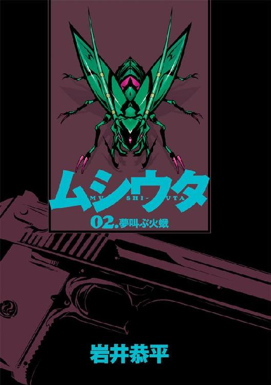
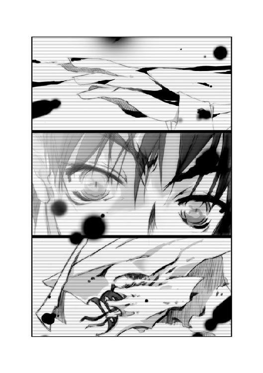

| ムシウタ 02.夢叫ぶ火蛾 | |
| 岩井恭平 | |
| KADOKAWA / 角川書店 (2012) | |


ムシウタ
02.夢叫ぶ火蛾
岩井恭平
角川スニーカー文庫
本作品の全部または一部を無断で複製、転載、配信、送信したり、ホームページ上に転載することを禁止します。また、本作品の内容を無断で改変、改ざん等を行うことも禁止します。
本作品購入時にご承諾いただいた規約により、有償・無償にかかわらず本作品を第三者に譲渡することはできません。
本作品を示すサムネイルなどのイメージ画像は、再ダウンロード時に予告なく変更される場合があります。
本作品は縦書きでレイアウトされています。
また、ご覧になるリーディングシステムにより、表示の差が認められることがあります。
ムシウタ
０２．夢叫ぶ火蛾
ＣＯＮＴＥＮＴＳ
目次・本文イラスト／るろお（頑童）
プロローグ 0.00 The others
頰に、風のあたる感触があった。
自分の顔にそっと触れ、風というものは〝形〟がないことを知る。
耳に聞こえるのは、風の吹く音。それと、ザワザワとざわめく音だった。
ざわめいているのは、目の前にある大きな〝形〟をしたものだ。近づいていき、手の先で触れてみる。硬い感触を感じてからようやく、自分の手にも〝形〟があることに気づく。
よかった──と、小さな安心感が胸にこみ上げる。
風と同じように、自分にも〝形〟がなかったらどうしようと思った。〝形〟がなかったら、きっと自分は何も残さず消えてなくなってしまうのだろう。
ザワザワという音は、まだ続いている。何度も聞いたことがあるそれは、〝樹〟というものが風に吹かれ騒ぐ音だったはずだ。ということは、今、自分が触れているものこそ〝樹〟であるということなのだろう。
〝樹〟の向こうに、もう一つ大きな〝形〟があった。
自分は、それが何であるか知っている。
この〝景色〟を見たのは、これで二度目だ。前に見た時は、小学生だったころだ。
自分が知っている唯一の景色。唯一の〝形〟。
腹の底に響くような、大きな鐘の音が響いた。
『さあ......〝教会〟の中へ......』
どこからか、声が聞こえた。
嗄れた老人のような声だ。
誘われるまま、〝樹〟の向こうの大きな〝形〟へと向かう。
そう、その〝形〟は〝教会〟という建物なのだ。
神様を崇める場所。神様の教えを説くところ。迷い悩む者が救われる場所──自分の記憶の中にある、〝教会〟という場所が示す意味を羅列する。
〝教会〟の中に入ると、色々な小さな〝形〟があった。だがそのどれもが静かで、〝樹〟のように音を立てることもなければ、絶えず〝形〟を変える（あれがきっと〝動く〟ということなんだろうと思った）ものもない。
いつか見たものとまったく変わらない〝景色〟だった。
自分は、この後に起きることも知っている。
ぽつ──。
目の前にある〝形〟の一つに、変化が生じた。
揺れ動く〝形〟が現れたかと思うと、それは他の〝形〟と一つになっていく。一つになったものからは、また新たな〝形〟が生まれ、上のほうへと動いていく。
『......燃える......』
どこからか、声。
自分は何もできず、その光景を見つめている。
『燃える......燃える......お前のそばにあるもの、すべて......』
〝形〟が、あっという間に〝形〟を失っていく。
恐怖が、自分を侵していく。
〝形〟がなくなる、ということは触れられなくなってしまうということだ。それはとても悲しく、恐ろしいことだ。
やがて〝景色〟は、すべて消えてなくなってしまう。
〝樹〟の存在を思い出し、後ろを振り返った。
──！
声にならない声が、喉からこぼれた。
〝樹〟もまた、別の〝形〟に取り込まれ、〝形〟を失いつつあった。
『お前の炎が......他の夢をさそい......すべてを灼き尽くしていく......今、この時も......』
震える手を、〝樹〟に向かって差し出す。だが自分の手は〝樹〟まで届かない。
すぐに、〝樹〟も姿を消してしまった。
自分の周りには、何もなくなった。
『......お前の炎は、お前の大切なものを食い尽くす......そうして、お前は生き続ける......たった一人で......何も触れることのできない世界で......』
大切なもの──。
自分には大切なものが、たくさんある。そのどれもが優しい声で自分に語りかけてくれ、温かい感触で触れてくれるものばかりだった。
『お前の炎が......すべてを無に変えていく......』
風すらも消えた世界で、両眼から涙がこぼれ落ちる。
自分の上げた悲鳴は、音がなかった。
完全な無へと帰していく〝風景〟の中、どこか頭の冷静な部分で思った。
この悲鳴はきっと、目を覚ましたベッドの上で聞くんだろうな──と。
1.00 The others
車両を降りた少年の背後で、空気が抜ける音とともに扉が閉まった。
振動を残し、三両編成の電車がホームを後にする。
同じ駅で降りた人間は、少年の他には数えるほどしかいない。
目の前に改札口があった。真新しい自動改札機は、しかし四基しかない。だがそれでもじゅうぶんだと思えるほど、駅にいる利用客の数は少なかった。
大きなボストンバッグを抱え直し、少年は改札を抜ける。
平日の真昼とあって、構内を行き交う通行人は職員をのぞけば老人やスーツを着た社会人らしき姿がほとんどだ。このような時間帯に十六歳の少年がいるのは、本来ならば珍しいはずだ。だが少年を振り返る者は、誰もいない。
コートを着た少年には、目立つような特徴が一切なかった。幼さの残る顔には特別な感情もなく、まっすぐ出口に向かう足取りは静かで迷っている様子もない。中肉中背の背丈に合ったありふれたコートを着込み、黒い髪が空調の風になびく。
唯一の特徴といえば、頰に貼ったバンソウコウくらいである。コートを脱げば、まだ癒えきっていない体に包帯が巻いてあるのだが、外見からは分からないだろう。
少年の肩に、どこからともなく季節はずれの昆虫が舞い降りる。異様に長い触角が特徴的な、緑色のかっこう虫である。
少年──薬屋大助は、〝鴇沢駅 南口〟と書かれた看板をくぐり、表へ出た。
一月の冷たい風が、顔面に突き刺さる。
目の前に拡がる光景は、大助が知っている数年前と全く変わっていなかった。
人通りの少ないロータリー。
飛び抜けた高さの建物が一切ない、くすんだ色の建造物。
通りを走る自動車の数さえ、まばらだ。
鴇沢町。
つい先日まで大助が住んでいた桜架市から、各駅停車の路線で三時間かかってやってきた辺境の町である。
大助の知らない町ではない。彼は一時期だが、この町で暮らしていたことがあった。その時は、まさかこうして再びここへ舞い戻ってくることになるとは、思いもしなかった。
無意識に唇を嚙む。ギュッ、と握りしめたバッグの肩かけが、音を鳴らした。
──突然、視界が真っ暗になった。
「だーれだ？」
背後から声をかけられ、大助は顔を強ばらせる。突然のことに驚いたことはもちろんだが、背後に忍び寄る気配に気づかなかった自分自身に愕然とする。
その声には、聞き覚えがあった。数年前には毎日のように、最近でも一ヶ月に一回は聞いている声だ。大助は肩から力を抜き、笑う。
「千莉？」
背後で笑い声が上がった。
その時になって、思い出す。声は確かに大助が知っている少女のものだが、彼女が大助の目をふさいでいるわけがなかった。彼女には、それができるはずがないのだ。
振り向くと、見知らぬ少女がいた。ピンク色のリップと胸元にある十字のチョーカーが特徴的な、大助と同年代くらいの女の子だ。
「大成功ー、イエーイ」
少女が笑いながら、身を引く。
その向こうに、もう一人の少女がいた。
「この町で会うのは、久しぶりだね」
長い髪を冬の太陽に反射させ、青く輝かせた少女だ。屈託なく微笑んだ目尻は、やや下がり気味になっている。タートルネックのセーターと厚地のパンツ、それに毛糸の玉が乗ったニット帽がよく似合っている。手に持っている細い杖は、一ヶ月前に彼女と会った時と変わっていない。
杖を持つ少女のそばには、二人の少年が寄り添うように立っていた。ショートカットの少女も、少年たちの横に並ぶように立つ。三人とも大助の知らない顔だ。
四人を代表するように、杖の少女が大助に向かって手を伸ばした。
「おかえり、大クン」
大助は、すぐに笑みを浮かべる。
大助の胸元を見つめたまま動かない少女の瞳に、彼の笑みは映ってはいないだろう。だが彼女には伝わったはずだ。彼女は──土師千莉という少女は、不思議なほど相手の気持ちに敏感なのだ。
肩にとまった緑色のかっこう虫が、ギチギチと羽を鳴らした。見ると、羽の一部に赤い染みのようなものが付いているのが分かった。かっこう虫の動きが鈍くなり、大助の胸の中から何かがこぼれ落ちるような感覚に襲われる。
「ただいま」
照れた笑いを浮かべ、大助は千莉の手をそっと握り返した。
少女の手のぬくもりを感じながら、大助は鴇沢町へやってくることとなった経緯を思い出していた。
1.01 大助 Part 1
真昼の総合病院は、大勢の関係者と患者の喧噪でやかましかった。
薬屋大助は入り口をくぐるなり、受付には目も向けずエレベータへと向かう。つい先日まで入院生活を送っていた場所だ。勝手はよく知っていた。
今の大助の格好は、ブレザーの上にダッフルコートを羽織っただけのシンプルな服装である。午前中は大助が通っている桜架東高等学校の三学期の始業式があったため、昼食をとることもなく制服姿のままの来院だった。
途中、通りかかった待合室で、大助は思わず足を止める。
待合室の壁に取り付けられたテレビ画面の中で、あるニュース番組が流れていた。『また謎の〝虫〟発見か？』と大きなテロップが見える。テロップの背景には、昆虫にも似た醜悪な怪物の模型を囲んだ討論会が開かれている。
「ねえ、知ってる？ この前の海浜公園での避難騒ぎ、アレも本当は〝虫〟が出たからってウワサ──」
「私の友達に、虫憑きを見たことがあるっていうコがいたんだけど......急に、そのことを一言も話さなくなっちゃったのよね。もしかしたら、あの特別環境ナントカっていう国の機関に口止めでもされたんじゃないかって──」
そばにいた看護婦たちが、声をひそめて囁きあっているのが聞こえた。
「......」
大助は無言で、テレビを凝視する。
──今、日本を騒然とさせているる存在がある。
〝虫〟である。
人に寄生し、その人間の夢を喰って成長すると言われている異形の存在である。大きさや特徴は異なるが、それらの外見が昆虫に類似していることから、そう呼ばれている。〝虫〟に寄生された人間は〝虫憑き〟と呼ばれ、その存在が公式に認定されていないとはいえ、人々の恐怖と差別の対象として一般化しつつあった。
だが、〝虫〟は実在することを大助は知っている。
特別環境保全事務局、略称で特環と呼ばれる組織は、そんな〝虫〟に取り憑かれた人々を秘密裏に捕獲、隔離することを目的とした機関だ。特環の局員は、日常的には異なる職業につく者たちがほとんどであり、表面的には正体を明かすことはない。特別環境保全事務局の存在は、最近になってマスコミに騒がれている。だが本来の姿がまだ露見していないのか、それとも大助が知らないような報道規制が敷かれているのか、組織に関する踏み込んだ内容は一般には明かされていなかった。
大助はコートを脱ぐ。待合室をあとにし、廊下を歩いてエレベータに乗り込む。
三階でエレベータを降りると、通路の先に佇んでいる一人の人物に気がつく。後ろ姿しか見えないが、長い髪とスーツを着たスリムな体形で女性だと分かる。女性は両腕で書類の束のようなものを抱きしめ、呆然と立ちつくしているように見えた。
「柊子さん」
大助が声をかけると、女性はビクンッと大きく肩を震わせた。
「だ、大助さぁん」
振り返った女性は、涙目だった。書類を抱いたまま大助に駆け寄ってきたかと思うと、おもむろに彼の胸に飛び込んでくる。
「わっ！ ち、ちょっと、柊子さん！ やめてよ、こんなところで......！」
「ど、ど、どうすればいいんですかぁ？ 私、土師センパイの代わりに、東中央支部の支部長代理になっちゃったみたいなんですよぉ......！」
顔を赤らめる大助を、女性は涙目で見上げる。
化粧気がまったくなく、後頭部に寝グセがあり、大人げなく十六歳の大助にすがるような表情をしていることをのぞけば、美人とも言える女性だ。つまり顔の造形よりも、諸々のマイナス要素が勝ってしまっている人物である。
五郎丸柊子。大助の知っているかぎりでは、去年、国立大学を卒業したばかりの二十三歳。新総務省に勤めている公務員であり、同時にテレビ番組曰く〝不透明きわまりない疑惑の〟特別環境保全事務局の局員でもある女性だ。彼女の言う東中央支部というのは、特別環境保全事務局の支部の一つである。
「柊子さんが？ 支部長代理？」
大助は戸惑うが、柊子はさらに彼の何倍も困惑している様子だ。
「私、もう何がなにやら......」
「とにかく、あっちへ行こうよ」
エレベータの利用者が通る通路を避け、大助は柊子を廊下の奥へと引っ張っていく。
無言で歩く大助を見て、柊子が不思議そうに首をひねる。
「あ、あの......あんまり驚かないんですね、大助さん。私なんかが土師センパイの代わりになったっていうのに......」
「土師が柊子さんを推薦したってことは、知ってたから。なんとなく予想はしてたんだ」
「え......？」
非常口のランプが灯る通路で、二人は足を止めた。
大助は手を離し、振り返る。
「推薦のことを聞いたのは、この間の葉芝市での戦いが起こる直前だよ」
柊子が、表情を曇らせた。
──薬屋大助は、虫憑きだ。
同時に、特別環境保全事務局の局員でもある。特別環境保全事務局は虫憑きを捕獲するための手段として、同じ虫憑きを管理して訓練している。大助は〝かっこう〟というコードネームで、特別環境保全事務局の中でも最も強力な虫憑きとして認定されている。
特別環境保全事務局は虫憑きの特性に応じて、種別と格付けをおこなっている。純粋な戦闘能力に優れた虫憑きを〝火種〟、特別な能力を有しているものを〝異種〟、その他の特異な条件を含んでいるものを〝秘種〟と定め、それぞれ一号から十号、さらにそれ以下の無指定とナンバリングしているのだ。大助は火種一号の虫憑きとして登録されている。

「土師には、会った？ 柊子さん」
大助の問いかけに、柊子は口ごもる。
「いえ......その......」
「......」
大助は、わずかに唇を嚙んだ。
つい一週間前のことである。
特別環境保全事務局と、虫憑きによるレジスタンス〝むしばね〟が全面衝突するという出来事があった。戦いの発端となったのは、たった一人の少女だった。〝ふゆほたる〟というコードネームを与えられた、十五歳の虫憑きである。
〝虫〟に自らの夢を喰われた虫憑きは、死に至る。またその前に寄生された〝虫〟を殺された者は、二度と感情を持つことのない欠落者となりはてる。虫憑きの末路は、そのどちらかしかないとされていた。
しかし〝ふゆほたる〟は、欠落者の状態から復活したのだ。それは前代未聞のことであり、虫憑きという存在から元の人間に戻る手段を知る手がかりとして、〝ふゆほたる〟を巡る争いが生じることとなったのだ。〝ふゆほたる〟はその重要性と危険性から、秘種一号の虫憑きに指定された。
レジスタンスのリーダーである〝レイディー・バード〟という少女もまた、火種一号に認定されていた虫憑きだった。〝かっこう〟、そしてレイディー・バードという特別環境保全事務局と〝むしばね〟を代表する二人の強力な虫憑きが衝突したことによって、一つの街がまるごと壊滅した。
そう、〝壊滅〟だ。たった二人の人間が全力で戦ったことによって、特別環境保全事務局の実験施設でもあった街が完全に機能を失ったのだ。現存する五人の一号指定されている虫憑きのうち、三名が入り交じった戦いは、熾烈を極めた。一時は第三勢力とも呼べる集団のリーダーにして異種一号の虫憑き、ハルキヨも大助の前に姿を現した。
戦いはかろうじて〝かっこう〟が勝利した。さらに〝ふゆほたる〟の捕獲にも成功した。
だが〝かっこう〟が所属する東中央支部の支部長である土師圭吾という人物が、戦闘に巻き込まれ重傷を負うこととなった。意識不明の重体となった彼は、いまだ目を覚ましていない。
「なんていうかその、信じられなくて......あの土師センパイが、こんなことになるなんて......お世話になってたのに薄情ですね、私......」
柊子が、愛想笑いを浮かべる。大助にとっても見慣れた彼女の笑顔は、しかし普段よりも弱々しく見えた。
柊子は正式には、土師圭吾の後輩ではない。彼女の所属はあくまでも新総務省であり、土師は法制局だった。彼女が土師をセンパイと呼ぶのは、特別環境保全事務局に入局する以前から両者が知り合いだったことに関係しているらしい。東中央支部の仕事としては、柊子は土師について車の運転手をしていた程度だったはずだ。
「あ、あの、私が推薦されたことを知ってたって、どういう意味ですか？ 大助さんは、その、理由とか......？」
話をそらすように、柊子が大助にたずねる。大助は嘆息した。
「理由なんて、分からないよ。でも、土師が言ってた。自分に何かあったら、まず間違いなく推薦通り柊子さんが後任をまかされるだろうって」
「ど、どうしてですか？」
大助は少し迷ったが、言う。
「土師は、本部をだしぬいて色々と目立ってたから。だからきっと、土師の次は......おとなしい人間が東中央のリーダーになるだろうって。なにかと生意気な東中央を、本部が取り込むための......お飾りとして」
柊子の表情が、明らかに凍りついた。
──彼女は、無能だよ。
土師が言っていた言葉を、思い出す。
──今はまだ、ね。
青年はいつもの薄笑いを浮かべて、そう言っていた。彼の言っていた意味を、大助はいまだに理解できずにいる。大助の目から見たかぎりでは、どんなにひいき目に見たところで、柊子が有能なように見えたことはなかった。
柊子はうつむいたかと思うと、愛想笑いとともに頭をかく。
「あは......なぁんだ、そぉですよね。私なんかが土師センパイのあとを継げるわけないですもん。本部の人も、ちゃんとそのこと、分かってたんですね」
「〝そこが、狙い目なのさ〟」
「......へ？」
「そう言ってた。あいつが」
「ど、どういう意味なんですか、それ？」
「さあ？ オレもあいつの考えてることなんて、十分の一も分からないからなー」
大助は頭をかきながら言うと、柊子から目をそらした。壁によりかかり、たずねる。
「......は今、どうしてるか分かる？ 柊子さん」
「え、え？ なんですか？」
「詩歌......〝ふゆほたる〟は今、どこでどうしてるかと思って......」
柊子が、きょとんとした顔で大助の顔を見た。
一週間前の戦いで大助がみずから捕獲した〝ふゆほたる〟という虫憑きの名前は、杏本詩歌という。大助は詩歌に対し、少なからず特別な想いがある。
やむを得なかったとはいえ、束縛の身となった詩歌は今、どうしているだろう？ この一週間、ずっと彼女のことばかり考えていた。
大助と詩歌の特別な関係は、柊子も知っている。土師が以前、おもしろおかしく脚色して柊子に言いふらしたのだ。柊子は思い出したようにハッとして、胸元の書類に視線を落とす。
「は、はい、えーとですね」
書類の中から一枚のクリアファイルを取り出し、読み上げる。
「えー......捕獲されたその日に、桜架市の関連施設に収容されています。健康診断と体力測定、マインドチェックなどを今も行っているようですね。問題がなければ、東中央支部の管轄にある都市のどこかへ移送され、監視者とともに日常生活に潜伏させて変化を見る予定......どこの都市に移送されるかは目下論議中です。なおこれらは各支部の支部長以上のみ閲覧できるレベル甲の３級に属する機密事項であり......って、あれぇ！ こ、これ、機密じこ、事項......！」
「そっか」
安堵し、大助は息を吐く。
無事だということさえ分かれば、それでいい。詩歌は、強い。あの少女なら、たとえ何があろうと負けはしないだろう。いつか、彼が迎えに行く日まで──。
「あ、あの......大助さん？」
心配そうに顔をのぞきこんでくる柊子に対し、大助は笑いかける。
「大丈夫だよ、柊子さん。東中央支部は、オレが守るから。オレがいるかぎり、本部や他の連中、〝むしばね〟の残党やハルキヨにも絶対に手は出させない」
「大助さん」
七歳も年下の少年の言葉に、柊子が心から安堵したように微笑む。
だが柊子は、唐突に表情を変えた。何かを思い出したように、表情に陰りが落ちる。
「どうしたの、柊子さん？」
「あ、あの、大助さん......じ、実はですね、その......あの......」
柊子は言いよどみ、眼鏡のズレを直そうと片手を持ち上げる。その拍子に、抱きかかえた書類の束を落としてしまう。
盛大に床にばらまかれた書類を、柊子と大助が拾い上げる。
「ご、ごめんなさいっ」
「ちょっと落ち着いたほうがいいよ、柊子さん......ん？」
「え？」
大助は、地面に落ちた書類の一つを見て目を見開いた。
その書類には、一人の少女の顔写真が貼りついていた。
年頃は大助と同じ、十五、六歳くらいだろう。長い黒髪は、光の加減のせいか濃い青に染まっているようにも見えた。下がり気味の目尻が穏和そうな、可愛らしい女の子だ。
「......！」
とっさに柊子が手を伸ばすが、その腕を大助がつかんで止める。
「どうして──」
大助は、柊子を見た。別人のように鋭い目つきに、柊子が怯えるのが分かった。
「どうして、千莉の写真をお前が持ってるんだよっ！」
柊子が身を竦ませるが、大助はかまわず叫ぶ。
「虫憑きの指定書じゃないか！ なんで千莉が......あいつが虫憑きだってことは、俺と土師しか知らなかったはずだぞ！ それが、どうして！」
「だ、大助さん、痛、痛いです......！」
「説明しろよ、柊子！」
「お、落ち着いてください、大助さん......！ ゴーグルもしてないのに、〝かっこう〟さんになっちゃってますよ！」
柊子が必死になだめようとするが、しかし大助は引き下がらなかった。柊子の腕を摑んだまま、彼女の顔を間近から睨みつける。困惑と怒りが大助から理性を奪っていた。
怒声を聞きつけてやってきた看護婦に対し、柊子が「な、なんでもないです、どうぞお気になさらずに」と愛想笑いを振りまく。大助の顔を再び見ると、深呼吸をしてから説明する。
「わ、私も、この病院に来るまでに説明を受けただけなので、詳細までは分かりかねますけど......写真の少女、土師千莉、つまり土師センパイの妹さんが虫憑きだということは、だいぶ前から特環は知っていたそうです」
大助の心臓が、殴りつけられたように大きく鼓動した。柊子の腕を摑む手から力が抜ける。
「彼女が静養している鴇沢町には、すでに西南西支部の監視者が潜伏し彼女を監視しているそうです。このことを知っているのは土師センパイと、鴇沢町を管轄に入れている西南西支部の支部長だけだったとのことですが......でも、土師センパイが今回のようなことになって......急に西南西支部長が中央本部に真実を報告したそうです。土師千莉の〝虫〟の希有な特性──〝始まりの三匹〟と同じ、他の人間の夢を喰うという特性を危険視した中央本部は急遽、土師千莉捕獲のために最高位の局員を鴇沢町へ潜入させることを決定しました」
柊子の説明は、淡々としていた。大助は呆然と呻く。
「最高位の......局員......？」
「火種一号指定局員〝かっこう〟......大助さん、あなたです」
今度こそ、大助から表情が消えた。柊子が顔を歪め、まくしたてる。
「〝かっこう〟は一時、東中央支部における任務をはずれ、土師千莉の通う教育機関に潜入し待機、指定の日時まで目標を監視すること。また任務における最重要事項として、所属する支部の管轄外の地域での一切の戦闘を禁じる。以上の規約を破り戦闘行為を行った場合、同局員に一等級の罰則を与えることとする......以上が、中央本部の決定です」
言っているうちに、柊子の声がか細くなっていく。
「〝かっこう〟さんに対する一等級の罰則として......特別環境保全事務局からの解雇および捕獲対象への移行、加えて離縁した血縁者に対する真実の公表などが呈示されています......」
「......！」
大助の手が、柊子から離れた。
柊子が唇を嚙みしめ、うつむく。
向かい合った二人の間に、沈黙が落ちた。
「は──」
静寂を破ったのは、大助の口から漏れた笑みだった。
「つまり俺は、東中央支部から外されたってことか......？」
「原則では、東中央支部所属です......だからこそ、他の地域での戦闘を禁止されて──」
「土師は、いつ目を覚ますかも分からないんだぞ？ 〝みんみん〟や〝兜〟もいない。〝なみえ〟も行方不明のままだ。なのに俺までいなくなったら、誰が東中央支部を守るんだよ？」
「......」
「誰が、詩歌を......！」
怒りにまかせ、柊子の襟を大助がつかみあげる。
「ふざけんなっ！ 〝むしばね〟やハルキヨはまだ詩歌を狙ってるんだぞ！ そんな時に俺が西南西支部へ......それも、戦闘するなだって？ 東中央支部を取り込もうとしてる中央本部のやりたい放題じゃないか！ お前は一体、なにやってたんだよ！ 中央本部のそんなバカげた決定を、だまって認めたのか？」
「わっ......」
こらえきれなくなったように、目に涙を浮かべた柊子が大助の腕を摑みかえす。
「私だってねえ！ 今日はじめて知らされたんですっ！ そんな大変なことが起きていたことも、土師センパイが......センパイが、あんなことになってたことも......！」
「それにしたって、抗議くらいしなかったのかよ！ 土師に何を教わってたんだよ！」
「センパイに教わったのは家庭教師をしてもらってた物理と化学と、特環に入ってからの車の運転くらいです！ そんなもんで、どうしろっていうんですかぁ！」
「ああ、そうだったな、無能だから土師の跡継ぎになったんだもんな！」
「大助さんだって、同じようなものじゃないですか！ 強すぎるから、地方に飛ばされたりするんですよ！ ああ、ごめんなさい、今は最強の〝かっこう〟さんでしたね！」
互いの襟を摑みあった両者が、間近でにらみ合う。
「俺は......」
柊子から手をはなし、握りしめた拳で壁を叩く。
「オレは一体、何を守るために......！」
「......」
柊子が、唇を嚙みしめる。
同じ特別環境保全事務局の中でも、以前から中央本部と東中央支部の考え方の相違は浮き彫りになっていた。敵を作ることもかえりみずに時に強引な手段を用いていた土師を、中央本部はこころよく思っていなかったのは確かだ。これまでは土師の知略と大助の力で、中央本部もムリに粛清をしようとはしてこなかったのだ。
葉芝市での決戦で、大助は詩歌を守ろうと心に決めた。土師も虫憑きである自らの妹のために、特別環境保全事務局の局員として命がけで戦ったのだ。
だが、その結果が現在の状況である。
中央本部の意図は、明らかだった。いかに強力とはいえ、大助の戦闘力を中央本部が危険視していたのは知っている。葉芝市の戦いで、大助は結果的に成虫化したレイディー・バードを撃破し、〝ふゆほたる〟を捕獲した。任務としては大成功だが、そのあまりの強さに中央本部が警戒を強めたのだろう。土師がいないのを好機に、彼を地方へ追いやろうとしているのだ。あまりに皮肉すぎる結果である。これでは、大助は何のために戦ったのか分からない。
「......明日、鴇沢町へ向かうよ」
納得したわけではないが、ここで柊子を相手に食ってかかったところで意味はない。今の大助にできることは、一刻も早く任務を終えて桜架市へ戻ってくることだ。口では承諾しつつも、握りしめた拳が悔しさのあまり震えていた。
背を向けようとした大助を、柊子が呼び止める。
「あ、ちょっ、ちょっと大助さん。まだ、鴇沢町についての情報が」
「......？」
「鴇沢町は今、〝むしばね〟の残党が不穏な動きを見せているそうです。それともう一つ......町はずれで〝教会〟が目撃されたという報告もあります」
大助は振り返った。
「〝教会〟が......？」
頷く柊子を見て、大助は歪んだ笑みを浮かべる。
「〝むしばね〟の残党に加えて、〝始まりの三匹〟のうちの一匹か。そんなところで戦闘まで禁じられて、一体どうしろってんだ、中央本部は！」
「大助さん......」
「任務の詳細をまとめておいてよ、柊子さん。明日の朝にでも、取りに来るからさ」
言って、大助は身を翻す。慌てて書類を拾い集めながら、柊子が顔を上げる。
「え、ええ？ い、今からですか？」
「何か別の任務でもあるの？」
「あ、いえ、その、大したことじゃないんですけど......そのぅ、今日は合コンに誘われてたりするんですよね」
「......」
「ホラ、えーと......私も社会人になったことですし、男の方のおつき合いを覚えておくべきかなぁ、なんて......と同期のケイちゃんがセッティングしてくれたんですよ、あはは」
「拳銃を持ってくるの忘れてたよ」
「ジョークです！ イッツ・ジョーク！ あは、あはははは」
両手を挙げてひきつった笑みを浮かべる柊子。
「オレも土師も、同じなんだ」
大助は嘆息し、まっすぐに柊子を見つめる。
「中央本部は、信用できない。連中は〝始まりの三匹〟を倒すことよりも、虫憑きの捕獲を優先してる。本部の隔離施設じゃ、だいぶ無茶な虫憑きの研究をしてるっていうし......ヤツらの目的は虫憑きそのものだ。〝虫〟っていう得体の知れないものを研究するためだけに、〝始まりの三匹〟を野放しにしているようにすら見える」
柊子の顔色が、変わった。
大助の言う事実を知っている者は、特別環境保全事務局の中でも数少ないだろう。土師はいち早く中央本部の矛盾したやり方に気づき、それゆえに中央本部に目をつけられていたともいえる。
「は、はは......まさか、そんな......いくらなんでも──」
「〝始まりの三匹〟の行方を探ってたのは、土師だけだ。あいつはどんなに今の虫憑きに恨まれようと、まるで気にしてなかった。それもみんな、妹みたいな虫憑きをもう増やさないためだ。あいつは誰よりも、未来に虫憑きが生まれることを嫌ってた」
「......土師センパイが？」
柊子が呟いた。大助は、続ける。
「オレたちには、東中央支部がまだ必要なんだ。誰に憎まれようと、何を失おうと今まで必死に戦い続けてきた。東中央支部がなくなったら、オレたちは戦うこともできなくなる。こんなところで立ち止まったら、それこそオレたちは人の夢を奪い続けるだけの化け物になってしまう......」
大助は柊子の目を見据え、言う。
「オレが戻ってくるまで......土師が戻ってくるまで、なんとか詩歌を──〝ふゆほたる〟を守ってほしい。今の東中央支部から〝ふゆほたる〟まで奪われたら、それこそなにもかもおしまいだ。だから......どんな理由であれ、今は柊子さんにオレたちと東中央支部の虫憑きたちの夢がかかってるんだ」
心から願いを込めた、大助の言葉だった。
欠落者から生き返った〝ふゆほたる〟は、これからも数多の組織に狙われるだろう。だからこその、切り札だった。〝ふゆほたる〟自身も秘種一号の虫憑きである。彼女の力を知る者ならば、狙いこそすれうかつに東中央支部に手を出すことはできないはずだ。
それに、大助自身の想いもある。
詩歌は、大助の迎えを待っている。〝かっこう〟でもなければ虫憑きでもない、普通の少年にすぎない薬屋大助を待っているのだ。
しかし、まだ大助は彼女の前に姿を現すわけにはいかなかった。四年前に一度、詩歌を欠落者にしたことから始まった、自分の行いに対するケジメをつけなければならない。
「〝始まりの三匹〟は、俺が倒す。だから柊子さんには、東中央支部を守ってほしい」
大助の頼みに、柊子は頼りない笑みを浮かべた。
「お気をつけて、大助さん」
大助は微笑を浮かべ、身を翻した。
1.02 大助 Part 2
「大クンの手、なんだか前よりもあたたかいね」
「え？」
鴇沢町は、都市と呼ぶには小さな町だ。
人口は三万人ほどで、最近は若年層を中心に住人の数は減りつつある。大きな建物は駅周辺に密集しており、繁華街を抜けて国道沿いに出ると、ちらほらと娯楽施設がある程度だ。
駅から十分も歩くと、澄んだ空気が肺に心地よい。遠方にはうっすらと雪をかぶった山頂が見える。
大助と土師千莉は、手をつないで町はずれの県道を歩いていた。二人が歩く道を境に、住宅街と田園風景が真っ二つに分かれている。昼下がりの歩道を歩く通行人は、たまにすれ違う程度しか見あたらない。
「会うたびに、大クンは喋り方も優しくなっていくみたい」
そう言って微笑む千莉の視線は、しかし大助の胸元を見つめたままだ。
チクリ、と胸の奥が痛むのを感じた。
千莉の笑みは、誰よりも純粋だ。大助は彼女の笑みを見るたびに、懐かしさにも似た安心感に包まれる。しかし同時に、決して大助の瞳を見ることのない目で、彼の胸にたまった罪悪感を見透かされているようにも感じるのだった。
「オレは、優しくなんかないよ」
苦笑いを浮かべ、千莉の手を握り直す。千莉の手こそ、とてもあたたかかった。小さな手だが、その熱は大助の手を包み込んでいるようにさえ感じる。
くすり、と千莉が笑う。
「照れてる？ 大クン」
「信号だ。止まって」
「ん......」
赤く灯った信号の前で、二人は足を止める。肩からボストンバッグを提げた大助と、片手に杖を持った千莉が手をつないだまま白い息を吐く。
二人の間に、わずかばかりの沈黙が落ちた。
千莉は、先天的に目が不自由である。
大助が千莉と出会ったのは、両者ともに小学六年生だった頃だ。大助は土師に拾われてしばらくして、千莉を紹介された。出会った当初は戸惑ったが、視力が利かないことと体が弱いということを除けばごく普通の女の子だと知り安心した。むしろ千莉は普通の人よりも匂いや他人の感情に敏感で、驚かされることがよくある。
大助は、中学生の頃に鴇沢町に住んでいたことがある。当時は同じ家でいっしょに生活していた。よく笑い、かぎりなく優しい千莉を、大助は妹のように思っていた。
目の前をトラックが走り抜けていく。
千莉が咳き込んだ。それを見て、大助は千莉の手を引っぱる。
「大クン？」
「たんぼ道を行こう。ちょっと回り道になるけど」
「......」
「怖い？」
「ううん、ぜんぜん」
笑う千莉は、嬉しそうだった。
「あ、信号が点滅してる。走って」
交差点を小走りに渡る千莉の足取りは、軽快だ。手を握る大助を、完全に信用している証拠なのだろうと思う。
「ストップ。段差があるから、気をつけて」
「美樹さんも緒里くんたちも、すっごく心配性なんだもん。走ろうとしただけで、怒るんだよ」
杖で段差をさぐりながら、千莉が頰をふくらませる。
美樹というのは、千莉の身の回りの世話をしてくれている女性のことだ。緒里というのは、先ほど会った千莉の友人たちの一人だったはずだ。
ガードレールの隙間から田園に入り、砂利が敷き詰められた道を歩く。
冬のたんぼ道は、とても静かだ。二人の足音が、澄み切った空気の中にとけ込んでは消えていく。千莉が杖を持った手をあげ、大きく伸びをした。
「あー、気持ちいい！ ここを歩くのって、ひさしぶり。大クンが桜架市に行っちゃった時以来かなあ？」
「はしゃぐのはいいけど、落ちないよう気をつけろよ」
「えー、どうしようかなぁ？ 落ちたら、助けてくれるんだよね？」
「助けないよ。わざと落ちるようなヤツは」
「あー、ひどい。前言撤回、ぜんぜん優しくない」
怒ったように口をとがらせる千莉だが、すぐに笑顔に戻る。大助もまた微笑んで、千莉の歩く方向を修正する。
田んぼ道の向こうに、住宅街が見えた。千莉の住むマンションは、そこにある。
「ねえ、大クン。お兄ちゃんは元気？」
──ドクン。
心臓が、大きく脈打った。
だが大助は、内心の動揺をおもてには出さないようつとめて言う。
「あいかわらずだよ。色々と面倒な仕事をまかされて、忙しそうだ」
「最近、連絡くれないからちょっと心配だな......公務員のお仕事って、大変なんだね」
少女が苦笑するのを見て、大助は安堵する。
千莉は驚くほどに他人の感情に敏感だ。彼女を騙すのはとても難しい。それに、彼女を騙すのはとても胸が苦しい。
千莉は兄の圭吾が、法制局に勤める普通の公務員だと信じて疑っていない。特別環境保全事務局という特殊な仕事についていることは、知らないのだ。もちろん大助に関しても同様だ。彼が虫憑きで、圭吾が彼を管理しているなど、思いもしないだろう。
「ちゃんとご飯食べてるかなあ。お兄ちゃんって頭が良いくせに、自分のことになると全然なにも考えてないんだもん」
「うーん、確かにそういうトコあるな、アイツ」
「大クンもだよ」
「え？」
「自分が辛い時でも、他のことばかり考えてる。自分の手が冷たくなってる時も、それを見ないようにしてる。なんだか......自分のことが嫌いみたい」
「......」
表情を消して黙り込む大助の手を、千莉の手が包み込む。杖を持ったままの手を重ね、両手で大助の手を握っていた。
「今も、少しだけ手が冷たくなってる」
「......風が冷たいからだよ」
「じゃあ、あたためてあげるね。私が、そばにいる時だけでも......」
微笑む千莉の手から、あたたかい感触が伝わってくる。あまりのあたたかさに、大助の頭の中でかけめぐっていた様々な想いや迷いが溶けていくようだった。
大助はまどろみにも似た安心感に満たされながら、心中で思う。
──ごめん、千莉。オレは......。
土師圭吾との約束を、思い出す。
土師は意識を失う直前に、自らの思いを大助に託した。しかし、それを伝えることは今はできない。刺すような痛みが胸に突き刺さる。
「あ......ごめんなさい、足を止めちゃったね。行こう？」
片手を離し、千莉が再び歩き出す。顔をそむけた少女の頰が、少しだけ紅潮しているように見えた。
「大クンとまたいっしょに学校に通えるから、嬉しいの。叔父さんが転勤が多いと、大変だね。今度はどれくらい、この町にいられるの？」
千莉が、照れ隠しのように早口に言う。彼女には、大助が鴇沢町にやってきた本当の理由を告げてはいない。大助の後見人である叔父の転勤ということになっている。叔父に先がけて転入が決まっているということにして、住む家が決まるまで千莉の住むマンションで世話になることになっているのだ。
「うーん、そんなに長くはいられないかな？」
「そっか。今の学校はすごく楽しいから、できるだけ長く居られるといいね」
「さっき駅でいっしょに居た三人のおかげ？」
千莉とともに鴇沢駅にいた、三人の少年たちを思い出す。彼らとは簡単な自己紹介だけをして、別れた。今日まで冬休みということもあり、千莉の送り迎えをしてくれたそうだ。
「そうなの！」
千莉が表情を輝かせる。
「みんな、すごく優しくて、良い人たちばかりなの。明日、ちゃんと紹介するね。緒里くんとあっちゃんは私と同じクラスだから、大クンも仲良くしてね？」
本当に仲が良いのだろう。千莉の表情は、とても楽しそうだ。
大助の転入手続きは、すでに特別環境保全事務局が数日前にすませておいたそうだ。しかもご丁寧に、千莉と同じクラスである。
先ほど会った同年代の男女の顔を思い出す。
緒里、というのは確か、やや目つきが鋭いくせ毛の少年だったはずだ。フルネームが確か、圓藤緒里だったはずである。
「緒里くんはねえ、カッコ良い男の子なんだよ。ちょっと他の人には冷たいところもあるけど、女子にはすごく人気があるの。一年生なのに、サッカー部のレギュラーなんだって。でもちょっと心配性すぎるかなあ。私が一人で歩こうとすると、すぐに怒るし」
「へえ、分かりやすいヤツだな」
大助が言うと、千莉は「分かりやすい？」と首を傾げた。そんな彼女の様子を見るかぎり、緒里という少年の思いはまだ成就していないようだ。大助は苦笑した。
「あっちゃんは、緒里くんの幼なじみなんだって。幼稚園からずっといっしょだって言ってた。二人とも仲が良くて、いつもケンカばかりしてるの。漫才にしか見えない時もあるけど。あっちゃんの家はカトリックで、とても信心深いんだよ」
あっちゃん、というのは最初に大助の目隠しをした少女のことだ。砂小坂純という名前だったはずだ。そういえば、首から十字のチョーカーをかけていたことを思い出す。
「有夏月くんは、なんていうか......夕日みたいな人」
「夕日？」
緒里のとなりにいた、穏和そうな顔をした少年を思い出す。緒方有夏月という、ちょっと変わった名前をした少年だ。
「うん。ほんわり温かくて、でもちょっと寂しい感じ。おとなしいからかな？ 夕日って、金色なんでしょう？ だったら、きっと有夏月くんも金色なんだと思う」
夕日が金色、という印象ははじめて聞いた。誰からか聞いたのか、それとも千莉が特別な感性を持っているのだろうか。
「色で言うなら、緒里くんは......冷たいけどとても大事な水みたいな、青かな。あっちゃんはいつも忙しくて怒ってばかりだから、赤。火みたいに」
「じゃあ、オレは？」
「大クンは......」
考えるように、千莉が黙り込んだ。
その時、急に大助を落下感にも似た感覚が襲った。
「──！」
がくり、と膝が折れる。
──な、なんだ？
気が付くと、砂利道の上に膝をついていた。急激な脱力感が大助を襲う。自分の身に何が起きたのか、分からない。
「大クン？」
突然に足を止めた大助を、千莉が振り返る。
「！」
地面に、一匹の昆虫が落下した。
大助の〝虫〟である、緑色のかっこう虫だ。
かっこう虫の羽に、揺らめく火のようなものがまとわりついていた。それは暴れるかっこう虫の羽を、じわじわと蝕んでいく。
大助を襲う脱力感──それは、〝虫〟に夢を喰われる感覚と酷似していた。
そんな、バカな......！
大助は千莉を見上げる。彼女は「ど、どうしたの、大クン？」と困惑した様子で大助の手をたどって腕を摑んでいる。
千莉は、〝虫憑き〟だ。
そのことを、千莉自身は知らない。虫憑きになった瞬間も、幼かったため覚えていないのだろう。それとも夢の中の出来事と思いこんでいるのかもしれない。
また千莉が虫憑きであることを自覚していないのは、彼女の視力が不自由であることと、もう一つ、彼女に寄生した〝虫〟が特殊な特性を持つことが関係していた。
千莉の〝虫〟は、宿主ではなく他の人間の夢を喰うのだ。虫憑きを生むと言われている〝始まりの三匹〟を除けば、これまで確認されたことのないタイプの〝虫〟である。
だが千莉の〝虫〟は他の人間の夢を喰うとはいえ、虫憑きを生むことはない。さらに彼女の〝虫〟には好みがあるらしく、気に入った人間の夢にしか手をつけることはない。これまで〝気に入った人間〟は、彼女の兄である土師圭吾、それに大助がいる。しかし──。
......今まで、一度にこんなに喰われたことなんてなかったぞ！
顔を歪め、大助は心中で呻く。
大助の胸の中から、ごっそりと何かが抜け落ちる虚無感があった。それは、かっこう虫を蝕む赤い火虫が消えてからも残っていた。
「......大丈夫、ちょっと転んだだけだよ」
立ち上がり、しがみつくように絡んだ千莉の腕をほどく。
「ほ、本当に？ どこか、具合悪いの？」
「大丈夫だって、ほら」
言って、やにわに千莉の前に腰を落とす。
「きゃあっ」
背負った千莉の身体は、やけに軽かった。肩から提げたボストンバッグのほうが重いのでは、とすら思える。
「な......なんで？ お、降ろして、大クン！」
「千莉こそ、顔色が悪いよ。少し歩きすぎたみたいだ」
「大クン、荷物もあるのに......！ 私は大丈夫だから！ お、降ろしてってば！」
「しっかり摑まってろよ」
「え？ ......きゃー！」
千莉を背負ったまま、大助はたんぼ道を駆け抜ける。背中から聞こえる千莉の悲鳴が、上下に激しく揺れていた。
住宅街に入ったところで、大助は千莉を降ろした。
激しく息を切らせる大助の横で、千莉もまた胸をおさえていた。
「さ、さすがにちょっとキツかったかも......ちょっと休憩......」
「信じられない、どうしてそんなムリするの、大クン！」
怒る千莉に対し、大助は「あはは」と弱々しい笑みを返す。ここで少し体を休めれば、すぐに回復するだろう。体力と、それに喰われたばかりの精神力も。こうでもしないと、敏感な千莉は大助の異変に気づいてしまうだろう。
住宅街の向こうに、橙色の夕日が浮かんでいた。
夕方になると、大助はいつも思い出すことがある。
詩歌。そして......立花利菜。
大助と同じ夢を持つ虫憑きだ。詩歌は今も自らの〝虫〟と戦い、利菜は──大助の手の中で息絶えた。彼女たちのことを思い出すと、自分の胸の中にあった虚無感が、少しだけ満たされていくのを感じる。
「ごめんね、大クン」
大助の心臓が跳ねた。
見ると、千莉は唇を嚙んでいた。一瞬、彼女の〝虫〟のことを謝っているのかと思った。だが、違うようだ。体が弱く、心配をかけてしまったことを謝っているのだろう。
「違うだろ」
息を整え、大助は千莉の手を握る。
千莉は驚いた顔をして、すぐにいつもの明るい笑みを浮かべる。
「うん。〝ありがとう〟だよね」
「行こう」
数分も歩くと、千莉の住むマンションに到着した。エレベータを上がり、四階の自宅へと向かう。
インターフォンを鳴らすと、すぐに内側から玄関のドアが開いた。
「おかえりなさい」
笑顔で出迎えたのは、長身の女性だった。スリムな体つきをした美人で、ドアノブをつかむ腕はスラリと長い。
千莉と同居している人物で、長谷川美樹という女性だ。美樹は大助を見ると、ニコリと笑って中へ招き入れる。
「大助くんも。おかえりなさい」
「ただいま」
少し照れた笑みを浮かべ、大助は室内へ入る。
マンションの室内は、広かった。暖房が利いているのだろう、リビングからは暖かい空気が流れ込んでいる。大助はコートを脱ぐ。
ベランダのある窓からは、外の風景が見える。このマンションのように高い建造物は周囲になく、鴇沢町の住宅街を見下ろすことができた。
千莉が「私、着替えてきちゃうね」と言い残し、リビングを去っていく。家の中では大抵のことが一人でできるため、大助も美樹も彼女を見送る。
「コート、ちょうだい？ かけておくわ」
「ありがと」
美樹にコートを手渡し、大助はソファに座った。
「大助くんといっしょに住むのも、もう三年ぶりだったっけ？ ついこの前みたいな気がするけど、早いものねぇ。......なんてことを言うと、年寄りくさいけど」
「オレは、もっとずっと前のように感じるよ。オレがこの町に住んでたのも、ほんの一ヶ月くらいだったし」
「大助くんは、色々あったからでしょう？ こっちは......鴇沢町は、何年たっても変わるものなんてないもの。少しずつ人が減っていくことくらい」
「うん、変わらないよ、この町は」
ソファに座ったまま、窓の外の風景を見る。
三年という月日を経ても、鴇沢町の光景はほとんど変わらなかった。開発が進む桜架市とはまるで違う。自然が多く、しずかな町だ。だからこそ体の弱い千莉が静養しているのである。
「大助くん、少し印象変わった？」
上着かけにコートをかけると、美樹がキッチンへ向かう。冷蔵庫から取り出した飲み物をコップに注ぎ、持ってくる。大助はそれを受け取りながら、首を傾げた。
「そうかな？ さっき、千莉にも言われたけど」
「前に会った時よりも、男前になってるわよ？ あ、もしかしてカノジョができたとか」
「んっ......！」
むせて咳き込む大助を見て、美樹がニヤリと笑う。
「ほう、なるほどねえ、へえぇ。大助くんもちゃんとすることはしてるんだ」
「な、何もしてないよ！ それに、カノジョってわけじゃ......」
「えっ！ カノジョじゃないのに、することはしてるの？ そんなのダメよ、大助くん」
「だから何もしてないって！」
頰を熱くさせる大助に対し、美樹がケラケラと笑い声を上げる。美樹はなにかにつけて人をからかうことが好きだ。そのことをようやく思い出す。
これ以上何を言っても、美樹のペースにはまるだけだ。仏頂面で口を閉ざす大助の脳裏に、杏本詩歌のひかえめな笑顔が思い浮かぶ。
詩歌──。
今頃、彼女はどうしているだろう？ 彼女のことを思い出すと、胸の中にあたたかい感情が拡がるのを感じた。
「顔、ニヤけてるわよ、大助くん」
「え？」
「大助くんもそんな年頃になったのねー。あ、でもいくらお年頃だって言っても、千莉ちゃんにヘンなことをしたらダメよ。圭吾さんに殺されちゃうわよ？」
「な、何もするわけないだろ！」
抗議する大助だが、美樹は「どうだか」と半眼だ。
「オレも着替えてくる」
これ以上しゃべっていると、墓穴を掘ることになりそうだ。不機嫌な顔で立ち上がり、荷物の入ったボストンバッグを持ち上げる。
「大助くん」
美樹の声に、振り返る。
「電話でも話したけど、圭吾さんのことは......」
神妙な表情の美樹を見て、大助は黙り込んだ。
美樹は、元は雑誌のモデルをしていたが、今は在宅のファッション・デザイナーだ。特別環境保全事務局とは何の関係もない一般人だが、土師や大助がどのような仕事をしているかは知っている。土師は彼女のことを〝友人〟としか言わないが、ただの友人が無償でその妹の面倒を見ることなんてできるだろうかとも思う。
「分かってるよ。まだ言わない。でも、そんなに千莉は......？」
「あの子は平気なフリをしてるけど......この前の診断の結果では、だいぶ衰弱してるようなのよ。今、刺激を与えるようなことは、避けたいの。だから、お願い。しばらくはこのまま......ね？」
唇を嚙みしめ、大助はリビングをあとにする。
──伝えておいてほしいことがあるんだ......ボクの最愛の人に......。
土師が、意識を失う寸前に言った言葉を思い出す。
大助は彼と約束をしたのだ。だが、今はそれを叶えることができない。
大助は沈んだ気持ちで一つの部屋の前に立ち、ドアを開いた。
「......えっ？」
声を上げたのは、大助ではなかった。
目の前に、白い肌があった。
さっきまで着ていた服をベッドに置き、室内着に腕を通そうとした体勢のままで少女がこちらを見ていた。
大助の思考が、停止する。
「だ、だれ......？ まさか、大ク──」
「ごめんごめん、遅いから様子を見に来たの。ノックするのを忘れちゃったわね」
背中からの突然の声に、大助は心臓が破れるかと思った。振り向くと、大助を白い目で睨んだ美樹が立っていた。
千莉がほっとした表情で、服を胸に寄せる。
「美樹さん......もう、ビックリした」
「もうすぐ夕食にするわね。何かリクエストがあるなら、早めにね」
千莉が「うん」と頷くのを見届けて、ドアを閉じる。
「刺激になるようなことは避けて......そう言わなかったかしら、大助くん？」
耳元に口を寄せ小声で囁く美樹に、大助は声を出すこともできない。「言い忘れてたけど、三年前に君が使ってた部屋は今、千莉が使ってるの」と悪びれもせずに言う。
絶対、ワザとだろ、アンタ──大助は心中で呻く。
「圭吾さんには黙っておいてあげるわね。この貸しは大きいわよ？」
けらけらと笑う美樹。
大助は上気した顔を片手で覆い、嘆息することしかできなかった。
1.03 大助 Part 3
モイラ学修院大学付属高等学校は、鴇沢駅の近くにある私立高校だ。
数年前に大学設立に合わせてできた新設校だが、自由な校風が評判で入学の希望者数は多い。また制服のデザインが新しいことや進学率が高いことも、人気を集めている理由である。
また同校は、生徒による自治と創造性を重んじるシステムを取り入れているそうだ。それがどのようなものかは知らないが、それは圭吾が千莉を鴇沢町に住まわせている理由の一つでもあるらしい。
生徒数は全校で約七百人。鴇沢町にある別の高等学校と比べると、特に多いといえる。モイラ高等学校に通う生徒のほとんどは、外の町から通っているものばかりだそうだ。
朝のＳＨＲ時に、担任の教師によって大助はクラスメートに紹介された。
「薬屋大助です、よろしくおねがいします」
軽く会釈する大助に、好奇の視線が集まった。大助にとっては慣れたものだ。特に気にもならない。
教室の一番後ろ、出入り口の近くの席で、両耳の上で髪をしばった千莉が小さく手を振っていた。大助が編入したのは、千莉と同じ一年Ｃ組である。
千莉のとなりの席で微笑しているのは、砂小坂純という少女だ。もう一人、千莉の友人と言っていた圓藤緒里という少年は、窓際の席でじっと大助を見つめている。その視線は鋭く、どこか睨まれているようにも見える。
担任にうながされ、自分の席に向かう。窓際の最後尾、緒里の後ろの席である。
大助が席につくと、ＳＨＲが再開された。出席をとり、二週間後にあるという学習旅行についての注意事項が述べられる。このあたりはどの学校でも同じような風景である。
ちらり、と緒里が大助を振り返った。
「昨日も会ったけど、あらためてよろしく、圓藤くん」
大助が当たり障りのない挨拶をすると、緒里は何も言わずに再び前を向く。
「......」
笑顔のやり場を失った大助は、ふと視線を感じて横を向く。純が、こちらに向かって「ゴメン」とでも言うように両手を合わせていた。
「おれ、金成洋一。よろしく、薬屋くん」
となりの席に座った男子生徒が声をかけてくる。大助はいくらか救われた気分で「よろしく」と笑みを浮かべる。穏和そうな少年だが、首筋に最近流行のペインティングをしているのが見えた。それほど目立つものではないが、校内でそんなものが許されているのだろうか。
「圓藤くんと、知り合いなの？」
洋一が、こっそりとたずねてくる。大助はうなずいた。
「千莉......土師さんと知り合いだったから、そのつながりで」
「そっか」
洋一が人当たりの良い笑顔を浮かべる。
「土師さんたちじゃなくても、分からないことがあったら何でも聞いてよ。この学校は色々と変わったシステムがあるから」
「ありがとう」
洋一の親しい態度に、大助はホッとする。任務のためとはいえ、新しい学校に慣れるのはやっぱり難しい。親しみやすいクラスメートがいてくれると、ずいぶん気持ちが楽になる。
話が終わり、担任が教室を出ていった。
すると緒里が見計らっていたように立ち上がり、有無を言わせず大助の腕をつかんだ。
「ついてこい」
「え？」
大助は戸惑いつつも、席を立つ。緒里は強引に大助の腕をひっぱり、教室の出入り口へと連れていく。
「ち、ちょっと、緒里！ どこに行くのよ？」
「え......緒里くん？ どうかしたの？」
純という少女と、彼女の声を聞いた千莉が振り返る。
「こいつは体調が悪い。保健室に連れて行く」
「はあ？」
あっけにとられる大助だが、緒里は彼の意志など構うつもりはないようだ。引き止めようとする純を無視し、大助を廊下へと連れ出す。
ＳＨＲが終わったばかりで人気のない廊下に、別の教室から一人の少年が姿を現した。
昨日、駅で顔を合わせたばかりなので覚えている。緒方有夏月という少年だ。昨日は穏和そうに微笑んでいた顔つきが、緊張しているように強ばっていた。
緒里が合図をするように、顎を階段のほうに向ける。有夏月が頷き、二人と合流して階段をのぼりだす。
「ち、ちょっと待った！ もうすぐ授業がはじまるんじゃ......！」
大助が抗議するが、緒里と有夏月は耳を貸さない。強引に手を振り払おうかとも思ったが、緒里の力は細い体に似つかわしくないほど強かった。
三人は二段とばしで階段をのぼっていき、やがて屋上へと出るドアの前に立つ。
緒里が空いている手でポケットをまさぐり、カギを取り出す。有夏月がそれを受け取り、扉を開ける。まるで予行演習でもしていたかのようなコンビネーションだ。
眩しい陽光と、凍てつくような朝の風が舞い込んだ。
新設校だけあって、屋上も綺麗に整備されていた。綺麗に整備された花壇と、いくつかのベンチがところどころに配置されている。
「うわっ」
屋上に出るなり、緒里が投げるように大助の腕をはなした。
「な、なんだよ、いきなりこんなところまで連れてきて。早く戻らないと、授業が」
大助の抗議の途中で、校舎に始業のチャイムが鳴り響く。大助は頭を抱えた。
「ああ、最悪だ......転入初日だってのに......」
特別環境保全事務局の監視者として最低限の鉄則は、目立つ行動を避けることである。転入した日の、それも一時限目からサボる羽目になろうとは思ってもいなかった。今まで任務のたびに転校を重ねてきたが、こんな失態ははじめてだ。
だが二人の少年は、無言で大助を見つめたままだ。緒里は鋭い視線で、有夏月は緊張に強ばった表情でこちらを見ている。
彼らを非難しようと顔を上げた大助に、緒里が思いがけない言葉を口にする。
「お前が、特別環境保全事務局ってやつの監視者か？」
大助は目を見開いた。
緒里が、片手を前に差し出した。
「......！」
少年の人差し指に、いつの間にか一匹の小さな虫が現れていた。
アリに似た昆虫だ。
だが、それは一般的な蟻とは異なり、青い体色をしている。頭部、胸部、腹部に分かれた躰のうち、触角の生えた頭部がやけに大きいのが特徴だった。
さらに有夏月が小さく口笛を吹く。
有夏月の背中から肩に登ってきたのは、黄褐色の昆虫だ。二股に分かれた尾がカゲロウに似ている虫だ。
こいつら......虫憑きか！
大助はとっさに背中に手を回す。拳銃は持っていないことに気づくと同時に、自らに課せられた任務の内容を思い出す。彼は鴇沢町での戦闘を禁じられている──。
「その反応からすると、間違いないみたいだね」
有夏月が言う。
どうして、千莉のそばに二人も虫憑きがいるのか。さらに特別環境保全事務局のことも知ってるとなると、尋常ではない事態だ。大助は表情を厳しくする。
「特別環境保全事務局なんて得体の知れないヤツに、千莉は渡さないぜ」
低い声で言う緒里の顔には、はっきりと敵意が浮かんでいた。
「千莉は、俺たちが守る」
動けない大助の眼前で、緒里の〝虫〟が巨大化しつつあった。
1.04 柊子 Part 1
書類の束を抱きしめたまま、五郎丸柊子は白一色の通路を歩いていた。
すれ違った白衣の集団が、不審そうに柊子を睨んでいく。
「どうも、ごくろぉさまです」
誰かとすれ違うたびに頭を下げる柊子に対し、反応を返す者は誰一人としていない。皆、ジロジロと彼女を見つめるだけだ。中には、驚いた顔で立ち止まる者もいる。
数分も歩くと、行き止まりにぶつかった。
亀裂のような筋が入った壁の前に、漆黒のコートに身を包んだ二人の人物が立っている。どちらも顔を覆うような大きなゴーグルをかけていた。
「東支部支部長代理、五郎丸柊子です。ちょっと面会したいのですが、よろしいですか？」
「失礼ですが、お顔を拝見します」
ゴーグルのうちの一人が、柊子に顔を寄せる。
息吹がかかりそうな距離で、ゴーグルの表面に光点が浮かび上がった。かすかな電子音が聞こえたような気がした。
「網膜パターンの照合を完了しました。どうぞ、五郎丸支部長代理」
柊子の目の前で、壁が真っ二つに裂けた。
奥に現れたのは、ここまでと同じような白い通路である。
「ど、どぉも」
壁を通り抜けようとした柊子を、もう一人のゴーグルが呼び止めた。
「支部長代理」
「は、はい？」
「支部長は......土師支部長は、どのような状態なのですか？」
「〝みずち〟！」
もう一人のゴーグルが、叱咤する。声を聞いて気がついたが、柊子の人物照合を行ったほうは男性、あとに声をかけてきたほうは女性のようだ。どちらの声もだいぶ若い。
「え、ええとですね」
「答える必要はありません、支部長代理。土師支部長に関する情報は、我々が聞いてよいレベルではありません。聞いてしまえば、我々が罰則を負います」
「そ、そうなんですか？」
二人のゴーグルはそれきり黙り込んでしまう。柊子はそれ以上、何を言ってよいのか分からず、先に進むことにする。
歩きながら後ろを振り向くと、二人は小声で何かを言い合っているようだった。どちらも苛立っているように見える。
「......」
通路を歩いていくと、さらに扉があり、また黒コートの人物がいた。
再び同じような照合を終え、二つ目の扉をくぐり抜ける。
そうして通路を進んでいくと、やがて大勢の白衣が行き交うフロアに辿り着いた。
適当な人物を摑まえ、目的の部屋をたずねる。その人物は警戒の眼差しを柊子に向けながらも、ある方向を指さした。
教えられた場所に向かうと、そこはモニターや入力機器の並んだ広い空間だった。数人の白衣の人物が、ガラス張りの壁の向こうを見つめている。
ガラスの向こうには、いくつもの大きな機械と、数人の白衣が居た。
柊子の見ている前で、機械の一つ、おそらく頭部の構造を調べるＣＴスキャナと思われる筐体が唸りを上げ、中からベッドのようなものを吐き出した。
解放された人物が、ゆっくりと身を起こす。
「この子が、秘種一号の虫憑き......〝ふゆほたる〟」
柊子は、息を呑んだ。
白い装束に身を包んだ少女が、こちらを見た。ショートカットの髪がよく似合う、小柄な女の子である。見た目は、どこにでもいる可愛らしい女の子だ。
だが彼女は、〝虫〟という存在を解明していく上できわめて重要であるといえる。みずからに宿した〝虫〟を殺され欠落者となりながらも、復活を果たした唯一の少女。欠落者は二度と感情を取り戻すことがないとされてきたが、詩歌はそんな概念を打ち破った。詩歌の存在は、欠落者という状態が虫憑きにとって終焉ではないと示したのである。
「あのぉ、ちょっと、面会させていただきますね」
言って、柊子は内部に通じるドアの取っ手に手をかけた。
「ち、ちょっと待て！ 誰だ、あんた？」
柊子の存在に気づいた白衣たちが、顔色を変える。
「あ、申し遅れました。私、特環の東中央支部長代理に任命された五郎丸柊子と申します」
「支部長代理......ちょっと、待ってくれ！ 今、護衛の局員を」
「あ、必要ないです。思ってたよりおとなしそうな子じゃないですか」
気楽な口調で言い、取っ手を回す。空気が抜ける音に紛れ、「ば、バカを言うな！ あの子は秘種一号の──」という声が聞こえたような気がした。
ドアは、自動的に開いた。分厚い金属が押し込まれるように内部に引っ込み、通路ができあがる。
部屋の内側からは、ガラスはただの壁にしか見えなかった。ところ狭しと並べられた機器の中で、数人の白衣とショートカットの少女がこちらを見る。
「ちょっと彼女とお話がしたいのですが、よろしいですか？」
驚いたような顔をしながらも、白衣たちが身を引いた。
ベッドの上に腰をかけた少女は、不思議そうな顔で柊子を見つめている。
「あ、どぉもはじめまして。私、特別環境保全事務局東中央支部の支部長代理をつとめている五郎丸柊子と申します」
愛想笑いを浮かべながら、片手を差し出す。
すると少女は、びっくりしたように柊子の手を見た。
「あ、あの......」
困惑の表情を浮かべた少女が、小さな声で言う。
「私、虫憑き......なんですけど......」
「は？ ......あ！」
言われて、思い出す。
「あ、そ、そうでした！ ここで〝虫〟を出すのはカンベンしてくださいね？ 私、どぉも〝虫〟が苦手みたいで、はじめて見た時は、恥ずかしながら失神しちゃったんですよ」
「......」
少女は、しかし差し出されたままの手と、柊子の顔を見比べている。
「あ！ 私、また寝グセついてます？ あの、できれば気にしないでくださいね」
慌てた口調で言う柊子を見て、少女がふき出すように笑った。なぜ笑われたのか分からず、柊子はムッと唸る。
「杏本詩歌です......はじめまして」
微笑む少女は、どこか嬉しそうに見えた。
二人の手が、重なりあった。
──十分間ほど、柊子は詩歌に対して簡単な質問をした。
今の状況における不満や、生活する上での希望など、あたりさわりのないものばかりだ。
詩歌は特に、今の処遇に対して不満はないと言う。むしろ予想していた応対よりも手厚いので安心したとも言った。
手厚いのは当然だろう、と柊子は考えたが、口には出さなかった。外見からは想像もできないが、彼女は〝かっこう〟や今は亡きレイディー・バードと同じ一号指定の虫憑きなのだ。一つの街を壊滅させてしまうような力を持った相手に対し、へたに刺激を与えるようなことができるはずもない。
「ふむ......」
柊子は書類に目を通し、息を吐いた。
考えていた質問は、これで終わりだ。実際に会話してみても、一般的な思春期の女の子と変わらないように感じる。
柊子は目の前の少女を見つめる。
「......？」
詩歌が首を傾げる。
──虫憑きとは、一体何なんだろう？
そんな考えが、浮かんだ。
詩歌はとてもおとなしく、思わず頭をなでたくなるほど可愛らしい。どこから見てもただの少女にすぎない彼女が、突然にこの国を左右するほどの力を持ってしまった気分はどれほどのものなのだろう？ 自分だったら、きっと耐えられない。理不尽に力を与えられ、理不尽に見知らぬ者たちに追われ、そして理不尽に〝虫〟によって夢を奪われていく──。
これまでに、柊子が想像もできないような恐怖に襲われただろう。数々の痛みを負ったのだろう。
だが、詩歌はさっき、微笑んだ。
こんなに小さな女の子が、どうして今こうして笑っていられるのだろう？
「辛く......ないんですか？」
柊子の口が、勝手に動いていた。詩歌の肩が、ピクリと動いた。
「あなたは、どこから見ても普通の女の子です......それなのに、虫憑きになって、色々な人に狙われて......こんな場所で、外にも出られず......」
詩歌が表情を曇らせ、うつむいた。だが彼女は、すぐにまた顔を上げる。
「夢が、あるんです」
少女は、微笑んでいた。少し恥ずかしそうな、しかし柊子が今まで感じたことがない強さを秘めた笑みだった。
「とても小さくて、人には笑われてしまいそうな願いですけど......大切な、夢なんです」
詩歌のその一言だけで、柊子はやっと理解したような気がした。
土師センパイ──。
今も別の場所で眠り続ける青年が、今まで何を守ろうとしていたのか。それが今になって、少しだけ分かった。
これが、虫憑きなんですね──。
自然と、笑みが浮かんだ。柊子は丁寧に頭を下げる。
「ありがとうございました。それでは、また」
「あ、あの」
足早にその場を去ろうとした柊子を、詩歌が呼び止める。
「何か？」
「えっと......あなたにこんなこと聞くのもヘンだと思うんですけど......薬屋大助って人を、知りませんか？」
「さあ......申し訳ないですが」
柊子は、眉をひそめてみせる。詩歌は、薬屋大助の正体が〝かっこう〟だということを知らない。自分を褒めたくなるほどの会心の演技だった。
「そうですか......じゃあ、〝かっこう〟くんは？」
柊子は思わず笑みを浮かべてしまった。大助もまた、同じような表情で詩歌の身を案じていたことを思い出す。
「もちろん、知っています。同じ東中央支部の人間ですから」
「あ、あの......〝かっこう〟くんは今、どうしてますか？」
「うーん、極秘事項なんですけど、お姉さんが特別に教えてあげちゃいますね」
詩歌の耳元に口を寄せ、小声で一言だけ言う。
「彼は今も、戦っています」
──あなたを、守るために。
心中で付け足す。
「そう......ですか」
詩歌が微笑んだ。
「〝かっこう〟くんも、がんばってるんだ......」
はにかむ少女に別れを告げ、柊子は部屋を出た。
今や〝ふゆほたる〟は、虫憑きが虫憑きから解放されるための研究対象として、特別環境保全事務局に欠かせない人物である。
リーダーであるレイディー・バードを失い、機能を失いつつある〝むしばね〟。さらには第三勢力たるハルキヨらにとっても、彼女は標的となっている。今、この時もこの施設に狙いを定めているのかもしれないのだ。
東中央支部の最重要任務である〝ふゆほたる〟の確認は、終わった。
あとは大助──〝かっこう〟が一刻も早く桜架市へ戻ってくるため、積み上げられた課題をクリアしていかなければならない。
通路を歩いていき、二人のゴーグルが立つ壁にさしかかる。
二人は無言で、通路の先を見つめていた。
「土師支部長は、すぐに戻ってきますよ」
すれ違う直前に、声をかける。彼らに話しているのではなく、あくまで前方を見つめたまま独り言を装った。
だがそれを聞いた女性は、ゴーグルの奥で顔をしかめた。
「まだ......生きてるんですか」
ピタリ、と柊子の足が止まった。
見開いた目で横を見ると、女性は唇を嚙んで顔をそむけた。
「......」
勘違いをしていた自分が恥ずかしくなり、足早にその場を去る。
そうだった。彼ら虫憑きにとっては、特別環境保全事務局という存在は憎悪の対象でしかないのだ。脅迫に近い手段を用いて戦闘にかり出すような相手の身を、どうして案じることができるだろう。柊子のような、普通の人間にとっても同じだ。虫憑きである彼らは、恐怖の対象でしかない。
憎みあいながらも、互いを守るために傷ついていく。ならば、どうして自分は今この場にいるのだろう？ さっさと辞表を叩きつけ、他の就職先をさがしたほうが賢明なのではないだろうか？
「......ああぁあ！ メンドくさいなあ、もぉ！」
エレベータを待ちながら、柊子は叫んだ。
通路を歩いていた人々が、驚いた顔で振り返る。「あ......え、えぇと、なんでもないですよ？ あはは」と愛想笑いを振りまいてごまかす柊子。
「今さら、ごちゃごちゃ考えても仕方ないっての。もともと私はバカなんだからっ」
やってきたエレベータに乗り込む。自分で口にしながら、自己嫌悪に陥る。
「バカな考え、休むに似たり......上に着いたら、コーヒーでも飲もう......」
ぼんやりと呟いて、壁によりかかる。
〝ふゆほたる〟が収容されているのは、地下三十階に位置している。階数を示すランプが、ゆっくりと地上に向かっていく。
「土師センパイと同じことをしようってのが、そもそも無茶なのよね......」
はあ、と肩を落として大きなため息をつく。
土師圭吾という男とはじめて出会ったのは、今から六年前のことだ。
当時、高校生だった柊子に家庭教師としてやってきたのが土師圭吾だった。その時、圭吾は大学生だった。出会った頃は、彼は今よりも物腰が柔らかかった気がする。
特に仲が良かったわけではない。いっこうに成績が上がらす、圭吾がクビになるまでの約二ヶ月間だけの家庭教師だった（その後、二人ほど家庭教師は入れ替わったが、圭吾の時よりもさらにひどい成績だった）。
大学入試の時期になり、志望校に圭吾と同じ大学を選んだのも、単なる気まぐれだった。そういえば昔、家庭教師をしてくれた人がいたな、と思い出した程度である。思いつきなのに、なぜか自分は死にものぐるいで勉強をした。
晴れて入学に成功すると、圭吾と出会うことができた。彼はもう卒業していたが、サークル活動や研究室の論文で活躍していたらしく、よく後輩に泣きつかれて担ぎ出されることがあったのだ。
数回ほど会って、二人はとりとめのない会話をした。
──そりゃ、おぼえてるさ。キミほど教え甲斐のない生徒は、はじめてだったからね。
圭吾はおかしそうに笑いながら、そんなことを言った。恥ずかしさのあまり、うつむいて愛想笑いを浮かべることしかできなかった自分がいた。
いざ就職活動という時期になり、また圭吾のことを思い出した。官庁に勤めているという噂を聞き、自分もそちらのほうへ進んでみようかなと思った。また必死に勉強をした。
無事に新総務省に就職を果たすと、すぐに圭吾からお呼びがかかった。
同じ公務員になったとはいえ、もう二度と会うこともないだろうと思っていた。それだけに驚いた。しかも、特別環境保全事務局なんていう得体の知れない組織で、自分の手伝いをしろという。理由をたずねる柊子に対し、圭吾はいつもの薄笑いを浮かべて答えた。
──どうせなら、知り合いのほうが気を遣わなくてすむだろ？
そんな理由で勧誘する彼もどうだろうと思う。だが曖昧な返事で承諾してしまった自分も、同じくらい変人なのかもしれない。
土師圭吾という人物の多才さを知ったのは、それからだった。どこへ行っても彼は怖れられ、避けられていた。味方が極端に少なく、それだけに彼の能力は際立っていた。
どこでも早足で歩く彼のあとを追いかけながら、彼女はますます分からなくなっていた。彼のような頭の切れる人物の手伝いを、どうして自分のような無能な女がしているのだろうと。
──キミは、いつだって〝なんとなく〟で生きているだろう？
圭吾は笑いながら、容赦のないことを言った。
──嫌なことを愛想笑いで流して、特にこれといって望むこともなく生きているんだ。
まさに彼の言う通りだった。
柊子には、何もない。能力も、嫌なものを拒否する強さも、そして夢も......。
──そこが、気に入ったのさ。
青年は、そう言った。
柊子には、分からない。
土師圭吾という人物が、何を考えていたのか。何が目的で、柊子を後継者に選んだのか。
だが彼の言っていた通り、拒否することができずにいた。そう、〝なんとなく〟だ。
「あれ......？」
柊子は、あることを思い出した。
もう一つ、あった。自分に対し、土師圭吾が言っていたこと。
思い出そうと唸っていると、まったく別のことに気づく。
「ん？ あれ？」
階数を示すランプが、地下二十階の位置で停止していた。
ガチャガチャと乱暴にボタンを押すが、いっこうに動き出す気配がない。
「もしもーし？ 停電ですかぁ？ あ、でも蛍光灯は──」
言葉の途中で、ガタンッ！ という大きな衝撃がエレベータを襲った。突然のことと、あまりの衝撃で書類を床にばらまいてしまう。
「だっ、痛っ！ 舌、舌ぁ、嚙んっ......！」
あまりの痛みに、口を押さえてうずくまる。同時に、ボタンの上部にある赤いランプが激しく点滅する。
『警告！ 警告！ 地上部、通気口より不審人物が侵入、施設内に潜伏しているものと推測されます！ 研究員はただちに所定のブロックに退避！ 警備員、および戦闘員は不審人物の詮索にあたってください！ なお不審人物は虫憑きである可能性が──』
柊子は目を見開いた。
一瞬の静寂の後、エレベータの天井に激しい金属音が鳴り響く。何か硬いものを叩きつけているかように、機体が激しく振動していた。
「ま、まひゃ......！」
動揺して立ち上がろうとするが、慌てたせいでまた舌を嚙んでしまいうずくまる。
一際大きな衝撃音とともに、何かがひしゃげるような音が頭上から響いた。
柊子は青ざめた顔で、天井を見上げる。
人間の腕ほどもありそうな昆虫の脚と、巨大な複眼が柊子を見下ろしていた。
口を押さえたまま、非常用のインターフォンを何度も叩く。
「ここにっ！ 〝虫〟がっ......！ エレベータ......！」
また大きな衝撃が機体を襲った。
ぽっかりと空いた天井の向こうで、大きな〝虫〟が口器を蠢かしていた。
異形の昆虫を目の当たりにし、柊子の意識が一瞬、飛びそうになる。だが、唇を嚙みしめて堪えると、スーツの懐に手を入れる。
「う、動かないでくださいっ！」
携帯していた拳銃を抜き放ち、〝虫〟に銃口を定める。
〝虫〟が動きを止めた。
「......誰だ、おまえ？」
天井のどこかから、声が響いた。まだ若い、少年の声だった。
「と、特別環境保全事務局東中央支部長代理、五郎丸柊子です！ 特環の虫憑きならコードナンバーをただちに述べなさい！ 返答がない場合──」
「東中央支部......支部長？」
「コードナンバーを述べ......述べ......！」
「おまえが、レイディーを......！」
怒りを含んだ声が響き、のそり、と黒い〝虫〟が天井を這い出ようとする。レイディーというのは、〝むしばね〟のリーダーだったレイディー・バードのことだろう。
──〝むしばね〟の、残党！
柊子は引き金にかけた指に力を込める。
だが、銃弾は発射されなかった。安全装置を外すのを忘れたのだ。拳銃を握ったのは、特環に所属する際に行った訓練以来である。
「きゃ──」
〝虫〟が落下し、柊子に覆い被さる。為す術もなく押し倒される柊子。かなりの重量にのしかかられ喘ぐ柊子の眼前で、口器が不気味に蠢く。
「うっ......うう......！」
拳銃を手放してしまった柊子を、〝虫〟の上に立った少年が見下ろす。
「〝ふゆほたる〟はどこにいる！ あいつは、オレたちの仲間だ！ 殺されたくなければ──」
「伏せろ！ 五郎丸支部長代理！」
エレベータの外から、叫ぶ声が聞こえた。
「も、もぉ伏せてますぅ！」
柊子が叫び返すと同時に、エレベータの扉が爆発した。
タンクローリーでも突っ込んできたかと思ったが、違った。柊子の上に乗った〝虫〟よりもさらに巨大な異形のツノカブトが突進してきたのだ。
ツノカブトが頭部に生やした鋭利なツノが、エレベータ内にいた〝虫〟を容赦なく貫いていた。
「う、ぐっっ！」
〝虫〟の上に乗った少年が胸をおさえ、うずくまる。
頭部に〝虫〟を突き刺したツノカブトが、エレベータから後退する。通路で体を回転させ、廊下の奥へ〝虫〟とそれにしがみついた少年を投げ飛ばす。
「かかれっ！」
誰かの号令に従い、ゴーグルたちがいっせいに〝虫〟に襲いかかった。
柊子はその光景を、床に仰向けに倒れたまま呆然と眺めていた。上下逆さまになった視界の中で、少年の〝虫〟が死に物狂いでゴーグルたちの〝虫〟に抵抗している。
「大丈夫か、支部長代理」
手を差し出してきたのは、漆黒のコートとゴーグルを装備した少年だ。その人物に、柊子は見覚えがあった。
「あ──は、はい......」
ようやく我に返り、少年の手を借りて立ち上がる。が、すぐにまた力を失って、ぺたりと床に座り込んでしまう。
「は、はは......腰が抜けちゃったみたいです」
「医務班を呼ぶか？」
「け、結構です。それよりも、療養中じゃなかったんですか、〝兜〟さん？」
柊子の問いかけに、〝兜〟と呼ばれた少年が平坦な口調で答える。
「支部長補佐の命令で、病院からかつぎ出された。......今の東中央支部じゃ、火種六号のおれが一番上の虫憑きみたいだからな」
「......すみません、本来なら私が命令すべきことですね」
「......」
沈黙する二人の見ている前で、とうとう侵入してきた〝虫〟は息絶えたようだ。
戦闘員もかなりの反撃を受けたようだ。傷ついた仲間を、別のゴーグルが背負っている。
先ほどまで柊子を睨みつけていた少年は、通路の中央で力なく佇んでいた。
自らの〝虫〟を失った虫憑きは、一切の感情をなくした欠落者となる。
少年のガラス玉のような瞳は、柊子を見ていた。他の誰でもなく、怒りも悲しみもない瞳で彼女をじっと見つめていた。
「これが......虫憑き......」
ぽつり、と柊子は呟いた。「命令してくれ、支部長代理」と〝兜〟が言う。
「彼を......〝ＧＡＲＤＥＮ〟へ収容してください......」
自分の声は、やけに遠くから聞こえてくるようだった。
1.05 大助 Part 4
圓藤緒里の指先で、青いアリの躰が膨らんでいく。
自動車ほどの大きさまで巨大化し、異形のアリが地に降り立つ。全身を分厚い装甲のような外殻で覆った姿は、まるで重戦車だ。触角をせわしなく動かす頭部がやけに大きいところが、かろうじて兵隊アリに似ている。
「千莉をどうするつもりなのか、しゃべってもらうぜ」
緒里の視線は、鋭い。彼が本気だということは、一目で分かった。
一方、もう一人の少年、緒方有夏月はみずからの〝虫〟を戦闘態勢にはしなかった。じっと大助を見つめたまま、微動だにしない。
大助は身構えたはいいが、どうするべきか迷う。
東中央支部の管轄外での戦闘は、禁じられている。というより、彼らは千莉の友人なのだ。彼らのことを嬉しそうに話していた千莉を、できることなら信じたかった。
「どうして、特別環境保全事務局のことを知ってるんだ？」
大助は〝かっこう〟ではなく、普段の口調でたずねる。
答えたのは、有夏月だった。
「僕は、特別環境保全事務局の局員だ」
「......なっ！」
目の前の〝虫〟の存在も忘れ、大助は有夏月を見る。
「西南西支部、無指定虫憑き〝月姫〟。入学当時から千莉を監視してるんだ。......でも、東中央支部からやってくる局員の名前や任務内容は、極秘事項として知らされていないんだよ。東中央から来たからには、君は号指定の虫憑きなんだよね？」
「一般人に......自分の正体を明かしたのか？」
大助の問いかけに、有夏月は表情を曇らせる。
「千莉は僕にとって、特別な人だから......それに、緒里くんや砂小坂さんも......」
にわかに信じられない事実だった。本部に知られたら、それこそただちに捕獲対象にされて刺客を送られるだろう。そのことは、当の本人も知っているはずだ。
「僕は、誰とも争いたくないんだ。だから、今さら千莉のそばで争いを起こすつもりなら、やめてほしい。僕は......」
「俺は、有夏月とは違うぜ」
有夏月の言葉を遮り、緒里が前に出る。
「千莉のことを傷つけるヤツは、誰であろうと近づけさせない。言っておくが、俺の〝碧兵〟は強いぜ」
少年の傍らに控えた兵隊アリが、低い唸り声を上げる。

たしかに接したかぎりでは、目の前のアリは強敵のようだ。これまで数多くの〝虫〟と対峙してきた大助のカンにすぎないが、少なくとも号指定を受ける程度の実力はあるのだろう。しかし、それにしても──。
大助は嘆息し、額に手を当てた。
転入初日から大助をこんな屋上に引っ張ってきた理由は、だいたい理解した。
「......ガキのケンカじゃねーんだぞ」
ポツリと漏らした大助の呟きに、緒里が色めき立つ。
「んだと──」
「俺が本部の局員だったら......いや、本部に密告するようなマトモな局員だったら、どーするつもりだったんだ？」
二人の少年の顔つきが変わった。突然、口調を変化させた大助を、警戒したのだろう。
大助は額から手をはなし、二人の少年を睨みつける。
「〝月姫〟って言ったな。お前は秘密漏洩と隠匿で、欠落者にされて隔離施設送り。そこのアリは無認定の虫憑きとして、やっぱり隔離施設行きだ。このぶんじゃあの砂小坂っていう女も秘密を知ってるだろうから、本部で事情聴取されてもうこの街には帰ってこれない。千莉にいたっては、間違いなく研究施設入りだ」
詩歌みたいにな──。
心中でつけ加えるが、口にはしなかった。
緒里が冷たい声で言い放つ。
「お前を殺せば、秘密は守れる」
「でも、明日には調査部隊が送られてきて、結果は同じだ」
緒里が言葉に詰まる。
「バカか、お前らは」
吐き捨てるような大助の一言に、緒里が目を見開いた。
「てめえ......！」
「待って、緒里くん！」
大アリをけしかけようとした緒里を、有夏月が制する。怒りに顔を歪める緒里の肩を押し止めながら、有夏月が大助を振り向く。
「僕たちだって、何も考えずに君に事情を話したわけじゃないんだ。君が、本部に密告するような人じゃないって分かってたから......」
「......」
「君のことは、千莉から聞いてる。ううん、聞かされてるって言ったほうが正しいな。千莉はよくお兄さんのことといっしょに、君のことも話してくれてたんだ。千莉はずいぶん君のことを信頼してるみたいだった。千莉が信じてるなら、僕らも信じてみたかったんだ......彼女は、僕らなんかよりずっと、人を見る目があるから......」
必死の表情で言う有夏月の目に、偽りは見えなかった。確かに千莉は、不思議なほど相手の気持ちが分かるところがある。
「......」
大助は無言で、自らの両手に視線を落とす。
違う──。
心の中で、有夏月の言葉を否定する。
千莉が信頼しているのはきっと、出会った頃の大助だ。誰の夢を奪うこともなく、ただ夢を見ていた頃の自分......だが今では大助の両手は、数多くの虫憑きの血で染まっていた。自らの夢を守るために、他の人間たちの夢を犠牲にしてきた。そう、大助と同じ夢を持ちながら、ついに救うことのできなかった立花利菜も、その中の一人だ。
「俺は......」
わずかに顔をしかめ、独白するように呟く。
「オレは、本当は千莉のそばに居られるような人間じゃない......」
拳を握りしめる。
顔を上げると、緒里と有夏月が困惑の表情でこちらを見ていた。再び元の口調に戻ったのを不審に思っているのだろう。
「でも、千莉のことは大切だ。妹みたいなヤツなんだ。土師とオレが、今までずっと守ってきた。これからも守っていく。せめて、あいつが戻ってくるまでだけでも......」
その気持ちに、偽りはなかった。
緒里と有夏月はしばらくの間、大助の目を見つめていた。
だがやがて顔を見合わせると、ため息をついて肩を落とす。
緒里が舌打ちすると、青い兵隊アリが急速に小さくなっていく。
「くそっ、新参者をいじめる口実がなくなっちまった」
「緒里くんのは、単なる嫉妬だよ」
緒里と有夏月が、それぞれの〝虫〟を隠す。どうやら、少なくともいきなり攻撃される危険は去ったようだ。
緒里はまだ少しふてくされた表情で、有夏月は人当たりの良い笑顔で歩み寄る。
「ごめんね。これだけ失礼なことした後で言うのもなんだけど......僕らと、友達になってくれるかな？」
「トモダチとか言うんじゃねえよ、恥ずかしい」
片手を差し出す有夏月と、しかめっ面で吐き捨てる緒里。
だが大助は有夏月の手を握り返すことなく、半眼で二人を睨む。監視の任務を初日から台無しにされた恨みは、まだ忘れてなかった。
「土下座して謝るんなら、友達になってもいいかな。ていうか、しなかったら、いじめられたって千莉に言いつける」
「......こいつ、やっぱりぶっ殺していいか？ いいよな？」
頰をひきつらせて大助の胸ぐらを摑み上げる緒里を、有夏月が止める。「ま、まあ、僕らが悪かったわけだし」という有夏月の言葉に、緒里が犬のような唸り声を上げる。
「オレの任務は、千莉の監視と鴇沢町の異変の調査だよ」
胸をつかまれた状態で、大助は言う。ピタリ、と緒里の動きが止まる。
「異変？」
「〝むしばね〟の不穏な動きと、〝教会〟のこと。同じ特環なら、聞いてるだろ？」
有夏月に向かってたずねると、彼は意外そうに首を横に振った。
「〝教会〟が......？ そ、そんなこと、僕は聞いてないよ。異変って......西南西支部の局員が何人も行方不明になってることじゃないの？」
「はあ？ 支部の局員が......？」
「さっきから何言ってんだ、お前ら？ 教会だとかムシ......バネ？ ってなんだそりゃ」
顔を見合わせる大助と有夏月。それに苛立った様子の緒里が加わる。
大助は眉をひそめる。
どうも、様子がおかしい。彼は〝教会〟のことを知らないようだ。さらに西南西支部の局員が行方不明になっているなど、はじめて耳にした情報だ。
だがその時、屋上の入り口から声が響いた。
「あー！ 薬屋くんにつかみかかって、なにしてんのよ、緒里！」
「ええ？ つかみかかって？」
純と千莉だ。手をつないで、足元の段差に気をつけつつ、こちらへと向かってくる。
緒里がとっさに大助から手を離す。
「ちっ、授業はどうしたんだよ、お前ら」
「緒里がムチャしてないか心配だからって、千莉が仮病を使ったの！ もう、有夏月くんまでいっしょになって何してんのよ！」
「あ、いや、僕たちは......」
「どうしたの？ もしかして、大クンのこと......」
千莉が悲しげな顔をするのを見て、緒里が明らかに狼狽する。
「な、何もしてないって！ なあ、有夏月！」
「えーと......」
有夏月が困った顔をこちらに向ける。大助は嘆息し、千莉に向かって言う。
「大丈夫だよ、千莉。この学校のこと教えてもらってたら、少し時間がかかっちゃって」
「大クン」
大助に向かって、千莉が手を伸ばす。
「う......」
言葉を詰まらせつつ、大助は千莉の手を握る。
皆が黙って見つめる中、千莉は大助の手を両手で握りしめる。柔らかい感触が、ほのかな温かさで冷えた大助の手を包んだ。
「ウソ、ついてる」
千莉が怒った顔で、大助を見上げる。
閉口する大助と、やはりバツの悪そうな表情で視線をそらす緒里と有夏月。
「あー、悪かったよ、悪かった。そいつがどんなヤツか、気になったんだよ」
「うわ、なに開き直ってんのよ、緒里。そもそも昔っからアンタはねぇ」
「ごめん、千莉」
ふてくされる緒里と素直に謝る有夏月に、千莉がさびしげな顔を向ける。
「大クンは、ずっと前からいっしょに居てくれてる大切な人なの。お兄ちゃんとも仲良くしてくれてるし......だから、この学校でも、みんなと仲良くしてくれると思って嬉しかったんだけどな......」
大助を含め、三人の同級生たちが黙り込む。
やがて沈黙に耐えかねたように、緒里が千莉から大助の手をかっさらう。
「よし、オーケイ。今から俺は、お前のこと信じるぜ。千莉が信じるっていうなら、俺は死んでも信じる」
ヤケになったように、大助の手を握って上下に振る。口調は大げさに言ってはいるが、表情は真剣だった。馬鹿力で腕を振り回され、大助は痛みに顔をしかめる。
有夏月が微笑し、大助と緒里に手をそえて動きを止める。
「死んでも、っていうのは、大げさだよ。緒里くんの場合、本気だからね」
「本気で悪いかよ」
「ううん、緒里くんらしいよ。......ごめん、薬屋くん。全面的に僕らが悪かったよ」
大助は、二人の少年に握られた自分の手を無言で見下ろす。
「......大クン？」
千莉が不安げな表情を浮かべる。
大助の手を握る力が、圧力を増す。緒里がほとんど脅迫するような形相で、大助を睨んでいた。一方、有夏月と純は千莉と同じような顔をしていた。
──誰かと仲良くなりすぎるのは、苦手だ。
まさか、そんなことを言うわけにもいかない。
大助は観念し、微笑する。
「オレのことは、大助でいいよ。前にいた学校でも、そのほうが呼び慣れてたから」
やっと声を発した大助に対し、緒里が満足そうな笑みを浮かべた。
「俺のことは、緒里でいいぜ」
「僕も名前で呼んでほしいな。よろしく、大助くん」
微笑む有夏月の向こうで、純もまた安心したように微笑んでいた。右手が胸元のクロスのチョーカーを握っていた。
「わたしは最初から大歓迎よ。ったく、緒里が余計なことするから......あ、私のことも名前で呼んでね」
「よかった、大クン」
屈託のない笑みを浮かべる千莉を見て、大助の胸に小さな痛みが走った。それが罪悪感によるものか、それとも別の何かなのかは分からなかった。
「さて......どうすっか？ 今からぞろぞろと教室に戻るってのも、マズイよな。次の授業まで、ここで適当に時間つぶそうぜ」
緒里の提案に、誰も反論はしない。千莉と有夏月はいたずらっぽく微笑し、純は嘆息しながらも諦めの表情だ。
静かな屋上で、五人は冷たい風に吹かれる。
大助は、いつの間にか緊張が解けている自分に気づく。千莉のほうを見ると、敏感に彼の視線を察知したのか、少女が顔を上げた。彼女の視線は正確に彼のことを見ていなかったが、屈託のない笑みを向けられて安心する。
千莉の笑顔は、全てを許すような不思議なあたたかさがある。兄の圭吾が、命を賭して守ろうとした笑顔だ。
「......千莉の〝虫〟のことは、誰がどれくらい知ってる？」
そばにいた有夏月に、小声でたずねる。有夏月もまた小声で答える。
「僕と緒里くん、それに砂小坂さんだけだよ。僕と緒里くんは、何度か千莉の〝虫〟に夢を喰われたことがあるけど......千莉自身はまだ、気づいてない。それと、特環のことは緒里くんにしか話してない」
千莉の〝虫〟には、好き嫌いがある。これまで大助と土師の夢しか喰ったことがないが、その標的になったということはそれだけ千莉が彼らに気を許しているということだろう。だが同時にそれは、緒里や有夏月にとっては千莉に接すればそれだけ寿命を縮めるということだ。
彼らはそのことを知りながら、あえて千莉のそばに居てくれている。
──土師がこのことを知ったら、寂しがるな。
苦笑混じりに頷き、千莉たちを振り返る。
「ちょっと、水でも飲んでくるよ」
言って、大助は屋上から出て行こうとする。
「場所、分かるか？」
真っ先に声をかけてきたのは、意外にも緒里だった。ついさっきまで敵意を露わにしていたというのに、その表情は素直に彼を心配しているようだった。
大助は「大丈夫」と笑みを残し、屋上を出る。
階段を降り、周囲を警戒しながら人の気配がない場所をさがす。
別棟へとつながる渡り廊下を抜け、人気のない一つの教室へと入る。そこは視聴覚室のようだった。天井から、四ヶ所に分かれて大型の液晶画面が吊されている。
携帯電話を取り出し、番号を押す。メモリに記憶することを禁じられている番号だ。
コール音が三回も鳴らないうちに、相手が出た。
『半径十メートル以内に第三者がいないことを確認し、局員番号を暗唱してください』
挨拶もなく、機械的な女性の声が響く。
大助は暗記している数字とアルファベットの羅列を口にする。
『局員番号を確認。声紋照合。──完了。局内における通信を切り替えます』
女性、というにはソプラノの利いた少女のような声である。だがその口調は録音された音声のように無感情だ。すぐに『切り替え完了』という声が聞こえる。
『特別環境保全事務局中央本部、情報管理部です。これより先の会話は、東中央支部監視班、火種一号局員〝かっこう〟の利用記録として録音されます。必要な情報の申請をどうぞ』
「西南西支部の局員に、鴇沢町で〝教会〟で目撃されたことが伝わってないぞ。どうなってんだ？ そもそも、目撃したってのはどこのどいつなんだよ？」
低い声で、大助が訊く。回答はすぐに返された。
『〝始まりの三匹〟のうちの一体としての〝教会〟および〝浸父〟に関する情報は、号指定を受けている局員のみ保有することを許されています。その点を確認した後に、再度ご連絡ください。また〝かっこう〟の任務に必要な情報は、五郎丸支部長代理が承認のサインを記入した後に当人に引き渡すよう指示されています』
「昨夜居眠りしてファイルをまとめられなかったっていってたな......今、聞きたいんだ」
『怠慢ですね。五郎丸氏に業務の促進を促しておきます』
機械的な口調で言い放ち、少女の声は続ける。
『目撃情報は、一般人によるものです。特徴の類似点が多く見られたことにより、特殊型生産性原虫、通称〝浸父〟に属する〝教会〟と認定しました。類似点の詳細参照は五号より上級の局員に許可されています。参照しますか？』
「ああ」
『老廃した外観、および短期間における具現、消失という特徴が〝教会〟に類似しています。目撃情報によると鴇沢町のある地点にて約五分間、〝教会〟が具現化されていたようです。目撃された地点、およびこれらの情報は〝かっこう〟のゴーグルに転送しておきます』
大助は、考え込む。
〝始まりの三匹〟──それは、虫憑きを生むといわれる三体の存在のことである。特別環境保全事務局では、それらを原虫指定として危険視していた。〝始まりの三匹〟の生態や目的は不明だが、少ないながらも情報は集まりつつある。
〝始まりの三匹〟の中でも、特に行動が目立つのは〝大喰い〟という女だ。彼女が本当に人間で、性別が女性であるかどうかは分からない。だが〝大喰い〟は、好んで人間の前に姿を現すという。彼女に夢を喰われた者たちは先ほどの緒里のように、本人とは別個体としての〝虫〟を身に宿す分離型の虫憑きとなる。〝大喰い〟については外見が若い女性であることと、きわめて知能が高いことが判明している。まったく別の人間の外見をコピーする能力も、特性の一つとして明らかとなっていた。
外見がほとんど判明していない原虫もいる。大助のように、〝虫〟が宿主と一体化して力を発揮する同化型を生むといわれる存在である。食欲旺盛な〝大喰い〟とは対照的に、かつて三度しか発見報告のない希少種である。大助を含めて、それによって虫憑きにされた者は三名しか確認されていないのである。しかも、彼ら三人とも目撃証言が異なる。〝大喰い〟と同様に外見のコピー能力を有している可能性が高いといわれている。
そして〝始まりの三匹〟のうち、他の二人の中間的特性を持つのが〝浸父〟だ。発見報告は稀だが、年に一、二回は必ず姿を現している。彼のいる場所には、必ず〝教会〟とよばれる建造物が現れる。彼の行動は、自由奔放な〝大喰い〟とも変幻自在なもう一人とも違う。まるで取り憑かれたように、同じ行動を繰り返すのだ。迷える者の前に現れ、彼らに〝救い〟を与えようとする。救いとはいっても、とどのつまりは彼らを虫憑きにすることだが、彼の行動には一定のパターンがあるように目されている。
〝浸父〟によって生み出されるのは、特殊型の虫憑きである。特殊型は分離型や同化型とは異なる虫憑きを指すが、代表的なのは不定型で実体のない〝虫〟である。千莉は特殊型の虫憑きであり、つまり彼女を虫憑きにしたのも〝浸父〟なのだ。
『五郎丸支部長代理より、資料を早急に受け取ることを勧めます。他に必要な情報はありませんか？』
「まだ未確認なんだが、西南西支部の局員が鴇沢町で行方不明になってるっていうのは？」
有夏月が言っていたことを思い出し、たずねる。
『同種の情報は、データベースに登録されていません。詳細を確認の後、早急に情報の正否を提出してください』
「本部にも、情報が行ってないのか......」
『必要な情報は、以上ですか？』
大助は少し考え、厳しい口調でたずねた。
「今回の任務に、俺がかつぎ出された理由はなんだ？ どうして俺は東中央支部から遠ざけられて、しかも管轄外での戦闘を禁じられてるんだよ。どう考えても、おかしいだろ」
『各局員に課せられる任務の目的は、支部長補佐以上のみ参照可能です。また〝かっこう〟の現在の任務は特例として、中央本部のみ情報の共有を認められています』
「なんだよ、そりゃ。くそっ！」
毒づく大助の言葉を、相手は無言で聞き流す。
『必要な情報は、以上ですか？』
「......」
『引き続き、任務にあたってください。以上で録音を完了します』
相手が締めくくる。だが大助は、まだ電話を切らなかった。相手もまた、回線を切ることはしない。
数秒ほど時間をおき、大助は再び苛立った声を上げた。
「どういうわけか説明しろよ、〝Ｃ〟」
『......〝かっこう〟さん自身も、もう気づいてるんじゃないですか？』
先ほどと同じ声で、答えが返ってくる。
『先日の〝ふゆほたる〟の事件で、〝かっこう〟さんはこれまでに確立しつつあった虫憑きの定義から、完全に逸脱してしまったんです。秘種一号の〝ふゆほたる〟捕獲に二度も成功しただけでなく、成虫化したレイディー・バードの〝虫〟を殲滅した。それも、ほとんどたった一人でです。そのあまりに予想外の戦闘力に、中央本部も困惑しているんです』
大助は舌打ちする。〝Ｃ〟の言っていることは、まぎれもない真実だった。〝ふゆほたる〟はともかく、レイディー・バード──立花利菜との戦いは、まさに死闘だった。
成虫化とは、虫憑きがもっとも怖れる末路である。最後の一滴までみずからの〝虫〟に夢を食い尽くされた虫憑きは死に至り、〝虫〟は凶暴化して見境なく暴れ出すのだ。成虫化した〝虫〟は、恐ろしいほどに力を増す。火種一号だった利菜の〝虫〟が成虫化した結果、たった一度力を解放しただけで一つの街が廃墟も同然と化した。
「困惑してるって？ はっ、あのバカみたいに計算高い本部長が、そんなわけあるかよ。本当のことを言えよ」
一瞬の沈黙の後、〝Ｃ〟の淡々とした声が伝わる。
『残る四人の一号指定の虫憑きの中で、事実上危険視されているのはハルキヨ一人です。レイディー・バードは死亡し、〝ふゆほたる〟は特環が確保しました。つまり、私が思うに......』
「いざとなったら、俺は死んでも構わないってことか」
大助は、顔を歪めた。
なんとなく、予想はついていた。
二人の一号虫憑きを無効化したことで、彼は用済みということだろうか。少なくとも戦闘能力の高すぎる彼のことを、中央本部は扱いづらいと感じているはずだ。
「もしハルキヨが動き出した時は、詩歌を使うつもりだな......！」
『〝ふゆほたる〟とハルキヨの能力は、完全に対照的です。戦闘を想定した場合、相性だけを考えれば、〝かっこう〟さんよりも有効でしょう。しかし、問題もあります。虫憑きを捕獲した場合、原則として捕獲した局員が所属する支部にその虫憑きを確保する権限があります』
「東中央支部を無力化しようとしてるのも、それが理由か！ 土師がいないうちに、東中央支部を乗っ取って詩歌を抱き込もうってハラか？」
『あくまで、推測の域は出ません。しかし、可能性として考えられるのは......』
「っざけんなよ......！ そこまで好き勝手にさせてたまるか！ 今すぐ桜架市に戻って──」
『ダメです』
〝Ｃ〟がきっぱりと大助を制止する。
『今は......耐えてください。あなたが本部に反抗したら、すべてが終わってしまいます』
「反抗させてるのは、本部じゃねーかよ！ 俺は──」
『今の本部には、たとえ〝かっこう〟さんといえど逆らってはいけないんです。万が一、中央本部のあの部隊が動くことになったら......』
「あの部隊......？」
『局長直属の殲滅部隊です。彼らは文字通り、すべてを無に帰すためだけに存在する......命令違反が発覚すれば、〝かっこう〟さんだけでなく土師支部長の妹にまで危険が及びます』
少女が押し殺した口調で言う。
『......あなただけなんです。〝始まりの三匹〟を倒そうとする〝かっこう〟さんが生きているかぎり、いつかきっと私たちは......だからどうか、お願いです』
嘆願する少女の言葉が、大助の胸をえぐる。大助は拳を握りしめる。
「人に勝手な仕事を押しつけるなよ。俺は、自分の夢を守るだけだ」
『......』
自分の夢──自分の口から出た言葉で思い浮かんだのは、たった一人の少女の顔だった。
いつか心から笑わせてみせると決心した相手は今、どうしているのだろうか？
「詩歌は......どうしてる？」
『健康状態は良好です。......という情報も、本来は支部長補佐以上しか教えてはいけないんですけどね。秘密にしておいてください』
大助は息を吐き、言う。
「さっさと任務を片づけて、桜架市に戻るよ」
オレの居場所を、守るために──。
まぶたを閉じると、控えめに笑うショートカットの少女の顔が思い浮かんだ。
『最後に一つだけ』
〝Ｃ〟が硬い声で言う。
『周囲に気を配ってください。〝かっこう〟さんの敵は、いつでもそばにいます』
「......？ どういう意味だ？」
『私から言えるのは、それだけです。任務の成功を祈っています』
通話が切れる。
大助は薄く目を開き、携帯電話をポケットにしまう。
最後の忠告の意味を考えようとして、やめる。考えても無駄だろう。今の自分には、抗うべき存在が多すぎる。
いつかきっと──〝Ｃ〟の言った言葉が、大助の胸に染み渡っていく。
「結局、俺たちは......それだけを信じて、生き続けるしかないんだよな」
独り呟き、大助は歩き出した。
「せいぜい、しぶとく足搔いてやるさ。なあ、土師......」
廊下に出て屋上を見ると、千莉たちが互いの顔を見合わせて笑っていた。
2.00 大助 Part 5
鴇沢町に大助がやってきて、数日が経っていた。
大助は休日の繁華街へとやってきていた。
繁華街の入り口近くの壁によりかかった大助の横には、緒里と有夏月もいる。三人並んで、通りの雑踏をぼんやりと眺めていた。
ジーンズにシャツ、そしてコートという地味な格好をした大助に比べ、他の二人は流行のファッションを着こなしていた。緒里は腰からチェーンをぶらさげたデニムパンツに、体にフィットしたジャンパーを羽織っている。有夏月はカジュアルなジャケット姿だ。緒里のことは千莉が言っていた通りだが、有夏月もまた校内の女子に人気が高いというのもうなずける。
白い息を吐く三人の影は、今にも消えそうなほど薄い。空はどんよりと曇り、真昼になっても気温はほとんど上がっていなかった。
繁華街は、休日の昼間になってようやく賑わいを見せ始めているように見える。
「......」
コートのポケットに手を入れたまま、大助は鴇沢町のことを考えていた。
この数日間、大助は千莉の目を盗んでは調査を続けていた。
調査とはいっても、〝教会〟の目撃情報があった地域を調べたり、〝むしばね〟の残党について特別環境保全事務局の西南西支部から情報を集めたりといった程度だ。だがどちらについても、これといった手がかりは摑めずにいた。
「この町に〝むしばね〟や〝浸父〟がいるなんて、信じられないよ」
ぽつり、と有夏月が言った。「ああ」と緒里が頷く。
〝むしばね〟は、特別環境保全事務局に反抗する虫憑きが結成したレジスタンスである。一人のリーダーのもと、たった一年たらずで全国規模のネットワークを形成するまでに至った。だがそれもつい数週間前にリーダーだったレイディー・バードという強力なカリスマがいなくなったことで、急速に団結力を失いつつある。レイディー・バードを倒したのは、特別環境保全事務局の局員〝かっこう〟──つまり、大助ということになっている。
大助にとっては〝むしばね〟、そして何よりも〝始まりの三匹〟の一人、〝浸父〟を叩く絶好のチャンスである。だが同時に、それらはこの町で何かが起こりつつあるという事実の現れでもあった。
「この町は、ぜんぜん変わらないな」
大助もまた、小さく呟いた。
「そういえば大助くんは、この町に住んでたことがあったんだよね。千莉から聞いたよ」
言って、有夏月が歩き出す。どこへ行くのかと思って見ていると、同い年くらいの少年が放り投げた空き缶を拾いに行ったようだ。
「ヘイ」
手を軽くあげる緒里に向かって、有夏月が拾った空き缶を投げる。キャッチしたそれを、緒里がそばに置かれていたゴミ箱へ捨てる。
意外に思い「へえ」と大助が声を漏らすと、緒里が「あんなもんでも、つまずいちまうヤツがいるんだ」と言った。誰のことを言っているのかは、訊かずとも分かった。「ちょっと前の俺なら、缶を放っておいて、捨てたヤツを殴りに行ってた」と彼は付け足す。
戻ってくる有夏月を見ながら、緒里が言う。
「......で、その頃もいっしょに住んでたんだろ？ 今みたいにな」
何のことかと思ったが、どうやら先ほどの続きのようだ。笑み混じりの口調だが、緒里の目は笑っていなかった。
緒里と有夏月は、二人とも近辺の町から通っているそうだ。純もまた、緒里と同じ町の出身だと聞いている。
大助は笑んだ。嫉妬を隠しきれていない緒里が、おかしかった。
「ほんの少しの間だけどね」
「ちっ、こんな二重人格者といっしょだなんて、それだけですげー心配だぜ」
「なんだよ、二重人格って」
「たしかに普段の大助くんは、放課後にいっしょに調査してる時と雰囲気が違うかもね」
有夏月が苦笑する。
「そういえば、まだ君の〝虫〟を見たことがないけど、大助くんは何号に指定されているの？ 大助くんの情報は、僕みたいな無指定の局員には秘密にされてるんだ」
「号指定なんて、意味ないさ。この町にいるかぎり、オレは戦えないんだから」
「そんなんで千莉を守れるのかよ、大クン」
からかい口調の緒里に、大助はムッと唸る。と、緒里が急に表情を変えた。
「で、だ」
「え？」
「その頃も......その、千莉は......」
ちらり、と大助の顔を見ながら、緒里が言いにくそうに口ごもる。いつでも思ったことを率直に口にする彼にしては、珍しい態度だ。
「千莉は、今みたいに......可愛かったのかよ」
大助はきょとんと緒里の顔を見つめ返す。
三人の間に、沈黙が落ちた。だが次の瞬間には、大助と有夏月は大爆笑していた。
「んだよ、お前らっ！ 笑ってんじゃねーよ！」
顔を赤くした緒里が、大助と有夏月を蹴り飛ばす。二人はそれを避けることも忘れ、大声で笑い続ける。
ようやく笑いがおさまった頃には、笑いすぎて腹が痛くなっていた。思えば、こんなに声を上げて笑ったのは久しぶりだ。
「こ、今度、アルバム持ってこようか？」
「まだ目が笑ってんぞ、てめー......」
「でも見たいんだよね、緒里くん？」
やはり口元に笑みを残したまま、有夏月が言う。緒里が言葉に詰まる。
「でも大助が写ってるのはいらねーからな」
「その点は大丈夫。オレが写ってる写真なんて、特環の資料以外に一枚もないから」
「......なんでだよ？」
「僕らは、みんなそうだよ。禁止されてるんだ、必要以上に生活の痕跡を残すことはね」
同じ特別環境保全事務局の局員である有夏月が言う。
緒里が複雑な顔をして、大助と有夏月の顔を交互に見比べる。
「なんか大変そうだな、お前らも」
「もういい加減、慣れたけどね」
言いながら大助は、写真と聞いて昔の千莉を思い出していた。
「ああでも、昔の千莉か......たしかにあの頃に比べると、だいぶ成長してるよな、あいつ」
その言い方に、何か勘のようなものが働いたのだろう。緒里が顔つきを変えた。
「おい、なんか気になる言い方だな。どこがどう成長してるんだよ」
「どこって......」
大助の脳裏に、数日前、鴇沢町にやってきた日に見てしまった光景がよぎる。たちまち顔が上気していくのが分かった。
「え？ 顔、赤いよ、大助くん......？」
「いや、別に──」
ごまかそうと顔をそむけようとした大助の首を、緒里の手がつかんでいた。
「どういうことだ、大助？ あいつに、何かしたのか？」
「な、何もしてないって！」
「緒里くん、暴力は......！」
「正直に言えよ。言わなかったら、このまま絞め殺す」
緒里の目は、真剣だった。大助は、つい目をそらす。
「わ、わざとじゃないんだ......事故というか、美樹さんに謀られたというか......」
「言え」
「えっと......着替え中に、その、ドアを開けた......」
「ええ？ 大助くん、それって......！」
緒里が真顔で頷く。
「......よし、千莉がどんな感じだったか、続けろ」
「え、ええっ？ それじゃ同罪だよ、緒里くんっ！」
狼狽する有夏月の首に、緒里がもう片方の腕をかける。
「お前も聞きたいクセに、良い子ぶってんじゃねーよ！」
「な、なに言ってるんだよ、僕は......！」
「じゃあ、あっちに行ってろよ、ほら」
「う......」
頰を紅潮させる有夏月から視線を持ち上げ、大助は表情を凍らせた。
「おら、大助。ちゃっちゃと事細かに──」
「そこらへんにしときなさいよ、変態トリオ」
怒りを押し殺した声は、緒里の背後からかけられた。
大助に続き、彼女たちに背を向けていた緒里と有夏月が顔色を変える。二人はゆっくりと後ろを振り向き、硬直する。
そこには仁王立ちで三人を睨む砂小坂純と、顔を真っ赤にした千莉が立っていた。
今日は休日ということもあって、五人で遊ぶ約束をしていたのだ。迎えにきた純と、美樹によって髪を整えられていた途中の千莉より先に、大助は緒里らの待つ場所へやって来ていたのである。
──勢揃いした五人は、繁華街を歩いていく。
千莉の歩調に合わせているぶん、五人の足取りはゆっくりだった。まばらな数の通行人が、彼らを次々と追い抜いていく。
「さて、お昼はどこで食べよっか。五人も座れるところ、残ってるかな？」
先頭を歩く純が、上機嫌で通りをきょろきょろと見回す。彼女の服装は刺繡に凝ったコートと短いスカート、そしてブーツである。胸元には学校でも身につけていた、クロスのチョーカーを下げていた。
「ねえ、あっちゃん」
同じく笑顔を浮かべた千莉が、純へと顔を向ける。右手を純とつなぎ、左手は杖を動かしている。ファッションデザイナーである美樹によって、彼女の服装と髪型は毎日のように変わる。今日は裾に綿の入ったコートを着ている。長い髪は二ヶ所で縛られ、複雑に絡み合わせている。
「変態さんも三人って数えるの？」
「ああ、間違えちゃった。奴らは三匹でじゅうぶんよね？」
「ねえ、あっちゃん。変態さんはごはんを食べるの？」
「そうよね、連中が食べるのはエサよね。コンビニでドッグフード買おうか？」
笑顔で語り合う二人の少女のあとを、大助ら三人は気まずい表情でついて歩いていた。
「くそ、なんで俺まで......もとはといえば、大助が悪いんじゃねーのかよ。第一、純のぶんまで奢ることになってるのはどういうわけだ？」
「僕は、止めたのに......」
「千莉って、怒ると結構キツイんだよなあ......」
結局、五人は行きつけのファストフード店で昼食をすませた。
食事をしている間、緒里と有夏月は千莉のご機嫌をとることに成功したようだ。だが大助は、離れた席に座っていたこともあり、彼女と話すことは一度もできなかった。「あとで土下座しておきなさいよ」と純にこっそり靴を踏まれただけだ。
ファストフード店を出ると、緒里が言った。
「よし、カラオケでも行くか？ 適当な店で割引券もらってくるわ。有夏月もこいよ」
皆が不思議そうな顔をする中、緒里は視線で大助と千莉を指し示した。
大助はその意図が分からなかったが、有夏月と純は了解したようだ。二人ともクスリと笑い、大助と千莉のそばを離れる。
「わかった、行くよ。千莉はここで大助くんと待っててね、すぐに戻ってくるよ」
「じゃあ私は、映画、何やってるか見てくる」
去り際に純が大助の肩を小突き、「土下座のチャンスよ」と言った。
ようやく大助も理解する。緒里は大助と千莉が口をきかなかったことを察し、謝るタイミングをくれたわけだ。
残された二人は、しばし無言だった。
「えっと......そこ、座ろうか？」
「うん」
手をつなぎ、大助は千莉を道脇に置かれたベンチに誘導する。
並んで座ったあとも、二人は手を離さなかった。
「言ったでしょ？」
千莉が笑みを浮かべる。
「緒里くんって、心配性なの。私たちのこと、心配してくれたみたい」
緒里の意図に、彼女は気づいていたようだ。だが千莉の表情は嬉しそうである。
大助もまた微笑した。だがすぐに、通りのほうを向いて、言う。
「ごめん、千莉」
「いいよ、ぜんぜん気にしてないから」
「......怒ってただろ、かなり本気で......あと、土師には言わないでおいてください」
「どうしようかなー？」
千莉がおかしそうに笑う。大助にとっては笑いごとではすまない。万が一このことがあの男にバレようものなら、その場で撃ち殺されかねない。
「でも、ね......ええと......」
千莉がうつむいた。頰が、少し赤く染まっていた。
「ヘン......じゃなかった？」
「え？」
「私、自分のことも見えないから......その......他の女の子と違ってたら、やだなって......」
本人は、思い切ってたずねているのだろう。顔を真っ赤に染めながら言う千莉の声は、後半は恥ずかしさのあまりかき消えそうだった。
大助は微笑し、千莉の手を握る手に力を込めた。
千莉は、普通の女の子だ。だからこそ、ずっと気にしていたのだろう。ひょっとしたら今までは、そういった不安を隠していたのかもしれない。
「ぜんぜん、ヘンなんかじゃなかったよ」
言ってから、必然的に白い肌を思い出すことになり、大助もまた頰を上気させる。
「えーと......オレもあまり、ていうか他の女の子の......を見たことはないけど、オレはその、キレイだと思ったし......」
「......」
「あ、でも！ やらしい意味じゃなくて......！」
慌てて言い繕う大助を、千莉がじいっと睨むように見上げる。
だが、すぐに少女は微笑んだ。心から安心したような、屈託のない笑みだった。
「そっか......よかった」
大助は手をつないでいないほうの手で頰をかき、千莉から目をそらす。
二人の間に、先ほどとは違う奇妙な沈黙が生まれる。
なんとなく話し出すことができず、賑わいを見せる通りを二人で眺める。
すると大助の視界に、並んでこちらへとやってくる緒里たち三人が映った。大助と千莉を見てニヤニヤと笑いながら、何かを囁きあっている。
「お兄ちゃん......今ごろ、何してるのかなあ？」
唐突に、千莉が言った。
大助は千莉の横顔を見る。緒里、有夏月、純の足が、二人の手前でピタリと止まった。
「最近、こわい夢ばかり見るの」
「夢？」
「みんなが目の前で次々といなくなっちゃう夢......お兄ちゃんと、それに大クンも......」
千莉が唇を嚙んでいた。つないだ手が、かすかに震えているのが分かった。
「声が、聞こえるの。みんながいなくなるのは、私がいるせいだって......私がみんなを消していくんだって......」
大助へと顔を向けた少女の顔は、今にも泣き出しそうだった。
「私のせいなのかな？ 私は、やっぱり......みんなの邪魔になってるのかな......？」
つないだ手から、きつく結んだ唇から、千莉の不安と恐怖がはっきりと伝わってきた。
目が不自由であること、体が弱いこと、それに──本人に自覚はないかもしれないが、虫憑きであるという事実が、無意識に彼女の心を少しずつ不安で蝕んでいるのだろう。いつ倒れるか分からないという恐怖だけでも、そうとうの恐怖だろう。千莉は弱音を見せることを嫌うが、普通なら笑顔を浮かべることすら難しいに違いない。
だが千莉は、決して必要以上に他人に甘えようとしない。彼女は他人の感情に敏感で、その上に優しすぎるからだ。自分のせいで周囲の人間に負担をかけることが、耐えられないのだろう。大助はそのことを誰よりも知っている。
たまらなくなったように、緒里が口を開こうとした。
だが大助はそれよりも先に、握った千莉の手の上に、もう片方の手を重ねた。
「キャン・ユー・フィール？」
「......え？」
「いつか観たろ？ 千莉が好きだって言ってた映画の真似」
驚いたように顔を上げた千莉に向かって、笑いかける。
三年前に、大助がこの町にいた頃。いっしょに観た映画のことだ。それは目の不自由な音楽家の一生を描いたストーリーだった。美樹は千莉に気を遣って観ることを止めようとしたが、千莉はどうしても観たいと言った。そこで大助と千莉、そして土師の三人で映画館（その映画館も、今ではもうない）に観に行ったのだ。千莉は映画が好きで、幼い頃から多国語のヒアリングをして勉強していた。特に多重音声の映画を好んで鑑賞し、今では将来的に翻訳関係の仕事につきたいと希望を持つようになるほどだ。
──キャン・ユー・フィール？
映画館を出てからも、千莉はぼろぼろと涙を流し続けていた。その時の大助には分からなかったが、千莉の涙には感動だけでなく、不安と恐怖も混じっていたのだろう。そんな彼女の手を握り、圭吾がいつもの軽い笑みとともに言ったのだ。
それは、つい今しがたまで観ていた映画のワンシーンだった。
孤独と不安に押し潰されようとしていた主人公の手を握り、生涯の伴侶となる人物が言った台詞だ。伴侶は主人公に、一生そばにいることを誓った。
千莉は兄の顔を驚いたように見上げ、さらに声を上げて泣き出してしまった。だが、その涙には不安は完全に消えていた。
圭吾は、千莉のそばにいることを誓った。
だが、彼は今はここにいない。そのことを千莉に伝えることもできない。ならば彼が戻ってくるまで、大助が彼女のことを守ってみせる。圭吾と──そして千莉の居場所を、何があっても守るつもりだった。
「逆だよ。千莉がいるから、がんばれるんだ。圭吾はもちろん、オレだってそうだ」
言ってから、大助はこちらを見る三人の視線に気がついた。大助は笑みを浮かべる。
「いつでも、オレが手をつないでる。オレだけじゃない、千莉のそばには、いつでも誰かがついてるよ。千莉だって、今までずっと感じてきただろ？」
「......」
「みんな、千莉のことが好きなんだ。それ以外に、理由なんてないよ」
大助の言葉が染みこんでいくにつれ、千莉の顔が見る間に歪んでいく。
ついに堪えきれなくなり、少女が涙を溢れさせた。
圭吾が彼女のもとを離れてから、ずっと溜め込んでいたのだろう。握った二人の手の上に、大粒の涙がこぼれていく。
大助は、何も言わずに千莉が泣きやむのを待った。
そんな千莉の姿を、緒里は何かを考えるように真剣な眼差しで見つめていた。有夏月は、優しげな笑みを浮かべていた。純は、胸元のクロスを握り、しずかに目蓋を閉じていた。
やがて、涙をふいた千莉が笑顔を浮かべた。彼女らしい、屈託のない笑みだった。
「ありがとう」
大助もまた、笑みを浮かべる。
「ほら、やっと緒里たちが帰ってきたみたいだ」
その言葉に、三人は我に返ったように顔を見合わせた。慌てて緒里が第一声を上げる。
「お、おう、遅くなって悪かったな」
上ずった彼の声に、有夏月と純は必死に笑い声をこらえていた。
──五分後。
五人は肩を並べ、地面の上に並べた紙切れをのぞきこんでいた。
「なあ、こっちのは一時間タダだってよ。ここにしよーぜ」
「バカ、緒里。三時間歌ったらこっちの二割引券のほうが得なのよ。どうせ延長するに決まってるんだから。ドリンクもついてるし」
「砂小坂さんが持ってきた映画の割引券もあるよ。三百円引きってことは、えーと」
「オレはどこでもいいよ」
「ダメだよ、大クン。そういうのが一番自主性がないんだから。......そうだ、うちの高校の軽音楽部がやってるライヴって、今日じゃなかった？ この前チラシ配ってたよ。私のぶんはちゃんと点字にしてくれてたの」
五人による路上での作戦会議を、通り行く人々が訝しげに振り返っていく。だが大助以外は、そんな視線に気づきもしないようだ。
「あー、ダメダメ。連中の音楽は守りに入りすぎてて、あんなのロックじゃないわ」
「ロック好きのクリスチャンってのも珍しいけどな。......あ、そういやオレ、あんま金持ってねーんだった。カラオケでもやべーわ」
「はあ？ じゃあ、映画なんてゼンゼン無理じゃない」
「うーん、となると、あそこしかないかな？」
「うん、私もあそこがいいな」
千莉と有夏月がうなずきあうのを見て、大助は眉をひそめる。
「あそこ？」
緒里が「またかよ」と渋るのに対し、「てゆーか、アンタのせいでしょ」と純が慣れた様子で彼の肩を叩いている。
「ふふ、大クンも知ってる場所だよ？」
楽しそうに笑う千莉に続いて、他の三人が笑って大助を見る。
疑問の表情を浮かべる大助を、千莉の手がひっぱった。千莉のもう片方の手は、緒里を先んじて有夏月がつかんでいた。緒里の険悪な視線を、有夏月が涼しい笑顔で受け流す。
人通りの少ない道端を選んで、五人は繁華街を歩いていく。先頭を歩く大助、千莉、有夏月の後ろを、緒里と純が並んで歩くような形となる。
どうやら目的地があるようだが、千莉をはじめ誰も大助には教えてくれなかった。
「そういえば、緒里。アンタまたＰＡＲＴの集会、サボったでしょ？ 代わりにまたあたしが呼ばれたんだから」
通りを歩きながら、純が緒里を睨む。
「あー、昨日の昼休みだろ？ 部活のほうで用があったんだから、しょうがないだろうが」
「ただサッカーして遊んでただけでしょ！」
「ＰＡＲＴ？」
後ろの二人のやりとりを聞いて、大助は疑問の声を上げる。千莉がすぐに説明する。
「ライフ・イン・バリアフリー委員会のこと。夏頃にあっちゃんが提案した別の呼び方なの。まだ認められてないけど、生徒はみんなそう呼ぶようになってるんだよ」
「だって、ライフ・イン・バリアフリーなんて長ったらしいもの。なんか、わざとらしいし。ちなみにＰＡＲＴっていうのは、パートナーの略称ね」
純がピースサインを作りながら、言う。
ライフ・イン・バリアフリー委員会というのは、モイラ学修院大学付属高等学校の独特な生活システムの一つだ。同校はハンディのある生徒を受け入れ、差別のない助け合いの精神をモットーとしているのだという。ライフ・イン・バリアフリー──彼ら曰く、通称ＰＡＲＴは実際にそんな校風を促進するための委員会である。
大助が転入して一週間しか経過していないが、その活動は至る所に見られる。
体に不自由な箇所を持つ生徒は、基本的にそれぞれ一人、多くても二人ほどで各クラスに振り分けられている。たとえば千莉がいるクラスでは、教科書はもちろん、テストの答案用紙なども、必ず点字で記された特別なものが用意されている。有夏月のクラスでは難聴者が一人いて、その生徒には授業と同じ内容をリアルタイムで流すモニターが配布されている。
それらのシステムは、モイラ高校が多くの生徒数を得ている理由の一つだ。また実験的要素も含む校風を視察に、新文部科学省からもたびたび研修員が送られてくるという。
「委員会の名前を変えようだなんて、すごいこと考えるね」
大助が振り向くと、純は人差し指を立てて左右に振る。
「ノンノン、実はもっとすごい大バカがいるのです」
「......誰のことだよ、コラ」
緒里が低い声で抗議する。千莉と有夏月が、声を押し殺して笑っていた。
「緒里が？」
頷いたのは、有夏月だった。
「うん。もともとＰＡＲＴっていうのは、クラスの方針を決めるだけなんだ。だから対象者といっしょに行動してフォローする係は、クラス全員で交替してやるんだよ。みんなで助け合うっていうのが本来のモットーだからね」
「でもこのおバカさんは、委員会に入ってはじめての集会で、それを当番制じゃなく志願者による方法に変えようって言い出したわけ。自主性を大切にすることが重要だなんてヘリクツこねておいて、ようするに千莉を独り占めしたかったわけね」
「独り占めって......え？ そうなの、緒里くん？」
「前にも言ったろ、毎日パートナーが替わるなんて、なんか気持ち悪いと思っただけだ。まるでたらい回ししてるみたいだろ」
驚いた様子の千莉に、緒里が即答する。平静を装ってはいるが、少しだけ頰が赤くなっているのが彼らしい。
「だからうちのクラスでは、緒里と純がいつも千莉といっしょにいるんだ」
大助の言葉に、しかし純が首を横に振った。
「ううん。緒里の言い分も一理あると思うけど、それじゃきっと一人になって困る人も出ると思うのよね。その場ではあっさり却下されたんだけど......」
「何日か後に、急にＯＫが出たんだよ。俺たちのクラスだけだけどな」
「そうよね、あの時も不思議に思ったけど......どうしてなの？ 千莉、聞いてる？」
不思議そうな緒里と純に対し、千莉がくすくすと笑い出した。
「もう、言っちゃってもいいよね？ 有夏月くん」
「え？」
意外そうな顔をしたのは、有夏月だ。
「私、こっそり先生に聞いちゃったの。私たちのクラスだけ、緒里くんの意見が通った理由」
「あ......」
「その集会の後に、顧問の先生のところに有夏月くんが直訴しに行ってくれたんだって。緒里くんの意見は今すぐには実現が難しいだろうけど、無視してしまってはいけない問題です。だから実験的な意味でも、彼のクラスだけでも意見を取り入れてみてください......そうお願いしてくれたんだよね、有夏月くん？」
皆の視線が、有夏月に集まる。有夏月は目をそらし、苦笑していた。
「んだよ、有夏月。結局、いいとこ取りかよ、ああ？」
タチの悪いチンピラのような口調で言い、緒里が有夏月の肩に腕をかける。
「ひゅー、カッコいい、有夏月くん！ そっかー、有夏月くんのおかげだったんだ。そういえば、その頃だもんね。千莉が有夏月くんに話しかけて、よく四人で遊ぶようになったの」
「ありがとう、有夏月くん」
「僕は、大したことしてないよ。本当なら、みんなの前で堂々と言うべきだった。だから、本当にすごいのは緒里くんだと思う」
「ほぉう、相手を持ち上げることでさらに自分を持ち上げようって魂胆か、有夏月ぃ？」
「......性格、悪くなってるよ、緒里くん......」
「緒里くんと、それにあっちゃんも。ありがとう」
屈託のない笑顔で振り返られ、後ろの二人が照れたように微笑する。
しばらく歩いていると、大助は靴ひもがほどけていることに気づき、立ち止まる。先に行っているように言い、その場にうずくまる。
「純？」
大助といっしょに、純もまた足を止めていた。見上げると、彼女は神妙な顔つきで大助を見下ろしていた。
「ねえ、大助くんも虫憑きなの？」
唐突に訊かれる。その口調は怖れているというより、彼に気を遣っているように見える。
「答えられないよ。でも、もう分かってるんだろ？」
「分かるよ。大助くんも、緒里や有夏月くんと同じ雰囲気がするもの」
靴ひもを結び終え、大助は歩き出す。純もまたいっしょに歩き出した。
「結局、私だけなのよね、虫憑きじゃないのは......」
「......」
「なんか、さびしいな。どうせなら、私も──」
「くだらないこと、考えるなよ」
前方を向いたまま、大助は低い声で言い放つ。
ビクリ、と純が肩を震わせた。大助が急に口調を変えたことに驚いたようだ。
「ゴメン」
ぽつり、と純が言った。だが表情を暗くしたのは一瞬で、数秒後には、独特の明るい笑みを浮かべていた。
「どっちにしろ、あたしにはムリよね。あたしは夢なんて持ってないもん。緒里にも同じようなこと言ったら、やっぱり怒られたし」
「あたりまえだよ」
「大助くんも......夢を持ってるんでしょう？」
たずねられ、大助は笑みを浮かべた。
「うん、持ってるよ」
純が好奇心に瞳を輝かせ、顔を寄せてくる。
「ねえ、教えてよ。どんな夢？」
「ダメ。教えない」
「なんでよー、減るもんじゃないでしょ」
「減るんだよ、虫憑きだから」
言ってから、慌てて口を押さえる。特別環境保全事務局の局員は、自らが虫憑きであることを明かすことは固く禁じられている。これでは出会った時の有夏月や緒里と同じだ。
「あー、自爆。ちゅどーん」
純がくすくすと笑う。
先に行った三人の後ろ姿が見えた。
だが純が唐突に立ち止まった。足を止めて振り返る大助の目を見ずに、純が口を開く。
「ねえ、大助くん......ヘンなこと、訊いていい？」
「うん？」
「大助くんは千莉のこと、怖くないの？」
純の瞳が、大助を見た。彼女は逡巡と悲しみの入り混じった表情を浮かべていた。胸元のクロスを強く両手で握りしめている。
「千莉といると、たまにね......緒里と有夏月くんが、急に苦しそうな顔をすることがあるの。それって、やっぱり千莉のせいなんでしょ？」
大助は何も答えなかった。
千莉の〝虫〟は、他人の夢を喰う。好き嫌いのある彼女の〝虫〟は、決まった人間の夢しか狙うことはない。今までは千莉の兄である圭吾と大助だけだったが、緒里と有夏月の夢もまた彼女の〝虫〟は気に入ったのだろう。
「純は、怖いの？」
大助は聞き返しながら、なんて当然のことを訊いているんだろうと考える。
得体の知れない〝虫〟を怖がるのは、当たり前だ。ならば、そんな〝虫〟に取り憑かれている人間を怖れるのも当然といえる。そしてそれが今、一般的な常識として人々の心に植えつけられつつある。
純は首を振り、地面を見る。かすかに見えた口元が、下唇を嚙んでいるように見えた。
「怖いわけじゃ、ないの。ただ、たまに......どうして、千莉が笑ってるんだろうと思うの。あの子のせいで、緒里は虫憑きになったのに......」
大助は息を呑んだ。
小さな声だったのでよく聞こえなかったが、千莉が緒里を虫憑きにしたという意味に聞こえた。もしそれが本当なら──。
純が、ハッと顔を上げる。
「ゴ......ゴメン。今のナシ。聞かなかったことにして？」
「千莉が緒里を、って、どういうこと？」
聞かなかったことにするわけにはいかない。彼女が言っていることが本当ならば、由々しき問題だ。今まで千莉の〝虫〟は他人の夢を喰うだけだと思っていた。しかし、彼女もまた〝始まりの三匹〟のように新たな虫憑きを生む力を持っているのだとしたら......。
純が一瞬、苦しげな表情をした。だがすぐに大きく息を吐くと、再び歩き出す。
「......緒里は今でこそあんなに落ち着いてるけど、中学生の頃はそりゃもう荒れてたの」
大助は純といっしょに歩きながら、黙って彼女の話に耳を傾ける。
「小さい頃から、力だけは強かったし。今でもあいつといっしょに地元を歩いてると、たまに人が避けて通るもの」
純がくすりと笑った。何かを思い出し、笑っているようだ。
「それが今の高校に入って千莉と出会うなり、大変身。......その頃かな、あいつがよく何かを考え込むようになったのも。その時はもう、きっと虫憑きになってたんだよね。訊いたら、ガラにもなく恥ずかしそうに言ってんの。〝やりたいことが見つかった〟って」
そういうことか──。
大助はなんとなく、緒里が虫憑きになったきっかけを理解した。
それは彼が危惧していた事態とは全く異なるものだ。安堵すると同時に、となりにいる少女の気持ちを悟ってしまう。
「なんだか、あたしだけ置いてけぼりにされちゃったみたい。あたしはまだ、自分の夢なんて見つかってないもの......だから、あたしも緒里みたいに虫憑きに──」
純が言いかけた時だった。
人々のざわめきが、聞こえた。
繁華街の出口近くだった。千莉たち三人が向かった方向である。
「なんだ？」
大助は通りの先を見る。だが、何が起きているのかは、よく見えない。
さらに目を凝らし──大助は、愕然とした。
「......！」
最初に見えたのは、小さな赤い光点だった。
一人の通行人の肩に、まるでジリジリと身を焦がすような火がついていた。その通行人は火に気づくと、パニックになった様子で必死で肩を振り払う。だが、火はまるで消える気配がない。だが燃え広がることもなく、まるで紙を灼く火虫のように体を蝕んでいく。
火虫に取り憑かれた通行人の表情が、苦しげに歪んだ。直後、急に力を失ったように地面に膝をつく。
──そんな、バカな！
大助は顔つきを変え、走り出す。「だ、大助くん！」と純が彼を追いかけてくる。
千莉たちはすぐに見つかった。
緒里と有夏月が苦悶の表情を浮かべて、地面に跪いていた。千莉が困惑した様子で、彼らに声をかけている。
「だ、大助......」
大助の姿に気づいた緒里が、顔を上げる。体を支える腕に、小さな青いアリがいるのが見えた。アリの躰には赤い火が灯っていて、苦しげに脚を蠢かしている。
「大クン？ た、大変なの！ 緒里くんと有夏月くんが、急に......！」
今にも泣き出しそうな顔で、千莉が大助を振り返った。
「一体、なにが......！」
「わ、分からない......僕たちは何もしてないよ......それなのに......」
同じく顔を歪めた有夏月が答える。彼の首筋にも、火虫に蝕まれつつある橙色のカゲロウの姿があった。
「......！」
ガクン、と大助の膝が折れる。
急激な脱力感が、大助を襲った。ポトリ、とどこからか現れた緑色のかっこう虫が地面に落ちる。かっこう虫の翅もまた、ジリジリと蝕む火が灯っていた。
大助の視界が、暗転した。
──最初に思い出した光景は、自分が虫憑きになった瞬間だった。
閃光のように、これまでの数々の思い出が脳裏を駆けめぐる。
誰もいなくなった狭いアパートの一室。
土師圭吾との出会い。
そして、杏本詩歌との出会い。
立花利菜と出会い、そして──詩歌との再会。
「だ、大クン？ 大クン！」
悲鳴のような千莉の叫び声で、大助は我に返った。
大助の異変を感じ取ったのだろう。千莉が必死に大助の名を呼んでいた。だが彼の姿を見つけられず、オロオロと手を伸ばしている。杖は緒里たちのそばに転がっていた。遅れてやってきた純が、緒里と有夏月のもとへ駆け寄る。
危なかった。もう少しで、自らの夢を根こそぎ持っていかれるところだった。
周囲を見ると、ほんの数人だが、一般人が倒れているのが見えた。原因が分からず、他の通行人たちがざわめいている。
「大クン......！ みんな......！」
パニックに陥りかけている千莉を見て、大助は大きく息を吸い込む。
地面の上でもがき苦しむかっこう虫を見据え、ただ一言、小さく呟く。
「......こらえろ、〝かっこう〟」
ピクリ、とかっこう虫の長い触角が張りつめた。
──これくらいでなくなっちまうような夢じゃないだろ。
自らに言い聞かせる。
ムクリとかっこう虫が身を起こし、毅然と翅を拡げる。火虫はあいかわらず取り憑いたままだが、かっこう虫は素早く動いて大助の腕をのぼっていく。
何事もなかったかのように立ち上がる大助を、緒里と有夏月が驚いた顔で見上げる。
「大丈夫だよ、千莉。なんでもないから」
千莉の腕をつかんで引き寄せると、彼女は安堵した様子で彼にしがみついてくる。
「よかった、大クン......なにがあったの？ 緒里くんと有夏月くんは......？」
「悪りぃ悪りぃ。ちょっと、つまずいて転んじまっただけだよ」
「うん、ごめん、心配させちゃったね」
緒里と有夏月もまた、立ち上がる。だが両者とも、顔が青ざめたままだ。
純はクロスを握りしめたまま、そんな二人を心配そうに見つめている。
「千莉こそ、大丈夫か？ 体調は？」
「私は......本当はさっきまで、あまり良くなかったんだけど、急に......」
大助の問いかけに、千莉が困惑した様子で答える。
倒れた通行人たちは、気を失ってしまったようだ。まさか絶命するには至ってないだろうが、しばらくは静養しないと衰弱したまま動くこともできないだろう。
千莉の〝虫〟が無差別に人の精神を貪ることなど、未だかつてなかったことだ。
一体、どうして──。
大助は自らが抱きしめた千莉から、視線を上げる。
「......大クン？」
千莉が、顔を上げた。
だが大助は、声を発することができなかった。
否。一瞬だが、思考が完全に停止していた。
彼の視線の先に、一人の小柄な人影があった。
騒ぎを聞いて集まった野次馬の向こう、人混みから離れた場所に佇んでいる人物だ。
ぼろぼろにすり切れた黒い法衣のようなものを身に纏った人物だ。フードに隠れて顔は見えないが、首から銀色のネックレスを下げている。ネックレスの先には、もとは十字だったのだろうか、壊れてただの棒に成り下がった金属がぶら下がっていた。老人なのだろう、腰がやけに曲がっている。
大助は、全身に鳥肌が立つのを感じた。口の中が乾き、呼吸もできなくなる。
フードに覆われた陰の向こうで、人物の口が笑みの形に歪んだのが垣間見えた。
──大助の中で、理性の糸が断ち切れる音がした。
「純......千莉を、頼む」
それが自分の発した声だとは、分からなかった。気がつくと、無意識に千莉の体をそばにいた純に渡していた。
「大助くん？」
純をはじめ、四人の視線が大助に集まっていた。
大助は何も言わず、走り出していた。
同時に、法衣の人物が路地の陰に身を滑り込ませた。
「待てぇッ！」
大助の口から飛び出した怒声が、繁華街に響き渡った。あまりの声量に、通り沿いのカフェの窓ガラスがビリビリと振動する。
呆然とする千莉たちを置いて、法衣が消えた場所へと駆け寄る。
だがそこには、すでに先ほどの人物はいなかった。狭い裏通りを見ると、はるか前方の角へと滑り込む黒い服の裾が見えた。
「......っ！」
大助は反射的に地面を蹴った。一直線に裏通りを駆け抜ける。
突き当たりにさしかかったところで、立ち止まる。
しかし法衣の後ろ姿はどこにも見あたらなくなっていた。
繁華街のすぐ裏側は、うち捨てられた廃墟と化している。過疎化が進む鴇沢町を復興しようと、再開発計画が過熱した時期の産物だ。だが計画はあえなく頓挫し、人気のないゴーストタウンが出来あがっただけにとどまったのだ。
薄暗い通りには、四方向以上に道が分かれていた。先ほどの影が、その中のどれに身を隠したのかは分からなかった。
それでも勘に頼って走り出そうとした大助の腕を、誰かが摑んだ。
「......！」
大助はとっさに、背中のシャツの下に手を滑らせる。
「落ち着け、大助！ 俺だ！」
振り向くと、緒里が立っていた。シャツの下で触れていた金属の感触から手をはなす。
「大助くん......急に一体、どうしたの？」
緒里に続き、有夏月も大助のもとへ駆け寄ってきた。
大助は奥歯を嚙みしめ、周囲を見回す。
「千莉の〝虫〟が今までに、俺たち以外の人間の夢を喰ったことは......？」
彼の問いかけに、緒里と有夏月が顔を見合わせる。
「......いや、ないな。それもあんなに一気に精神を削られたのは、はじめてだ」
「ついさっき、千莉の〝虫〟も収まったみたいだけど......」
千莉の〝虫〟には、実体がない。もしかしたらあるのかもしれないが、大助は見たことがなかった。圭吾もそれは同じだ。
「ヤツが何か関わってるのかもしれない。今さら千莉に何をしようってんだ......！」
「だから、ヤツって誰のことだよ！ さっきは誰を追いかけてたんだ？」
「〝浸父〟がいたんだ」
大助の一言に、有夏月が目を見開いた。
「ま、まさか、〝始まりの三匹〟の......？ そんな、ウソでしょう？」
「シンプ......？ 始まりの......？ なんだ、そりゃ。俺にも分かるように言えよ」
「特殊型の虫憑きを生む原虫指定のうちの一匹、つまり......」
大助は憎悪を込めた口調で言い放つ。
「千莉を虫憑きにした張本人だ」
緒里がはっきりと分かるくらい顔つきを変えた。呆然としたかと思うと、見る見るうちに顔を歪めていく。
「そいつのせいで、千莉は苦しんでるんだな。......俺がこの手でぶっ殺してやる」
「ち、ちょっと待ってよ！ 〝始まりの三匹〟の、しかも〝浸父〟って言ったら一年に一度しか発見報告がないくらい珍しい存在なんだ。本当に間違いないの？」
「資料にあった特徴と、まったく同じだった。それに......」
「それに？」
「......笑いやがった。あいつは確かに、千莉を見ていた」
ぎりっ、と大助が握りしめた拳が鳴る音が聞こえた。
怒りのあまり、胸の中が熱くなるのを感じる。
──どれだけあいつが辛い目にあってきたと思ってるんだ......！ それに、土師だってあいつの〝虫〟を隠すためにどれだけ苦労したか......それを、てめーは笑うつもりか！
大助は力任せに壁に拳を叩きつける。
「許さない......あいつだけは、絶対に......！」
「手分けして、さがすぞ。特徴を教えろ、大助」
緒里が、聞いたことのない冷たい口調で言い放つ。鋭い視線で裏通りを睨む彼の表情は、今にも怒りにまかせて走り出さんばかりだった。
「汚れてすり切れた黒い法衣、フードで隠した顔、小柄な躰、曲がった腰......そして、欠けた十字のネックレス」
答えたのは、有夏月だった。彼もまた、大助の一言で何かを決意したのだろう。口調こそ平坦だが、大助を見る目は先ほどまでとは別人のように冷淡だった。
「特環の資料にある特徴だよ。それで間違いない、大助くん？」
「ああ」
「俺たちも、さがすぞ。見つけたら、他の二人に連絡しろ」
目つきを鋭くし、緒里が言う。大助は制止する。
「ダメだ。もし見つけたら、俺が行くまで手を出さないでくれ。普通のヤツがかなう相手じゃない」
緒里は大助を一瞥し、しかし返事もせずに走り出す。「緒里！」という大助の制止を聞くこともなく、薄暗い路地の向こうへと姿を消す。
「有夏月」
大助は振り返り、有夏月を見る。
「──うぶ。僕の──いよ」
冷たい眼差しを輝かせた有夏月が、小声で何かを呟いた。大助が眉をひそめると、彼は我に返ったように微笑した。だが目つきは冷淡なままだ。
「分かってるよ、大助くん。......でも大助くんは、鴇沢町じゃ戦えないんでしょ？ 自分の夢が大切なら、特環の命令には従ったほうがいい」
それだけを言い残し、有夏月が緒里とは逆方向へ向かっていく。
大助はシャツの中に手を入れ、背中に触れる。そこに冷たい金属の感触があるのを確かめ、歩き出す。
「〝始まりの三匹〟は、俺が倒す。......それが、俺のけじめなんだ」
大助の呟きは、路地に吹き込んだ一月の風にかき消された。
2.01 The others
有夏月は、鴇沢町の南端にある川沿いの道を走っていた。
緒里は駅周辺の雑居ビル群を探すだろう。大助はおそらく、以前に〝教会〟の目撃報告があったという場所に向かうはずだ。となると、大助が見失った場所から〝浸父〟が向かうとすればこの辺りである可能性が高い。
息を切らして立ち止まり、土手の上から近辺を見回す。
だが〝浸父〟らしき人影は見あたらなかった。
「......うっ......」
目眩がした。頭をおさえる。千莉の〝虫〟によって喰われた夢は、思ったよりも多かったようだ。
「あ......うぅっ......！」
顔を歪める有夏月の脳裏に、様々な記憶が閃光のように蘇る。
穏便で優しい両親に育てられ、何不自由なく育った幼少時代。
だがそれは、有夏月が小学生だった頃を境にある事件によって大きく変化する。
──その森は、すべてが真っ赤に染まっていた。
金色に輝く夕日に照らされた光景を、幼い有夏月は目を見開いて凝視していた。全身を赤く染めた有夏月の視界に映っているのは、地面に散らばる人間の欠片たちだった。
旅行に訪れた、他国の熱帯雨林での出来事だった。
旅行者のグループを襲ったのは、反政府ゲリラによる略奪のための殺戮だった。仕掛けられた地雷と手榴弾の誘爆によって、旅行者のほとんどが一瞬にして命を失った。助かったのは偶然にも両親の陰にいた有夏月だけだった。日本でもニュースで騒がれ、当時の有夏月は各メディアの注目になった。だが事件はすぐに飽きられ、人々の記憶から消え去っていく。有夏月は祖父の家にひきとられることとなった。
戦いは、嫌いだ──。
再び平和な生活を送りながら、有夏月の中である思いが膨らんでいった。
優しい人たちを、なんの慈悲もなく奪い去っていく──。
有夏月は、自分の過去を誰にも話したことがない。話しても意味がないし、何より有夏月自身、両親を失った悲劇を早く忘れてしまいたかった。
いや、有夏月はたった一人にだけ自分の思いを、自分の夢を語ったことがあった。
「ううっ......！」
有夏月の頭の中を、ある少女の面影がよぎった。
今から約一年前、モイラ学修院大学付属高等学校の入学試験の日だった。入学試験を終え、有夏月が住むとなり町まで向かうバスの中での出来事だった。山道を走っていたところを暴走トラックが衝突しそうになり、有夏月はとっさに自らの〝虫〟を使って事故を防いだ。だが横転したトラックによって道をふさがれてしまい、バスは立ち往生となる。
──ねえ、キミの夢を教えてもらってもいいかな？
バスの中の最後列、有夏月とは反対側のシートに座っていた少女に声をかけられた。
その瞬間を、有夏月はきっと一生忘れることはないだろう。
夕日に照らされた少女は、有夏月を見て微笑んでいた。有夏月は生まれてはじめて、異性に心を奪われていた。肩に季節はずれの天道虫を乗せた、今までに見たことがないほど美しい少女だった。
少女は、遠方からモイラ高校の入学試験を受けるためにやって来たといった。鴇沢駅へと向かうバスと乗り違えてしまったのだという。
少女と有夏月は、じつに多くのことを話した。時間なら、たっぷりとあった。
──良い夢じゃん。
軽い口調で言い、少女は明るく笑った。
──良い夢だね。
有夏月もまた少女の夢を聞き、笑った。
話がとぎれると、二人はバスの中から金色に輝く夕日を見た。
──こうして毎日、夕日を眺められたらいいのにね。
少女は言った。有夏月は夕日そのものよりも、少女の瞳に映った金色の夕日を見つめていた。彼女の横顔を見て思ったことは、きっと彼女の夢が叶うのは誰のおかげでもないだろう、ということだった。彼女は有夏月とは対照的に強く、きっと自らのぞんで強い風の中を進んでいくのだろう。その先にきっと、彼女は自分の夢を叶えるに違いない、と。
有夏月は少女のしようとしていることを手伝いたいと申し出た。だが彼女は断った。それは有夏月の夢と相反するものだから、と。だが有夏月は半ば強引に約束をした。

──キミと出会えて、よかったわ。
握手をしながら言う少女に対し、有夏月は苦笑した。それは彼の台詞だった。
この人を守ろうと思った。
この少女なら、いつか夢を叶えてくれる。そう確信していた。彼女の夢は、自分の夢でもあった。だからこそ絶対に守ってみせると誓った。
しかし。
つい先日、有夏月はその少女が戦いの果てに息絶えたという噂を耳にした──。
あれほど泣いたのは、両親を失った時以来だった。
緒里と純が用事があり、千莉を家に送っている帰り道でのことだった。それまでは実感がなく、ただ呆然としていた。だが帰り道で夕日を見るなり、無意識にストップをかけていた感情が爆発してしまったのだ。
──泣いてるの、有夏月くん？
手を握ったまま泣き出してしまった有夏月に気づき、千莉が訊いた。有夏月は答えることもできず、声を押し殺して泣いていた。
千莉は有夏月の涙が尽きるまで、黙っていた。ただ強く、手を握っていてくれた。
だが有夏月は自分の手の上に、一滴の水滴が落ちるのを見て涙を止めた。顔を上げると、千莉の頰に涙の流れた痕があった。
──ごめんね、笑ってあげたいけど......有夏月くんが泣いてると、私も笑えないよ。
有夏月は、思った。
もう、こんな思いはしない。何も出来ず、ただ泣くだけでは何も変わらない。
今度こそ──今、何も映さない瞳に金色の夕日を照らした少女だけは、守ってみせる。
たとえ、どんなことがあっても。
この、誰よりも優しい少女だけは──。
「うっ......」
有夏月の意識が、ようやく落ち着きを取り戻していく。
足元に、滴が落ちた。自分が涙を流していたことに気づき、服の裾で頰を拭く。
有夏月は頭を振り、再び〝浸父〟の捜索にとりかかる。
──絶対に、千莉は僕が守ってみせる！
今、こうしている時も、手のひらはまだあたたかい。二人の少女によって与えられた温もりは、どんなことがあろうと有夏月の中からは消えることはないだろう。
再び走りながら、有夏月はある場所を目指していた。
やがて川沿いにうち捨てられた廃工場を見つけ、迷わずそこへ向かって駆ける。
土手を下り、錆びた門を抜けて敷地内に入る。
もとは自動車の修理工場だったのだろう。かなり大きな工場は締め切られ、敷地内には雨風にさらされて変色した自動車が放置されている。
胸の高さまで開いた状態のシャッターをくぐり抜け、建物の内部に入る。
「......！」
眼前に、有夏月よりも大きな数匹の〝虫〟が立ちふさがっていた。それぞれ口器を蠢かせ、今にも有夏月を喰らおうと唸りを上げている。
「特環の犬が、何の用だ？ 俺たちを捕獲しに来たのかよ？」
皮肉をたっぷりと込めた声が、〝虫〟の向こうから響いた。
見ると、工場のあちこちに十数人もの人影が現れた。年格好に統一性のない、まだ若い少年少女たちだ。
──人数が、増えている？
見覚えのない顔が多数見えることを不審に思い、有夏月は表情を厳しくする。
「みんなに、訊きたいことがあるんだ。どんな些細な情報でもいいから、覚えがあったら教えてほしい」
有夏月は逡巡の後、言った。
するとたちまち、目の前の〝虫〟たちが怒ったように吼えた。少年少女たちが、有夏月を取り囲むように移動する。その中の一人、前に進み出た金髪の少年を見て、有夏月は顔色を変えた。
「こんな時だけ、リーダー気取りかよ？ レイディーがいなくなって、安心して特環に寝返ったのかと思ってたけどな」
「ビィ・ホークモス......！ どうしてウエストリーダーの君が、ここに──」
「サウスリーダーのてめーが頼りねえから、こいつらが不安がってるんだよ」
金髪の少年、ビィ・ホークモスが有夏月を睨む。有夏月よりも長身の、頑強な体つきをした少年だ。
有夏月は呻くように言う。
「......知ってるだろうけど、僕が特環にいるのは利菜の命令だからだよ。望んでやってるわけじゃない」
「おい、エフェメラ」
ホークモスが語気を強め、有夏月の胸ぐらを摑み上げる。
「利菜、じゃないだろう？ 俺たちのリーダーは、レイディー・バードだ。......サウスリーダーのお前が戦う気がねえから、俺たちウエストまで連携がとれずに助けに行けなかったんだ。そのせいで、彼女は......」
その場にいる全員が、悔しげに顔を歪めていた。
有夏月の胸を突き刺すような痛みが襲う。
そう。自分は彼女を助けに行くこともできなかった。だが、それには理由があった。ただの言い訳になってしまうかもしれない、利菜と交わしたある約束を守るためでもあったのだ。
「......僕が桜架市に行かなかったのも、利菜の命令で──」
言い終える前に、衝撃が有夏月の顔面を襲った。
壁に叩きつけられた有夏月の首を、さらにホークモスが腕で絞め上げてくる。さすがに他の仲間たちが有夏月とホークモスの間に割って入る。だが少年の力はすさまじく、誰も彼を止めることはできない。
「何度も言わせるな。利菜じゃない、レイディー・バードだ」
「......汚れてすり切れた黒い法衣、フードで隠した顔、小柄な躰、曲がった腰、欠けた十字のネックレス......」
「ああ？」
「誰か......この町でそんな人間を見なかったか、教えてほしい......」
衝撃が、今度は腹を襲った。呻き声を上げ、有夏月は前屈みにうずくまる。
「てめえの話なんざ、誰も聞いてねえんだよ！」
「教えてほしいんだ......誰か、見かけたことはない......？ 誰か──」
苦痛に耐えて顔を上げるが、誰も答える者はいなかった。ホークモスの脚が、有夏月の横顔を蹴り飛ばす。
「うあっ！」
「ムカつくんだよ、てめえ......！」
金髪の少年が、倒れた有夏月を何度も蹴り飛ばす。
「〝むしばね〟に入ってから、一度も戦ったこともない！ 利菜が最後の戦いに行く時も、助けに行くこともしない！ なんでてめえみたいな臆病モンが、サウスリーダーなんだよ！ お前のせいで......お前のせいで、レイディーは〝かっこう〟に......！」
痛みを堪えながら、有夏月はホークモスを見る。彼は有夏月を蹴り飛ばしながら、泣いていた。他の仲間たちも、互いの胸に顔を埋めて涙をこぼしていた。
「〝かっこう〟は──」
有夏月が声を絞り出す。少年が彼を蹴る脚を止めた。
「利菜を奪った奴は、僕が必ず殺す。彼がどんな人間だろうと、どんなに強くても、必ず僕がこの手で復讐してみせる......」
押し殺した声で、言う。ホークモスを見上げると、彼はビクリと肩を震わせた。自分が今、どんな顔をしているのかは分からない。だが少なくとも、彼は噓は言っていなかった。たとえどのような理由があろうと、まだその顔さえも知らないが、利菜の命を奪った〝かっこう〟という人物を有夏月は許すつもりはなかった。
有夏月はゆっくりと立ち上がり、周囲を見回す。工場内は静まりかえり、誰も有夏月の求める情報を持っている様子はなかった。
口の中に、鉄臭い血の味が染み渡っていた。彼らに背中を向けようとした有夏月に向かって、ホークモスが言い放つ。
「てめえに〝かっこう〟が倒せるのかよ。情報じゃ、特環でも最低ランクの無指定になってるそうじゃねーか。本当は弱いことがバレないように、今まで戦わなかったんじゃないのか？」
有夏月は無言だった。彼以外にも、特別環境保全事務局の情報を集める役を担っている者は〝むしばね〟には多くいる。
「サウスの仲間たちは、俺たちウエストに引き入れる。この鴇沢町も、ウエストの傘下に入れることに決まった。もう誰も、お前についていくつもりはないぜ」
「そんな......勝手に──」
「この町には、東中央支部の支部長の妹がいるそうじゃねーか。そいつを人質にして〝ふゆほたる〟を奪い返す。もちろん、あのクセ者の支部長と〝かっこう〟を倒してからな」
有夏月は目を見開いた。
「どうして、そのことを......！」
「特環に潜伏してるのは、てめえだけじゃないんだぜ。他のヤツが、ぐうぜん情報を手に入れたのさ」
そんな、バカな......！
心中で叫ぶ。東中央支部長、土師圭吾の妹が虫憑きであるという情報は、最近まで土師圭吾と西南西支部長、そして監視者である自分しか知らないトップ・シークレットだった。そんな情報を、〝ぐうぜん〟手に入れることができるはずがない。とはいえ、ホークモスが噓を言っているようにも見えなかった。
どうして......一体、誰が──。
なんともいえない嫌な予感をおぼえつつ、有夏月は言い放つ。
「ダメだ！」
急に顔つきを一変させた有夏月に対し、皆の表情に驚きの色が浮かぶ。
「そんなこと、許さない！」
「てめえの許しなんざ、もう必要ねえんだよ。とっくにこの町には、ウエストのメンバーたちが集まってるんだ。第一、なんで急にそんなに必死になってるんだ？」
「......そ、それじゃあただの脅迫じゃないか！ 今までは他の虫憑きを助けるだけだったのに、そんなことをしたら特環は総力で〝むしばね〟を殲滅しにかかるに決まってる！」
「俺たちのリーダーがやられたってのに、黙ってこのまま泣き寝入りするのかよ？ てめえはレイディーがやられて悔しくないのか？ レイディーを守ることもしなかっただけじゃ飽きたらず、今度は敵を守ろうってのかよ」
「......！」
少年の言葉に、有夏月の呼吸が止まった。
言いようのない痛みが胸を押し潰す。
僕は──。
利菜を守ることができなかった。一年前、バスの中で出会った少女。
〝虫憑きたちの居場所を創りたい〟──。
力強くそう言った彼女の手伝いがしたいと思った。その気持ちは、今でも変わらない。
彼女が息絶えたと知った時、信じていた全てのものが崩れ去ったような気がした。
立花利菜という少女は、決して死んではいけない人物だった。彼女が見つめる先には、虫憑きたちの希望があった。有夏月は純粋に彼女を尊敬し、そして特別な感情を抱いていたことを知った。
だが、戦いという無情な死神は、彼女を奪った。〝かっこう〟という鎌を用いて。
戦いという有夏月がこの世で最も嫌うものから、多くの人々を救おうとしていた利菜。だが利菜はその戦いの中で果てた。有夏月はそのことが途方もなく悲しく、すべてに裏切られたような気持ちだった。
しかし──。
悲しみと怒りに押し潰されそうだった彼を救ったのは、一人の少女だった。彼といっしょに泣いてくれた少女。それは特環であるとか〝むしばね〟であるといったことも関係なく、ましてや虫憑きがどうのということも関係なかった。
ただ、千莉は一人の友人として有夏月とともに涙してくれた。
「とにかく......ダメだ。僕はそんなこと、絶対に許さない」
有夏月はホークモスを睨んで言い放つ。だが、心の中に生まれた迷いは、膨らんでいく一方だった。
「てめえの指図は、もう聞けねえ。そんなに〝むしばね〟よりも特環が大事なら、いっそのこと本当に奴らの仲間になればどうだ？ そうすれば、俺たちも心おきなくお前を倒すことができるしな」
「......」
有夏月はホークモスとにらみ合い、唇を嚙んで仲間たちに背を向ける。
「忘れんなよ、エフェメラ。お前のせいで、利菜は死んだんだ」
背中からかけられた声に、有夏月は拳を握りしめる。
──良い夢じゃん。
利菜の笑顔が、思い浮かんだ。
彼女は彼の夢を、素直に褒めてくれた。そして、言った。
──キミは、優しいね。キミみたいな人がリーダーになってくれれば、〝むしばね〟は〝むしばね〟のままでいられるかな？ キミが、自分の夢を守っていてくれるかぎり......。
利菜は、有夏月を信じてくれた。
だが自分は、彼女の願いを何一つ守ることができなかった。
それなのに今、自分は別の人間を守ろうとしている。
「そうさ......僕の夢が、利菜を殺したんだ......」
呟く有夏月に生まれた迷いは、いっこうに消えることがなかった。
2.02 The others
圓藤緒里は、迷路のようなゴーストタウンを走り回っていた。
一時は再開発計画が持ち上がり、業者がこぞって建設をしていた区画だ。だが計画が途中で頓挫するなり、手のひらを返したように誰もいなくなった。
空白だらけのモール街に出たところで、緒里は立ち止まる。
骨組みだけの屋根と建設途中の店があるだけの商店街は、静まりかえっていた。
緒里が町の散策をはじめてから、一時間以上が経っていた。どうやらここにも〝浸父〟とかいう人物はいないようだ。居るのはビニルシートを敷いた浮浪者と、酒を手に馬鹿笑いをしている少年たちだけである。
「......くっ......」
ふっ、と意識が遠のくのを感じ、頭をおさえる。
千莉の〝虫〟に夢を喰われた後遺症だろう。今までにも経験はあったが、今度のような勢いで喰われたのははじめてだった。
「......ふっ」
壁に手をついて体を支えながら、無意識に緒里の口元に笑みが浮かんだ。
ヨソ者を見る目でこちらを見る少年たちを見て、昔のことを思い出したのだ。
昔とはいっても、実際は一年半くらい前だろう。だが緒里には遠い過去のように感じられた。
このモール街は、緒里が千莉とはじめて出会った場所だった。
まだ中学生だった緒里は、まさに目の前にいる少年たちと同じだった。いや、こんな場所で酒を呑むくらいなら、彼らのほうが大分マシである。その頃の緒里は、地元で思いつくかぎりの犯罪に手をつけていたのだから。
当時の緒里は、ただ退屈だった。
幼い頃から力が強く、そのために全てを暴力で解決してきた。弱い者を打ちのめし、従え、ギャングじみた集団を作って町を闊歩していた。警察の手にかかることも多かったが、十五歳ということもあり大事にならず保釈された。そのことがまた、彼を増長させた。
いつからだろう、苛立ちと退屈が緒里を支配しはじめたのは。義務教育を終えようとしていた頃には、暴力の喜びは失われつつあった。力ずくで目の前の問題を振り払うたびに、苛立ちが生まれるようになっていた。親はとうの昔に彼を更生させることを諦め、取り巻きの仲間たちは彼の機嫌をうかがうことに必死になっていた。唯一、変わらない態度で接してくれたのは幼なじみの少女、砂小坂純だけだった。
思えば、彼が一番傷つけていたのは純だったかもしれない。ことあるごとに説教をする純に暴力を振るうこともあった。彼のことを心配しているだけで、他の女子たちの輪から遠ざけられてしまったのだろう。たまにしか行かない中学校で見かける彼女は、いつも一人だった。
──だ、誰......？
中学三年生の冬だった。
苛立ちと退屈を紛らわすために、緒里は当時の鴇沢町を牛耳っていた少年グループに抗争をけしかけた。だが結果は、仲間たちの裏切りによってたった一人になった彼は打ちのめされることとなった。普段から横暴な彼を煙たがっていたのだろう、彼を殴る仲間たちは誰もが笑っていた。仲間に裏切られた時点で、緒里は抵抗する気を失っていた。
このモール街でボロボロになった彼を発見したのは、同世代くらいの少女だった。どこからか迷い込んだのだろう、杖を持った少女はどこから見ても育ちの良いお嬢様だった。
少女は杖の先端で地面に仰向けになった彼を見つけ、無防備な顔でのぞき込んできた。
そのあどけない態度がむしょうに癇に触り、緒里は腕で彼女を振り払った。
少女はコロンと地面に転がり、必死になって杖をさがしだした。その様子を見てはじめて、彼女が目が不自由であることに気づいた。
なんて弱い生き物だろう、と緒里は思った。いつもの自分なら面白半分に弄び、後ろ足で踏みつけている種類の人間だ。
少女は杖を見つけると、足早にその場を去った。逃げ出したのだと思って疑わなかった。
雨が降りはじめ、このまま凍死してしまってもいいかと緒里がまぶたを閉じた時だった。
こつん、とまた何かが頭にあたった。
──ごめんなさい、誰も話を聞いてくれなくて......戻ってくるだけで精一杯で......。
目を開くと、あの少女がいた。
信じられなかった。
聞くとこの少女は、助けを呼びに行ってくれていたのだという。だが誰も耳を貸すどころか、救急車を呼ぶことすらしてくれなかったという。
少女の行動にも驚いたが、同時にこんなにも弱い少女の話を聞こうともしない人々がいることが信じられなかった。だがすぐに、自分はそんな人間たちの筆頭だということを思い出して呆然とした。
少女はさらに驚くべき行動をとった。
杖を捨て、彼を背負いだしたのである。そして何度もつまずきながら、ほんの少しずつ歩き出した。
雨にさらされ、それでなくとも力のない少女は数メートルも進まないうちに力尽きた。激しく咳をして、苦しそうに喘いでいた。
それでも少女は、緒里を背負って歩こうとした。
──やめろ──。
緒里は、少女を口汚くののしった。非力な少女を馬鹿にし、目が不自由なことをからかいもした。
さすがに傷ついたのだろう。少女は泣き出した。
だが、それでも少年を背負おうとした。涙をボロボロと流しながら、何度もつまずきながら、彼の罵倒に傷つきながら、それでも歩こうとした。
──やめてくれ──。
また転んだかと思うと、さらに激しい咳が彼女を襲った。苦しげに顔を歪め、緒里どころか彼女が死んでしまうのではないかと思った。そう思った途端、言いようのない恐怖が緒里を責め立てた。
緒里は叫んだ。
声のかぎりに、生まれてからこれほどまでに大声を出したことがないくらい、絶叫した。
誰でもいい。とにかく彼の声を聞いた誰かが、彼女を助けてくれることを願った。自分のことなど、どうでもいい。この場で死のうが何しようが構わない。だから、この少女だけは──。
なりふり構わず叫び声を上げる緒里は、自分が泣いていることすら気づかなかった。
──緒里の声を聞きつけた人間が助けに来た時、少女は気を失っていた。
退院すると、緒里は真っ先に鴇沢町にやってきて少女をさがした。
数日間あてもなく町を歩き、やがて少女を見つけた時は心から安堵した。モイラ学修院大学付属高等学校という高校の前だった。彼女は入学願書を受け取りに来たらしい。
緒里は思った。
──俺は、いったい何なんだ？
力を振るい、周囲を傷つけ、裏切られ、挙げ句はあれほどか弱い少女に助けられた。
考えていると、背中から声が聞こえた。
──ねえ、貴方の夢をきかせてくれない？
振り返りはしなかった。その声は自分の思いが引き寄せたということを、心の奥底で悟っていた。あとで有夏月から聞かされた話では、その女性は〝大喰い〟というらしい。虫憑きを生むといわれている〝始まりの三匹〟のうちの一人だということだ。
──生まれたての夢ね。貴方の夢は、とても美味しそうだわ。
つい先ほどまでの自分なら、その女性の声に答えることはできなかっただろう。だが今の緒里は、はっきりと答えることができた。
──あの女を、守りたい。
自分のような心ない人間から。彼女を傷つけようとする、すべてのものから。緒里自身が彼女に求められずとも、構わない。いつか彼女が本当に大切な人を見つけるまで、緒里がどれだけ傷つくことになっても守り続けたい。
それが緒里に生まれた、たった一つの願いだった。
「なあ、ここらで黒い服を着た小さな男を見なかったか？ フードで頭まですっぽり隠したヤツらしい」
頭を振って平常を保ちながら、少年らの集団に向かってたずねる。
少年たちは顔を見合わせ、ニヤニヤと笑った。歩み寄ってきたかと思うと、値踏みをするような視線で緒里を無遠慮に眺める。
「なあ、見なかったか？」
たずねる緒里の体を、一人の男が身体検査をするように触り出す。表情を動かすこともなくじっとしていると、男は彼のポケットから財布を抜き出して掲げて見せた。
「さあて、ボクちゃんはいくら持ってるかなぁ？」
「それはやるよ。だから、見たかどうかだけ教えてくれ」
「ああ？」
別の男が、好戦的な態度で肩をぶつけてくる。こういう種類の人間は、誰よりも緒里がよく知っている。もし心当たりがあるなら、教えないなりにももっと早い段階で彼をからかうべく思わせぶりな態度を取るはずだ。
どうやら彼らは〝浸父〟を見ていないようだ。嘆息し、背中を向ける。
「待てよ、なんだ、コレ」
肩を摑まれて振り返ると、小銭だらけの財布を持ち上げていた。中身が少なかったことが気に入らなかったらしい。
緒里は嘆息した。千莉がいるこの町で余計な敵は作りたくない。二、三発も殴らせてから逃げ出せば、彼らもしつこくは追いかけてこないだろう。
そう思った時、少年たちの表情が凍りついた。
「な......！」
「あ......あ......」
彼らは皆、緒里の背後を凝視していた。不審に思い、背後を振り向く。
「！」
人気のないモール街のあちらこちらから、異形の昆虫が姿を現していた。
〝虫〟だ。大人の背ほどもありそうなそれらが、緒里のほうへと歩み寄りつつあった。
「〝虫〟だあっ！」
「うあああっ！」
少年たちが恐怖の叫び声を上げ、逃げ出していく。遠方にいた浮浪者も慌てふためき、四つんばいになって路地裏へと姿を消す。
現在の日本では、〝虫〟の存在は正式には否定されている。だが噂となり、最近では報道も過熱しつつある〝虫〟は、人々の恐怖の的となっていた。虫憑きと呼ばれる人々の存在も半ば暗黙の了解としてまかり通っており、差別と恐怖の対象となっているくらいだ。
合計で五匹の〝虫〟を前にして、しかし緒里はニヤリと笑った。地面に投げ出された財布を拾い上げる腕に、青い兵隊アリがはりついていた。
「このタイミングで、しかも俺を狙ってるみたいだな。......つーことは、つまりてめーらは〝浸父〟とやらと関係がある可能性が高いってわけだ」
造形も様々な〝虫〟たちが、ゆっくりと緒里との距離を詰めてくる。
「〝碧兵〟」
緒里の呟きに応じ、地面に飛び降りた兵隊アリの躰が膨らんでいく。
全身を青い鎧のような外殻に包んだ巨大なアリが、緒里の前に立ちふさがった。
「とりあえず、敵は潰すぜ。それからゆっくりと本体をしめあげてやる」
緒里が言い放つと同時に、青い兵隊アリが眼前の敵に向かって突進していく。
異形の〝虫〟たちの戦闘がはじまった。
巨大な羽虫に荒々しく嚙みついた兵隊アリに、横から甲虫が鋭い脚を突き立てる。さらに空を飛んだ蝶々が燃える鱗粉を浴びせる。だが兵隊アリの鎧は、どちらの攻撃もまるで通さない。アリは激しく首を振り、羽虫の躰を真っ二つに嚙みちぎった。
地面にもぐった蚯蚓が、無数の脚を蠢かした節足動物が、緒里に向かって襲いかかる。
兵隊アリが圧倒的な速度で戻り、盛り上がったアスファルトに食らいつく。アスファルトごと地中の蚯蚓を掘り起こしたアリは、首を振るって蚯蚓を節足動物に投げつける。
轟音が響いた。
建設途中の店が爆発したように崩壊し、蚯蚓と節足動物の姿が土煙に消える。
全身を震わせ、アリが天に向かって咆哮する。
直後、緒里の胸の奥から、何かが抜け落ちていくのを感じた。脱力感のようなものが緒里を襲い、頭がぼんやりと翳る。
だが、緒里は不敵に笑う。
「もっと喰え、〝碧兵〟。俺の夢は、まだまだ減らねーぜ」
圧倒的な強さで、兵隊アリは他の〝虫〟を食い散らかしていく。その破壊力はまるで衰える様子を見せない。
千莉がいる限り、俺の夢はなくなることはないぜ──。
緒里の見ている前で、一方的な戦闘が早くも終焉を遂げようとしていた。
だが同時に、緒里はある違和感をおぼえていた。
「本体が......いない？」
呟く緒里の視界には、誰一人として人影が見あたらなかった。
〝虫〟の姿があっても、宿主である人間の姿がないのである。
「どうなってんだ......？」
訝しんでいるうちに、五匹の敵があっという間に〝碧兵〟によって駆逐されていた。体液をまき散らした〝虫〟たちが、空気に溶けるように消えていく。
「......！」
気配を感じ、空を仰ぐ。
巨大な甲虫が、緒里に向かって落下しつつあった。
「〝碧兵〟！」
青い兵隊アリが、跳躍した。空中で甲虫にかみつき、離れた地面に投げ飛ばす。
墜落した甲虫は、〝碧兵〟の三倍はあろうかという巨軀をしていた。咆哮を上げて緒里に襲いかかろうとする甲虫に、横から兵隊アリがかみつく。
両者の動きが止まったかと思うと、ゆっくりと甲虫の巨大な躰が宙に持ち上がった。
兵隊アリが頭部を左右に振り、甲虫を何度も地面に叩きつける。地震のような震動がモール街を震わせた。甲虫の脚や外殻の一部が無惨にも周囲に散らばっていく。
どさり、と何かが倒れる音がした。
空き家の陰に、一人の奇妙な格好をした人物が倒れていた。茶色のロングコートで全身を覆い、顔を覆うような大きなゴーグルを身につけている。
緒里は、倒れた人物に歩み寄る。
「......糸？」
コートの人物の全身に、透明な細い糸のようなものが大量に絡まっていた。緒里が手で触れると、霞のように消えてしまう。
倒れたはずみでゴーグルが外れ、人物の瞳が露わになっていた。薄く開いた両の瞳は、まるで死んでいるかのように濁っている。完全に感情を失った人物を見て、緒里の背筋に冷たいものが走る。
──おそらく、緒里が倒した〝虫〟の宿主だったのだろう。体がかすかに上下しているのは生きている証拠だが、人形のように表情を凍らせたままピクリとも動かない。
欠落者である。
みずからの〝虫〟が殺された虫憑きは、感情も夢も失った〝欠落者〟となりはてる。欠落者は意志さえも失い、他人の命令しか耳に入らない。それはまさに、生きているとは言えないような末路である。
緒里は、兵隊アリの咆哮で我に返った。
緒里の〝虫〟はケタ外れの強さで、すべての敵を殲滅していた。
「......」
虫憑きとなり、緒里は自分の〝虫〟を見るたびに思う。
自分は、地面を這うちっぽけな蟻だ。
だが守りたいものがある。守りたいもののために、戦う。それだけのために、戦う。
彼の行く果ては、眼前にいる人物と同じように欠落者となる道しかないのかもしれない。それとも、〝虫〟に夢を食い尽くされて死に至るかだ。
だが、緒里はどんな結末であれ、受け入れる覚悟はできている。千莉を守るために戦い、自分がどうなろうと構わない。しかし──。
緒里の脳裏に浮かんだのは、幼い頃からいっしょに育った純だった。
敵ばかり作っていた彼のことを、変わらず心配し続けてくれた少女。緒里は彼女に対して、常に見て見ぬフリをし続けてきたような気がしていた。
彼女の制止を無視し、自分のせいで辛い目にあっている彼女から目をそむけ、そして彼女の気持ちにも、気づかないフリを続けている。
純は、千莉を守り続ける緒里を、どう思っているのだろう？
緒里は、今までどうしようもない自分を信じ続けてくれた純に対して、何をしてやることができるだろう？
白い息を吐いて自らの〝虫〟を睨む緒里は、しかしいつまでも答えが見出せずにいた。
2.03 大助 Part 6
大助は繁華街を出て、町の郊外へとやってきていた。
以前、〝教会〟が目撃された現場へと向かう。大助は鴇沢町にやってきてすぐにその場所を訪れたが、その時は何もなくなっていた。だが今は他に手がかりがない。
「〝浸父〟っ......！」
走りながら、大助は拳を強く握りしめる。
怒りは、大助の中に渦巻いたままだった。
ただでさえ体が弱い千莉は虫憑きになり、彼女を守るために土師は特別環境保全事務局に入局した。彼ら兄妹の未来を脅かし、今なお苦しめている外道だ。大助は絶対に〝浸父〟を許すことができない。
一陣の風が吹いた。
舞い上がった砂埃に、大助は腕で顔を覆う。
再び顔を上げると、周囲に奇妙な雰囲気が漂っていることに気づく。浮遊感にも似た感覚に包まれ、それまで聞こえていた風の音や自動車の音が一切聞こえなくなる。
周囲の光景は、それまでの寂れた住宅街とまったく変わらない。だが感覚は、まるで夢の中にいるようだ。
「......！」
横を見た大助は、目を見開いた。
確かについ今し方までは何もなかったはずの空き地に、奇妙な建物が建っていた。
広い敷地の中央には一本の樹が茂り、その向こうに尖った屋根の黒い建物が佇んでいる。建物の屋根の上には一本の棒が立ち、その先は折れて何もなくなっている。
高らかな鐘の音が、周囲に木霊した。
音は波紋のように住宅街に鳴り響き、空気に浸透するように消えていく。たちまち周囲が穢されていくかのように、大助を取り巻く空気が嫌悪感を増していく。
大助は、顔つきを変える。右手を背中に伸ばす。
「俺を誘ってるってわけか......好都合だ」
シャツの中に装備したホルスターから、拳銃とゴーグルを抜き放つ。
冷たい感触のゴーグルを、頭から被るように装着する。特別環境保全事務局の局員に共通して配布される装備だ。顔を覆い隠すほど大きいが、特殊な軽合金で作られているため重量は軽い。またそれには、あらゆる機能が備わっている。
耳元に備えられたチャンネルをいじるが、ゴーグルの表面には〝blocked〟の文字が表記されたままだった。どうやら何らかの手段によって、無線を妨害されているようだ。
携帯電話を取り出して画面を見ると、やはり〝圏外〟の表示がされている。
「......」
大助は迷うことなく、〝教会〟の敷地内に足を踏み入れた。歩きながら、自動式拳銃の安全装置を外す。またゴーグルに触れると、〝ＲＥＣ〟の文字が浮かんだ。臨戦態勢での録画は東中央支部によって義務づけられている。
季節を無視して生い茂る一本の樹を迂回し、開かれた〝教会〟の内部へと入る。
大助が中へ入るなり、背後で勢いよく入り口が閉まった。
頭上から、また鐘の音が鳴り響く。
建物の内部は、時代後れの造りをしていた。木で作られた長椅子が整列し、それらを取り囲むように壁一面に蠟燭が灯されている。
窓一つない教会内の正面には、ぽっかりと空洞の空いた祭壇があった。本来なら偶像があるべき場所にあるのは虚空のみで、両側に灯された蠟燭の灯りが揺らめいている。
『なんという罪深き者よ......』
声が響いた。
大助は拳銃を持ち上げる。
『お前は......みずからの夢のために、数えきれないほどの罪を犯してきた......』
内部に反響するように声が聞こえるが、姿は見えない。大助は礼拝堂の中央に進み出て、周囲を見回す。
「姿を見せろ、〝浸父〟」
鋭く言い放つ。
「虫憑きにしただけじゃ飽きたらず、どうして今になって千莉につきまとう？」
だが声の主は、依然としてどこからか語りかけるだけだ。
『私はただ、迷い、求める者に救いを与えるだけだ......』
「救いだと？ 今さら、千莉がお前に何を求めてるってんだ？」
『お前は自らの罪によって、瞳を穢されている......お前は真実を見ることはない......』
「真実なんて、いらない。俺の目に映るのは、敵だけでいい」
言いながら、大助の脳裏に疑問が浮かんだ。
──〝浸父〟の目的は、千莉じゃない？
声の主は、そう言っているようにも聞こえた。
だがそうなると新たな問題が生じる。〝始まりの三匹〟は人間の夢に誘われて現れる。〝浸父〟の狙いが千莉ではないとすると、他に誰が彼を呼び寄せたというのだろう？ この鴇沢町に、千莉以外に彼が目をつけた人物がいるということだろうか？
『この祈りの場は、我が領域......悔いよ、罪に穢れた者よ......』
〝浸父〟の声が響いた。
大助は身構える。〝浸父〟の目的がどうであれ、今は彼を捕らえることが先決だ。〝浸父〟もまた彼のことを邪魔であると判断したため、あえて自らの支配するこの異空間に招き入れたのだろう。
──薬屋──。
声が聞こえた。聞き覚えのある声に、大助は背後を振り返る。
いつの間にか、誰もいなかった礼拝堂に一人の少女が佇んでいた。
肩にかかった艶のある髪。スラリと伸びた細い手足。そして思わず見とれてしまうほど美しい顔立ちをした少女が大助を見つめていた。
立花利菜。つい先日、大助の手の中で息絶えた虫憑きの少女である。
「......」
静かに利菜を見つめる大助の周囲に、一人、また一人と新たな人影が生まれていく。その全員に、大助は見覚えがあった。皆、大助が自らの手で夢を奪った者たちだ。
──どうして、助けてくれなかったの？ 同じ夢を持っていたはずなのに──。
背中から細い手が伸び、大助を抱きしめた。いつの間にか背後に移動していた利菜が、彼を力強く抱きしめていた。確かに伝わる感触は、とても冷たかった。
大助が夢を奪った者たちの亡霊は見る見る増殖していき、ついには礼拝堂を埋め尽くす。彼らは皆、血の涙を流して大助に向かって手を伸ばしていた。
──自分が助かるために......自分の夢を守るためだけに、薬屋は私たちを──。
利菜の手が、大助の首に伸びた。少女とは思えない力で、大助の首を絞め上げる。
大助は無言で拳銃を持った腕を持ち上げ、彼にしがみつく人々へと銃口を向ける。
バンッ、という乾いた銃声が響いた。
同時に亡者たちの姿も、風船が割れるように跡形もなく消え去る。
「......」
無言で視線を巡らせる大助。だが〝浸父〟の姿は、依然としてどこにも見あたらない。出口になりそうな場所を探すが、窓一つないこの教会内部から出るためには、やはり入り口から出るしかなさそうだ。
──大助──。
また、声が響いた。
視線を落とすと、地面に膝をついた女性がいた。腕の中には幼い少女を抱きしめている。
──虫憑きだなんて、なんて恐ろしい......やっぱりあなたを捨ててよかったわ──。
大助の母と、姉だ。幼き日、大助だけを置いて姿を消した二人である。
「〝教会〟に入った人間の記憶を引き出すことができるのか......俺は今の母さんと姉さんの顔を知らないからな」
独り言のように言い、母と姉に拳銃を向ける。
銃声が鳴り響き、二人の姿が破裂するようにかき消えた。
『おお......自らの親姉弟まで手にかけるか......なんと恐ろしき悪魔よ......』
震える声に対し、大助は吐き捨てるように言い放つ。
「利菜の声も、誰の声だって、毎日のように夢の中で聞いてる。今さら貴様に聞かされたところで、俺が動揺するとでも思ったのか？」
自分の手は、彼らの血によって染め尽くされている。今まで、数多くの人々の夢を奪ってきた。すべては、みずからの夢を叶えるためだけだ。それがどれほど身勝手でわがままな行いであるか、忘れたことは一日だってなかった。
だがそれでも、何をしてでも、夢を叶えたいのだ。
自分を必要としてくれる居場所を見つける──そんなちっぽけなたった一つの夢を叶えるためだけに、今まで生きのびてきたのだ。
「神様に祈るつもりはない。夢を奪ってきた奴らに許しをこうつもりもない。俺は悪魔になってでも、必ず自分の夢を叶えてみせる。てめーら〝始まりの三匹〟を倒して、虫憑きから普通の人間に戻る方法を聞き出してからな」
〝浸父〟に対する憎悪を隠すことなく言い放ち、大助は拳銃を持った腕を掲げる。
「〝かっこう〟！」
銃口の先に、どこからか緑色のかっこう虫が舞い降りた。
かっこう虫の躰が沈むように拳銃と同化した。次の瞬間には、拳銃から緑色の触手が飛び出し、大助の体と同化していく。
──命令なんて、知ったことか！ 今ここで〝浸父〟を倒さなくてどうする！
心中で叫び、銃口を空洞の祭壇へと向ける。
「神様気取りのヤツが隠れる場所なんて、そこ以外にないんだよっ！」
拳銃に、ありったけの力を集中する。かっこう虫と同化した銃口から、真っ赤な劫火が溢れだした。銃口の奥ですさまじい勢いで回転する銃弾が火を噴き、大助の周囲を燃えさかる熱波が吹き荒れる。
「くたばれ──」
引き金を引こうとして、大助は目を見開いた。
銃口の先、祭壇の前に一人の少女が姿を現したのだ。
少女の短い髪が、見覚えのあるコートが、拳銃を中心に吹き荒れる風になびいていた。
──大助くん──。
少女の瞳が、まっすぐに大助を見た。
「詩──」
引き金にかけた指の動きが、ピタリと止まっていた。
──大クン──。
さらに詩歌のとなりにもう一人、別の少女が現れた。
「......千莉......」
助けを求めるように、二人の少女が大助に向かって両手を伸ばした。
大助の心に生じた迷いを察知したように、拳銃から生えた長い触角が揺らめいた。銃口から噴き出していた業火が、明らかに勢いを失っていく。
『迷いを晒したな......悪魔の子よ......』
〝浸父〟の声が響いた。
いっせいに床から大勢の人々が飛び出し、大助に躍りかかる。一度は振り払ったはずの、彼が今まで夢を奪ってきた者たちだ。
「う......ああああっ！」
抵抗しようのない重さが、大助を押し潰していく。防ぎようのない様々な人々の叫びが、鼓膜を揺さぶる。耐えようのない痛みが、大助の心を打ち砕いていく。
たちまち意識が暗転し、すべての感覚をシャットアウトしていく。
完全に五感を失った世界で、大助を安らぎが包んでいく。
何もない。
ただ暗闇と理不尽なほどの安心感だけがあった。
自分を責める声も聞こえない。自分が望むものも分からない。
──ッ......。
何も求めず、何にも責められない居心地のいい空間。
漠然と、大助は自分がこのまま息絶えようとしているのだと思った。
──ッッ......。
今まで、何度となく大助を誘惑した場所だ。彼の本当の居場所は、この何もない世界なのではないかと何度も思った。だが彼が誘いに負けようとするたびに、胸の中につかえた何かが激しい痛みとともに彼を呼び起こした。
──ンッッ......。
それが何であるか、大助は分からない。
ただ分かっているのは、それが自分にとって唯一の大切なものだということだ。一歩もその場から動き出せなくなった時、一点の光となって彼を導いたもの。
それは......。
──ッドゴンッッッ！
「！」
衝撃に揺り動かされ、大助はまぶたを開いた。
大助を取り囲んだ人々が、恐怖の表情を浮かべて次々と消えつつあった。
自らの腕を見て、大助は目を見開く。
かっこう虫が大助の腕を取り込み、真っ赤に目を輝かせていた。支配した彼の腕を振り回し、ところ構わず桁外れの威力を持った砲撃を繰り返している。
かっこう虫が銃弾を放つたび、〝教会〟全体が振動していた。破壊こそされないものの、大助を囲っていた亡者が一人残らず消え去っていく。
『おおおおっ......！』
苦しげに喘ぐ〝浸父〟の声が反響した。
大助は奥歯を嚙みしめ、自らの〝虫〟を全力で制御しにかかる。
「まだ俺を喰い尽くすには早いぜ、〝かっこう〟......！」
ビクリ、と緑色のかっこう虫の躰が波打つ。赤い瞳が燃えるような勢いを失っていき、大助の思い通りに空洞の祭壇に右腕を向ける。
「さあ、思いきり力を吐きだせ......！」
かっこう虫の顎と化した銃口が、真っ赤な熱波を噴き出す。
だが銃弾を放つ直前、突風が大助を襲った。
「......っ！」
意表を突かれ、大助は体ごと後方に投げ飛ばされる。
同時に入り口が開き、彼は〝教会〟の外へと放り出されてしまう。
「ちっ、逃がすか！」
受け身を取って体勢を立て直し、再び拳銃を構える。
だが目の前で〝教会〟の輪郭が薄れていき、やがて霧のように消え去ってしまった。
敷地に生えていた樹もまた消え去り、何事もなかったように元の空き地へと戻る。
大助はとっさに周囲を見回すが、〝教会〟はおろか〝浸父〟らしき姿もなかった。それまで周囲を支配していた悪意に満ちた空気が、噓のように消え去っていた。
「......くそっ！」
逃がしてしまったようだ。大助は怒りにまかせて土が剝き出しになった地面を蹴る。
右腕を見ると、かっこう虫が一体化した触手を解除しているところだった。その様子は、成虫化のチャンスを逃したことを残念がるようでも、また彼の復活を見てひとまず落ち着いているようにも見えた。
「お前は......俺の敵なのか？ それとも......」
大助の呟きに答えることなく、もとの小さな姿に戻ったかっこう虫が首の後ろへとその身を潜ませる。
ゴーグルを額の上に持ち上げ、携帯電話を取り出す。〝教会〟が消え、電波の状態も元に戻ったようだ。番号を押し、耳にあてる。
『半径十メートル以内に第三者がいないことを確認し、局員番号を暗唱してください』
大助は、決められたナンバーを口にする。『局内における通信を切り替えます』といういつも通りの応答が続く。
『特別環境保全事務局中央本部、情報管理部です。これより先の会話は──』
「〝浸父〟と接触した」
相手の言葉を待たず、大助は短く言い放つ。
『戦闘行為は、行っていませんね？』
〝Ｃ〟の返答は、大助が想像していなかったものだった。苛立ちがこみ上げる。
「そんなことは、どうでもいいだろう！ それよりも〝浸父〟の能力の一部を摑んだん──」
『東中央支部所属、火種一号局員〝かっこう〟。貴方は戦闘行為を行っていませんね？』
「〝始まりの三匹〟と接触したんだぞ！ 特環の最優先事項じゃないのか！ そんな時に規律がどうのこうのいうつもりか、中央本部は！」
『〝かっこう〟の一時的な精神的不安定を考慮し、録音を一時停止します』
「〝Ｃ〟！ 何を考えてるんだ、中央本部は！ 〝始まりの三匹〟よりも、俺のほうが危険だとでもいうのかよ！」
『その通りです』
少女の返答に、大助は絶句する。ぎりっ、と自分が奥歯を嚙みしめる音が聞こえた。
「だったら......！ だったら俺は、どうすればいいんだ！ 戦うこともできない！ 〝始まりの三匹〟を捕まえることもできない！ こんな状態で、俺は何をすればいいんだよ！」
『現在の任務と、あなたの夢......どちらが大切かもう一度、考えてください』
「......！」
少女の言葉はまさに、詩歌と千莉、どちらを守るかという問いかけに他ならなかった。
どちらも、大助にとってはかけがえのない存在だ。だが二人のどちらかを守れば、もう片方を守ることができなくなる──。
「自覚してください、〝かっこう〟さん。あなたは今や〝始まりの三匹〟と同等の力を持つ唯一の存在なんです。だからこそ、私たち虫憑きの希望でもあるんです......」
俺なんかに、余計な希望を託すな──。
そう叫びたくなるのを、拳を握って堪える。
自分は彼らの夢を背負うような意志も、資格もない。〝浸父〟が言った通りだ。彼は自らの夢のために、多くの人々の夢を奪って生きてきた悪魔なのだ。
「いつまで......こんな状態のまま、耐えていればいいんだよ」
『土師支部長が目を覚まされるまでです。あの方なら、今の特環を変えることができます。あなたたちのどちらが欠けてしまっても、ダメなんです』
「あいつが目を覚ます前に、東中央支部はなくなるぞ。お前らが中央本部に引き抜かれた時とは、違うんだ」
『......録画した映像は、破棄してください。録音を再開します』
少女の口調が、変わる。
『録音再開。──〝かっこう〟に代わり中央本部情報管理部所属、異種三号局員〝Ｃ〟が報告を口述します。〝かっこう〟は鴇沢町において原虫指定〝浸父〟と接触、能力の一部を確認。同情報は後日、五郎丸支部長代理の承認を得た後に本部に提出します。なお、同任務において規定の録画は〝浸父〟の何らかの妨害によってなされず。以上の内容に異がなければ、了承の意を示してください』
「......間違いない」
『お疲れ様でした。引き続き、任務にあたってください。以上で録音を終了します』
通信が切れる。
大助は乱暴にゴーグルをはずし、唇を嚙みしめる。
桜架市で詩歌を守りたい。
この町で千莉を守りたい。
相反する二つの思いが、大助の中で渦巻いていく。
苦悩に顔を歪め、大助は歩き出す。
町の中心へと向かい、繁華街へと戻る。だが千莉たちと別れた場所ではなく、大助の足は自然とゴーストタウンへと向かった。
埃にまみれた人気のない裏通りを抜け、一軒のうち捨てられた小さなビルへ入る。
階段を上っていき、三階部分にあたるフロアへと足を踏み入れる。
そこは、フローリングの広いオフィスだった。だがデスクや調度品は一つもなく、一階まるごと空洞になっている。壁際は一面のガラス張りだ。
大助が以前、鴇沢町に住んでいた頃にたびたびやってきていた場所だ。圭吾や美樹の目を盗んでは、千莉といっしょに菓子を買い込んでやってきた。最新式の断熱加工を取り入れた構造のおかげで、夏は涼しく冬は暖かい快適な秘密基地だった。
「......」
ガラス張りになった窓によりかかり、崩れるように床に座り込む。
数年前、彼はここで千莉といっしょに夕日が落ちるまで外の景色を眺めていた。窓から見える光景は、その頃とまったく変わっていなかった。
「よう」
声がして、大助はフロアの入り口を振り返る。
緒里だ。
「緒里......どうして、ここが？」
「大助と千莉が見つけたんだろ？ 今でも俺たちが使ってる。さっきもみんなでここに来るつもりだったのさ」
疲れた口調で言い、緒里が大助のそばに腰を下ろす。その表情は疲れだけでなく、何か考え込んでいるようにも見えた。
「手がかりは見つかったかよ」
「いや......何もなかったよ」
大助は噓をついた。〝浸父〟のことは、あくまで一般人である緒里には伏せておいたほうがいいだろうと思った。
「そっちは？」
「ん？ ......ああ、あとで話すよ」
緒里はめずらしく、歯切れが悪い。少なくとも何かがあったようだ。
その時、入り口に新たな気配がした。
「二人とも......」
見ると、有夏月が立っていた。服は泥に汚れ、顔には痣のような痕がついている。
緒里が腰を浮かせる。
「有夏月？ おい、どうしたんだ、その傷は......！」
「なんでもないよ。ちょっと......不良にからまれただけ」
弱々しく笑いながら、有夏月もまた大助と緒里のそばに座る。
「不良って......有夏月だって、訓練くらいうけてるんだろ？ そんなヤツら......」
大助もまた言うが、有夏月は「うん、まあ、そうだけど」と笑ってごまかす。
三人の虫憑きが顔を見合わせ、やがて脱力したように肩を落とした。
「ゴメン、結局、なにも手がかりをつかめなかったよ......その様子じゃ、二人とも同じみたいだね」
「ああ」
「まあ......な」
最初に床に寝転がったのは、緒里だった。それきり黙り込んでしまう。
大助も彼にならって、床に身を投げ出した。大の字に手足をひろげ、嘆息する。すぐとなりで、有夏月もまた力尽きたように床に崩れ落ちた。
誰が言い出したわけでもなく、自然とこの場所に集まった三人の少年たちは無言になる。
それぞれ思い悩むところがあるのだろう。
大助には、他の二人が迷っているのが手に取るように分かった。かくいう大助の迷いも、二人には筒抜けになっているのだろう。
「最後まで......千莉を守ることが、できるかな」
有夏月の放った一言が、大助と緒里の表情を厳しくする。
そんな不安は、大助の中にもはっきりとあった。
自分の夢は、別にある。それなのに、千莉を最後まで守り通すことができるだろうか？ 自分にそんな資格があるのだろうか？
「時間が、ない......千莉が自分の〝虫〟を、少しずつ抑えきれなくなってる」
大助は言う。有夏月が頷く。
「うん、このままじゃダメだ。千莉を狙っているのは、〝浸父〟だけじゃない......かもしれないから」
「俺は、何があろうと千莉を守ってみせるぜ。だけどな、大助、有夏月」
緒里が言う。
「お前らはいざとなったら、千莉のそばから離れろ」
思いがけない彼の言葉に、二人が彼を見る。
「千莉は、俺の夢そのものだ。だから、なんだってする。でもお前らの夢は、そうじゃないだろう？ もし危なくなったら、逃げろ。生き延びて、何をしてでも自分の夢を叶えろ。千莉は俺一人でも、必ず守り通してみせる」
「緒里......」
「緒里くん......」
「お前らは、自分の夢を叶えろよ。絶対にだ」
繰り返し、緒里がまぶたを閉じた。
フロアの入り口に、人の気配が生まれた。
三人は勢いよく身を起こし、後方を振り返る。
「あー、いたいた。バカ三人組」
「ほらね？ やっぱり、いたでしょ？」
千莉と、純だ。手をつなぎ、三人の少年たちへと歩み寄ってくる。有夏月の顔を見た純が息を呑むが、彼が人差し指を口にあてると、彼女は「あとで説明しなさいよ」と声に出さず口だけを動かす。
「もう、どうしたのよ？ いきなり三人そろっていなくなるから、心配したんだから。誰もケータイに出ないし」
純が怒ったように言う。
千莉も、頰を膨らましていた。三人のそばにペタリと腰をおろし、彼らを睨みつける。
「そうだよ、本当に......心配したんだから」
「......ごめん」
素直に謝りながらも、大助は千莉の目を見ることができなかった。
千莉は心から、大助を信じきっているのだろう。
だが自分には、彼女に信じてもらう資格があるのだろうか？ かぎりなく純粋で優しい彼女のそばに居てもいい人間なのだろうか？ ひょっとしたら、他の誰よりも、自分が彼女を汚してしまう可能性があるのではないだろうか？ そして──。
──俺は、俺を信じてくれている彼女を、守ってやることができるのか？
そう思うと、彼女の視線を受け止めることができなかった。
「なあ、千莉──」
無意識に、口が動いていた。
「土師がそばにいなくて、不安だよな？ それに、何も見えないってことは、オレが思ってるよりずっと......それなのにオレは、お前のそばにいてやることくらいしか......」
言ってから、自己嫌悪に陥る。
本人の前で弱音を吐くなんて、最低だ。だが口にせずにはいられなかった。多くの人々の犠牲の上に生きている彼を、千莉は必要としてくれているのだろうか？
千莉だけでなく、皆も驚いた様子で大助を見つめていた。
だが千莉はにっこり微笑むと、大助に向かって手を伸ばした。彼は慌てて彼女の手を受け止める。
「キャン・ユー・フィール？」
大助は息をのんだ。
指をからめた手のひらから、千莉のあたたかい体温が伝わってくる。大切なものに触れるようにそっと握った手からは、彼女の鼓動までもが伝わってくるかのようだった。
「人間って、鳥みたいに空を飛べなくても不安じゃないよね？」
微笑んだまま、千莉が言う。
「地面があるからなんだと思う。どこにいっても地面がついてるから、好きなところに行けるんだもん。だから......私も、不安なんかじゃないよ。大クンが......みんなが、いつでもそばにいるから。そばにいてくれるから、私も好きな場所に行ける......そのことを教えてくれたのは、お兄ちゃんと大クンだよ？」
自分を見つめる瞳を、大助は魅入られたように見つめ返す。
「私には、こうして冷たくなった手をあたためてあげることくらいしかできないけど......」
言って顔を伏せる千莉の手の上に、もう一つの手がかぶさる。
「俺も、千莉のそばにいる。どこへだって好きな場所へ連れてってやるよ」
緒里だ。真剣な眼差しが、千莉を見つめていた。
さらに手が重なる。
有夏月が、千莉を見つめていた。彼の表情からは先ほどまでの迷いが消え、新たな決意を宿していた。
「僕も、そばにいるよ。......今度こそは、きっと」
「あたしも、ね」
純もまた、自分の手を加える。もう片方の手は、胸元のクロスを握っていた。
「アンタたち三人組に任せておいたら、心配で胃潰瘍ができちゃうわ」
千莉を中心に、五人の手が重なっていた。
大助の胸の中に、不思議な温かさが満ちていく。
千莉は、不思議だ。彼女の周りには、あたたかい人々が集まっていく。まるで彼女の優しさに引き寄せられるように。彼女の手の温もりに誘われるように。
大助は、笑みを浮かべた。
──詩歌。オレは必ず、桜架市に戻るよ。だから、それまでは──。
千莉が嬉しそうに笑い、頰を紅潮させた。
「ありがとう。......でもよく考えるとプロポーズみたいで、ちょっとだけ恥ずかしいね」
五人は顔を赤らめ、いっせいに手を離した。
2.04 柊子 Part 2
薄暗い部屋で、柊子は呪いの言葉を吐くようにブツブツと呟いていた。
「公務員なのに休日出勤、公務員なのに休日出勤、公務員なのに......」
新総務省地下三階にある一室は、特別環境保全事務局の資料室として厳重に警備されている。入室には職員証の提示と中央本部の承認が必要だ。さらにデスクの上に積み上げた山のような資料と格闘する柊子から離れた場所では、警備服の男が二人、常に彼女を監視している。
新総務省は、管轄で言えば中央本部の領域に入る。ここに入室するための手続きだけで、数日間を要した。
「......うぅー、どれも要領を得ないものばかりだなあ」
デスクに突っ伏し、一人で愚痴る。
「重要なデータは情報管理部でみんなデジタル化されてるっていうのが、本当のところなんだろぉなあ......」
「五郎丸君」
入り口に、白髪の浮いた壮年の男が立っていた。これでもかというくらいきちんと折り目のついたスーツを着ている。一見した印象は、中小企業の中間管理職といった感じだ。
柊子はすがるような視線を男へ向ける。
「石巻支部長補佐ぁ」
「探したよ。電話が通じないと思ったら、こんなところにいたのか。......おっと」
こちらに歩み寄ろうとして、石巻は思い出したように敬礼する。
「今は支部長代理でしたな。土師支部長の時は自然体で良いと許可を受けていたので、混同してしまいました。申し訳ありません」
「やめてくださいよぉ。私なんて支部長代理ってガラじゃないんですから。いつも通りにしてください」
「うむ、そうだな。私も君に敬礼するのは抵抗がある」
「......あいかわらず、ハッキリ言いますね」
石巻は東中央支部の支部長補佐、つまり先日まで土師の副官をやっていた男だ。現在は一応、柊子の副官ということになる。
石巻は懐から携帯式の灰皿と煙草を取り出し、柊子の目の前でデスクの上に腰を下ろす。煙草に点火し煙を吐く姿は、疲れきったサラリーマンだ。
「それで君は、桜架市にも戻らずこんなところで何をしていたんだ？ てっきり現実逃避して自宅のベッドの中だと思っていたんだがね」
「大助さんに電話で叩き起こされたんです。もう、あの子も怒らなければカワイイ顔してるのに。......あ、石巻さん、ここ禁煙ですよ」
「バレなきゃ構わんさ、ほら、君らも吸っていいぞ。立ちっぱなしは疲れるだろう？」
石巻がそばにいる警備員に向かって煙草を放り投げる。警備員らは煙草をキャッチすると、無表情にそれをデスクの上に戻して距離を置く。我関せず、という態度だ。
柊子と石巻のため息が、重なる。
「東中央支部の人手が足りないから、誰か掘り出し物がいないかしらみつぶしに探してたんです。以前、土師センパイもそうやって何人か見つけたって聞いたので」
「ああ、〝Ｃ〟や〝ねね〟や〝霞王〟たちか。異種は能力の選定が難しいから、号指定されずに無指定のまま入局した者もいるだろうが......彼らも結局は、本部に取り戻された。それに土師くんが探したあとで、見落としがあるとは思えんね」
「そうですよねぇ......」
「たった一人......そう、たった一人でいいんだがな。少なくとも三号以上の局員が一人でもいれば、〝かっこう〟の負担も軽くなるし、中央本部に対する牽制にもなる。今はかろうじて〝ふゆほたる〟がいるから東中央支部の地位を保っていられるが、それも長くは続かないだろう。彼女は特環の局員として戦うには、不安定すぎる」
「......」
「〝ふゆほたる〟を失うか、〝かっこう〟を失うか、それとも東中央支部そのものが他の組織に屈するか......最悪のパターンしか思い浮かばんよ」
「いっそ、本部に東中央支部を明け渡しちゃいましょうか」
冗談半分で言うと、石巻は楽しげな含み笑いをもらした。
「そうだな、そうすれば我々も楽になるし、いいかもしれん。だがそうなると、歯止めを失った本部は虫憑きの解明のために手段を選ばなくなるな。捕獲した虫憑きを研究し、実験し、惜しげもなく使い捨てていくだろう。貴重な実験体を生んでくれる〝始まりの三匹〟の探索を打ち切ってな。そのことを考えると、土師くんは凄まじかったよ。誰よりも虫憑きたちに恨まれながらも、実は彼らを守っていた......」
柊子はデスクに顔を伏せ、黙り込む。
〝虫〟という存在を駆逐するため、目先の虫憑きたちを排除する。土師圭吾の最もすごいところは、それが実行できるところだ。未来の千人の虫憑きを救うために、今の百人の虫憑きを躊躇いもなく倒すことができる。
「私は......土師センパイみたいには、なれそうもないです......」
「当たり前だ。彼みたいな人物が二人もいたら、たまらんよ。まだ一つしかない私の胃に空いた穴が、二つになってしまう」
柊子は長いため息をもらす。山積みにされた資料を見て、不思議に思ったことがあった。
大助や石巻は、土師が〝始まりの三匹〟を探っていたと言った。
この資料室にきて、柊子もあらためて〝始まりの三匹〟について、特に今回の任務に関わっていると思われる〝浸父〟という存在について資料をかき集めようとした。だが、見つかるのはどれも表面上のデータだけだった。つまり、彼らの目的や意図などはまったく不明で、外見や行動などの蓄積が残っているのみなのである。
今回の任務に関わっているものと考えられる〝浸父〟についても、やはり外見や行動パターンなど過去の記録が残っているだけだった。
〝浸父〟──。
神出鬼没に出現し、特殊型の虫憑きを生む原虫指定の存在。彼が何の目的で鴇沢町に現れたのか、推測もままならない。しかし他の〝始まりの三匹〟とは異なり、一定の行動パターンを貫こうとするため、手がかりが増えれば捕獲もしくは殲滅も不可能ではないはずだ。
〝浸父〟は、なぜ千莉を虫憑きにしたのだろう？ そして、なぜまた鴇沢町に現れたのか。真実を知る手がかりとして、柊子はある人物に目をつけた。
ハルキヨである。
特別環境保全事務局によって異種一号の虫憑きに指定されている危険人物である。〝むしばね〟とは異なる、もう一つの虫憑きたちによるグループを率いている人物だ。彼もまた〝浸父〟によって虫憑きにされた、特殊型の〝虫〟を宿している。彼のことを知ることが、〝浸父〟の正体に近づく手がかりなのかもしれないと柊子は考えた。しかし──。
「ハルキヨ......」
柊子は無意識に呟く。煙草をふかした石巻が、柊子を見下ろす。
「なんだって？」
「あ、いえ......ハルキヨという人物も、千莉さんと同じ特殊型の虫憑きだったなぁ、なんて思いまして」
「そうだな。もっともヤツは〝かっこう〟と同じ、一号指定の化け物だがな」
「ないんです」
「ん？」
「彼の資料が、ほとんどないんです。そう......〝始まりの三匹〟と同じくらい」
柊子は、ハルキヨについても調べようとした。同じタイプの虫憑きである千莉を知る参考になるかと思ったのだ。だが、なかった。分かっているのは、〝始まりの三匹〟と同様に外見と少しの特徴だけだ。それなのに、異種一号の虫憑きに登録されている──。
「ヤツは、今回の任務に関係ないだろう？ なにを調べる必要がある？」
「いえ、その......なんか、違和感があるんですよね。異種一号の虫憑き......〝むしばね〟とは異なる少数精鋭を率いるグループのリーダー......彼について分かっていることは極端に少ないのに、とってつけたような肩書きはちゃんとあるんですよね」
「思うんだが、五郎丸君」
「はい？」
「今の君に、余計なことを考えている時間も余裕も能力もないと思うんだが」
「......むぅー」
一刀両断され、柊子はデスクに突っ伏す。
石巻の言うとおりだ。大助を一刻も早く桜架市へ戻すために、考えなければならないことはいくらでもある。今回の任務に、ハルキヨが関わっているという情報はない。難題ばかりに押し潰され、集中力が拡散してしまっているようだ。
「お願いがあります、石巻支部長補佐」
柊子は顔を持ち上げる。
「私のかわりに、支部長をやってくれませんか？ ねえ、石巻さんの大好きな昇進ですよ？」
愛想笑いを浮かべる柊子を見下ろし、石巻が鬼に触れたかのように眉間に皺を寄せる。
「冗談じゃない。私のような凡人には勤まらんよ。私は今のデスクワークで十分だ」
「私だって凡人ですよ」
「違うな。君は凡人以下だ」
「......ハッキリ言わないでくださいよぉ」
「どちらにしろ、私はこんなところでつまずくつもりはないよ。......万が一の時には、本部に移るためのコネもあるしな」
「あ、ズルい！ ズルいですよ、支部長補佐っ！ 私だって、まだ愛車のビートルちゃんのローンが──」
とっくみあいになりかけた二人だが、靴音を聞いてピタリと動きを止める。
狭い入り口をふさぐように、一人の男が立っていた。柊子よりも、頭一つは背の低い男だ。しかし幅広いスーツを着た身体は、少なくとも柊子の二倍は重量があるだろう。一月の、しかも空調の利いているフロア内でも、男の額には大粒の汗が浮かんでいる。
「いつからここは、職業相談所になったんだい？」
柊子の手を振り払い、石巻が直立不動の体勢をとる。
「ご無沙汰しております、猪瀬管理官どの」
現れた男の名は、猪瀬五郎。法制局の職員であると同時に、特別環境保全事務局の中央本部の局員でもある。中央本部では本部長が姿を見せることはほとんどなく、管理官という立場にある彼が主な対外的な場に現れることが多い。柊子に東中央支部長代理の辞令を持ってきたのも、彼である。
猪瀬が大きな身体を揺らしながら、面倒そうに手を振る。
「ああ、構わないから楽にしてよ」
「そういうわけにはまいりません。規則ですので」
自分より十歳は若い猪瀬に向かって、石巻がにっこりと営業用の笑みを浮かべる。自分の時とはうって変わった態度に、柊子は呆然とする。
「五郎丸くん」
「は、はいっ！」
「ついさっき、〝かっこう〟の任務に関する新たな命令が下りたよ。君がちょうどここにいると聞いたんで、直接申し渡しにきたんだ」
「はあ」
「彼の監視対象を、桜架市に一時的に移送することが決定した。対象が所属する高等学校の学習旅行を利用して、ね。決行は学習旅行がある一週間後だ」
軽い口調で言う猪瀬に対し、柊子と石巻が顔を見合わせる。
「え......あ、あの、どうして急に？」
「今から約二時間前、監視対象が一般人に危害を及ぼすところを、本部の監視班が捕捉した。これより監視対象を特殊型の無指定虫憑き〝火巫女〟と定め、東中央支部に一時収容後、護衛をつけて本部に移送することになったんだ。もっとも、移送計画はいずれにせよ近日中に行う予定だったんだけどね」
言葉を失う柊子に代わって、石巻が困惑ぎみの声音でたずねる。
「本部の監視班とは、我々は聞いておりませんが......？ 土師千莉に関しては、〝かっこう〟の他にも西南西支部の監視班がついているはずですが」
「うん、まあ、保険みたいなものだよ」
「しかし〝かっこう〟ですら気づいていないところを見ると、おそらく最上位に近い虫憑きであると思われますが......それを、保険の一言ですませてしまうのは──」
「保険、だよ」
猪瀬の笑みを見て、柊子は背筋が冷たくなるのを感じた。猪瀬の口元は笑っているが、目はまったく笑っていなかった。それ以上、追及するなということなのだろう。
「また〝むしばね〟の残党が〝火巫女〟を狙っているという情報も入手している。土師くんの妹ということで人質にでもとるつもりなのだろう。彼は虫憑きたちにかなり恨みを買っていたしねえ。それらの危険性を考え、考案中だった移送計画の実行を早めることにしたんだ。〝火巫女〟の移送は目立たないよう、学校行事に合わせて行う」
「あ......ということは、〝かっこう〟さんが戦闘を行うための許可も──」
「許可？ そんな許可は下りていないよ」
柊子の問いかけを、猪瀬が軽く受け流す。柊子と石巻は今度こそ、目を見開いた。
「あの、でも今、〝むしばね〟が対象を狙っているかもしれないって......それに通常なら西南西支部で身柄を確保するのに、中央地区に連れてくるということは、それだけ危険が──」
「あくまで想定されるというだけだよ。そんなことで、火種一号の虫憑きを軽々しく戦闘に使うわけにはいかないさ」
「そんなこと、って......」
柊子は絶句する。
石巻が身を乗り出した。顔にはりついた笑顔が崩れかけている。
「猪瀬管理官、本部の監視班は〝火巫女〟を監視しているのですか？ それとも......」
「捕獲対象を監視しているに決まっているじゃないか。当然のことを訊くんだね、君」
石巻の表情が、完全に固まった。
捕獲対象──それが土師千莉のことなのか、それとも別の対象、たとえば〝かっこう〟であるかは言わなかった。
「それと、五郎丸くん」
「は、はい」
「君んとこ、やっぱり人手が足りなくて困ってるんだって？ 本部長がそのことを危惧して、本部から何人か局員を貸すことに決めてくれたよ。それも最も危険な任務、〝ふゆほたる〟の施設の警備としてね」
石巻が色めき立つ。
「そ、それは......！」
「これは決定事項だよ。局長の許可も得ている。東中央支部の局員は、安心して通常任務にあたってくれよ」
体を揺すって笑いながら、猪瀬が資料室をあとにする。
取り残された二人は、薄暗い室内で呆然と猪瀬の背中を見送ることしかできない。
「......とうとう本部が動き出したか。〝かっこう〟の動きを封じて、その隙に内部から中央本部の手勢を送り込んでくるつもりだな」
「これって......完全に東中央支部を乗っ取るつもりですよね？」
「せめて、もう一人だけでも上位の局員がいれば......」
石巻が苦渋に満ちた表情で、拳を握りしめる。
「どうしましょう、石巻さん......」
柊子は救いを求めるが、しかし石巻は顔を歪めて答えることはなかった。
3.00 大助 Part 7
大助と緒里は、体育館の外周に沿って視線を動かしていた。
二人の視線の先には、手をつないで走るジャージ姿の千莉と純がいた。
「かわいいなあ、千莉......」
ぼんやりと緒里が呟く。あぐらをかいた膝の上で頰杖をついた彼の表情は、幸せそうだ。
「うん、まあ、そうかな」
大助は苦笑いを浮かべ、生返事をする。
この日の体育の授業は、男子は二つのグループに分かれてバスケットボール。女子はその周りのスペースを使っての持久走だった。
大助と緒里のいる班は交代を待つ間、ステージ上で休憩をとっている。コート上で走り回る男子生徒の中には、有夏月の姿がある。体育の授業は二つのクラス合同で行われる。大助たちと有夏月のクラスはちょうど合同になる組み合わせになっていた。
「なあ、今日あたり町に買い出しに行こうぜ。学習旅行も近いしな」
「うん、いいよ」
緒里の提案に、大助は頷く。
繁華街の騒動から、三日が経過していた。学習旅行は来週からである。
予定していた歴史遺産の修築工事を理由に、学習旅行の目的地の変更を知らされたのは、今朝のＳＨＲだった。新たな目的地は、都市見学と称した桜架市への小旅行である。退屈な歴史見物から一転、近代テーマパークでの自由行動を含む都市遠征に、生徒たちは喜んでいるようだった。だが学校側に特別環境保全事務局からの何らかの要請があったことは明らかである。
「......」
他の生徒たちよりもペースが落ちるとはいえ、千莉は息を切らして一生懸命走っている。そんな彼女の姿を見て、大助は複雑な思いを抱いていた。
今なら土師のことを話しても、大丈夫なんじゃないか......？
千莉は、兄が意識不明の状態に陥っていることを知らない。大助はそのことを彼女に告げる義務がある。そして、兄である圭吾の思いを、彼女に伝えなければならない。圭吾が命をかけて大助に託した思いだ。
だが、不安はあった。
嫌な予感めいた感覚が、どうしても頭から離れないのだ。最近、千莉の容態が良くなっているように見えるのは、喜ぶべきことだ。だが大助はなぜか、彼女が元気であればあるだけ、不安が膨らんでいくのを感じていた。
今、彼女に真実を伝えるべきか。それとも伝えざるべきか。大助は迷っていた。
「ほら、大助、手ぇ振れ」
頭を叩かれ、我に返る。
彼らが千莉のことを見ていることを純に聞かされたのだろう。千莉がこちらに向かって、小さく手を振っていた。
大助と緒里が手を振ると、二人の少女は顔を見合わせて笑い合っていた。その様子に気づいた有夏月も、コート上で微笑している。
緒里がからかうような笑みを大助に向ける。
「んだよ、考えごとか？」
「いや......ここは、居心地がいいなって思ってさ」
苦笑して、答える。
実際、その通りだった。この町は、とても平和でまるで時間がゆっくりと流れているようだ。それだけに、平穏な一秒一秒が大切に思える。
緒里が笑んだ。再び千莉を見つめ、ポツリと一言だけ呟く。
「この町には、千莉がいるからな」
彼の言う通りだ。それだけではない。今は、千莉の周りに緒里たちがいる。大助もまた、その一人なのだろう。千莉を中心に進む時間は、とてもあたたかく緩やかだ。あまりに居心地が良すぎて、ここが自分の居場所なのではないかとすら思えてくる。
だがそれは、大助にとって居ることを許されない居場所だ。彼はやらなければならないことがあるし、何よりも彼のことを待ってくれている少女がいる。
「緒里......この前の話だけど」
大助が顔を向けると、緒里は予想していたようにすぐに答える。
「俺なら、大丈夫だ。千莉が桜架市へ行かなきゃならないなら、俺も行くさ。迷うことなんて何もない」
決意が込められた言葉だった。
「どうせ俺が虫憑きだってことは、特環とやらにバレてるんだろ？ だったら、俺も特環に入るさ。そして千莉を守り続ける」
「......」
緒里と有夏月、そして純には、学習旅行に乗じた千莉の移送のことを話してある。
もう一人の監視者が千莉を見張っていたという事実は予想外だった。同時に、気づかなかった自分の迂闊さに舌打ちした。
──周囲に気を配ってください。
〝Ｃ〟の忠告通りだった。おそらく本部の監視者は、千莉を監視すると同時に大助のこともまた監視していたのだろう。〝浸父〟を追った時に、監視者が彼でなく千莉についていたことは不幸中の幸いだった。
だが、緒里が虫憑きであることはすでに発覚しているだろう。となれば、彼の処遇を迫られる時がくることは間違いない。捕獲の後、隔離施設に送られるか、それとも特別環境保全事務局に忠誠を誓うかだ。緒里は迷わず後者を選択した。東中央支部に入局し、千莉とともに桜架市に残ることを決めたのだ。
有夏月は、迷っているようだった。西南西支部の局員である彼は、今回の任務を機に千莉の監視任務を解かれることとなった。すでに次の任務が言い渡されているといっていたので、この町に残る可能性のほうが高いだろう。
そして、純は──。
「あいつは......純には、一生恨まれるかもしれないけどな。さんざん迷惑だけかけておいて、こんな別れ方をするんだからな」
冗談めいた口調で言い、緒里が笑う。
純はただ、無言だった。緒里が桜架市へ行く意志を口にした時にも、しずかに胸元のクロスを握りしめただけだった。
「バラバラになっちまうな、俺たち」
感情を隠しているのだろう。緒里の声は、淡々としていた。
大助は微笑した。
「なにも一生、会えなくなるわけじゃないよ」
「そうだな」
緒里の返事は、しかし何かを考え込むように硬かった。
「少し疲れてるみたいだけど、大丈夫かな？」
頭の上から響いた声に、大助と緒里は顔を上げた。
首筋に流行のペインティングを施した少年が、二人の顔をのぞき込んでいた。同じクラスの金成洋一である。洋一は、体育館の一点を指さしていた。
「土師さん」
大助たちが洋一の示した先を見ると、千莉が肩を上下させて立ち止まっていた。
「千莉......！」
二人の少年が立ち上がりかけるのを、純が手で制する。「大丈夫」という意味だろう。疲れたので休憩しているだけのようだ。
「なんか、ちょっと羨ましいな」
洋一が、千莉のほうを見つめながら微笑する。
「土師さんのまわりは、いつも良い人がいっぱいで。毎日、楽しそうだよね」
「そうかな？」
苦笑する大助に対し、洋一がにっこりと笑う。
「土師さんを助けるのだって、簡単じゃないはずなのに......圓藤くんや薬屋くんのこと、尊敬するな。たぶん、クラスのみんながそう思ってるよ」
ペインティングをした少年の口調は、彼らをからかっているようには聞こえない。穏和そうな顔には、人当たりのよい笑みが浮かんでいた。
だが緒里は彼の態度が気に入らなかったようだ。
「べつに特別なことをしてるわけじゃねーよ」
言い、洋一から顔をそむける。
洋一は「そう？ 気を悪くしたならゴメン」と表情を曇らせ、彼らのそばから離れていく。
「緒里......？」
「あいつのことは、なんだか苦手なんだ」
「普通にいいヤツみたいな印象だったけどな。はじめてクラスに入って緒里に無視された時にも、笑顔で話しかけてくれたし」
「俺も、とくに理由があるわけじゃねーんだけど......良いヤツすぎるからかな。どうもああいうタイプとは、話しづらいんだ。って、そんなこというとあいつに失礼だな。理由もない相手を避けるなんて、昔と変わってない証拠だ」
眉根を寄せて頭をかく緒里を見て、大助は「ああ」と笑う。
「目に浮かぶようだよ、放し飼いの猛獣みたいな緒里が」
「ほう、そりゃどんな感じだ」
「痛っ、痛たたっ！ そんな感じだよ！」
馬鹿力で頭を鷲摑みにされて暴れる大助のもとへ、千莉と純がやって来る。
「あー、緒里が大助くんをイジめてるー。現行犯よ、ゲンコーハン」
「え？ 緒里くんが大クンを？ こらっ、やめなさいっ」
「スキンシップだよ、スキンシップ。なあ、大助？」
「あだだだっ、な、なんで力が強くなっていくんだよ、脅しじゃないか」
騒ぐ四人のもとへ、有夏月が合流する。
「緒里くん、大助くん、交代だよ」
「ああ」
緒里が立ち上がり、大助はポケットから携帯電話を取り出して千莉に渡す。
「ごめん、千莉。これ持ってて」
「え？ うん」
「なんだよ、お前。こんなところにまでケータイ持ってきてんのか？」
大助は緒里とともにコートに向かう。
だが、すぐに後ろから千莉の声がする。
「わっ、わわ......大クン、電話、かかってきてるみたいだよ」
「え？」
「〝五郎丸柊子〟？ あららー？ 大助くん、これって女の人の名前じゃないのぉ？」
「柊子さん？」
慌てて千莉から携帯電話をひったくると、確かに柊子の名が表示されていた。
「有夏月、ごめん！ オレの代わりにまた出ておいてくれ！」
「ええ？ そ、そんなのムリだよ！」
戸惑う有夏月を置いて、大助は体育館を飛び出す。出入り口を出て更衣室につながる廊下に出たところで、通話ボタンを押す。
「もしもし、柊子さん？」
『大助さぁん』
もはや聞き慣れてしまった泣きつくような柊子の声に、大助は重いため息をついた。
「その様子じゃ、ダメだったみたいだね......オレの戦闘について許可もらうの」
『ぜんっぜんダメですよぉ。逆に怒られちゃいました。そんなに強引に許可をもらおうとするなんて、何か企んでるんじゃないだろうなって』
「それでおとなしく引き下がったんだ......お願いだからしっかりしてくれよ、柊子さん」
『うう、大助さんまで怒らないでくださいよぉ』
頭痛がしてきた気がして、大助は眉間をおさえる。今さらながら、なぜ土師が彼女を後継者に選んだのか分からなくなる。
「わかった、そのことに関しては、あとで〝Ｃ〟にあたってみるよ。それと他の支部にいる知り合いに連絡がとれたから、もしかしたら東中央支部に来てくれる連中がいるかもしれない。それでも、可能性は低いけど......」
『......ごめんなさい、私、何もできてなくて......』
柊子の声が、沈む。彼女なりに、空回りし続ける自分を責めているのだろう。
もとより土師が、強引な手段で今の勢力を維持してきたのだ。大助が戦線から離れ、さらに主力だった局員のほとんどを失った今、彼女でなくとも東中央支部の崩壊を止められるはずがないのだ。
「土師は......？ あいかわらずなのかな」
『......そうみたいです』
「そうみたい、って......まだ土師に会ってないの、柊子さん？」
『......ホント、薄情ですよね。でも、何度病院に行っても、そこから足が動かなくなっちゃって......なんでだろ、はは』
乾いた笑いをもらす柊子の声は、疲れの色が滲んでいた。
『あっ、でも〝ふゆほたる〟さんだけは絶対に守り通しますから！ 彼女が今の東中央支部の生命線だって、石巻さんも言ってましたし！ 確かに秘種一号の彼女がいなくなっちゃったら、今の戦力なんて地方の小さな支部と同じになっちゃいますし、それに──』
柊子が必死の口調で言う。
『あんなに普通の女の子が、本部に連れて行かれてしまうのは......なんか、イヤです』
大助は目を見開いた。
『いや、あの、確かにですね、彼女が特環にとっても、虫憑きにとっても大事な存在であることは承知してるんですよ？ けど、なんていうかその、うまくいえないな......私、まだ虫憑きのことなんて何も知らなくて......特環の言うことも実感がわかなくて......どうしても彼女は普通の子にしか見えないんですよね。何もできない上に危機感もないなんて、やっぱりマズイですよね。あはは、ダメダメだ、私』
大助は笑んだ。携帯電話をにぎる手に、自然と力がこめられる。
「ありがとう、柊子さん」
『え......？』
「また、詩歌に会いに行ってあげてくれないかな？」
『......今度はケーキを持って行きます。美味しい店を見つけたんですよ。高いけど』
笑みを含んだ柊子の声を最後に、大助は通話を終える。
柊子という人物も、不思議といえば不思議な女性だ。物事の表面だけしか見えていないようで、気がつくと誰よりも物事の本質のそばに立っている。土師に関しても同様だ。敵に取り囲まれていた彼だったが、彼女は敵の輪にあえなく弾き飛ばされているかのようで、実は土師のすぐそばに居た。
「まあ、だからってあの人が何かの役に立ったことなんてないけど」
苦笑混じりに呟きながらも、大助の中で違和感のようなものが膨らみつつあった。
なにかが、おかしい。
今回の任務に関しては、不自然なことばかりだ。なかでも一番納得がいかないのが、〝むしばね〟が土師圭吾の妹である千莉のことを知っていたという事実だ。彼女の素性は、特別環境保全事務局の中でも厳重な秘密事項の一つであるはずだ。
それにも拘わらず、〝むしばね〟は千莉の情報を入手した。そして特別環境保全事務局も、彼らが千莉のことを知っているという事実をすでにキャッチしている。情報が筒抜けになっているどころではない、どちらかに内通者がいる──もしくはどちらかの組織が、積極的に情報を提供しているようにも思えてくる。
また、緒里を襲ったという謎の〝虫〟たちもそうだ。欠落者となった人物を調べた結果、彼は失踪した西南西支部の局員の一人だったという。詳しい調査は、現在も続行中である。
一体、だれが何のために──。
考えを巡らせる大助のもとへ、ジャージ姿の人物が歩いてやって来た。
有夏月だ。大助は思考を中断し、顔を上げる。
「あれ？ オレの代わりは？」
「大助くんは体調不良で保健室に行ったって言っておいた。人数がハンパだったから、僕は必要なかったよ。──今の電話、東中央支部の人？」
「ああ。一応、上司だよ」
言って体育館へ戻ろうとした大助を、有夏月が制止する。
「今は戻らないほうがいいかもしれないよ。電話の相手について、千莉と砂小坂さんが激しく想像をかきたててるから」
「......このままサボる」
嘆息混じりに呟いてその場に座り込む。すると、有夏月はそんな彼を凝視するように見下ろしてくる。
「有夏月？」
「......あのさ、ヘンなこと訊くようだけど」
「うん？」
「大助くんは東中央支部の所属なんだよね？ それなら、〝かっこう〟っていう人のことも知ってるの？」
有夏月の表情は神妙だった。思い詰めるかのように、拳を握りしめている。
大助はしばし考え、問い返す。
「どうして、そんなことを？」
「あ、えっと......尊敬してるんだ。火種一号の虫憑きなんて、信じられないくらい強い人なんだろうなって」
目をそらして言う有夏月に対し、大助は皮肉まじりに笑う。
「尊敬なんて、やめたほうがいいよ。たしかにウワサだけを聞いてる地方じゃ、そういうヤツもいるらしいけど......中央地区の支部じゃ、ほとんどの局員に嫌われてる」
「どんな......人なの？」
「最低なヤツだよ」
言い放つ。
「自分の夢を守るためなら、なんだってするヤツだ。これまでに数え切れないくらいの虫憑きを欠落者にしてきた。......そう、自分と同じ夢を持つ虫憑きでさえ......」
大助が顔を歪めたのを、嫌悪と受け取ったのだろう。有夏月が唇を嚙み、さらにたずねる。
「でも、この前の戦いじゃ〝むしばね〟のリーダーを倒したって」
「レイディー・バード......」
大助は押し殺した声で呟く。有夏月が身を乗り出す。
「大助くんも、戦いに参加したの？ じゃあ、もしかして〝かっこう〟がレイディー・バードを倒すところも......」
ズキン、と大助の胸に痛みが走った。
脳裏に、息絶える直前のレイディー・バード──立花利菜の顔が思い浮かぶ。
彼の腕の中で息をひきとった彼女は、しかし穏やかな顔をしていた。笑みを浮かべていたようにすら思える。だが彼女の笑みは、大助を救うどころか、消えることのない痛みを彼に植えつけていた。
「それじゃあやっぱり......レイディー・バードを殺したのは、〝かっこう〟なんだね？」
有夏月の声が低くなる。うつむいていた大助には、彼がどんな表情をしているのかは分からなかった。
「そうさ。〝かっこう〟以外に、誰がレイディー・バードを倒せるんだ？」
自虐的な笑みを浮かべ、大助は立ち上がる。
授業終了を示すチャイムが、校舎に鳴り響いた。
4.00 大助 Part 8
朝の鴇沢駅は、普段通りに利用客がまばらだった。
いつもならモイラ学修院大学付属高等学校の生徒が大勢、降りてくる時間帯である。今朝もそれは同様だが、実質的な生徒たちの数は三分の一だ。一年生は今日の学習旅行のため、新幹線に乗り換える駅で現地集合なのである。
モイラ高校に通う生徒の大半は、外部の町から通ってきている。駅から下りてくる生徒たちの流れに逆らっているのは、ボストンバッグを担いだ大助と小さな鞄を肩から提げた千莉の他には見あたらなかった。
大助は駅の出入り口で立ち止まり、鴇沢町を振り返る。
彼と手をつないだ千莉もまた立ち止まった。不思議そうな顔を大助に向けている。
「どうしたの、大クン？」
「千莉はこの町、好きか？」
大助は町を眺めたまま、たずねる。
朝の寒気が立ちこめる鴇沢町は、あいかわらずある種の寂しさを漂わせていた。通行人のざわめきや通りを走る自動車の排気音が聞こえるが、それ以上に町全体を包み込む静けさが勝っていた。
千莉は首を傾げていたが、やがて屈託のない笑みを浮かべる。
「うん、好きだよ」
「そっか」
二人はしばらくの間、肩を並べて鴇沢町を眺めていた。
先に踵を返したのは、千莉だった。
「そろそろ、行こ？ 電車、来ちゃうよ」
大助は最後に町並みを一瞥し、千莉の手を強く握りしめた。
「ああ、行こう」
数時間後には、大助と千莉は桜架市へと辿り着くだろう。桜架駅に到着し次第、千莉は学習旅行とは別行動となり特別環境保全事務局の関係者へと引き渡す手はずが整えられている。
柊子を通じて様々な不穏な動きを聞いてはいるが、何事もなく桜架市へ到着すればそこで千莉は東中央支部の管理下に入ることになる。鴇沢町へと戻ってくることは、おそらく当分の間はないだろう。
また、桜架市に到着したら、大助はすべての事情を千莉に説明しなければならない。特別環境保全事務局という機関に身柄を拘束されるということと、もちろん彼女自身が虫憑きであるという事実も。それは千莉にとって、そして伝える大助にとっても辛いことだった。彼女は真実を受け止めることができるだろうか......？
大助と千莉は互いの手を握ったまま、鴇沢駅へと足を踏み入れた。
各駅停車の鈍行列車に揺られること数十分。二人は、新幹線の停車駅である大きな駅へと到着した。プラットホーム内を歩き回り、集合場所に指定された区画へ向かう。近くまでくると、モイラ高校の制服が多く見えるようになっていった。
引率の教師たちが各所に立ち、生徒たちを集合場所に誘導していく。彼らにしたがって歩いていくと、モイラ高校の制服が埋め尽くしている一角へと辿り着いた。
「よう」
「おはよう」
「これで全員、揃ったわね」
緒里、有夏月、純の姿がすでにあった。一泊二日の行程であるため、生徒たちの大半は軽そうな荷物である。大助と緒里だけが、他生徒と比べてやや大きめな荷物を抱えていた。
「おはよう」
大助と千莉が声を揃える。
五人が揃ってしばらくすると、引率の教師に率いられて生徒たちが移動していく。桜架市までの新幹線は、三クラスずつに分かれて乗るようになっている。大助たちのクラスと有夏月のクラスは同じダイヤの車両である。
ホームへ降り、生徒たちがぞろぞろと新幹線に乗り込んでいく。
五人もまた教師の指示に従って、車両に乗り込んだ。彼らが乗るのは、臨時に設けられた特別指定車両である六両目である。ちょうど新幹線の中央にあたる車両だ。車両内の席もある程度は自由だったため、五人は近い場所に座ることになっている。
「うう、乗り物は苦手なんだよなぁ」
となりを通ったクラスメートの金成洋一が、弱った声で呟いた。大助は苦笑する。
「添乗員に酔い止めもらって飲んだほうがいいよ」
「うーん、そうするよ」
洋一がひきつった笑みを浮かべ、前方の座席へと進んでいく。
大助たちは車両の中央あたりで、足を止める。一列の席に千莉と純、そして通路を挟んだ反対側の席に大助と緒里という席順だ。有夏月は大助たちの前の列に一人で座った。椅子を回転させ、大助たちと向かい合う。
「少し、ドキドキするね。桜架市に着いたら、大クンといろいろ案内してあげるね」
嬉しげに胸をおさえる千莉の顔色は、思っていたよりもずっと良かった。彼女を見る四人が、つられたように笑顔を浮かべる。
大助はポケットから小型のワイヤレスホンを取り出し、片耳につける。クリア色の耳当てがついた、一見しただけでは流行のポータブルオーディオのイヤホンに見える機械だ。
それを見た緒里が「なんだよ、それ？」とたずねる。大助は「音楽でも聴こうと思って」と適当に言っておく。大助だけではなく、有夏月もまた全く同じものを装着していた。
もちろん、ただのオーディオ用のイヤホンなどではない。小型の高性能受信機である。バッグの中に隠したゴーグルと連動し、無線を扱うことができるのだ。
はたから見ればただの学習旅行だが、大助や有夏月にとっては立派な任務である。桜架市に到着するまで、何かが起こらないともかぎらないのだ。
わずかに車両が振動した。ゆっくりと加速していく。
有夏月が手の中に隠し持った小型マイクに、口を寄せる。
『任務、開始』
大助のイヤホンから、有夏月の声が響いた。
『東中央支部長代理、五郎丸柊子、了解。任務かぎっ！ ......痛ぅっ！ 舌、嚙んっ──』
『東中央支部長補佐、石巻喜久二、了解。任務開始。支部長の補佐にあたる』
千莉を桜架市へ護送するという今回の任務は、東中央支部と西南西支部の合同任務である。だが指揮系統を統一するために、指揮権は東中央支部に任されることとなっていた。桜架市では柊子と石巻がリアルタイムに任務の経過を確認している。桜架駅に到着して関係者へ千莉を引き渡すまでが、大助たちの管轄である。
「大助くん、この人......本当に東中央の......？」
有夏月が眉をひそめ、大助へ疑いの目を向ける。大助は顔を赤らめ、視線をそらす。
形式上は柊子に指揮権があるのだが、実際は石巻が各命令を下すことになるだろう。そのことは柊子と石巻の間でも打ち合わせをしているはずだ。
ともあれ、あとは新幹線が桜架市に到着するのを待つだけである。大助は反対側の席にいる千莉を見る。彼女は窓の外を指さす純と、楽しげに談笑していた。
視界の端に、席を立った洋一の姿が見える。先ほど言っていたように、添乗員に薬をもらいに行くつもりなのだろう。教師にことわり、前方の車両へと繫がる自動ドアをくぐっていく。
「なあ、大助。桜架市って、どんなところなんだ？」
窓の外を眺めていた緒里が、たずねる。
「うーん、どんなところかって言われると......人がやけに多いこと以外に変わったところなんてないと思うけど」
「都会だよね。僕も一度だけ、行ったことがあるよ」
「そうか」
何を考えているのか、緒里の表情は神妙だ。大助は他の生徒たちには聞こえないよう、小声でたずねる。
「緒里。親には桜架市に行くこと......」
「べつに、なんも話してねーよ。あとでてきとーに連絡しとけば、お互いそれなりにうまくやっていくだろ」
「......」
「っと、そんなに深刻そうな顔すんなよ。これでも俺は、楽しみにしてるんだぜ？ なにしろ、これからだからな。千莉を本当の意味で守るのは」
言い、緒里がニヤリと笑う。その表情に、迷いは見えなかった。
「うん、これからだね」
「ああ」
有夏月が微笑し、大助もまた頷く。
「桜架駅に着いたら、千莉になにもかも話すよ」
神妙な表情で言う大助に対し、緒里と有夏月は微笑を浮かべたまま頷きあう。
「千莉は、きっと大丈夫だ。俺たちがそばにいてやれる」
「すごくショックだろうけど......僕たちがいっしょにいること、分かってくれると思うよ」
「......ありがとう」
微笑む大助の首に、背後から細い腕がのびる。
「うわっ」
「ヤロー三人組でなにたそがれてんのよ。第一回、お菓子パーティを開催するわよ！」
純が、大助に腕をかけ、満面の笑顔で殴り込んできた。間近に顔を寄せられ、大助は顔を上気させる。
「あ、純......！ ちょっと、顔、近すぎ──」
「緒里！ 昨日、買い込んだアレ出しなさいよ！ パーティパックのやつ！」
「ああ？ バカ、これは今夜のために取っとくんだよ！ つーかお前、言葉遣いが悪すぎるぞ！ それでもクリスチャンかよ！」
「うっさい、口答えすんな！ はい、千莉もいっしょに。お菓子出せー」
「出せー、出せー」
「えーと、あったあった、コレかな？」
「あ、てめっ、有夏月！ 勝手にバッグ開けてんじゃねーよ！」
数分もたたないうちに、大助たちの席は小宴会場となってしまった。有夏月のとなりに千莉が座り、純がもとの席の手すりに座り、みんなで菓子の袋を囲む。
担任の教師に三度目の注意を受けた頃、有夏月の懐から携帯電話の着信音が響いた。
「あ、有夏月くんのカノジョよ、カノジョ！ 取り押さえろ、緒里！」
「なんで俺なんだよ！」
「カノジョといえば......大クン、この前の電話の相手の〝五郎丸柊子〟さんって、誰なの？」
「え？ 柊子さんは──っていうか、なんで〝カノジョといえば〟で思い出すんだよ」
騒ぐ四人をよそに有夏月は携帯電話を取り出し、画面を見て表情を凍りつかせる。「ビィ・ホークモス......？」と、有夏月が呟いたのを、大助は聞き逃さなかった。
彼の様子を見て、四人の動きがピタリと止まる。
「ちょっと、ごめん」
席を離れ、有夏月が足早に自動ドアに向かって歩いていく。
彼の後ろ姿を見送りながら、純が言う。
「あら......？ ひょっとして、笑いごとじゃなかった？」
「バカ、純。さっきから調子に乗りすぎだぞ、お前」
「......ゴメン」
緒里の叱咤に、純がうつむいてしまう。千莉が心配そうに純の手に触れる。
しばらく無言で有夏月の帰りを待っていると、大助の耳から有夏月の声が響いた。
『大助くん』
見ると、自動ドアの向こうで有夏月が彼を見ていた。有夏月の顔には、はっきりと焦りの色が浮かんでいる。
どうやら、ただごとではなさそうだ。大助も席を立ち、彼のもとへ向かう。
自動ドアをくぐって有夏月のもとへ行くと、彼は開口するなり言う。
「まずいかもしれない。......ううん、間違いなく、まずい。どうしよう......」
「落ち着けよ、有夏月。一体、なにがあったんだよ」
大助の問いかけに、しかし有夏月は顔を歪めて黙り込んでしまう。
「おい、有夏月？ 大助まで......どうしたんだ？」
緒里も彼らのもとへやってきた時だった。
三人の足元が、揺れた。
大音響の金属音が、鼓膜を震わせる。新幹線がレールを擦る音だ。
「くっ......」
大助たちはバランスを崩し、とっさに壁に手をかけて身を支える。
突然に響いた金属音に、生徒たちからざわめきが上がる。だが車両が揺れたのは一瞬で、すぐに静寂を取り戻す。
「今のは、なんだ？」
眉をひそめる緒里の横で、有夏月が厳しい顔つきでマイクを口に寄せる。
「〝月姫〟より、支部長へ緊急連絡。〝火巫女〟を移送中の列車後方より振動。これより確認に向かいます。なお......」
言いよどむように言葉を切り、有夏月が唇を嚙む。
「なお......未確認ですが、〝むしばね〟による急襲の可能性があります。至急、援護の派遣を願います」
大助は目を見開いた。
「〝むしばね〟......？ なんで、そんなことが分かるんだ？」
だが有夏月は無言で後部車両を睨んだまま、答えない。マイクを握る手が、かすかに震えているように見えた。
『え？ えっ？ 〝むしばね〟って、あの......？』
『石巻、了解。新幹線の運転手に連絡、減速を要請する。確認を急いでくれ、〝月姫〟』
「了解」
有夏月が後部車両に向かって歩き出そうとする。だがその腕を、緒里がつかんだ。
「説明しろよ、有夏月。なにがどうなってる？」
「......」
「千莉を狙っているヤツらがいる。そいつらが襲ってきたかもしれない」
かわりに答えたのは、大助だった。緒里に説明しながら、有夏月へと詰問の表情を向ける。だが彼は苦しげに顔を歪めただけで、何も答えない。
「千莉を......？」
大助のイヤホンから、緊張した声が飛び込んだ。
『運転手と連絡がとれない。すでに減速しているのが確認されているが、駅からの連絡によると自動運行システムがシャットアウトされているそうだ』
その情報に驚いたのは、大助よりも有夏月だった。
「そんな、まさか......〝むしばね〟は後方から車両を襲う手はずになってるって今、ホークモスが──」
言いかけ、有夏月は我に返ったように口を押さえる。
「〝むしばね〟とは別の誰かってことか？」
大助は、有夏月に問いかける。有夏月がなぜ〝むしばね〟の襲撃を確信しているのか、詮索している時間はなかった。だが彼が〝むしばね〟の行動を知っているのならば、彼の言葉を信じるしかない。
有夏月は口ごもるが、やがて頷く。
「もし本当に運転手に何かあったならだけど......それは〝むしばね〟じゃないかもしれない」
大助は考えを巡らせる。
──〝むしばね〟以外に、いったい誰が千莉を狙う？
彼らのリーダーを倒した東中央支部に対する復讐という意味では、支部長の妹を狙うというのはあり得ないことではない。
だが、それ以外に千莉を狙う理由を持つ者の存在は、これまで考えていなかった。
一瞬〝浸父〟のことが脳裏をよぎるが、確信を持つまでには至らない。
三人の間に、沈黙が落ちる。
最初に口を開いたのは、緒里だった。ニヤリと笑って、気楽な口調で言う。
「考えても、しかたねーな。いつかこんな時が来るとは、思ってたよ」
どん、と緒里の腕が有夏月の胸を叩く。
「俺は前へ行くぜ。有夏月は後ろだ」
「......うん。気をつけて、緒里くん」
覚悟を決めた様子で、緒里と有夏月が頷きあう。
「オレも──」
大助が言おうとした瞬間、二人の視線が彼を見る。
「ダメだ」
「ダメだよ、大助くん」
言葉を失う大助に対し、緒里が不敵な笑みを浮かべる。
「約束したろ。お前は、お前の夢を叶えろ。命令違反したら、台無しになっちまうんだろ？ ここは俺たちだけでじゅうぶんだ」
「そんなこと......！」
『ダメです、大助さん！』
慌てた様子の柊子の声が響く。
『すぐに援護部隊が向かいます！ だから、ここは堪えてください......！』
『薬屋大助。君に戦闘許可は下りていない』
「ふざけ──」
大助が叫ぼうとした直後だった。
自動ドアが開き、純が姿を現す。
「ねえ、千莉が......急に......！」
その言葉に、三人は弾かれたように千莉のもとへ向かう。
シートに座った千莉は、青ざめた顔で担任の教師と話していた。
「大丈夫です。ちょっと、はしゃぎすぎちゃったみたいで......少しじっとしていれば、すぐに楽になると思いますから」
「千莉......！」
大助が呼びかけると、千莉はにっこりと笑い返す。
「大クンまで、そんなに慌てないで。本当に平気だから」
平静を装っているが、昔から彼女のことを知っている大助にはよく分かった。彼女は身体の調子が悪い時ほど、無理をして隠そうとする。
──よりによって、こんな時に......！
千莉の手を握りしめる大助の両肩に、手がのせられる。
振り向くと、緒里と有夏月が彼を見ていた。
「お前は千莉のそばにいてやってくれ、大助」
「うん。僕たちも、すぐに戻ってくるから」
純が表情を曇らせる。
「なに......？ 二人とも、どこに行くの？」
「ちょっとしたヤボ用さ」
笑み、緒里が千莉へと目を向ける。
「大丈夫だよな、千莉？ お前は、強いもんな。俺なんかより、ずっと......」
「緒里......くん？」
身を屈め、千莉の手に自らの手をのせる。そこへ、もう一つ手が重なった。
「すぐに、戻ってくるから」
「有夏月くん......？」
しばし千莉を見つめ、緒里と有夏月は立ち上がった。
二人の少年は笑みとともに拳を合わせると、それぞれ逆方向へと走り出す。
「大クン？ ねえ、二人とも、どこへ行ったの？」
不安げな表情の千莉の手を、大助は強く握りしめる。
「大助くん......？」
純もまた、問いつめるような顔で大助を見ていた。
俺は──。
様々な感情が、胸の内に渦巻いていた。
悔しいのか怒っているのか、それとも情けないのかまるで分からない。
俺は、なにをしてるんだ......こんなところで......！
奥歯を嚙みしめ、顔を上げる。
眼前に、千莉の不安そうな顔があった。
新幹線が桜架市に到着するまで、約二時間──守る側にとっては、決して短いとは言えない時間である。敵の正体や規模も不明な状態だ。もし戦闘になれば、たった数人で戦うには厳しい状況になるだろう。
「大丈夫、千莉。あいつらは、すぐに戻ってくるから」
精一杯の笑みを浮かべ、大助はさとすように言う。
だが自分の声は感情を押し殺すあまり、かすれていた。
4.01 The others
後方の車両に向かって通路を走る有夏月を、乗客が不審そうに振り返る。
有夏月は人々の視線に構うことなく、一直線に後部車両へと向かう。新幹線はあいかわらず高速で走り続けている。起こっている異変に、乗客が気づいている様子はまったくなかった。
十号車から十一号車に繫がる自動ドアをくぐったところで、有夏月は足を止めた。
「うっ......」
甘い香りが、鼻孔を刺激する。
反射的に有夏月は自動ドアから離れ、口と鼻を袖で押さえる。
これは──。
考えるよりも先に、身体が動いていた。シャツの中に隠していたホルダーから特別環境保全事務局のゴーグルを取り出し、顔に装着する。今くぐり抜けたばかりの自動ドアを見上げ、腕を伸ばす。
〝陽炎〟......！
どこからともなく現れた橙色のカゲロウが、有夏月の腕から自動ドアに飛び移る。小さな〝虫〟はドアの制御用のコードを見つけると、二股に分かれた尻尾を突き刺す。
ブツッ、というかすかな漏電を起こす音をたて、自動ドアが沈黙する。これでこの場所の自動ドアは機能を失ったはずだ。
口を押さえたまま後部車両を見ると、もう一枚の自動ドアの向こうが静寂に包まれているのが分かった。不気味なほど完全な沈黙である。目をこらすと、シートに座った乗客たちが皆、うなだれているのが分かった。
「催眠ガスか......！」
十一号車の乗客は皆、眠らされているようだ。この様子だと、最後尾に位置する十二号車も同じだろう。十号車の乗客は、まだ異常事態に気づいていないようだ。
有夏月の視界が、ふいに歪んだ。朦朧としかける意識を、かろうじて繫ぎ止める。
「ひ......〝陽炎〟！」
十号車からは見えない通路の端へ、有夏月は身体を寄せる。壁にはりついていたカゲロウの身体が膨らんでいく。二股の尻尾を振り回すと、カゲロウの腹部に空いた空洞から黒い外殻に覆われた玉が射出される。
黒い玉は天井にぶつかると、真っ白な輝きを放つ。
次の瞬間には、天井に円形の穴ができていた。たちまち車内に外の冷たい空気と風の音が吹き込んでくる。
新鮮な空気を吸って、有夏月から眠気がひいていく。ジャンプして天井の穴に手をかける。逆上がりをする要領で、勢いにまかせて車外へと出る。
ゴッ──という突風が、有夏月の後頭部を襲った。
減速しているとはいえ、時速百キロ以上で走る新幹線の外気は突き刺すように冷たかった。空はどんよりと鈍色の雲が立ちこめ、今にも雨が降り出しそうだ。
背中から襲う風に吹き飛ばされそうになりながら、有夏月は顔を上げた。
「......！」
目に飛び込んできた光景に、思わず息を呑む。
十一号車の屋根の上に、無数の〝虫〟が貼りついていた。〝虫〟の行軍は、十二号車にまで続いている。それだけではない。何十という数の飛行体が、新幹線に追いつこうとしていた。
「そんな、バカな......サウスとウエストの全メンバーを集結させたのか......！」
〝虫〟たちの中から、数本の煙が立ち上った。煙は空中で軌道を変え、有夏月の頭上を飛び越えて前の車両へと向かおうとする。垣間見えた煙の中心に、白い外殻を纏った小さな昆虫の姿があった。
「催眠ガス......！ ウエストの虫憑きか......！」
有夏月の背後で、橙色のカゲロウが屋根に這いのぼって現れた。二股に分かれた尻尾をしならせると、カゲロウの腹部から黒い玉が勢いよく射出される。
黒の熱弾は風を引き裂き、まるでミサイルのように煙をなびかせる昆虫を追尾する。
空中で白い光が弾け、催眠ガスを放つ〝虫〟が残らず撃ち落とされていく。爆煙と〝虫〟の残骸が、突風にあおられて物凄い勢いで後方へと吹き飛んだ。
『状況を説明しろ、〝月姫〟』
ゴーグルから、石巻の声が響く。
「敵の姿を確認！ 〝むしばね〟の残党と思われます。数はおよそ......数十から百！ 至急、援護を......！」
有夏月は暴風に吹き飛ばされないよう、屋根にしがみついたまま叫ぶ。『ひ、ひゃく......？』という五郎丸柊子の驚く声が聞こえた。呻くような石巻の声が続く。
『......石巻、了解。本部にも援護部隊の派遣を要請する』
彼の目の前で、行軍の先頭にいる巨大な〝虫〟が咆哮した。大きく膨らんだ胴体に翅を生やした姿は、どことなくホウジャクを思わせる。ホウジャクの後ろから一人の少年が姿を現す。
「エフェメラ！ なぜ、邪魔をする！」
〝むしばね〟のウエストリーダーのビィ・ホークモスである。金髪の髪が派手に風にあおられている。ホウジャクが、三角形の触角を蠢かしていた。
有夏月はとっさにゴーグルのマイクを切り、叫ぶ。
「こんなやり方は間違ってる！ 〝むしばね〟は他の虫憑きを助けるためのレジスタンスだったはずだ！ 人質をとって復讐しようだなんて......利菜だって許さないはずだよ！」
「レイディーは、もういない！」
有夏月は言葉を失う。
「助けにも行かなかった、てめえのせいでな！」
えぐるような痛みが、有夏月の胸を襲った。
ホークモスの言うとおりだ。有夏月は彼女を助けに行くこともできなかった。
あとから聞いた話では、利菜は彼が援護に向かうことを拒否したという。なぜそのような決断を下したのか、考えるまでもなく分かっていた。
利菜は、有夏月の夢を知っていた──。
「そこをどけ、エフェメラ！ もう誰もてめえを仲間とは思っちゃいねえ！ それとも今まで一度も戦わなかったくせに、特環の犬として俺たちと戦うつもりか？」
「ぼ、僕は......戦いたくない」
風に全身を打たれながら、有夏月は言った。
ホークモスの顔が歪む。
「てめえ......この期に及んで......」
「それが、僕の夢だから......」
有夏月の声は、風に乗ってホークモスに届いたのだろう。少年の動きが止まる。
外国の紛争で両親を失った時から、ずっと考えていた。
なぜ、人々は戦うのだろう？
戦えば、傷つく人々が生まれる。それは必然で、避けようのないことだ。
──戦いのない、平穏な日々を生きていきたい。
戦うことが、嫌いだった。
傷つく人を見るのが、嫌いだった。
それは現実から逃げていることになるのだろうか？ ただの弱さなのだろうか？ あり得ない夢なのだろうか？
他人に話したのは、利菜がはじめてだった。
あえて戦いの中に生きている少女は、しかし嬉しそうに笑ってくれた。
──良い、夢じゃん。
そう言って笑った少女は、戦いの中で散った。有夏月の嫌いな戦いの中で、有夏月が嫌うように傷ついて、志半ばに彼の前から消えてしまった。
利菜なら、有夏月の夢を叶えてくれると思った。彼女なら、同じように戦うことを嫌う者たちの居場所を創ってくれると思った。
「どうして、戦うんだ！ 千莉だって、虫憑きなんだ！ それだけじゃない、とても体が弱くて......それなのに、どうしてそんな人を巻き込んでまで戦おうとするんだ！」
信じていたものを失い、途方に暮れていた有夏月を救ってくれたのが、千莉だった。
千莉の手はとてもあたたかく、彼を包んでくれた。
彼女の周りには、優しい人たちが集まってくる。
緒里、純、そして大助──戦いなどとは無縁の、平穏で楽しい日々。
「僕たちは、どうして戦わなきゃならないんだ！」
有夏月の叫びは暴風にのって、目前にいる虫憑きたちに伝わった。
動揺の気配が、〝むしばね〟の虫憑きたちに伝染していく。
だが──。
「俺たちの夢を、邪魔する奴らがいるからだよ」
ホークモスが、怒りを含んだ声で言う。
「特環なんてものがいるから、俺たちは怯えて生きていくしかなくなってる。レイディーだって、特環をつぶすために最後まで戦ったんだ。俺たちは彼女の遺志を継ぐんだよ」
「......違う......違うよ......」
哀願にも似た有夏月の声は、かすれていた。
「そんなんじゃない......そんなんじゃないんだ。僕たちの敵は、そんなものなんかじゃない......ただ彼女は、俺たちの居場所を創ってくれようとしていただけで......本当は誰よりも、戦うことが嫌いだったんだ......」
「この場で決めろ。レイディーの遺志を継いで俺たちと来るか。それとも、敵の妹を守るために特環につくか」
ホークモスの言葉に、有夏月は答えることができない。
たぶん、初恋だったのだろう。
立花利菜という少女を一目見た時から、有夏月はこの人を守りたいと思った。戦いの中に身を投じながらも、誰よりも優しい笑みを浮かべられる少女だった。
彼女は、戦いに果てる瞬間、何を思ったのだろう？
悔しさに奥歯を嚙みしめていたのだろうか？ 怒りにうち震えていたのだろうか？
だとしたら、有夏月は彼女の遺志を継ぎたい。彼女を殺した〝かっこう〟に対する復讐心は、今なお衰えることがない。
だが、千莉に対する想いは......？
有夏月が千莉に抱く感情は、利菜の代わりにすぎないのだろうか？ 利菜を救うことができなかったから、千莉を利菜に重ねて自分をだましているのだろうか？
「......答えることも、できないか。だったら、お前はそこで何もせずにじっとしていろ。戦わないことが、お前の夢なんだろ？」
教えてよ、利菜......僕は、一体どうすればいいんだ......？
風が吹きすさぶ屋根の上にうずくまり、有夏月は顔を歪める。
〝むしばね〟が再び、行進をはじめたのが分かった。
金髪の少年と巨大なホウジャクが、有夏月に向かって近づいてくる。
──良い、夢じゃん。
──キャン・ユー・フィール？
二人の少女の笑顔が、まぶたの裏で交錯した。
利菜、僕は──。
有夏月の背後で、カゲロウが吼えた。腹部から無数の熱弾を発射し、白い煙の軌跡を残して〝むしばね〟たちめがけて飛んでいく。
だが、数十という虫憑きがいっせいに攻撃を発し、熱弾は跡形もなく撃ち落とされてしまう。
「それが答えか、エフェメラ......いや、特環の虫ケラが......！」
ホークモスが、憎々しげに吐き捨てる。
有夏月は、ゆっくりと立ち上がった。彼の首筋に、水の滴が打ちつけた。
一粒、また一粒と、暴風で無数の針と化した雨の滴がレールを走る新幹線に降り注ぐ。
「その程度の能力で、俺たち全員の相手をするつもりか？」
「ごめん、利菜......」
ぽつり、と有夏月は呟いた。
有夏月のそばにいるカゲロウの形が、変形していく。橙色の外殻が内側からひび割れていき、中から黄金色の触覚が現れる。
ホークモスが顔色を変える。
「な......！ まさか......成虫化......！」
その言葉に、〝むしばね〟たちの行軍が止まる。
有夏月は虚ろな目で、宙を仰ぎ見る。
「僕は、君を裏切るよ......」
利菜を失ったことを知り、どうしようもなく悲しみに打ちひしがれていた時、彼を救ってくれたのは千莉の温もりだった。
──有夏月くんが泣いてると、私も笑えないよ。
彼女のそばには、いつも温もりがあった。
緒里や純も、その中の一つだった。彼らの誰が抜けても、今の有夏月はあり得なかった。
手を握る。
握った手は、まだあたたかい。千莉からもらった、ぬくもりだ。
ぽつり、と雨とは違う滴が、一滴だけ屋根に落ちた。
橙色の外殻を捨て去り、黄金のヒメカゲロウが天に向かって咆哮した。数メートルにも伸びた金色の二本の尾が、屋根を打つ。
ヒメカゲロウの腹部に空いた無数の穴から、無数の光弾が発射した。
視界を埋め尽くすほどの光の軌跡が、空を舞う〝虫〟を次々と撃ち抜いていく。
亜成虫──カゲロウは成虫すると、一日しか生きることができない。だが幼虫から成虫化する過程で、蛹の状態を経ることなくもう一つの成長過程を持つ、数少ない虫である。
激しい雨が、有夏月を叩く。轟風が、有夏月を押し倒そうと襲いかかる。
千莉からもらったぬくもりは、決して手放さない。利菜を守ることができなかった──戦うことを怖れるあまり、大切な人を失ってしまった過ちは二度と繰り返さない。
千莉だけではない。彼女の周りに集まった、緒里や純、大助という人々は、かけがえのない人たちだ。彼らといっしょに居る時、有夏月は確かに平穏なぬくもりの中にいた。
「利菜......僕も、君と出会えて良かった......」
利菜の笑顔を、記憶の奥にしまう。大切な、何よりも大切な思い出として。
「バイバイ。君を守ることができなかったのに、別の人を守るために戦う僕を許して......」
有夏月の流した涙は、暴風雨の中に消えた。
4.02 The others
三号車から先の車両は、指定席である。四号車と三号車は車両そのものが離れているため、走行中は移動することができない。
しかし緒里は、壁にぽっかりと穴が空いているのを発見した。身を屈めれば人が通れるくらいの大きさである。空洞の中は真っ白な通路になっており、三号車へと繫がっているようだ。
眉をひそめつつ、緒里は通路へと足を踏み入れる。
「糸......か？」
四号車から三号車への通路を形成しているのは、大量の糸のようだった。弾力があるため足が沈むが、破れそうな気配はない。
「どっちにしろ、普通じゃねーな......」
緒里は迷わず通路を進んでいき、三号車に乗り込む。
「......！」
眼前にひろがった光景を見て、緒里は目を見張った。
三号車は、完全な空洞と化していた。
乗客の姿どころか、シートまでもが消え去っている。視界の及ぶかぎりに真っ白な糸が張り巡らされた光景は、まるで鍾乳洞かなにかのようだった。
「なんなんだ、こりゃあ......」
緒里の見ている前で、さらに異様な光景が生まれる。
糸が張り巡らされた壁の一部が盛り上がり、吐き出されるように何かが現れる。
奇妙な造りをした茶色のコートを着た人々である。顔面を機械的なゴーグルで覆っているが、手足は大量の糸によって壁にはりつけにされたままだ。コートの人物たちは、意識があるようには見えない。蒼白な顔で床を見つめているだけだ。
「欠落者......なのか？」
緒里は無意識に呟く。壁にはりついた者たちは、欠落者の状態にそっくりだった。
だが突然、緒里の前に立ちふさがるように数匹の〝虫〟が姿を現した。壁にはりついた人々と同じ数の〝虫〟である。
〝虫〟たちはぎこちない動きで緒里へと躰を向けると、猛然と襲いかかってくる。
「〝碧兵〟っ！」
緒里は、舌打ちとともに叫ぶ。足元で青い鎧を纏った兵隊アリが巨大化し、襲いかかる〝虫〟たちに向かって突進する。
兵隊アリの戦闘力は、圧倒的だった。〝虫〟たちの攻撃をことごとく鎧で弾き、大きな顎で一匹ずつ確実に仕留めていく。
「......！」
躰を真っ二つに引き裂かれた〝虫〟の中から、小さな物体が床に落ちた。
蜘蛛だ。
拳ほどの大きさのそれは、あえなく兵隊アリの脚に踏みつぶされて体液をまき散らす。
緒里の背筋に、戦慄が走った。
「まさか、こいつら......この蜘蛛に操られて──」
兵隊アリによって〝虫〟が殺されるたびに、壁の中の人々の体が跳ねる。一瞬、苦しげに顔を歪めたかと思うと、次の瞬間には寒気がするほど無感情な表情でうなだれていく。
すべての〝虫〟を倒し、兵隊アリが勝ちどきの咆哮を上げる。
だが、緒里は奥歯を嚙みしめていた。誰であるかは知らないが、もし緒里の予想が正しければ彼らは望まぬ戦いで夢を失ったということになる。そして、おそらくその人物こそが、今の新幹線を支配している者に違いない。
「行くぞ、〝碧兵〟！」
青い兵隊アリを引き連れ、緒里は先頭車両に向かって駆ける。
通路を抜けると、やはりただの空洞と化した車両に数匹の〝虫〟が待ちかまえていた。
「くそっ......！」
襲いかかる〝虫〟たちを蹴散らし、一号車へと向かう。
壁にはりつけにされたコートの人物たちの、無感情な顔が緒里を見つめていた。責められているような錯覚に陥り、緒里は顔を歪める。
二号車を抜け、一号車へと乗り込む。
やはり、コートの人物たちが壁に埋め込まれているのが見えた。
緒里は、絶句した。
無理やり取り外し、置き直したのだろう。新幹線の最前部、運転席の前で、壊れたシートに一人の少年が大量の糸で縛りつけられていた。両手を持ち上げた状態で、まぶたを固く閉ざしている。少年の首筋に施したペインティングが、緒里の目に映る。少年の横には、巨大な蜘蛛がひかえている。
「金成......！」
縛りつけられているのは、クラスメートの金成洋一だった。
──どうして、こんなところに......！
駆け寄ろうとして、緒里はピタリと足を止めた。
「......！」
うなだれた洋一の口元に、かすかな笑みが浮かんでいた。蜘蛛が低い唸り声を上げる。
洋一が、ゆっくりと目を開く。
「ああ、ダメだ。やっぱりこらえきれないや」
笑いを押し殺した声は、シートにしばりつけられた洋一の口から放たれた。
「やっぱり良い人だね、圓藤くん。たいして仲が良くもないおれのために、そんなに必死な顔してくれるんだ。驚かすつもりだったのに、おかしくて思わず笑っちゃったよ」
洋一が、悠然と笑みを浮かべていた。少年の身体を覆っていた糸が、ぱらぱらと一本残らずほどけていく。
「それに、すごく強いね。西南西支部のザコじゃ、全然かなわないか」
緒里は、表情を厳しくする。洋一の態度に、車両での異変の犯人を理解する。
「てめえ、金成......」
洋一に向かって、足を踏み出す。
「ここの有様は、ぜんぶてめえの仕業か」
だが、洋一のとなりにいる蜘蛛が牙を出して緒里を牽制する。
「君の〝虫〟......特環で言うなら、火種五号ってところかな。まあマシなほうだけど、おれの〝虫〟のほうが強いから迂闊に動かないほうがいいよ」
思いもしなかった敵の正体に、緒里は黙り込む。だが一度理解すると、高鳴っていた鼓動が徐々に静まっていくのを感じた。昔からの、緒里の癖だ。危険な相手と戦う時ほど、妙に頭が冷えて冷静になるのだ。
「てめえは、なんだ？ 〝むしばね〟とかいうヤツらの仲間か？」
「意外と冷静だね、圓藤くん」
「答えろよ」
「おれは〝むしばね〟じゃないよ。そもそも、おれが誰の仲間だって、圓藤くんには関係ないだろ？」
「他の乗客たちは、どうした？」
「邪魔だから、シートごと外に放り捨てた。......あ、大丈夫。死なないよう糸でぐるぐる巻きにしてから捨てたから。今ごろ橋架にぶら下がってるはずだよ」
緒里の問いに、洋一は律儀に答えていく。洋一のあくまで穏和な表情に、緒里の胸中にこみ上げてくる感情があった。
「こいつらも......このコートたちも、お前がどうにかしたんだな？」
押し殺した緒里の質問に、やはり洋一は涼しげな顔で答えた。
「特環って知ってるよね？ そいつらの仲間で、地方の下っ端たちさ。普通の状態じゃ使い物にならないような弱いヤツらでも、少しはマシになるかと思ってね。おれの〝虫〟が卵を植えつけて、手駒にしてある。〝虫〟を支配すると、宿主のほうは欠落者とほぼ同じ状態になっちゃうみたいだ。おれもはじめて使う能力だから、そこらへんの仕組みはよく分からないよ」
「ショッピングモールでオレを襲ったのも──」
「ああ、そうそう。そんなこともしたっけ。他の二人に比べてキミはまるでデータがなかったから、どのくらい強いのか興味があったんだ」
「そうかよ......だったら、最後の質問だ」
緒里は、片手を持ち上げゴキゴキと指を鳴らす。先ほどから、目の前の少年と話しているだけでふつふつと胸の内に怒りがこみ上げていた。
「てめえの目的は、なんだ？」
「土師千莉」
はっきりと言い放つ洋一の表情は、寒気がするほど冷静だった。
「ちょっとした都合で、彼女にはどうしても桜架市まで行ってもらわなきゃならないんだよ。だから今、新幹線を止めてもらっちゃ困るんだよね。それに、土師さんだけじゃない......薬屋くんにも、ちょっとした用事があるんだ。〝むしばね〟なんかに邪魔をされたくはないんだ」
「大助も......？」
「君らはもう、役目が決まってるんだよ。かくいうおれも、役目を与えられてるっていう点では同じだけどね。君には想像もつかないようなことが、もう起こりはじめているんだよ」
洋一の表情が、一変する。穏和な笑顔が影も形もなくなり、嫌悪を剝き出しに歪んでいく。
「とはいえ、本当ならここまでする必要はなかったんだけどさ。前から、あんたらにはムカついてたんだよ。弱いヤツらが友情ごっこを繰り広げててさあ。弱肉強食って、知らないの？ 弱い生き物は、死ぬべきだ」
「......だったら、まずはてめえが死ねよ！」
咆哮を上げる兵隊アリの前に、数匹の〝虫〟がたちはだかる。
蜘蛛ではない。洋一に操られた、コートの人物たちの〝虫〟だろう。緒里は構わず、みずからの〝虫〟を突進させる。
真っ向から組み合う〝虫〟たちを見ながら、緒里はなぜ今まで金成洋一を見るたびに苛立っていたのか分かった気がした。洋一の言った言葉で、はっきりとそれが分かっていた。
目の前にいる少年は、千莉と出会う前の自分なのだ。
強さの意味をはき違え、弱い者を虐げてきた。腕力の強い者が、弱い者を従えていくことが当然と思っていた。
再び千莉を鴇沢町で見つけた時の誓いを、緒里は決して忘れない。
千莉を傷つけたかつての緒里のように、彼女を傷つける全てのものから守る。
「千莉は、ぜったいに俺が守り通してみせる......！」
緒里の呟きに応えるように、青い兵隊アリが高らかに吠えた。
4.03 大助 Part 9
千莉の息が、荒くなりつつあった。
大助は彼女の手を握りながら、イヤホンから聞こえる声に集中していた。
〝むしばね〟が百人も......？ 前方の車両はどうなってるんだ？
緒里の様子はもちろんのこと、先ほどから有夏月による報告も途切れてしまっている。事態がどう動いているのか、さっぱり分からない。
新幹線は、速度を変えず走り続けている。緒里と有夏月が千莉のそばを離れ、すでに数十分が経過していた。
千莉の容態は悪化する一方で、握った手が汗ばんでいた。家から持ってきた薬を飲ませても、効果はないようだ。
純もまた落ち着かない様子で、車両の前方を気にしているようだった。緒里の態度が気になったのだろう。千莉を心配げに見ながらも、手は胸元のクロスにいっている。
「......千莉、ゴメン」
ついに堪えきれなくなったように、純が席を立つ。千莉が顔を上げる。
「あっちゃん......？」
「あのバカのところへ、行ってくる。すぐに戻ってくるから......」
背中を向けようとした純の手を、大助がつかむ。
「大助くん？」
振り返る純に向かって、無言で首を振る。
もしかしたら、緒里はすでに敵と戦闘を行っているかもしれない。そのような場所に、一般人の純を近づけるわけにはいかない。
だが、そんな大助の表情は逆効果だったようだ。ただならぬ雰囲気を感じ取ったのか、純が顔色を変えて大助の手を強引に振り払う。
「ゴメン！」
「純！」
純を呼び止めようと立ち上がるが、しかし千莉に強く手を握られて立ちつくす。
「千莉......」
「ねえ、大クン......さっきから、どうしたの？ みんなは、どこに行ったの？」
顔を上げて大助を見つめる千莉には、はっきりと不安の色が浮かんでいた。千莉の体にもっとも悪影響を与えるのが周りの人間の不安だと言っていた、美樹の言葉を思い出す。
大助は歯ぎしりし、純の後ろ姿を一瞥する。
「なんでもないよ、千莉。大丈夫、みんな、すぐに戻ってくるから」
できるだけ平静を装い、シートに座る。
「ウソ......」
千莉が弱々しく首を振る。
「さっきの緒里くんと有夏月くん、様子がおかしかったもん......大クンだって......」
「大丈夫。オレが千莉のそばにいるから」
「......うん」
力強く言う大助に対し、千莉が頷いて大きく息を吐く。
大助のイヤホンから、聞き覚えのない少女の声が響く。
『中央本部監視班〝コノハ〟より報告......〝火巫女〟移送中の列車後部にて、〝むしばね〟と〝月姫〟が交戦。なお〝月姫〟の亜成虫化による戦闘能力の異動を確認......想定される戦闘力は火種四号から......火種二号と同等と思われます。これより〝コノハ〟は車両前方の異変を確認に向かいます』
──オレと千莉を監視してた奴か！
〝コノハ〟というのは、大助の知らない名である。上級の監視班なのだろう。百人の敵を相手に戦っている有夏月を、何の躊躇もなく見捨てるような行動に怒りが湧く。
千莉の頰が、わずかに赤らんでいるように見えた。彼女の額に手をあてる。
「......！」
熱が出ていた。それも、かなり高熱である。
「ああ......はやくお兄ちゃんに、会いたいなあ......」
ぼんやりと呟く千莉に声をかけようとして、大助は急激な疲労感に襲われた。
「うっ......？」
視線を下ろすと、大助の腕に赤い灯りがまとわりついていた。
車内のあちこちから、呻き声のようなざわめきが響く。
「な、なんだ、これ......！ 消えねえ......！」
「ひ......手が、燃えて......！」
「いやあ......何、これぇ......！」
車内を振り返り、大助は目を見張った。
同じ車両にいる生徒たちが、口々に悲鳴を上げていた。彼らの体には赤い光点がつきまとっており、それはいくら振り払っても消えることがない。
大助が千莉へと視線を戻すと、彼女は呼吸を速めて窓によりかかっていた。意識が朦朧としているのだろう、生徒たちの悲鳴にも気づいていないようだ。
「千莉......！ しっかりしろ、千莉！」
大助が呼びかけるが、彼女の反応は薄い。
千莉の〝虫〟が、暴走しつつあった。
今や視界は、無数の赤い光点で埋め尽くされていた。生徒たちは次々と表情を消し、力尽きたように倒れていく。
生徒たちだけではない。
新幹線の壁や床にまで、火虫は飛び火していた。大助たちがいる車両全体が、ぼんやりとした赤い光に包まれる。
立っているのは、大助一人だけだ。彼もまた猛烈な睡魔に襲われたが、唇が切れるほど強く嚙みしめ、かろうじて意識を繫ぎ止める。
──鐘の音が、鼓膜を震わせた。
「......！」
大助はハッとして、顔を上げる。
忘れたくても、忘れるはずがない。鼓膜に焼きついたその音を、聞き間違えるはずがなかった。
「〝浸父〟っ！」
叫び、周囲を見回す。
再び鐘の音が、空気を揺さぶった。
響きわたる音が、まるで空気そのものを淀ませるように車両を浸食していく。
「どこにいる！ 千莉の〝虫〟も、貴様の仕業だな......！」
頭上の棚に置いたバッグをひきずり下ろし、中身を床にばらまく。漆黒のコートと拳銃、そしてゴーグルが転がった。
「〝浸父〟が近くにいる！ 探し出して──」
ゴーグルを摑んで叫ぶが、大助は言葉の途中で中断する。
鐘の音が、遠のきつつあった。余韻だけを残し、音は小さく空気にかき消えていく。
音の向かった方向は、車両の前方のように聞こえた。
──千莉が目的じゃないのか......？
凍りついたように動きを止める大助の周囲で、異変が起こった。
気を失った生徒を蝕んでいた光点が、次々と彼らの体を離れていく。大助の体にとりついていた光点も彼を離れ、赤く輝く車両に吸い込まれていく。
「......！」
大助は、息を呑んだ。
見上げた天井に、真っ赤に燃える眼が現れたのだ。黒く揺れる口器が、まるで大助や千莉を嘲笑うかのように歪んでいた。
「まさか......」
大助の全身に、戦慄が走った。
「......成虫化......か......？」
その言葉は、自分のものとは思えないほど掠れていた。
4.04 柊子 Part 3
立体駐車場に愛車のビートルを停め、柊子は車外へと飛び出した。
マイク付きのヘッドホンをはずし、携帯電話を取り出す。
「〝むしばね〟が百人と、未確認の敵......そのうえ、〝浸父〟まで出てくるなんて......妹さんの移送が、どうしてこんな大事になっちゃうのよぉ......！」
相手が出るのを待ちながら、柊子は天井を仰ぐ。
周囲に人の気配はなく、薄暗い。自動車の排気ガスで汚れた天井の上、この建物の最上階には土師圭吾が今も眠り続けている。
なぜ、この病院へとやって来たのか、自分でも分からなかった。ただ、自分の能力外の出来事が続くうちに、自然とハンドルが向いていたのである。
自分は、まだ土師に甘えているのかもしれない。東中央支部の支部長という任から、逃げているのかもしれない。おそらく、その両方なのだろう。
「土師センパイ......！」
無意識に呟く。
『石巻だ』
電話の向こうから、緊張した声が響いた。
「あっ、石巻さん！ あのですね、今、局員の状況はどうですか？ できたら、すぐに桜架市の境界に──」
『すでに全局員を境界に配置しているよ。新幹線が桜架市に到達し次第、〝火巫女〟の保護に移れるようにな。私も移動中だ』
電話を持ったまま、柊子の動きが止まる。
──私なんて、要らないんじゃないですか......？ 土師センパイ......。
立ち止まり、柊子は拳を握りしめる。だが、こんな時でも彼女の顔に浮かんだのは、中途半端な愛想笑いだった。
「あ......あはは、そうですよね。迅速な処置、ありがとうございます」
『君は、どこにいるんだ？ 仮にも支部長なら前線の指揮を──』
石巻の言葉を遮って、無線機から聞き慣れた声が上がった。
『五郎丸くん？』
中央本部、猪瀬の声だ。
「あっ、ごめんなさい、石巻さん！ ちょっと待っててくださいね......はいはい、五郎丸です！」
慌てて携帯電話からヘッドフォンへと切り替える。
「猪瀬さんですか？ あの、今ですね、東中央支部の局員を境界に集めて──」
『必要ないよ』
「桜架市に到達し次第──って......へ？ 必要ない？」
『本部からの援護部隊にも、たったいま作戦の中止命令を下した』
柊子の思考が、停止する。猪瀬が何を言っているのか、まったく理解できなかった。
「援軍を......中止？ あ、あの......え？ 敵が百人以上いるところに、たった二人しか戦闘員がいないんですよ？ 大──〝かっこう〟さんの戦闘命令も......」
『〝コノハ〟が、〝火巫女〟の成虫化の兆候を確認した』
柊子は言葉を失う。
『〝むしばね〟の残党およそ百体、未確認の敵、そして〝浸父〟、そのうえ〝火巫女〟の成虫化......考え得るかぎり、最悪の状況だ。本部はこの事態を重く見て、本部から殲滅部隊を派遣した。これより中央本部、および西南西支部の局員の最優先任務は、〝むしばね〟および〝火巫女〟の殲滅へと変更される』
鉄槌が下されたように、柊子の心臓が大きく鼓動した。音を立てて全身から体温が引いていくのを感じる。
殲滅──。
その言葉の意味を理解するまで、数秒の時を要した。
「大助さん──」
呟いて、口の中が乾ききっていることに気づく。ゴクリ、と唾をのみ直し、熱にうかされたように小さく呻く。
「あの新幹線には......大助さんがいます......〝月姫〟という西南西支部の局員も......一般人も......」
『もちろん、被害を最小限に抑える努力はするよ。現在、内部にいる局員に関しては、それぞれの判断で戦闘から離脱するように──』
「時速百キロ以上で走る新幹線から、どうやって離脱するんですか！」
『さっきも言った通り、最悪の事態なんだよ』
「大助さんの！ 大助さんの戦闘命令さえ許可をくれたら済む話じゃないですか！ 彼なら、きっと──」
『君ね、ちゃんと考えて発言しているのかい？ 今、新幹線が走っているのは、一般住民のいる平和な居住区域なんだ。万が一にも、葉芝市みたいに壊滅させるわけにはいかない』
ぎりっ、と自らが奥歯を嚙みしめる音が聞こえた。
──結局、大助さんを追い込むことが目的なんですか......！
叫びたかったが、激昂のあまり声すら出なかった。
いくら鈍い柊子であれ、猪瀬が言っている言葉の裏くらいは察していた。
つまり──離脱できなかった大助に、最悪の事態が起ころうとやむを得ない、ということなのだろう。明らかに大助を危険視し、排除しようとしているようにしか思えなかった。
『了解は、どうした？ 五郎丸くん』
悔しさのあまり、涙が滲んだ。
だが柊子の頭では、事態を解決する糸口などつかめるはずもなかった。
百人以上もの数の〝むしばね〟、不鮮明な敵の姿、目的すら分からない〝浸父〟、そして土師千莉の成虫化......そんな状況の中に、戦闘行為を封じられた大助がいる。夢を守ろうとする虫憑きたちがいる。
援軍さえ失った彼らに対し、自分がしてやれることが、何一つ思い浮かばなかった。
土師センパイ......私は、どうしてここに居るんですか......？
うつむき、絞り出すように呟く。
「五郎丸......了解......」
『これより任務の全権は、僕が担う。君はゆっくりくつろいでいてくれたまえ』
笑みを隠した猪瀬の声が途切れる。
静寂を取り戻した地下駐車場に、石巻の声が響いた。
『五郎丸君』
柊子はうつむいたまま、夢遊病者のように携帯電話を耳にあてる。
『ご丁寧に、こちらの無線にまで通信を入れてくれたよ。事態は把握した』
「......」
『土師くんが追い求めていた計画に、〝かっこう〟の存在は不可欠だった。彼が命令違反をすれば、問答無用で殲滅対象になるだろう。かといってこのまま命令を守り続ければ、今の戦闘を生き残ることも難しい......数年前と今は違う。現在の本部を相手にしては、たとえ〝かっこう〟といえど......』
石巻の言いたいことは、分かっている。
だが、そんな石巻の言葉にすら、苛立ちを含んだ感情が拒絶していた。
東中央本部、中央本部、特別環境保全事務局？ そんなことは、どうでもいい。はっきり言ってしまえば、そんなものは柊子にとって理解の範疇を越えている。彼女にとってはどうでもいいことだ。
それ以上に、そんな大人たちのくだらない理由で大助は死んでしまうのだろうか。そのことを考えるだけで、胸の奥に嫌な痛みがひろがっていた。
土師千莉という、圭吾の妹は？
〝月姫〟という西南西支部の少年は？
今、新幹線に乗っている少年少女たちは？
『私たちにできることは、もうないな。これからは、中央本部の支配の時代だ』
柊子の怒りの原因が、他ならぬ柊子自身にあることも分かっていた。
大助が、土師千莉が、夢半ばに踏みつぶされていくのを、ただ見ていることしかできない自分。救いの手をさしのべることもできない自分。
──今の柊子に、何の意味があるのだろうか？
「......」
携帯電話による通話を切り、柊子は天井を仰いだ。
新幹線が桜架市に到着するまで、あと一時間。
土師センパイ──。
柊子の足は、病院内部へと繫がる通路へと向いていた。
4.05 The others
圓藤緒里という少年と過ごした日々を思い出すと、ため息しか出てこない。
たぶん、彼は頭が悪いのだろうと思う。
脳ミソにいくはずだった栄養が全部、腕力に偏ってしまったのだ。
うん、そうに違いない。
小学生までは、いわゆる近所の悪ガキという程度だからまだ良かった。
だが中学生になると、緒里はあっという間に立派な悪者にでき上がっていた。近辺の人々に避けられ、好んで暴力を振るう馬鹿になってしまった。
たまたま緒里の近所に住んでいた純は、数日に一度は必ず、近所の住民に頭を下げる緒里の母親を見かけた。彼の家の前にパトカーが停まっていたのも、一度や二度ではない。
どうしてあんなに良いお母さんを困らせるのか、純には理解できなかった。たった一人で今まで緒里を育ててくれたというのに。
汝の隣人を愛せよ──。
純の家系は代々、敬虔なクリスチャンだ。
だが純は、決して神様を信じていなかった。食事前の祈りは円満な家庭を維持するために、日曜のミサはご近所のつきあいとして参加した。
汝の隣人を愛せよ──。
はあ？ ナニ言ってんの？ あんなヤツ、愛せないっつの。
心の中で反発しながらも、親に言われたので仕方なく緒里に注意した。
予想通り、純の注意は彼に拒絶された。しかも、女の子相手に平手打ちのオマケつきだった。
最低の仕打ちに、ムカッ、とかつてないほどの怒りがこみ上げた。
以来、毎日のように緒里につきまとっては注意をした。彼に拒絶されるたびに、純はムキになって彼についてまわった。
そんな純に対する周囲の反応は、日ごとに冷たくなっていった。不良を更生させようとする優等生も、過ぎれば物好きで良い子ぶった嫌なヤツだ。彼のせいで、間違いなく二十人は友達が減っただろう。
だが、ある日を境に、緒里は更生してしまった。まるで彼の人格が見事にひっくり返ったように。ものの見事な豹変っぷりだった。
原因は、土師千莉という少女だった。どうやら彼は千莉に惚れてしまったらしい。
最初、純は千莉のことが嫌いだった。
──あっちゃんは、神様を信じてるんだね。
昼食前の祈りを捧げている純を見て、千莉が笑った。
──別に。信じてないわよ。
思わず本性を出し、そっけなく言ってしまった。表向きは仲良くしていたため、しまったと思って千莉を見た。
千莉は、笑っていた。
──私は、信じてるよ。神様じゃないけど......自分の中に、もう一人の自分がいるの。その子はたまに優しくて、たまに怖くて......でも、私なの。きっとその私は、誰よりもいつもの私を見てるんだと思う。
脳内が冷めていくのをはっきりと感じた。「おい、ヘンな顔してるぞ」といっしょに昼食をとっていた緒里に言われた。
こ、怖ぁ......ナニ言ってんの、この子？ 前からアヤシイと思ってたけど、やっぱり天然なんだわ。ああ、コワイコワイ。
だが、その日から純は祈りの対象を変えた。
自分の中の自分に対して、祈るようにした。
──ああ、ゴメンナサイ。私は今、悪いことを考えました。ダメだぞ、自分。
──今日も美味しくご飯が食べられます。美味しく感じてくれる自分、ありがとう。
──緒里が遊びに誘ってくれました。千莉もいっしょだけど......まあ、とにかくオッケーです。普段、良い子にしてて良かった。昨日までの自分、ナイス・ジョブ。
そうしているうちに、いつからか千莉に対する嫌な感情が消えていった。
千莉を中心に、緒里と有夏月、最近になって大助、そして自分がいること。そんな毎日が、何よりも大切に思えるようになってきた。
そして、たまにちょっとだけクリスチャンの真似をするのだ。
神様、ありがとうございます。私は今、それなりにシアワセです──。
その祈りは、以前よりもずっと素直で、純粋だった。
何がなんだか分からないうちに、純は新幹線の通路を駆け抜けていた。
五号車、四号車と乗客たちの不審の視線も気にせず、走る。
先ほどから、緒里たちの様子がおかしい。有夏月も、そして大助もだ。
嫌な予感がしていた。心臓が音をたてて鼓動し、じっとして居られない。彼女の意志とは違う、なにか別の存在に「走れ！」と命令されているかのようだった。
四号車の自動ドアをくぐり抜け、息を呑む。
自由席の車両が終わり、三号車へと隣接する壁に大穴が空いていた。
白い糸のようなものが張り巡らされ、気味の悪い洞窟のようだ。隙間があるのだろう、時速百キロ以上で走る新幹線に冷たい外気が吹き込んでいた。
ここまで来る途中で見つけられなかったということは、緒里はこの先へ行ったということなのだろう。迷っていたのは、一瞬だった。
「うっ......！」
手足を伝わって感じる糸の嫌な感触に、思わず呻く。顔を歪めながら、それでも純は糸の通路をくぐり抜けていく。途中、前方から誰かの叫ぶ声が聞こえたような気がした。
やっとのことで三号車へと辿り着くと、目を疑うような光景がひろがっていた。
乗客もシートもない、糸に包まれた車両だ。壁には、奇妙なコートを着た人々が貼りついている。猛スピードで疾走する新幹線の震動と風の音だけが、車両内に不気味に響いている。
「な......に、コレ......？」
無意識に胸元のクロスを握り、震える足で歩いていく。
「ひっ......」
壁にはりついた一人の顔から、ちぎれたゴーグルが床に落ちる。純と同世代くらいに見える少女の瞳は、まるで死体のように濁っていた。だがかすかに胸が上下しているところからすると、死んではいないのだろう。だが自分を見つめる無感情な視線に耐えられず、すぐに顔をそむける。
純の脳裏に、有夏月から聞いた話がよぎる。
虫憑きは自分の〝虫〟を殺されると、欠落者という感情を失った人間になってしまうそうだ。そして欠落者になった者は、二度と元の状態へ戻ることはないらしい。
戦慄が、純の背筋を襲った。
まさか、緒里も──。
「......！」
考えるよりも先に、純は走り出していた。
一号車へ近づくにつれ、純の鼓動が速まっていく。胸が締めつけられるように痛み、焦燥と不安のあまりつまずきそうになる。
二号車の通路を抜け、いきおいよく一号車に乗り込む。
冷たい突風が、純の髪を舞い上がらせた。
「緒里っ！」
だが純の視界には、醜悪に蠢く巨大な〝虫〟の口器しか見えなかった。
純の全身が硬直する。
「純......？」
緒里の声がした。
次の瞬間、〝虫〟の口器が視界から消えた。
衝撃とともに、〝虫〟に体当たりを喰らわせて壁に激突する青い兵隊アリが目に映る。
兵隊アリが通りすぎ、車両の光景が純の視界に飛び込んだ。
呆けた顔で、純を振り返っている緒里。
そして緒里のすぐそばには、見慣れた級友の顔──金成洋一と、彼のそばにひかえた巨大な蜘蛛の姿が見えた。
「圓藤くん......キミ、馬鹿？」
金成洋一が呆れた口調で言うと同時に、緒里の体が揺れた。
緒里が目を見開く。
純の思考回路が、完全に停止する。
蜘蛛の脚が、緒里の腹に吸い込まれていた。緒里の背中から生えた爪が、真っ赤な液体に染まっていた。
ごぽり──蜘蛛の脚に貫かれ、宙に浮いた緒里の口から血の塊がこぼれる。
純は呆然としたまま、身動き一つとれなかった。何も考えることができなかった。
首を振ることすら、できない。純の口が歪んだ。
「い──」
金成洋一が、笑っていた。
車両に響き渡った悲鳴が自分のものだと理解するには、まだ思考は働いていなかった。
──どこからか、鐘の音が聞こえたような気がした。
4.06 The others
三匹の〝虫〟と蜘蛛を同時に相手どり、緒里は息を切らせていた。
「どこまで頑張れるかな、圓藤くん？」
シートに座ったまま、金成洋一が悠然と笑う。
車両の反対側に対峙した緒里は、毒づくように吐き捨てる。
「うるせえよ、クソ野郎......〝碧兵〟！」
洋一に向かって巨大な兵隊アリが突っ込む。だが、洋一のとなりにいる蜘蛛が尻を向けると、大量の糸がアリに向かって吐き出される。
粘着質の糸によって床にしばりつけられた青い兵隊アリの躰に、二匹の〝虫〟が同時に嚙みつく。鎧の継ぎ目を狙われ、青い体液が飛び散った。
「ぐっ......！」
ズキン、と緒里の胸に痛みが走る。さらにもう一体の〝虫〟が鋭い爪をアリに突き立て、さらなる激痛が緒里を襲う。
糸を断ち切ろうと、兵隊アリが全身を震わせる。
洋一が嘲笑を上げる。
「はっ、ムリムリ。オレの糸は今まで誰にも切られたことは──」
少年の笑い声は、ブツリッという低い音にかき消された。
胸を押さえながら、緒里はニヤリと不敵な笑みを浮かべる。一瞬、意識がぼやけるのを感じる。みずからの〝虫〟によって夢を喰われているのだ。
兵隊アリが咆哮する。床の鉄板ごと縛り付けていた糸を強引にひきちぎり、躰を激しく左右に振る。アリに嚙みついていた〝虫〟たちが、激しく壁に叩きつけられる。
「誰が、俺より強いって？」
「......やっぱりムカつくよ、あんた」
顔を歪める洋一の眼前で、兵隊アリが一匹の〝虫〟に躰に顎を突き立てる。緑色の体液が車両を染めた。真っ二つに切断された〝虫〟の残骸が、床に転がる。壁に埋め込まれたコートの中の一人が、ビクンッと全身をのけぞらせた。
激痛をおぼえ、緒里は息を詰まらせる。
残る二匹の〝虫〟が兵隊アリに食らいついていた。アリは怒りの声を上げ、頭部を動かして一匹の〝虫〟へと嚙みつく。強引に自らの躰から引きはがし、壁に叩きつける。
壁に激突した〝虫〟めがけ、兵隊アリが突進する。
車両が、揺れた。
激しい振動とともに、壁を緑色の飛沫が染めた。壁に大穴が空き、圧死した〝虫〟の残骸が車両の外へと落下していく。
また一人、コートの人物が無言の悲鳴を上げる。
「あーあ、なんの罪もない虫憑きを......ひどいね、圓藤くん」
楽しげですらある洋一の笑い声に、緒里の中で何かがプツリと切れた。
「てめえっ......！」
洋一めがけて走る。
残った〝虫〟が緒里を狙って、襲いかかった。だが緒里は、軽いステップで〝虫〟の死角にまわりこむ。〝虫〟の妨害をくぐり抜け、洋一に向かって手をのばす。
直後、眼前に醜悪な蜘蛛の腹が立ちふさがった。
とっさに後退した緒里の視界を、刃物のように鋭い脚が通り抜ける。ドスンッ、と振動とともに床に蜘蛛の脚が突き刺さった。
「なにそれ、怒ったの？」
洋一の顔から、笑みが消える。
蜘蛛に向かって兵隊アリが突進する。だが蜘蛛は八本の脚を動かし、外見からは想像できなかった素早い動きでアリの横へとまわりこむ。
鎧の隙間を狙い、蜘蛛の脚が突き刺さった。
「ぐあっ......！」
「自分のしてることくらい、分かってんだろ？ 自分の夢のために、いらないものを捨ててきたんじゃないのかよ。今さら関係のないヤツを踏みつぶしたところで、罪悪感なんか感じてるんじゃねーよ」
語る洋一の目つきは、今まで教室では見たことがないほど冷淡だった。
「戦う覚悟すらないのか？ そういう中途半端なヤツが、一番ムカつくんだよ」
身悶える兵隊アリを、大量の糸が覆っていく。動きを封じられたアリの躰に、次々と蜘蛛の脚が突き立てられていく。残った〝虫〟が胴体に牙を食い込ませる。
「......うあっ......！」
〝虫〟が負ったダメージは、宿主の精神力を直接蝕む。緒里の頭が殴られたような衝撃を受け、次の瞬間には朦朧とする。
蜘蛛と〝虫〟が爪や牙で深く抉っていくごとに、緒里の意識に闇がかかっていく。
どうしようもない痛みが、緒里の胸のずっと奥を責め続ける。
痛みの後にやってきたのは、強烈な睡魔だった。
「ほら、もうすぐ頭がもげるぜ」
洋一の声も、やけに遠くから聞こえてくるようだった。
抗うことのできない睡魔に屈するように、緒里のまぶたがゆっくりと閉じていく。
霞がかった脳裏に、カメラのシャッターを切るように次々と過去の光景が浮かんでは消えていく。思い出す記憶のほとんどに、千莉がいた。
記憶は意識の奥に沈み、二度と浮き上がることのない闇の沼へと吸い込まれていく。
──冷たい──。
体を打つ雨が、やけに冷たかった。
緒里はうち捨てられたショッピングモールに倒れていた。
頭がぼんやりとして、何も考えられなくなっていく。
もう、何もかもがどうでも良かった。ひどい疲労感と、引き込まれるようなあたたかい眠気が緒里を誘っていた。
どうせ、俺には何もない──。
今まで、さんざん悪事のかぎりを尽くした。数え切れないほどの人々を踏みつけ、当たり前のように裏切られた。暴力の果てに残ったものなど、何一つなかった。
まぶたを閉じる。
このまま、誰にも知られずひっそりと消えていくのも、悪くない──。
自分がいないほうが、これから先、悲しむ人間も少なくなるだろう。心からそう思い、疑わなかった。
一瞬、見知った少女の顔が脳裏をよぎった。いつでもクロスのチョーカーを首に下げた少女だ。彼女は心配そうに、緒里を見つめていた。
彼女が誰であるか、もう思い出せなくなっていた。だが彼女が悲しそうな顔をしている原因が、自分にあることだけは確信していた。
俺は、人を不幸にする──。
緒里がいなくなれば、クロスの少女も喜ぶだろう。そう考えると、一つも心残りがなくなった。安寧の睡魔に、身を委ねようとする。
......？
だが、まぶたを閉じた緒里を、動かそうとする人物がいた。
むしろ晴れ晴れとした気分で沈んでいこうとする緒里を、わざわざ闇の沼から引きずり出そうとしているようだ。
緒里は、眉をひそめた。
彼は思い残すことなく消えていこうとしているのに、誰がそのようなことをしているのだろうと思った。不幸をまき散らすしか能がない、彼のような人間のために。
緒里は無理やりに揺り起こされ、ゆっくりとまぶたを開いていく。
目を開けた彼のことを背負っていたのは──涙に頰を濡らした、小柄な少女だった。
「っうおおおおおおおおっっ！」
緒里の叫び声が、車両を揺るがした。
かつて千莉に助けられた時のように。見ず知らずの緒里を助けようとして、力尽きて倒れてしまった千莉を守りたいと思った時のように。
力の限りに叫ぶ緒里の意識が、闇の底から這いずり上がる。なりふり構わず叫ぶ緒里に、千莉や純、有夏月や大助たちの記憶が蘇っていく。
愕然とする洋一の眼前で、青い兵隊アリの躰が盛り上がっていく。一本、また一本と蜘蛛の糸がひきちぎれていく。
「おおおおおっっ！」
──生まれてはじめて、死に物狂いで勉強をした。その結果、ぎりぎりのところでモイラ学修院大学付属高校に入学し、千莉と再会を果たした。
彼女は緒里のことなど、忘れているだろうと思って疑わなかった。あの時の緒里は顔面が晴れ上がっていたし、そんなことよりも千莉は目が不自由なのだ。あの時、自分を傷つけた相手が緒里だとは思わないはずだ。
だが、緒里が〝はじめて〟話しかけると、彼の声を聞いた途端、千莉は涙をこぼした。
狼狽する緒里に対して、千莉は一言、言った。
──無事だったんだ......よかった......。
一生をかけて、この少女を守ろうと思った。
緒里の〝虫〟は、千莉を守るためだけに生まれた。自分に彼女と結ばれる資格はない。だが、命を懸けて彼女を守るために戦い続ける。それだけが、緒里の存在意義のすべてだった。
千莉を守るためなら、他の何を失おうと厭わない。彼女を守り通すためなら、彼女以外の何を失っても──。
千莉がいるかぎり、自分は決して夢を失うことはない。
「なっ......！」
洋一がシートから立ち上がる。
躰を膨張させた兵隊アリが、一本残らず糸を断ち切る。躰を震わせ、みずからに組み付いた〝虫〟たちを振るい落とす。蜘蛛が洋一の横の壁に叩きつけられ、残った〝虫〟が二号車とつながる通路の前まで吹き飛ばされる。
起きあがろうとする蜘蛛の腹に、兵隊アリの顎が突き刺さった。
「ぐああっ！」
苦悶の表情を浮かべる洋一の顔面を、緒里の拳がとらえる。
「うっ......！」
少年が吹っ飛び、運転席のある窓へと叩きつけられる。
緒里が腕を伸ばし、洋一の体を引き起こす。
「てめーが何の目的で千莉を狙ってるのか知らねーが、指一本触らせねーぞ」
唇から血を流す洋一に向かって、言い放つ。
「千莉は、俺が守る」
そう、他の何を失っても──。
青い兵隊アリが、蜘蛛の躰を引き裂こうと力を込めた直後だった。
「緒里っ！」
二号車へと繫がる通路から、声がした。
緒里は目を見開いた。洋一から視線をはずし、通路を見る。
視界に入ったのは、クロスを握った純に向かって覆い被さりつつある〝虫〟の姿だった。
他の何を失っても──。
緒里が命令を下したわけではなかった。それどころか彼は状況を理解できず、何も考えられない状態だったのだ。
だが青い兵隊アリは、蜘蛛から牙を離した。迷うことなく踵を返し、純に襲いかかろうとした〝虫〟めがけて体当たりを喰らわしていた。
──呆然とする緒里と純の視線が、重なった。
「圓藤くん......キミ、馬鹿？」
洋一の冷めた呟きが、すぐそばから聞こえた。
どんっ、という震動が、緒里の視界を揺らした。
焼けるような熱いなにかが、緒里の腹部を貫いていた。緒里はゆっくりと視線を動かし、自らの身体を貫いた蜘蛛の脚を見る。
胸が詰まり、咳き込む。口からあふれ出したのは咳ではなく、真っ赤な液体の塊だった。
「い──」
純の声が聞こえた。物心ついた頃から彼につきまとい、いつもすぐそばにいた声だ。
「いやあああああああああぁぁぁあああぁぁあぁあぁあっっ！」
意識が、暗転しかけていた。
視界が真っ赤に染まっていき、身体の感覚が指先から痺れたように消えていく。
目だけを動かして洋一を見ると、彼は嘲笑を浮かべていた。
千莉──。
急速に遠のいていく意識の中、千莉の笑顔が思い浮かんだ。
──キャン・ユー・フィール？
消えてなくなりそうな自我の中、胸の奥にある温かさだけがしっかりと残っていた。
ああ、ちゃんと感じてるよ、千莉──。
視界の端に、半狂乱に叫ぶ純の姿があった。
ごめんな、純。俺はお前に何もしてやれなかった。でも──。
「バイバイ、圓藤くん」
洋一の声とともに、蜘蛛が緒里を突き刺した脚を振り回した。
緒里は抵抗することもできず、兵隊アリが空けた壁の大穴から車両の外へ放り出される。
「緒里ぃっっ！」
冷たい突風が、頰を打った。そして、地面に落ちたのだろう、衝撃。それが緒里が感じた最後の感覚だった。
最後に見えたのは、穴の前にいた自らの分身である兵隊アリだった。
何もできず、ただ叫ぶしかできなかった一年前とは違う。今の緒里には、何よりも大切なものがある。緒里は、はっきりとそのことを感じている。
おい、〝碧兵〟。どうやら俺は、ここまでみたいだ。だから最後に、俺の夢を全部くれてやる。思う存分、喰いやがれ。だから......だから、頼む──。
もはや何も感じなくなった暗闇の中で、緒里は願った。
──俺の大切なヤツらを、守ってくれ──。
4.07 The others
黄金のヒメカゲロウが放った光の玉が、豪雨を切り裂いた。
レーザのように光の軌跡を描き、空を舞っていた〝虫〟を次々と撃ち落としていく。
「はあっ......はあっ......！」
獣のように屋根にしがみついた状態で、ゴーグルを装着した有夏月は激しく息をついていた。
有夏月の眼前で、ヒメカゲロウが数メートルはあろうかという二本の尾をしならせる。たちまち尾が激しく震動し、光り輝いていく。
亜成虫化した有夏月の〝虫〟の能力は、熱変換である。周囲の太陽光や地熱、その他のエネルギーを二本の尾でかき集め、高速震動させることで純粋な熱へと変換させる。それを体内で形成した薄い皮膜によって包み込み、射出するのである。攻撃力は高いが、それだけ有夏月の精神力は急速に衰えつつあった。
「尾だ！ 尾を狙えっ！」
突風と激しい雨の中、〝むしばね〟の指揮をとる少年、ホークモスが叫ぶ。
最後尾の車両にしがみついた〝虫〟たちが、空を翔ける飛行部隊が、有夏月めがけて襲いかかった。
「もう......やめてくれ......僕は......」
体温が低下しすぎたのだろう。指先の感覚が、すでになくなっていた。顔を歪める有夏月の眼前に、こちらに向かってくる無数の〝虫〟たちが映る。
すでに二十匹は倒したはずだ。だが、衰えることのない〝むしばね〟の波状攻撃は、確実に有夏月を追いつめていた。
ましてや、相手は先ほどまで仲間だった人々だ。彼らの一人一人が、有夏月と同様に大切な夢を抱えているはずだった。
──利菜......君は、こんなにも辛いところに生きていたのか？
光の奔流が、空を撃ち抜いた。
三匹の〝虫〟が地面に落ちていくのを見て、有夏月を疲労とは異なる痛みが襲った。
「ぐっ......あぁっ......！」
空から舞い落ちた〝虫〟の遠距離攻撃が、黄金のヒメカゲロウを襲った。胸を抉られるような痛みに、有夏月は苦鳴を上げる。
「どうして──」
顔を上げ、有夏月は空を仰ぐ。
「どうして君たちは、そんなに簡単に自分の夢を投げ打つことができるんだ......！」
目の前に、大勢の虫憑きがいる。彼らの数と同じだけ、夢があるのだ。有夏月は千莉を守るため、それらを踏みにじらなければならない。そのことがたまらなく苦痛だった。
「こんな......こんなくだらない戦いで捨てるような、夢じゃないはずなのに......！」
訴える有夏月だが、直後、強烈な胸の痛みに襲われる。
ホークモスの〝虫〟、巨大なホウジャクがムチのようにしならせた三角形の触角が、ヒメカゲロウの尾の一本を切り裂いていた。
「うっ......あああ！」
雨を縫うレーザが制御を失い、周囲の地面や電柱を破壊する。やがて傷ついた尾は機能を失い、残る一本が再び光を生んで〝むしばね〟に対抗する。
「援軍は......援軍はまだなんですか、支部長......！」
荒い息をつきながら、叫ぶ。自分のことは、どうでもいい。有夏月の目的は千莉を守ることであって、彼らを殲滅することではない。このままでは、共倒れになってしまう。
『援護部隊は......来ない』
無線を通じた石巻の言葉に、有夏月は目を見開いた。
『今、正式に任務の変更が言い渡された。当任務はこれより、〝火巫女〟および〝むしばね〟の殲滅作戦へと変更される。間もなく本部の殲滅部隊が、到着するだろう』
押し殺すような口調で、石巻が言い放った。だが有夏月は、彼が何を言っているのか、しばらく理解できなかった。
『離脱しろ、〝月姫〟。そこにいれば、巻き添えになるぞ』
石巻の言う意味が浸透していくにつれ、有夏月の表情に笑みが浮かんだ。
「は......ははっ......」
かすれた声を上げ、笑う。
──僕はいったい、何のために......？
むしょうにおかしくなって、笑う。だが笑いがおさまると、次に有夏月を支配したのは激しい憎悪だった。
「利菜......君は、正しかったよ......」
血が滲むほど、強く拳を握りしめる。
「特環なんて、結局はこんなもんだ......僕ら虫憑きの、敵でしかなかったよ......」
突風に抗い、立ち上がる。
さらなる攻撃が、ヒメカゲロウを襲った。
「うっ......」
突き刺すような痛みが、有夏月を責める。
ノイズが走るように、有夏月の思考が停止しそうになる。もうとっくに、過去の記憶は薄れかけていた。利菜の顔も、はっきりと思い出すことができない。
今、有夏月を支えているのはたった一つ、胸の中に残されたあたたかさだけだった。それを有夏月にくれたのは、たった一人のか弱い少女だ。
「誰が、逃げるもんか......ねえ、千莉......」
顔を上げようとして、有夏月の呼吸が止まった。
ほんの一瞬の、出来事だった。
有夏月の視界──レールが敷かれた地面の上を、何かが転がっていくのが見えた。壊れた人形のようなそれは、すぐに有夏月の視界から消えてしまった。だが、彼がその人物を見間違えるはずがなかった。
「う──」
喉の奥から、かすれた声を絞り出す。次の瞬間、有夏月は絶叫していた。
「うわああぁあああぁあああああぁあっっ！」
理性の全てが、目の当たりにした光景を拒絶していた。そんなことがあるわけがないと必死に現実を拒否し、全神経が麻痺していた。
「緒里くんっ！ 緒里くんっっ！」
屋根を蹴り、走り出そうとする。
だが〝むしばね〟たちの攻撃に遮られ、カゲロウもろとも後方へ吹き飛ばされてしまう。
「うあ......ああああ......」
豪雨に打たれながら、呆然と緒里の姿が消えたあとを凝視する。
緒里は、親友だった。

おとなしい有夏月とは正反対に、自由に生きていた少年だった。
ともに、いつまでも千莉を守って生きていくのだと信じて疑わなかった。
有夏月の夢である平穏な日々の、大切なパーツが無惨に打ち砕かれた思いだった。
「緒里......くん......」
あまりのことに愕然として動かない有夏月に向かって、〝むしばね〟が襲いかかる。
有夏月は動くことができない。動く気にもなれなかった。
──俺がぜったいに千莉を守り通してみせる。
緒里の、決意の込められた声が聞こえたような気がした。
「......」
完全に戦意を失った有夏月は、自分の命を奪う衝撃を待った。
だが、それはいつまで待ってもやって来なかった。
ぼんやりと顔を上げた有夏月の視界に、我が目を疑う光景が飛び込む。
真っ青な鎧を纏った兵隊アリが、有夏月の前に立ちふさがっていた。
それも、一匹ではない。車両の壁をはい上がり、何匹もの兵隊アリがぞろぞろと姿を現していた。兵隊アリの大群は、有夏月に襲いかかろうとした〝虫〟たちに向かっていっせいに突進していく。
驚愕したのは、有夏月だけではなかった。〝むしばね〟たちも予想外の敵に戸惑い、次々と兵隊アリもろとも地面に落ちていく。
「......緒里、くん......？」
ぽつり、と有夏月が呟くと、青い兵隊アリが天に向かって咆哮した。
悲しげな、しかし何人をも寄せつけない力強さを秘めた声だった。
──それは緒里の夢の、最期の断末魔だった。
兵隊アリたちの姿が、空気にとけ込むように次々と消えていく。青い兵隊アリたちは皆、消える直前に有夏月を見ていた。
すべての兵隊アリが消え、雨の降り注ぐ新幹線に静寂が戻る。〝むしばね〟も消えゆく兵隊アリたちに圧倒され、怯んでいるようだった。
「そんなの、ズルいよ......緒里くん......」
有夏月は身体を支える腕に、力を込める。
「僕をおいて......僕に全部、押しつけて......先にいくつもり......？」
有夏月は、バランスを崩しながらも屋根の上に立ち上がる。
遠方の空に、無数の黒い影の集団を見つける。援軍、いや、特別環境保全事務局の殲滅隊にしては、到着が早すぎる。おそらく〝むしばね〟側の加勢、ノーズ部隊だろう。
「......緒里くんの夢は、必ず僕が叶えてみせるよ......」
呟いた有夏月の横で、黄金のヒメカゲロウが空に向かって無数の光を放った。
4.08 大助 Part 10
千莉の肩を抱きしめながら、大助は有夏月の絶叫を聞いていた。
『緒里くんっ！ 緒里くんっっ！』
緒里に、何かあったようだ。大助の胸中に焦りが募る。窓から見える景色は、物凄い速度で後方に流れている。新幹線が減速する気配はなさそうだ。
大助や千莉が乗る車両は、依然として真っ赤な輝きに包まれていた。天井に現れた千莉の〝虫〟の眼が盛り上がり、大助と千莉に向かって炎の舌を出す。
「千莉......！」
大助が呼びかけると、顔面を蒼白にした千莉が、薄目を開いた。
「大......クン......？」
ビクリ、と天井から生えた炎の〝虫〟の動きが止まる。
「みんな......は？」
か弱い声で、たずねる。
大助は唇を嚙んだ。
「すぐに戻ってくる！ だから、がんばれ！ 土師に会いに行くんだろ？」
兄の名前を聞いて、千莉が思い出したように笑う。大助の手を握る細い手に、わずかに力が込められた。
「私は......全然、平気だよ。だから、みんなにも、そう伝えて？」
気丈に笑ってみせる、千莉。
まだ反乱の時ではないと悟ったのか、炎の〝虫〟の躰が色を失っていく。車両を包んでいた真っ赤な輝きが、徐々に消えつつあった。
その光景を見て、大助は一縷の希望を見た気がしていた。
まだ......なんとか、なる！ 今すぐに新幹線を止めて、千莉の回復に集中できれば......！
今は千莉が弱っているため、自分の〝虫〟を制御しきれていないのだろう。一度、体力が回復さえすれば、気力もまた回復する。とにかく、まだ千莉の〝虫〟の成虫化という最悪の事態を逃れる希望はあった。
千莉のまぶたが、ゆっくりと閉じていく。疲れて、眠気が襲ってきたようだ。
静寂を取り戻した車両で、大助は千莉からそっと身を離した。
「......」
千莉の寝顔を一瞥し、大助は床からゴーグルと拳銃、そして漆黒のコートを拾い上げる。
援軍は来ない、という石巻の声は聞こえていた。
ならば今、千莉を守る方法は一つだった。
「状況を教えろ、〝コノハ〟......」
ゴーグルに向かって、言う。
反応は即座に返ってきた。ただし〝コノハ〟ではなく、石巻の声だ。
『戦線を離脱しろ。こうなったら、君だけでも生き残ってくれ。今、我々は君を失うわけにはいかないのだ』
「......」
『土師くんの妹のことは、辛いだろうが......今は、こらえてくれ。君を失ったら、これからも虫憑きは際限なく生まれてしまう。〝始まりの三匹〟を倒すことができるのは君だけなんだ』
大助は、まぶたを閉じた千莉の頭をそっとなでる。
「すぐに戻るから......待っててくれ、千莉。すぐに土師のところへ連れていってやるからな」
千莉は素直に大助を慕ってくれている、妹のような少女だ。見捨てるわけには、いかない。土師から託された想いも、まだ伝えていないのだ。
大助は千莉に笑いかけ、すぐに表情を引き締める。
ゴーグルに備えつけられた無線から、〝コノハ〟の抑揚のない声が響く。
『列車最後尾における戦闘は、いまだ続行中......最前部の様子は、私のところからでは確認できません。なお、私の位置からも〝浸父〟の存在を示す鐘の音を確認しました......』
『だめだ！ 君は、そこから離脱しろ！ 本部は君もろとも土師くんの妹を殲滅するつもりなんだぞ！』
「戦わずに、新幹線を止める方法があるかもしれない」
短く言い放ち、大助は前方の車両に向かって歩き出す。口ではそう言ったが、本当にそんな方法があるとは思えなかった。
──〝浸父〟は、前の車両にいるのか......。
制服の上に、漆黒のコートを纏う。
『君は、東中央支部で〝ふゆほたる〟を守るんじゃなかったのか？』
石巻の放った一言は、大助の決意を強烈に揺さぶった。
詩歌──。
拳銃を握る腕に、力を込める。新幹線が桜架市に到着するまで、残すところ数十分というところだろう。桜架市にさえ辿り着ければ、なんとかなるはずだ。
「......」
身を翻し、大助は再び歩き出した。
4.09 The others
ああ、神様──。
緒里がいなくなった一号車両で、純は放心していた。
床の上に力なくひざまずき、緒里が捨てられた壁の穴を凝視する。
どうして、こんな──。
目の前で、恐ろしい顔をした〝虫〟が触角を動かしていた。
離れた場所では、巨大蜘蛛を従えた少年がこちらを見たところだった。
どうして、こんなことになってしまったんですか──。
指一本、動かすことができなかった。
声一つ、出すことができなかった。
感情がすべてを拒絶し、何も感じることがなかった。
ただ一つ、頰を伝う涙の感触だけがはっきりと伝わっていた。
食事前の祈りを欠かしたことがありません。日曜のミサにも、必ず行きました──。
咆哮が、車両に響き渡った。
「......！ なんだ......？」
ピクリ、と純は表情を動かした。
壁に空いた穴から、青い兵隊アリが姿を現したのだ。それも一匹ではない。合計で三匹の巨大な兵隊アリが姿を現し、〝虫〟と蜘蛛めがけて突進する。
「これは......圓藤の......！ まだ、生きてるのか？」
純の眼前で、兵隊アリが巨大な〝虫〟に食いつき、腹部を強力な顎でかみ砕いた。
一匹は蜘蛛へと襲いかかり、もう一匹は純に向かって近づいてくる。
「いお......り......？」
青い兵隊アリが、純へと大きな頭を寄せる。そのまま、まるで引き返せといわんばかりに後部車両に向かって純を押しやる。
「緒里......なの......？」
兵隊アリの頭に触れる。だがアリは何も語らず、純を逃がそうとするだけだ。
〝虫〟を死骸へと変えたアリも加わり、二匹の兵隊アリを相手にして蜘蛛が苦しげな咆哮を上げた。となりにいる洋一の顔が、苦痛に歪む。
「ぐああっ......！」
「緒里──」
すがりつくように兵隊アリの頭に振れ、純は気がついてしまった。
青い兵隊アリの躰が、次第に空気にとけ込むように消えつつあった。輪郭がぼやけていくアリを見て、純に再び恐怖にも似た感情が押し寄せる。
「いや......いやぁ......だめ、緒里......」
純の懇願も届かず、アリの躰が急速に消えていく。
「やだ、やだよぅ......緒里ぃ......」
彼女の腕が、ふいに支えを失った。
消えゆく直前まで、兵隊アリの眼は純を見つめていた。
「ああ......ああ、緒里......どうして、こんな......」
完全にアリの姿が消えてしまった空間に手を伸ばし、純は涙をこぼす。
緒里も立派な人間になりました。昔は色々とあったけど良い人間になったんです──。
純の問いかけは、続く。
どうして、こんな......誰のせいで、こんなことになったんですか、神様──。
「......緒里......」
弱々しく空を摑む純の視界に、こちらに向かって歩み寄る洋一の姿が映った。
「さすがに驚いたけど......どうやら、最後の力だったみたいだね。たかがアリンコのくせに、しぶといヤツだ。さて、砂小坂さん」
蜘蛛の鋭い爪を生やした脚が、ゆっくりと持ち上がった。
「君にも、圓藤くんと同じ役割をあげなくっちゃね。この光景を見れば、いくら彼でも堪えきれなくなるだろう」
その光景を呆けた顔で見つめながら、純の脳裏に答えが浮かんだ。
そうか──。
自分は、悪くない。緒里もまた悪くない。
ならば、誰が悪いのか？
その答えは、すぐに導きだされた。
自分の胸に吸い込まれつつある蜘蛛の脚を見ながら、純は思った。
みんな、千莉のせいだよね、緒里......？
直後、純の視界に映る光景が、凍りついた。世界が色を失い、純の胸に突き刺さる直前で蜘蛛の脚がピタリと停止する。
──心臓を揺さぶるような鐘の音が、どこからか響いた。
──心臓を揺さぶるような鐘の音が、どこからか響いた。
「......っ！」
純はその音で、我に返った。
気がつくと、純は見知らぬ場所にいた。
断続的に続く鐘の音が、空気を震わせていた。音が響くたびに、まるで周囲の空気が粘着質を帯びていくように重くなる。
そこは、一本の樹が生えた敷地だった。
樹の向こうには、壊れかけた小さな建物がある。純にとっては見慣れた建物──教会と同じような造りをした建物だ。ただし尖った屋根の先には一本の折れた棒が立っているだけで、そこにあるべき十字架は見あたらない。
鐘の音を聞くたびに、頭がぼんやりとしていく。自分がなぜこのような場所に居るのか、どうしても思い出すことが出来ない。
『迷える者よ......我のもとへ......』
声が響いた。老人のような嗄れた声だが、今の純には神々しい響きを含んでいるように聞こえた。
純は、緊張に身を強ばらせた。
『迷える者よ......我のもとへ......』
声が繰り返す。建物のほうから聞こえてくるようだった。
純は胸元にぶら下げたクロスを握りしめる。不思議と、恐怖は感じなかった。脚が自然と建物へと向かう。
建物の中へ脚を踏み入れると、まずぽっかりと空洞になった祭壇が視界に飛び込んだ。本来ならば偶像があるはずの場所には、暗闇が鎮座している。
木で作られた長椅子が並び、それらを取り囲むように壁一面に蠟燭が並んでいる。
純は礼拝堂の中央に立ち、膝を折った。
『深い、とても深い悲しみがお前を苦しめているのだな......』
声が響いた。
閃光のように、純は思い出していた。緒里が命を失った瞬間──蜘蛛に緒里が串刺しにされ、新幹線から放り出される光景──。
純はクロスを握りしめ、うなだれる。
「はい......私は、とても大切な人を失いました......どうして、彼があのような目に......」
大切な人。
そうだ、緒里は純にとって何よりも大切な存在だった。いつからそうだったのかは、分からない。今思うと、はじめて出会った頃からそうだったようにも思える。
伝えることも、できなかった。純の胸の内を。彼に対する、小さな想いを。
クロスを握る手に、滴が落ちた。
「どうして......どうしてですか？ 誰も、緒里を救ってくれなかった......」
昔は悪さをしていたとはいえ、緒里は変わりつつあったのだ。この一年間で、誰よりも優しい少年になりつつあった。純はそんな彼を見て、心から嬉しかった。
『かの少年は、悪魔にそそのかされたのだ......』
純は目を見開いた。
「悪魔......」
『そう、悪しき者だ。その者が誰であるか、お前は知っているはずだ......』
緒里をそそのかした人物。
緒里が命を失うきっかけとなった人物。
──土師千莉──。
その名を思い浮かべた途端、純の内側にふつふつとどす黒い感情がこみ上げた。
「千莉......」
純の顔が、歪んでいく。
千莉。
そう、千莉だ。
純は毎日、神に祈り続けた。
緒里は、昔と変わって優しい少年になりつつあった。
正しい行いをしていた彼女たちを、神が救い給うことがないはずはなかった。
ならば、誰が......？
答えは、分かり切っていた。本当は、ずっと前から分かっていた。出会った時から、純はその少女を憎み続けていたのだ。
千莉。
千莉。
千莉。
あの少女が、純から緒里を奪った。
緒里から、命を奪った。
「千莉......！」
憎悪の込められた純の呟きを、頭上から響く声は受け取った。
『力を、やろう......！』
声の質が、豹変する。優しさすら感じられたそれまでとは異なり、低い、地の底から響くような邪悪な声へと変わる。
「力......」
声の邪悪に同調し、純の声もまた低くなる。
『あの悪魔は、我の期待を裏切った。あの悪魔が使いこなすことのできなかった、大きな力だ......お前はその力を使い、復讐するがいい』
純の顔に、歪んだ笑みが浮かぶ。
今、はっきりと分かった。
この声は──天から響く〝神〟の声は、純自身が呼び寄せたのだ。今までひた隠しにしていた千莉に対する嫉妬と憎悪の思いが、〝神〟を呼び寄せたのだ。
『お前には、選ばせてやろう......すべてを焼き尽くす炎か？ それとも、すべてを呑み込む水か？ すべてを吹き払う風か？ すべてを押し潰す土か？ 光か？ 闇か？ 命か？ 死か？ 怒りか？ 悲しみか？ 無でも良いぞ！ 好きな力を選ぶがいい！ お前が虫憑きの王となり、我に多くの夢を捧げるのだ！』
「虫憑きの......王」
心の底で、純はいつも思っていた。
緒里が純を選んでくれなかったのは、彼女が虫憑きではなかったからではないか？ 同じ虫憑きだったからこそ、あんな弱い女を選んだのではないだろうか？
ならば、自分も虫憑きになれば、緒里も──。
「私が、虫憑きになれば......！」
千莉に、復讐することができる。
思い知らせてやる。
緒里の痛みを。自分の痛みを。守られることしか能のない、あの女に──。
純は、歪んだ笑みを浮かべる。クロスを握った手に、自然と力が込められていく。強く握りすぎて、クロスで皮膚が裂ける。
ぽつっ、と赤い点が床に落ちる。
純は痛みをおぼえ、手を開いた。銀色のクロスが、血に染まっていた。
「あ......」
小さな呟きが、純の唇から漏れる。
──あっちゃんは、神様を信じてるんだね。
千莉の、あどけない笑顔が思い浮かんだ。何の疑いもなく、純を信じ切った無邪気な笑みだった。
ふと、思い出す。
神様なんて、純は本当は信じていなかった。
千莉に言われて、その日から彼女は何を信じるようになったのだったろうか？
『さあ、我を受け入れるが良い......砂小坂純！』
「......」
思い出す。
虫憑きになりたい、と漏らした時、なぜ緒里は怒ったのだろうか？
緒里はどうして、優しい心を取り戻したのだろうか？
自分は本当は、何を願っていたのだろうか？
「ああ、神様......感謝いたします......」
クロスを両手でしっかりと握りしめ、純はまぶたを閉じた。
『祈るが良い......お前はどんな力を──』
「私は、たしかに恵みをいただきました......今、この時があることを心から感謝します」
胸の前でクロスを抱き、はじめて心から祈る。
純のこの世で最も大切な人、緒里は心から願っていた。彼はその願いによって救われ、純もまた救われていた。
──キャン・ユー・フィール？
あの時、五人の大切な仲間たちと感じたぬくもりは、はっきりと純の手の中に刻まれていた。
大丈夫、ちゃんと感じてるよ、千莉。
心の中で、囁きかける。
緒里もまた、感じていたはずだ。
千莉のくれたあたたかさは、それまで何も信じず、何も願うことのなかった純に確かな夢をくれた。
『お前......？』
異変を感じ取ったのか、声に動揺の気配が生まれる。
「緒里を生き返らせてくれなくても、構いません」
礼拝堂の中央で、まだ見ぬ神に祈りを捧げる。
「私の命も、いりません」
なぜなら、それが純の大切な人の想いだったから。
彼の想いは、純自身の願いでもあるから。
「だから、どうかあの子を......私たちの大切な千莉を、お守りください」
自分に偽ることのない、誰の言葉に従うでもない、純粋な願いだった。
『な──』
鐘の音が、ひび割れるように不協和音を奏でた。
『なぜだああぁあああああぁあああっっ！』
ガラスが砕けるような音が周囲に響き渡り、純のいる教会が砕け散った。
──どんっ、という震動が、純を揺さぶった。
世界が色を取り戻し、時間が再び動き出していた。
クロスを握りしめたまま、純は微笑む。唇から、血の糸がこぼれた。
まぶたを閉じたまま、大切な人に向かって心中で囁く。
私、やっと素直になれたよ、緒里──。
蜘蛛の脚に貫かれた純が最後に思い浮かべたのは、千莉だった。

生きて、千莉。そしてまた、みんなでいっしょに──。
「あ......？」
背後から、誰かの声が聞こえた。それが大助の声だと理解するには、純の命の炎はすでに消えつつあった。
みんなで、いっしょに、鴇沢町に戻ろう──。
最後に見つけた自分の夢を胸に、純の意識は完全に散り果てた。
4.10 大助 Part 11
視界に飛び込んだ光景に、それまで懸命に押し殺していた理性のタガが一枚ずつ剝がれ落ちていくのを感じた。
一号車にやってきた大助が見たものは、クロスを握ったまままぶたを閉じた純だった。
「あ......？」
大助の口から、声にならない声がこぼれた。
純の背中からは、鋭い爪を生やした蜘蛛の脚が突き抜けている。
視線を上げると、クラスメートの少年──金成洋一が、冷酷な笑みを浮かべていた。
「すごいな、タイミングぴったりだよ、〝かっこう〟くん」
洋一がなぜ、大助のコードネームを知っているのか。そんな疑問すら、浮かばなかった。
「説明する必要はないよね？ 圓藤くんも砂小坂さんも、もう桜架市には辿り着けない」
再び、純を見下ろす。
唇から血を流した純は、穏やかだった。微笑んでいるようにすら見える。
──純の白い顔と、息をひきとる直前の立花利菜の笑みが重なった。
『どうした？ 何があったんだ！ 報告するんだ！』
石巻の声も、まったく耳に入らなかった。
蜘蛛が動いた。純の身体が、床に転がる。
『もう間もなく、桜架市に到着する！ くれぐれも戦闘だけは──』
大助の全身に、いきおいよく緑色の触手が伸びた。
「う──」
うつむいた大助の、コートから垣間見える首や手首に、緑色の模様が浮かんでいく。右手に握った拳銃に、触角の長いかっこう虫が同化していく。
──胸の奥で、最後の理性が燃え尽きるのを感じた。
「うぉおおおぉおあああぁあああぁああっっっ！」
腹の奥から吼え、大助が蜘蛛に向かって床を蹴る。
「君とマトモに戦おうなんて、思ってないよ」
洋一が嘲笑を浮かべ、蜘蛛が大助に向かって腹を向ける。大量の糸が吐き出され、大助の視界を埋め尽くす。
粘着質の糸が、大助の全身を包み込んだ。弾力のある糸の硬度が急速に増していき、数秒後には繭のような白い檻ができあがる。
「しばらくそのままでいてもらうよ、そして......」
洋一が、両手を拡げる。少年の足元から、小さな蜘蛛がぞろぞろとわき出る。拳ほどの大きさのそれらは大助を通り越して、まるで津波のように後ろの車両に向かって進んでいく。
「君がここに来た以上、残った人たちの役目は終わった！ 土師さんや緒方くん、それに〝むしばね〟たちの〝虫〟は、まとめておれの〝虫〟が操らせてもらうよ！ このまま、新幹線を桜架市に向かって──」
洋一の声が途中で遮られる。
大助の手が、彼の顔面につかみかかったのだ。──白い檻を内側から難なく砕いて。
「なっ──」
檻の中から彼を凝視する大助を見て、洋一の顔に恐怖が浮かぶ。
蜘蛛が、檻に閉じこめられた大助めがけて鋭い爪を振り下ろす。
砲撃音が響いた。檻の破片が散乱し、蜘蛛の脚が跡形もなく吹き飛ぶ。脚を撃ち抜いても衰えることのない弾丸の威力が、車両の壁を撃ち抜いた。
「うわああっっ！」
洋一が叫び、蜘蛛の残りの脚で大助を狙う。鋭い爪が、大助の全身を突き刺した。
だが大助は、洋一を見据えたまま微動だにしない。耐熱、耐刃性に関しては完璧な処置を施してあるコートが、蜘蛛の爪を防いでいた。衝撃まで吸収することはできないが、大助はすでに痛みなど顧みることがなかった。
片手で洋一の身体を持ち上げ、前方の運転席めがけて投げ飛ばす。
「がっ......！」
壁に叩きつけられて床に崩れ落ちる少年に向かって、ゆっくりと歩み寄る。
蜘蛛の攻撃は、なおも続いていた。大助は振り向きもせず、片手だけを動かして蜘蛛に向かって引き金を引く。
銃声が轟いた。
「うあっ！」
洋一が苦悶の表情を浮かべる。大助はさらに洋一に近づきながら、狙いも定めずに蜘蛛のいるであろう位置に向かって引き金を引き続ける。
銃声が鳴り響き、そのたびに洋一が全身をのけぞらせる。車両の壁に、大穴が次々と穿たれていく。周囲を覆っていた小さな蜘蛛の群れが、苦しげに悶えながら消えていく。
「うあ......ああ......悪魔......」
歩み寄る大助を恐怖の眼差しで見つめ、洋一がか細い声で呻く。
「どうして──」
大助は絞り出すように呟く。
「どうして、あいつらが死ななきゃならなかったんだ......！」
緒里の、少し照れたような笑みが思い浮かぶ。
──千莉を、守りたいんだ。
少年は、自分の夢をそう語った。単純なところもあるが、実は誰よりも彼ら五人の関係を大切にしていた。誰よりも、千莉を守りたいと願っていた。
──だから、あたしも緒里みたいに虫憑きに......。
そう語った少女は、ずっと緒里に対する想いを押し隠していたのだろう。自分は気づいていなかったかもしれないが、緒里の話をしている時が一番、彼女は嬉しそうだった。
無線機から、〝コノハ〟の声が聞こえる。
『薬屋大助──東中央支部所属、火種一号局員〝かっこう〟の戦闘行為を確認。本部、至急、対処を願います』
『〝かっこう〟......！』
石巻が絶望的な呻き声を上げる。
『なんてことを......君は今、何をしているか分かっているのか！』
「だったら一体、どうしろってんだっ！」
大助は叫んだ。
「どうして、緒里や純が死ななきゃならないんだ！ あいつらは、普通の高校生だった！ 純は虫憑きですらない！ それなのに、どうしてこんなところで......こんな風に死ななきゃならないんだ！ 俺には分からないっ！」
引き金を引き続けながら、天井を仰いで絶叫する。
「あいつらはただ、千莉を守ろうとしただけなのにっ......！」
視界が、歪んでいた。涙なんて、数年前から一度も流したことがなかった。とうの昔、自分以外の虫憑きを次々と欠落者にしていく中で、枯れ果ててしまったと思っていた。
鴇沢町は──千莉の周りは、とても居心地が良かった。緒里が居て、純が居て、有夏月が居る。彼らとともに過ごす日々はとてもあたたかくて、平穏で、ここが自分の居場所なのではないかと錯覚もした。
だが、こんな終わり方は、あまりにも酷すぎる。彼らが一体、何をしたのだというのだろう？ 彼らはただ自分の夢に従って、一人の少女を守ろうとしただけなのに──。
「おぉおおぉおおおっっっ！」
銃弾を放つたびに、反動が全身を襲った。三十発の弾丸を撃ち尽くした頃には、大助以外に車両内で動く者はいなくなっていた。
車両の壁の三分の一が失われ、蜘蛛だった残骸は数本の脚しか残っていなかった。
「......どうして......」
見下ろした床の上には、生気を失った瞳で床を凝視する少年の姿があった。みずからの〝虫〟を失い、欠落者となった金成洋一だ。かつて大助が数え切れないほど見てきた、人形のように感情のない瞳だ。
「俺たちは......なんなんだ。どうしてこんな風に戦いあうしか、できないんだ......」
何年も前にふっきったはずの迷いが、再び大助の胸中に蘇っていた。
思えば、〝むしばね〟のリーダーとして散っていった立花利菜の最期を見た時からだ。
利菜は、もう一人の大助だった。
大助と同じ夢を抱き、迷いながら戦っていた。
彼女を殺したのは、大助の迷いと、ほんのちょっとしたすれ違いだった。
「終わらせてやる......」
大助は拳銃を握る腕に力を込め、震える声で言い放つ。
「〝始まりの三匹〟を倒して、こんな馬鹿げた戦いを俺が終わらせてやる......！」
無線機から、新たな声が響く。
『本任務はこれより、中央本部が指揮するよ。中央本部はこれより〝かっこう〟も殲滅対象として認定する。間もなく殲滅部隊が接触するはずだ』
からみつくような、くぐもった声だ。大助はその声に聞き覚えがあった。中央本部の管理官、猪瀬である。
殲滅部隊──。
以前〝Ｃ〟が言っていた部隊のことだろう。特別環境保全事務局の局長直属の部隊らしい。
すぐさま石巻が反論する。
『猪瀬管理官！ そんな命令は、横暴だ！ 東中央支部は承諾していない！』
『緊急措置としての、私の判断だよ。〝かっこう〟の精神状態は普通じゃない。極めて危険だと判断するしかないだろう？』
「......」
かっこう虫と同化した拳銃が、空になったマガジンを吐き出す。大助はコートの中から換えのマガジンを取りだし、拳銃に装着する。
銃口を天井に定め、銃弾を放つ。轟音とともに、天井に人が通るにはじゅうぶんな大穴が穿たれる。
跳躍し、屋根の上に飛び移る。
たちまち針のように顔面に突き刺さる豪雨と、息が止まるほどの突風が大助を襲った。
雨に濡れるゴーグルの奥から、はるか前方に視線を向ける。
もはや、新幹線を止めたところで何の意味もないだろう。ならばむしろ、このまま桜架市まで突き進み、東中央支部の局員たちの加勢を得る。それが、千莉を救う上で最も可能性が高いといえる。
「東中央支部の局員を、境界線に待機させておいてくれ......桜架市に入り次第、千莉を保護して戦線を離脱する」
『......ふむ、それは事実上の反乱と判断できるよ、〝かっこう〟？」
『馬鹿な......〝かっこう〟！ それまで、君一人で特環の殲滅部隊と戦うつもりか？ 君や〝ふゆほたる〟を抑えきることのできなかった数年前とは、違うんだぞ！』
〝ふゆほたる〟。
石巻の放った一言に、大助はまぶたを閉じる。
詩歌──。
まもなく殲滅部隊がやってくるであろう前方を、睨む。
『〝コノハ〟より報告......最後尾にて戦闘を行っていた〝月姫〟に、異常を確認。成虫化の兆候と思われます』
「有夏月......」
たった一人で、百人以上もの〝むしばね〟と戦い続けているのだ。たとえ彼が火種二号と同等の力を有していたとしても、限界がある。
豪雨の中を疾走する新幹線。後方からは〝むしばね〟、前方からは特別環境保全事務局の殲滅部隊。守るべき少女は、中央車両に居る。
「守るって、約束したもんな......千莉......」
豪雨に打たれながら呟く大助の眼前で、異変が起きた。
はるか前方に、一つの赤い輝きが生まれた。
「......？」
深紅の光点は次第に大きく──いや、ものすごい速度で、大助のいる新幹線へと向かってきていた。
恐ろしい速度で近寄ってくる赤い輝きを見て、大助は戦慄する。
「まさか......！」
赤い輝きは、真っ赤に燃えさかる炎だった。
ドンッッッ！ という大きな衝撃が、大助の眼前に降りたった。新幹線全体が震動し、レールを擦る金属音が鳴り響く。
炎が、視界を埋め尽くした。
大助が愕然と見上げる中、炎の輪郭が歪んでいく。左右非対称の長い牙を生やした炎の姿は、オオエンマハンミョウという昆虫に似ている。
炎の〝虫〟を従えて悠然と佇んでいるのは、炎と同じ色の髪をした人物だった。炎とともに覇気のようなものを全身から噴き出し、人間とは思えない威圧感をまき散らしている。
分厚いコートに身を包み、顔面を大量のテープで隠した青年が口を開いた。
「さあ、殺し合おうぜ、〝かっこう〟」
「......ハルキヨ......！」
吹き荒れる熱波に圧され、大助は一歩後ずさる。
全身を濡らしていた雨は一瞬にして蒸発し、かわりに汗の滴が大助の首筋に流れる。
こんな時に......どうして、ハルキヨが！
ハルキヨ──はっきりとした能力が摑めていないにも拘わらず、異種一号に認定されている最悪の虫憑きである。特別環境保全事務局、〝むしばね〟に続き、第三勢力とも呼べる少数精鋭を率いる第三勢力として認識されているグループのリーダーだ。
「洋一は、死んだか？ ──ああ、欠落者になっただけか。あいかわらず甘めーな、〝かっこう〟」
大穴から車両の内部を見下ろし、ハルキヨが低い笑い声を漏らす。
大助は目つきを変える。
「お前の、仲間だったのか......ハルキヨ」
「それなりに強かったろう？ つっても、お前にとっちゃ物足りなかっただろうがな」
「どうしてお前が、千莉を狙う......！」
拳銃を持ち上げる大助を見て、ハルキヨがクックッと肩を揺らす。
「なに、俺と同じ能力を持った虫憑きがいるってんで興味が湧いたのさ」
「お前と千莉は違う。今すぐ、俺の目の前から消えろ。さもないと......」
「消えろ、か。おい、どうするよ、ウメ？」
「んー、却下」
ソプラノの声は、大助の頭上から響いた。
「......！」
殺気を感じ、大助は見上げると同時に弾丸を放つ。
「そういえば、〝かっこう〟さんはボクの能力を知らなかったっけ？」
銀色の輝きを放つ甲虫が、頭上で羽ばたいていた。銀色の〝虫〟に乗っているのは、手足のいたる部分を切り取った奇抜な服装をした、中性的な少年だった。
久瀬崎梅。ハルキヨの仲間である。
「鏡に映ってるよ、〝かっこう〟さん......」
銀色の〝虫〟の腹に、大助の顔が映し出されていた。彼の放った銃弾は、確かに鏡のような銀色の〝虫〟の腹に吸い込まれたはずだった。
直後、銀色の〝虫〟の腹から、大助めがけて勢いを増加された弾丸が放たれた。
「ぐああっっ......！」
近距離からの攻撃を、避けることはできなかった。コートによって貫通を防いだとはいえ、圧倒的な破壊力を秘めた弾丸が大助を吹き飛ばす。
明らかに、大助の放った弾丸そのものだった。自らの攻撃によって弾き飛ばされ、大助は屋根の上を勢いよく転がっていく。
二号車両の突起につかまり、かろうじて転落を防ぐ大助。
苦悶に顔を歪める大助の視界に、左右非対称の真っ赤な牙が迫った。
「くっ......！」
大助はとっさに拳銃を持ち上げ、弾丸を放つ。
直後、大量の炎が大助に襲いかかった。回転数を上げた弾丸によって真っ二つに引き裂かれた炎が、周囲の電柱を溶かしていく。直撃を防いだとはいえ、コートを着ていなかったら大ダメージを負っていただろう。
「ハルキヨ......！」
「足搔けよ、〝かっこう〟。俺がお前の夢を、最後の一欠片まで焼き尽くしてやる」
悠然と笑みを浮かべるハルキヨと梅を睨み、大助は奥歯を嚙みしめた。
4.11 柊子 Part 4
病室のドアを開けた。
白い顔をした青年がベッドに寝ているのが見える。
柊子は力なく、閉めたドアの前に立ちつくす。
病室は、静かだった。圭吾の口から伸びたチューブが、ベッドに備え付けられた機械に繫がっているのが見えた。
ドアの前で、うなだれる。それ以上、土師のそばに歩み寄ることはできなかった。今、ベッドまで近づいてしまったら、土師にすがりついてしまいそうだった。
「土師センパイ......」
うなだれたまま、土師を見ることもなく呟く。
ワイヤレスのヘッドフォンを外すことも忘れていた。無線では先ほどから、絶望的な会話ばかりが聞こえてくる。
『どうして俺たちは──』
大助の叫ぶ声が聞こえた。
『〝月姫〟の異常を確認。成虫化の兆候と──』
〝コノハ〟の無機質な声が聞こえた。
そろそろ本部の殲滅隊が到着する頃だろう。殲滅隊が接触すれば、千莉はおろか、大助までもが殲滅対象として討伐される。
「......私......やっぱり、何もできませんでした......」
一人、静かな病室で独白する。
「どうして、彼らは戦わなければならないんですか......？ どうして私たちは、彼らを救うことができないんですか......？ それともみんな、私のせいなんですか？ 私がセンパイと違って、無能だから......」
世間ではすでに〝虫〟の存在が周知の事実となっており、虫憑きに対する差別は過激化する一方だ。彼らの反応は、しかし当然のことだろうと思う。実際、柊子もまた虫憑きに襲われ、恐怖した。
だが、どうしても彼らを憎むことは、できなかった。
彼ら虫憑きは敵ではなく、救いを求めている迷子のように見えた。〝虫〟という得体の知れない闇に捕らえられ、手探りで自分の夢を探す子供たちだ。彼らを救いたいと考えるのは、異常なことなのだろうか？
「私には、センパイのような能力も......夢も......大切なものも、ありません。でも、あの子たちを救いたいんです。でも何もない私には......それが、できないんです......」
最後に見た、土師の後ろ姿を思い出す。
彼はいつでも毅然としていて、何者であろうと屈服させる力強さを秘めていた。柊子はそれが羨ましく、心から尊敬していた。なんとなく彼のあとを追いかけて大学に入学し、省庁に勤めるようになったのも、彼の後ろ姿を見つけたいがためだったのかもしれない。
しかし自分は、土師と同じ場所に立つには、力がなさすぎた。
「どうして......私なんですか？ 教えてください、土師センパイ......」
──キミは、いつだって〝なんとなく〟で生きているだろう？ 嫌なことを愛想笑いで流して、特にこれといって望むこともなく生きているんだ。
薄笑いを浮かべた土師が言った台詞を、思い出す。
その通りだ。柊子には、何もない。能力も、嫌なものを拒否する強さも、そして夢も。
──そこが、気に入ったのさ。
土師は、そう言って笑った。めずらしく、皮肉のない笑みだった。
『〝コノハ〟より報告。新幹線にハルキヨが接触。〝かっこう〟と交戦を開始しました』
無線から、〝コノハ〟の報告が届いた。
ピクリ、と柊子の肩が揺れる。
ハルキヨが、千莉のいる新幹線に現れた......？
なぜだろう。なんともいえない違和感を、柊子はおぼえた。
なんというか──タイミングが、悪いように感じられた。
もちろん大助にとっては、最悪の展開だ。しかし、千莉にとっては？ 彼女を狙うなら、大助と殲滅部隊がぶつかり、両者が疲弊してからのほうが効率がよさそうだ。
そもそも、ハルキヨはなぜ唐突に現れたんだろう？
千莉を狙っている？ だが、彼らが千莉を欲しがる理由が、分からない。どうせ狙うなら、他にいくらでも──。
「......」
柊子は、目を見開いた。
結論に辿り着くと同時に、土師が言っていたもう一つのことも思い出していた。
──キミ自身に望むものがないから、いつもキミは平等だ。悪いものを悪いと思い、良いものを良いと思うことができるんだろう。いつか、キミが自分の思いに従って動くことができれば......。
「センパイ──」
顔を上げる。
「私......センパイの帰ってくる場所を、きっとメチャクチャにしちゃいます」
愛想笑いを浮かべ、情けない笑い声をもらす。
大助や千莉が乗る新幹線は、間もなく桜架市に辿り着くだろう。誰かが、そこで決着をつけなければならない。
「私、ちょっとだけ、やりたいようにやっちゃおうと思います。戻ってきた時は、叱ってくださいね？」
いつも土師に対してそうしていたように、頭を下げる。
身を翻し、病室を出る。ここが病院ということすら、柊子の頭からは消え去っていた。ヘッドフォンを手で押さえ、無線で呼びかける。
「応答願います、猪瀬管理官。五郎丸です」
相手からの返答は、すぐにあった。
『静かにしていたと思ったら、急になんだい？ 言っておくけど、作戦の変更は──』
「取り引きをしていただけませんか？」
駐車場へと向かう階段を駆け下りながら、柊子は言い放つ。
「私たちのとっておきのカードを、中央本部に差し上げます。そのかわり──」
4.12 The others
最後尾の車両の上で、有夏月は膝をついていた。
背中に打ちつける豪雨すら感じなくなったのは、いつからだったろう？ レンズが砕けたゴーグルも、片耳にひっかかってかろうじて落ちずにいる状態だ。
有夏月の眼前で、黄金のヒメカゲロウが狂ったように光の軌跡を描き出していた。
「う......おおおああああっっ！ エフェメラぁあぁああっっ！」
〝むしばね〟の最後の一人、ホークモスが吼えた。ホウジャクが三角形の触角を振り回す。だが抵抗もむなしく、ホウジャクの頭部が金色のレーザに撃ち抜かれて蒸発する。
金髪の少年が呆然と有夏月を見つめ、ゆっくりと新幹線の屋根に倒れる。
ビィ・ホークモス......君だって、こんなくだらない争いで捨てるために、夢を持ってたわけじゃないんだろう......？
有夏月は、心中で問いかける。
なんでみんな、そんなに簡単に夢を捨てられるんだ──。
躰を膨張させつつある黄金のヒメカゲロウが、天に向かって反乱の声を上げた。
有夏月が精神力を使い果たすまで、時間はかからなかった。自分の〝虫〟が有夏月の意志を受けつけなくなったのは、もうずいぶん前のことだった。
〝むしばね〟を全滅させたカゲロウが、宿主の束縛を逃れようと身をくねらせる。次々と輝線を乱発し、周囲の建物を打ち砕いていく。
有夏月は、力なく微笑んだ。
緒里くん。僕は、最後まで千莉を守るために戦ったよ──。
親友に向かって、呼びかける。
やるべきことは、やった。あとは大助に望みを託して......彼に、自分たちの夢を託そうと願う。彼もまた、千莉を守ると誓い合った仲間だ。
──利菜。僕は、守りたい人を守るために戦ったよ。
亡き初恋の少女に対して、最後の思いを伝える。
それが、有夏月に残された夢の最後の一滴だった。
有夏月の胸のずっと奥から、何かが大量にこぼれ落ちていく。利菜の顔が思い出せなくなり、千莉のくれたあたたかさが急速に温度を失っていく。
有夏月の瞳から、生気が失われていく。
『......えますか？』
壊れたゴーグルから、女性の声が響いた。
ずっと前に無線機能もまた壊れてしまったのかと思っていた。だが、どうやら戦闘の音で聞こえなかっただけらしい。
命の灯火が消えつつある有夏月は、朦朧とする意識の中、声に耳を傾ける。
『東中央支部長代理の五郎丸です。〝月姫〟さん、聞こえますか？』
五郎丸という人物が、誰であったかもおぼえていない。有夏月は返事もできなかった。
『あなたに、お願いがあります』
五郎丸という女性の声は、言う。
『あなたを火種二号局員として東中央支部に迎え入れます。西南西支部長にも許可はいただきました』
有夏月は、彼女が何を言っているのかも、分からない。
『〝コノハ〟の報告から、あなたが〝むしばね〟の一員であったという疑惑があります。でも東中央支部には、あなたの力が必要なんです。過去がどうであれ、我々のもとへ来るならば、あなたは生き延びることができます』
淡々とした女性の言葉の、半分も理解することができなかった。だが一つだけ、分かったことがある。
「まだ僕に......戦えっていうの......か......？」
口が、勝手に動いた。
今はもう、楽になってしまいたかった。
ヒメカゲロウに自らの〝夢〟を喰わせて、眠ってしまいたかった。
『生きてください、緒方有夏月さん！ あなたの夢は、そこで終わってしまってもいいのですか？ あなたと〝かっこう〟さん......いえ、大助さんがいれば、私たちはまだ戦うことができるんです！』
「......っっ！」
閃光のように、こぼれ落ちたはずの記憶の欠片が元の形を取り戻していく。
〝かっこう〟──。
その一言を聞いた途端、有夏月の瞳に生気が蘇る。
「〝かっこう〟......？ 大助くんが......？」
『そうです、大助さんとあなたさえいれば......！』
目を見開いた有夏月の頭の中で、一度は形をうしなった利菜の輪郭が復活していく。
緒里、純、千莉の顔、その他の記憶が怒濤のごとく蘇っていく。
「〝かっこう〟──」
ビクリ、とそれまで暴れていた黄金のヒメカゲロウの動きが止まった。
「〝かっこう〟っっっ！」
有夏月の口から、絶叫が迸る。
「大助くん......君が？ 君が〝かっこう〟なのか？ 利菜を......利菜を殺したのは、君だったのか？」
ゴーグルに向かって、叫ぶ。
しばしの沈黙の後、大助の声が耳元で響いた。
『......ああ、その通りだ。俺が、利菜を殺した』
戦っている最中なのだろう。苦しげに喘いではいるが、彼ははっきりと答えた。
有夏月の中で、感情が爆発した。
「〝かっこう〟っっ......！」
『俺に、復讐したいのか？』
「当たり前だっ！ 殺してやる、〝かっこう〟！ 殺してやるっ！」
かすれた声で、叫ぶ。
「利菜は......！ 利菜は、僕たち虫憑きの希望だったんだ！ 彼女は僕たちの居場所を創るために戦った！ それを、お前が......！」
『だったら、東中央支部に来い。俺を追いかけてこいよ』
大助の声は、まさに悪魔の笑みを含んでいた。少なくとも彼の耳には、そう聞こえた。
『こんなところで死ぬようじゃ、俺には勝てないぜ。利菜はお前より、ずっと強かった』
「......！」
怒りのあまり、ゴーグルを摑む手が震えていた。
こいつは......この男だけは、僕の手でかならず殺してやる......！
『東中央支部に来て、最後まで千莉を守り続けろ』
成虫化を遂げようとしていたヒメカゲロウが、啼いた。反乱の機を失ったのを惜しむようにも、宿主の復活を喜ぶようにも聞こえる長い啼き声だった。
ヒメカゲロウの躰が、見る間にしぼんでいく。小さなカゲロウへと戻った〝虫〟が、屋根にしがみついた有夏月のもとへと舞い戻る。
「〝かっこう〟......！ 〝かっこう〟っ......！」
有夏月は風雨の吹きすさぶ屋根の上を、這って進んでいく。前方の車両に向かって。憎き利菜の仇がいる場所に向かって。
生きてやる......お前を殺すまで、いつまででも......！
悔しさに歯を食いしばるが、それが有夏月の限界だった。
ブレーカーが落ちたように、手足から力が抜ける。
屋根の上に倒れ込み、有夏月は気を失った。
4.13 The others
静まりかえった車内で、千莉は意識を取り戻した。
「ん......」
熱があるのだろう。頭がぼんやりとしていた。
なぜ、急にこんなにも体調が悪化してしまったのだろう？ こんな調子では、大助や皆に心配をかけてしまう。
けだるい身体を持ち上げ、千莉はすぐに違和感をおぼえた。
人が動く気配を、まったく感じないのだ。
一瞬、もう桜架市に到着して、新幹線から降ろされたのかとも思った。だが手探りで触れたシートは新幹線のものだったし、車両がレールを擦る音や震動も伝わってくる。
「大......クン......？」
両手を宙にさまよわせ、声を上げる。
「うっ......！」
ズキン、と頭が痛んだ。痛みでまどろんでいた意識が徐々に、鮮明になっていく。
眠ってしまう直前の記憶を思い出そうとする。
千莉の容態が悪くなり、最初に彼女のもとを離れていったのは、緒里と有夏月だった。別れ際の彼らの様子が、どこか普段と違っていたことをおぼえている。
次にいなくなったのは、純だ。はっきりと覚えてはいないが、彼女は緒里のもとへ行くと言っていたような気がした。
大助は、どこへ行ったのだろう？ 千莉の意識がなくなる直前に、なにかとても怖いことがあったような気がする。だが、よく思い出すことができない。
「緒里くん......？ あっちゃん......有夏月くん......？」
反対側のシートへと手をのばすが、指先に触れたのは無機質なクッションだった。
たちまち恐怖感をおぼえる。
千莉は、皆が自分にとっての地面だと言った。それは、言葉の通りだった。彼らさえそばに居てくれればどこへでも行けるが、逆に彼らの存在が近くに感じられないと、途端に不安に陥ってしまう。なにより、彼らがどこへ行ってしまったのかが心配だった。
こんなんじゃ、ダメだ──。
千莉は唇を嚙みしめる。
自分が弱気になったら、皆に心配をかけてしまう。不安がっているところを見せてしまうと、皆の負担になってしまう。優しい彼らに迷惑をかけてしまう。
「みんな......」
ひどい頭痛がしたが、大助たちをさがすべく千莉は立ち上がろうとする。
その時だった。
千莉の向かい側のシートに、誰かが座る気配がした。千莉は表情を輝かせる。
「大クン？」
しかし返ってきた声は、大助とは似ても似つかない艶やかな声だった。
「こんにちは、ディオレストイの火虫さん。ご機嫌はいかが？」
脳髄を痺れさせるような、甘い女性の声だ。千莉の知らない人物である。
──車両から、一切の雑音が消えた。
千莉は身を緊張させる。聴覚や触覚に頼ることの多い千莉は、車両の変化を敏感に感じ取っていた。女性の放った一言によって、まるで夢の世界へ誘い込まれたかのようだ。
後ずさろうとして、手すりに腰をぶつけてしまう。どさり、と千莉はシートに座る。
「だ、誰......？ ディオ......？」
「私は、そうね、貴女たちには〝大喰い〟と呼ばれているわね。ディオレストイというのは、貴女たちが〝浸父〟と呼んでいるモノのことよ。ディオレストイは長き役目に耐えきれず、食欲と妄想に狂ってしまった......虫憑きの王なんて、誰も必要としていないのに」
千莉は、眉をひそめる。女性の言っていることが、何一つ理解できなかった。
ふいに、眠気にも似た倦怠感が千莉を襲った。
「貴女の夢は、すでにディオレストイに浸食されているけれど......とても、美味しそうだわ」
柔らかい布の感触が、千莉の頰に触れた。手袋をはめた指なのだろう、と千莉はなぜか確信していた。
「わたしの......夢......」
ぼんやりとした意識の中、呟く。
「貴女は、虫憑きよ」
〝大喰い〟という女性の言葉に、千莉は目を見開いた。
「貴女の〝虫〟は、とても明るくてあたたかい炎......貴女の炎を求めて、多くの人々が貴女の周りに集まるわ。暗闇に迷う虫が、光を求めて......寒さに凍える者が、あたたかさを求めて......でも、貴女は自らの炎で、彼らを焼き尽くしてしまう」
──燃える......燃える......お前のそばにあるもの、すべて......。
何年も前に見た夢を思い出す。つい最近も、再び見た夢だ。
千莉の知る、ただ一つの光景。
千莉の知る、最大の恐怖。
夢の中で、千莉は自らが吐き出した炎によって、すべてを焼き尽くしていた。
「私が......虫憑き......？」
震える声を紡ぎ出す唇を、〝大喰い〟の指先がなでた。
「貴女も、本当は気づいていたのでしょう？ お兄さんがそばにいる時、そして本当に親しい人がいる時、貴女の〝虫〟が彼らの夢を食べていたのを──」
ドクン、ドクン、と千莉の鼓動が速くなっていく。
恐怖が、千莉の小さな胸を締めつけた。
そう、〝大喰い〟の言う通りだ──自分は、兄と居る時、そして大助や緒里たちと居る時、彼らをとても身近に感じることができた。彼らと居ると、元気が湧くのを感じた。
だがそれは、彼らの夢を自分が──。
「ちが......ちがう......私......そんな......」
弱々しく首を振る千莉。くすり、という〝大喰い〟の笑い声が耳を打つ。
「貴女の炎が、彼らを寄せつけるの。貴女が明るく笑えば笑うだけ、あたたかさを感じさせるだけ、彼らは貴女の求める......そして貴女は、彼らを自らの炎に取り込んでいく」
「ちがう......私......そんなつもりで──」
「貴女のお兄さんは、桜架市で眠り続けているわ。今も生死の境目にいるの」
「！」
千莉の心臓が、大きく跳ねた。
「お兄ちゃん──」
「ほら、お姫様を守る優しい兵隊さんの〝虫〟も、お別れに来たわよ？」
「......え......？」
呆然としている千莉の頰に、何かが触れた。
とても硬い感触だが、不思議なあたたかさをもっている。耳元で、唸り声のようなものが聞こえた。
「明るい火に誘われた、勇敢で優しい子......彼の夢は、とても美味しかったわ」
女性の声が、愉しげな口調で言う。
硬い感触が、千莉の頰から手へと移る。震える千莉の手を、優しく包み込むように、何かを伝えようとするかのようにそっと撫でる。
「緒里......くん......？」
その仕草に、千莉は顔を上げた。硬い感触の手の触れかたに、千莉はおぼえがあった。
緒里。彼はいつも千莉の手を握る時、いちど強く握りしめてくれる。
──しかし、千莉の手に触れた感触が、ゆっくりと薄らいでいく。
「圓藤緒里という子は、貴女のために死んだわ」
「......！」
感触が、完全に消えた。
たった今、千莉の手の中にあったぬくもりが、夢であったかのように消え果てていた。
千莉の心の中で、何かがぽっかりと抜け落ちたのが分かった。
「そして、彼に想いを寄せていた女の子も......」
千莉は目を見開いたまま、声を出すこともできなかった。
心臓の鼓動が、極限にまで速まっていく。
緒里が、純が......死んだ？
信じられなかった。信じたくなかった。信じてしまえば、きっと自分は壊れてしまう。
「いや......！ いやぁ......っ！」
耳をふさいで首を振る千莉の双眸から、涙があふれ出した。女性の声を否定するために、すべての現実を己れから追い出そうとする。
だが、女性の声はふさいだ耳の上からでも、響くように鼓膜を振るわせた。
「みんな、貴女の夢に誘われたのよ。貴女の輝きが放つ、あたたかい夢に......」
「わたしの......夢......？」
胸に、痛みが生まれた。興奮しすぎたのだろう、もとから弱い身体が悲鳴を上げていた。
「ねえ、貴女の夢をきかせて？」
女性の甘い声が、ゆっくりと千莉の心の奥底に染み渡っていく。
千莉の夢。
それは、自分を心配してやまない兄を思うがゆえの夢だ。
「わたしの夢は......お兄ちゃんが、私の心配をしないで、幸せになってくれること......」
「そう、今まで自分に言い聞かせていたのね？」
「......！」
千莉は、顔を歪めた。
女性の言うとおりだった。
本当は、別の夢を抱いていた。小さな頃から、一つだけ願い続けていた想い。だがそれを口にする勇気が、今の自分にはなかった。自分の夢をさらけ出し、皆が自分から遠ざかっていくことが、怖かった。
「もう......やめて......！ おねがい......！」
ジュッ、という何かが焦げる音がすぐそばで聞こえた。千莉の顔を触れていた女性の手の感触が、離れる。涙で濡れていたはずの千莉の頰が、しかし熱気で乾燥していた。
「貴女の夢は、意地汚いディオレストイなんかには、もったいないわ。貴女の燃えるような夢を、私はこの口に頰張ってみたい......」
女性の気配が、千莉から離れる。
「夢を叶えて、ディオレストイの子。そして貴女の燃え盛る夢を、今度は私に頂戴？」
その言葉を言い終えると同時に、新幹線が走る音が響いた。
周囲を包み込んでいた、浮遊感すら漂わせた不思議な空気がかき消える。
だが、千莉は弱々しく首を振り続けていた。
「私が......みんなを......お兄ちゃんを......私のせいで......」
心臓が、かつてないほど速く脈打っていた。あまりの勢いに、すぐに力を使い果たして止まってしまうのではないかとすら感じた。
いっそ、止まってしまえばいい──。
そんな考えが、千莉に浮かんだ。
自分が、兄や大切な人たちの夢を食べてしまっていたのなら......自分のせいで、皆が傷ついてしまっているのなら、そんな自分なんていなくなってしまえばいい。
心から、そう思った。
「私なんて......いなくなってしまえばいい......」
呟いた瞬間、燃えるような熱気が千莉を包んだ。
すぐそばで何かが歓喜の咆哮を上げたのを、千莉はたしかに聞いた。
4.14 大助 Part 12
大助の構えた拳銃から、轟音とともに銃弾が放たれる。
だがそれは炎を纏ったハルキヨに命中する直前に、割って入った銀色の鏡虫へと吸い込まれてしまう。
「無駄だよ。〝かっこう〟さんの姿は、鏡に映ってる」
久瀬崎梅だ。梅が乗る鏡虫の腹部に、漆黒のコートを纏った大助の姿が映し出される。
直後、鏡虫の腹から弾丸が飛び出した。
「ちっ......！」
紙一重で撥ね返された弾丸を避ける。だが、業火のオオエンマハンミョウが、大助めがけて巨大な牙を突き立てようと襲いかかる。
大助は立て続け弾丸を放つが、炎の〝虫〟は形を歪めただけだ。とっさにコートを盾にする大助を中心に、焼けるような熱波が吹き荒れる。
「うああぁっっ！」
呼吸すらできない炎の中で、大助の体力と精神力が根こそぎ削られていく。
力を振り絞り、ハルキヨめがけて銃弾を放つ。威力を高めた銃声とともに、炎の嵐がまき散らされる。しかし──。
再び梅の鏡虫によって撥ね返された弾丸が、大助の腹部に命中した。
「がはっ......！」
今度は吹き飛ばされることがなかったとはいえ、けたはずれの衝撃を堪えきれなかった。脚から力が抜け、その場に膝をつく。
「はあっ！ はあっ......！」
「弱えー、弱えーぜ、〝かっこう〟？ レイディーを倒した時の勢いはどこへいった？」
暴れる炎を従えたハルキヨが、大助を見下ろして悠然と唇を歪める。彼の横では、銀色の鏡虫に乗った梅がにこやかな笑顔を浮かべていた。
「お前の夢は、そんなもんなのかよ？」
嘲笑うハルキヨに対し、大助は震える膝をおさえて立ち上がる。
ハルキヨとの戦いは、一方的だった。大助は攻撃が効かない炎の〝虫〟を避け、宿主であるハルキヨを狙おうとする。だが、彼の攻撃はことごとく梅によって撥ね返されてしまうのだ。
すでに大助は、満身創痍だった。度重なるハルキヨの攻撃と、撥ね返された自らの攻撃によってコートは今にも破れそうだった。あと一回の攻撃を防いだら終わりだろう。
コートの内側は、もっとひどい。骨の一本や二本は、ヒビが入っているのが分かった。ゴーグルで隠した顔からは、血と汗が混じった滴がこぼれ落ちている。
「......！」
遠方に見えたビル群に気づき、大助は顔を上げる。
桜架市の都市群だ。あそこまで辿り着けば、東中央支部の援軍がいる。領域内の戦闘は、いかに中央本部といえども管轄の支部の同意がなければ行ってはいけない規則だ。
あそこまで辿り着ければ──。
だが最後の攻撃に意識を集中しようとした大助だが、遠方に見える桜架市とハルキヨを見て疑問が浮かんだ。
「局長直属の殲滅部隊とやらは、まだ来ないのかよ......」
とっくに出撃命令は下されているはずだ。しかし東中央支部の管轄である桜架市に近づいた今でさえ、やって来る気配がない。彼らは大助を狙ってやって来るとはいえ、眼前にいるハルキヨを無視するわけにもいかないはずだ。この場にいれば、桜架市に辿り着くまでの時間稼ぎにはなるはずである。
「殲滅部隊？」
大助の呟きが聞こえたのだろう、ハルキヨが声を上げた。顔を覆ったテープの奥で、口元に意味深な笑みが浮かんでいた。
「ヤツらは、時間厳守がモットーらしいぜ」
「......！」
電撃にうたれたかのような衝撃が、大助の背筋を襲った。
「おい、ハルキヨ......」
「んん？」
面白そうに、ハルキヨが顎を持ち上げる。その仕草にも、大助は違和感をおぼえた。
「千莉に興味が湧いたって、言ったな？ それなら、どうして新幹線を止めない？」
「......」
「どう考えたって、千莉を狙ってるなら新幹線を止めたほうがやりやすいよな？ でも、金成洋一はまるでそれをさせないように、一号車にいるみたいだった......」
天啓とでもいうのかもしれない。まるで大助以外の誰かが、耳元で囁いたかのようだった。
目を見張る大助の脳裏で、不自然なことばかりだった今回の任務におけるすべての疑問が、一本の線に繫がる。だがそれは予想すらもしていなかった、背筋が凍るような推測だった。
「殲滅部隊は......もう、俺の目の前にいるのか......？ ハルキヨに関する情報が、中央本部のデータベースにないのは、そういうわけだったのか？」
夢遊病者のように、口が勝手に動いていた。呆然と目を見張る大助の前に立ちふさがる青年──ハルキヨが演技がかった仕草で、悠然と腕を組んで嗤う。
「今回の任務は......中央本部は、はじめから俺を追い込んで消すための──」
「俺たちはすべての敵を消し、望むものはすべて手に入れる」
大助の言葉に、ハルキヨが不敵な笑みを重ねる。
「〝かっこう〟。俺たちからすれば、てめーもちっぽけな一匹の虫ケラにすぎねーんだよ」
ニヤリと笑うハルキヨを見て、大助は小さな違和感をおぼえた。
今、目の前にいる青年は強い。まさに異種一号と認定されているのも納得がいく強さだ。だが大助の目に、眼前にいる赤い髪の青年には、何かが足りないように感じられた。
「おまえ......本当に、ハルキヨか？」
大助の問いかけに、ハルキヨの表情から笑みが消える。
「この俺が、他の何に見えるってんだ？」
炎のオオエンマハンミョウが吼えた。躰を形作る炎の勢いを増し、大助めがけて頭上から襲いかかろうとする。
大助は、拳銃を構えた。炎の〝虫〟に構わず、ハルキヨめがけて銃弾を放つ。
「無駄だってば、〝かっこう〟さん──」
銀色の鏡虫が、ハルキヨの前に立ちはだかる。
しかし、弾丸は梅の頰をかすめた。
「えっ......？」
頰から血の飛沫を上げ、梅が後方を振り向く。
大助の放った弾丸が、レールの横に立っていた電柱を撃ち抜いていた。コンクリートの塊が、ゆっくりと新幹線めがけて倒れる。
「ぐっ......ああ......！」
炎の〝虫〟が、大助の身体を左右非対称の牙で挟み込む。大助を真っ二つに引き裂くべく、物凄い重圧が彼の腹を押し潰す。
倒れかかった電柱の先と、新幹線の先頭が衝突した。
「......！」
激しい振動とともに、大量のコンクリートの破片と土煙が一号車両を包み込む。
「うおあああああっっ！」
大助は最後の力を振り絞り、力ずくでハンミョウの牙を押し返す。屋根の上に着地すると同時に、土煙の中の梅めがけて飛び込む。
「......！」
梅が大助に気づいた時には、彼は握りしめた左拳を振り上げていた。鏡虫が回避行動に移る隙を与えず、土埃に汚れて輝きを失った腹部に拳を打ち込む。
「あぐ......っ！」
強化された大助の拳が、鏡虫の躰を貫いた。飛び散る大量の体液を浴びた梅が、苦悶の表情を浮かべる。
間髪入れず、大助はハルキヨに銃口を向ける。
ドゴンッッ！ という大音響が響き渡った。
顔を覆うテープの奥で、ハルキヨが目を見開く。
狙い違わず、大助の放った弾丸が赤い髪の青年に命中した。何かが砕ける音とともに、ハルキヨの長身が大きくのけぞる。
青年が糸の切れた操り人形のように、ゆっくりと屋根の上に倒れていく。
──と思いきや、崩れ落ちる寸前で、ハルキヨの動きが止まった。ビデオの巻き戻し映像を見ているかのように、青年がのけぞった身体を持ち上げる。
そこに居たのは、右腕と顔面の大半を砕かれた異形の人間だった。砕けた身体の中から、黒い瞳が大助を睨んでいることに気づく。
絶句する大助の眼前で、バキバキと音を立ててハルキヨの身体が左右に割れる。中から姿を現したのは、真っ黒な長い髪を生やした少女だった。
「榊......遥香......！」
呻くように、大助は声を絞り出す。ハルキヨの仲間の少女だ。
「ハルキヨじゃ、ないのか......？」
先ほどの電柱との衝突が、レールと新幹線との接触部を歪めたのだろう。甲高い金属音を響かせ、新幹線が減速していく。
「桜架市だよ......！ 退こう、遥香！」
顔を歪めた梅が、体液を溢れ出させる鏡虫に飛び乗る。
ハルキヨの身体を纏った遥香が、炎に包まれていく。
「おぼえてろ......」
消え入るような呟きを残し、大助の視界が炎に埋め尽くされる。
顔を覆う大助の前から、炎の塊が飛び去っていく。梅が乗る鏡虫もまた、バランスを崩しながらも翅を羽ばたかせて遠ざかっていく。
制御を失った新幹線が、完全に停止する。
「......くっ......」
力を使い果たした大助は、急停止した新幹線の屋根の上を転がっていく。みずからが空けた穴から、一号車両の内部へと落ちる。
現在位置は、桜架市の境界線より一歩手前といったところである。
「はあ......はあ......」
壁で身体を支えながら、足をひきずるようにして後部車両へと向かう。
何がどうなってんだ、土師......！
ここにはいないかつての上司に向かって、心中でたずねる。
特別環境保全事務局に起こっていることを、お前は知ってたのか......？
久瀬崎梅と榊遥香は、ハルキヨの仲間だ。彼らがもし、大助の推測どおり中央本部の明かされてない一部だったのだとしたら、おのずとリーダーであるハルキヨも──。
「......誰の思い通りにも、させるもんか......！」
大助は血の味がする口の中で、奥歯を嚙みしめる。
「俺は絶対、生きのびてやる......！ それに、もう誰も傷つかせない......！」
一体、なにが敵なのかも分からない。〝始まりの三匹〟なのか、〝むしばね〟なのか、ハルキヨなのか、それとも味方だったはずの特別環境保全事務局でさえ敵なのかもしれない。
しかし、大助はまだ生きている。足をひきずり、通り過ぎた地面に血の道をつくりながらも、歯を食いしばって生きている。
ハルキヨ、いや榊遥香が言っていたように、大助はただのちっぽけな虫ケラなのかもしれない。だが彼には、彼ら虫憑きには誰にもゆずれない夢があるのだ。
「もう、誰も......」
蜘蛛の糸に支配された三号車を通り抜け、乗客のいる四号車へと足を踏み入れる。四号車に乗り合わせた乗客たちは皆、気を失っているようだ。千莉の〝虫〟に限界まで精神力を喰われて衰弱しているのだろう。
「......千莉......」
荒い息をつきながらも千莉のいる車両に辿り着き、大助は愕然とした。
千莉の姿は、どこにも見あたらなかった。
千莉が座っていたシートは真っ赤な炎に溶け、融解するように溶けた壁に人が通れるくらいの穴が空いていた。
「千莉......！」
大助は穴から車両の外に身を乗り出し、息をのんだ。
新幹線から見える街並みが、蜃気楼のように赤い炎で揺らめいていた。
街全体から立ちのぼった炎の輪郭によって生まれた巨大な〝虫〟が、豪雨の降り注ぐ空に向かって高らかに咆哮した。
5.00 千莉 The last
千莉は、涙を流しながら街をさまよっていた。
周囲に音はなく、恐ろしいまでの静寂に包まれていた。
自分がどこを歩いているのかも、分からない。自分がどこへ向かっているのかも、分からない。ただ、新幹線から離れなければならないと思った。自分があそこにいれば、きっと大助たちを傷つけてしまうに違いない。
「私が......みんなを......」
豪雨の中を、杖もなく歩いていく。手に触れる壁をたどり、目的地もなく歩き続ける。
今の千莉には、自分の中にいるもう一つの存在がはっきりと自覚できた。熱く蠢くような、しかし何かを望んで切なく締め付けられるような、もう一人の自分だ。本当はずっと前から感じていた。自分の奥底で息をひそめていた恐怖。ともすれば、暴れ出してしまいそうになる怪物がいるような気がしていた。
「緒里......くん......あっちゃん......」
涙が、止むことなく溢れだす。
緒里。
誰よりも千莉を心配し、守ろうとしてくれた少年。一年前に出会い、同じ学校に通うようになってから、いつでも千莉のそばに居てくれた心優しい少年だ。
純。
生まれてはじめての、親友だった。女の子どうしで、たくさんお喋りをした。学校のこと、家のこと、恋のこと。彼女といる時、自分はどこにでもいる普通の女の子だった。
「有夏月くん......」
有夏月。
おとなしい、しかしいつも何かを押し隠した少年。時折、力強さのようなものを見せながらも、抑えつけているような少年。彼はきっと胸の内に秘めたものがあるのだろう。
「大クン......」
大助。
数年前に自分の前に現れた、不思議な少年だ。彼はいつも優しく、時に厳しく、そしてごく稀に悲しげだった。いくつかの顔を持つ大助は、しかし千莉の前ではいつもあたたかかった。
そして──。
「お兄ちゃん......お兄ちゃんも、私のせいで......？」
土師圭吾。
千莉にとって、この世で最も大切な人。生まれた時から彼女を守り続けてきてくれた人。しかし彼もまた、傷ついているという。
空から降り注ぐ豪雨が、まるで千莉を責めているようだった。神様という存在がいるのなら、きっと悪魔のような彼女の存在を許さないに違いない。愛する人々を、愛してくれる人々を傷つけるような彼女に、存在価値などあるわけがない。
激しい咳をして、地面に膝をつく。胸が苦しくなっていた。頭痛もひどい。気分の悪さに、平衡感覚すら失ってしまっていた。
だが千莉は壁にすがりついて立ち上がり、震える足をひきずって歩く。
なんのために歩いているのだと問われたら、千莉は間違いなくこう答えるだろう。
──このまま、誰にも出会わずに死んでいくため──。
「私は......炎......みんなを誘って......燃やしていく......」
無意識に、〝大喰い〟の言った台詞が口をつく。
虚ろな表情で、無音の街を歩いていく。
常に千莉の周囲に熱気のようなものがつきまとっていた。熱さから逃れようと千莉は必死で歩くが、それはまるで街全体を覆っているかのように彼女のそばを離れなかった。
得体の知れない咆哮が、街に響き渡った。
──どこからか、鐘の音が聞こえた。
千莉は顔を上げる。
聞き覚えのある音だった。だが、どこで耳にしたかは、もう思い出せなくなっていた。
鐘の音は、一定の間隔を保って鳴り続けていた。
「......」
千莉の足が、音のする方角へと向かう。
鐘の音が響く。
音に近づいていけばいくだけ、空気が淀んでいくかのようだった。ただでさえ弱った千莉の身体が、みるみるうちに衰弱していく。
千莉は何度もつまずきながらも、足を止めなかった。顔を歪めながら、みずから死に近づいていくかのように歩き続ける。
一際大きな音が、眼前から響いた。
「......教......会......」
千莉は、そこがどこであるか確信した。
かつての夢の中に現れた、千莉が知るただ一つの光景。それが今、目の前にあることがはっきりと分かった。
『さあ......〝教会〟の中へ......』
いつかの夢と同じ声が、千莉を誘う。
千莉は導かれるように声に向かって歩いた。前に出した両手が、何かに触れた。ごつごつとして、乾燥した表面を指先でなぞる。風が吹き、ざわめく音が頭上から聞こえる。
「......〝樹〟......？」
千莉が〝教会〟と並んで、形を知るもう一つのもの。夢の中で見た、風にざわめく大きな樹が脳裏に蘇った。
『さあ......炎の子よ......』
声にいざなわれ、千莉は樹をあとにする。両手を宙に掲げながら歩いていくと、ふいに足元の感触が硬いものへと変わった。
背後で、扉が閉まる音がした。鐘の音が、千莉の周囲で反響する。
力尽き、千莉は床の上に跪く。
『やはり......お前しかいない......』
誰かの声が、言った。
『お前こそが、すべてを焼き尽くす炎......人間の夢を喰らい尽くす灯火......』
千莉は、顔を歪めた。
「いや......私はもう......誰も傷つけたくなんかない......」
『お前は、炎だ......』
「私......私は......」
『お前は、炎だ......』
「私は......炎......」
涙が溢れて止まらない。なんとか泣きやもうと両手で目頭を押さえるが、涙が止まることはなかった。両手の指の隙間から、とめどなく涙が溢れ続ける。
だめだ。自分が泣いてしまったら、圭吾が心配する。大助を不安にさせてしまう。緒里や純、有夏月たちの負担になってしまう。
『お前は、炎だ......』
千莉は、目を見開いた。
限界だった。
今まで抑えていたものが、これまで本当の自分を覆い隠していた仮面が、音をたてて崩れていくのを感じた。
「私がみんなを傷つけてること、知ってた......」
ぽつり、と千莉の口から言葉が漏れる。
『お前が、誘ったのだ......皆、お前のあたたかさを求めていた......』
「だって......私、一人じゃ怖かった！ 寂しかった！ だって、見えるのはいつも暗闇だけで、一人じゃ何もできなくて......！ 誰かにそばに居て欲しかった！」
一度、理性のタガが外れてしまうと、もう自分を抑えることができなかった。嗚咽が喉の奥から漏れ、なりふり構わず泣き叫ぶ。
「私、お兄ちゃんの幸せなんて、本当は願ってなかった！ いつまでも、私のそばに居て欲しいと思ってた！ だって......だって、お兄ちゃんは......とても優しかったから......！」
『お前の炎が、近づく者を焼き尽くす......』
「大クンも、緒里くんも......みんな、優しかった！ でも......怖かった......私のそばから、いなくなっちゃうんじゃないかって......それならいっそ、最初から一人のほうが良かったんじゃないかって......！ でも、みんなは......とてもあたたかすぎて......離れることが、できなかった......いつも、そばに居て欲しいと思った......私なんて、邪魔だって分かってたのに......！」
千莉の周囲で、何かが吹き荒れた。
「私がみんなにしてあげられることなんて......何もないって知ってたのに！」
髪が舞い上がり、燃えるような熱気が千莉を包んだ。
『おお......感じるぞ......！ お前の炎が、人間の夢を喰らっている......！ 美味い、美味いぞ......！』
歓喜に震える声が聞こえた。
千莉は両手で顔を覆い、うなだれる。
「私はみんなにあたたかさをもらうだけで......何も、みんなにあげることができなかった......それでも私は、みんなにそばに居て欲しかった......みんなと、いっしょに居たかった......」
兄が千莉に優しくしてくれるたびに、嬉しかった。甘えてはいけないと知りつつも、自分を守ってくれる兄といっしょにいる時間が好きだった。だが同時に、恐怖を拭いきれなかったのも事実だ。いつか彼も、千莉に愛想を尽かしてしまうのではないだろうか、と。与えてもらうばかりで何もできない自分を、置いていってしまうのではないかと──。
大助や緒里たちに対しても、同じだった。彼らのそばはとてもあたたかくて、居心地が良すぎて、彼らを失う恐怖をおぼえつつも、そんな居場所を手放したくなかった。
彼女が彼らを自分のそばに繫ぎ止めておきたいという想いが、彼らを傷つけたのだろう。彼らのそばに居たいと思えば、それだけ彼らの夢を喰っていたのだろう。
自分は、彼らに寄生する虫だ。
そう思った瞬間、絶望が千莉を悲しみの底へと突き落とした。
兄と居ると、大助と居ると、緒里たちと居ると、自分は元気になっていけるように感じていた。だがそれは、勘違いだった。千莉は彼らの夢を喰って、生きていたのだ。
「私が生きてこれたのには......タネも仕掛けもあったんだ......」
生まれつき身体の弱い自分が、どうして今のように生活できているのだろうと考えたことがある。兄が守ってくれているおかげだと思っていた。大助のように出会った人々が、元気を分け与えてくれているのだと思っていた。
だが、違った。
自分は、彼らの夢を奪って生きていたのだ。
ある言葉が、千莉の口から漏れようとしていた。
ずっと昔から、千莉の奥底に隠れ潜んでいた言葉だ。言ってしまえば、自分を守ってくれる人たちを裏切ってしまう。自分の弱さを認めてしまう。すべてに終わりを告げてしまう。そのことを知っていたから、考えることを本能的に拒否していた言葉だ。
だが今の千莉に、その言葉を止める理由は何一つ思いつかなかった。
──死んでしまいたい──。
唇が動こうとした、まさにその直前だった。
地震のような衝撃が、千莉を襲った。
『......！』
千莉は顔を上げる。先ほどまでの声の主が動揺したのが、気配で伝わった。
振動は、あたかもそれ自身が怒りを帯びているかのように闇雲に続いた。すぐそばで、大砲が撃ち出されているかのようだ。砲撃音に続き、何かが壊れる音が周囲に響き渡った。
「莉──」
声が、した。
「......莉っ......！」
千莉は、信じられない思いで呟く。
「大......クン......？」
声は、大助のものだった。どこから聞こえてくるのか、分からない。はるか遠くから聞こえてくるようでもあり、すぐそばにいるようにも聞こえる。
千莉が呆然としている間にも、砲撃音は続いている。
『......アリア・ヴァレィの子か......』
憎々しげに漏らす声が聞こえた。
『無駄だ、外部から我の領域を砕くことはできんぞ......』
「──千莉っ！」
大助の存在を意識すると、彼の声がはっきりと聞こえた。
「......大クン......」
泣き濡れた顔を上げ、弱々しく首を振る。
「ダメだよ......私のそばにきちゃ、大クンも傷つけちゃう......お兄ちゃんみたいに......」
「俺の夢なんて、いくらでも喰わせてやるっ！」
千莉は、ハッと息を呑んだ。
迷いの欠片もない声だった。大助の声が、叫び続ける。
「そんなことで食い尽くされるほど、俺たちは弱くないんだ！ 土師も......緒里や有夏月たちだって、皆そうだった！ だから、千莉......そんなヤツの言うことに耳を貸すな！ 戻ってこい、千莉！」
「でも......でも......私は、みんなのことを......私のせいで......」
「だから、なんだってんだ！」
大助が、絶叫していた。彼が叫ぶ声など、はじめて聞いた気がした。
「お前のせいじゃない......お前は俺たちに、あたたかさをくれたんだ！ お前は、感じていなかったのか？ みんなから、何ももらっていなかったのか？ みんな、お前のことが好きだったんだ！ お前は、何も感じてなかったのかよ！」
千莉は、胸の前で組んだ両手を見つめる。
彼女の目は、自分の手すらも映さない。だが、強く握りしめた手の中に......小さな胸の奥に、はっきりとぬくもりを感じていた。
──キャン・ユー・フィール？
あの時、鴇沢町の秘密の場所。
皆で合わせた手から伝わったぬくもりは、今もはっきりと千莉の中に残っている。
雨でいくら濡れても、どれだけの絶望を感じても、それは消えることなどなかった。
大切に両手を合わせ、千莉は顔を上げる。
「ちゃんと感じてるよ......みんなから、もらったんだもん......でも、私は──」
大助が叫ぶ。
「お前の夢は、なんなんだ！」
握った手に、力が込められた。
「みんな、お前を守るために戦った！ そんなヤツらを、お前は信じてやることもできないのか？ 裏切られるのが怖くて......いつまでも弱いままで、お前の夢を守るために戦ったヤツらの思いまで、なくしちまうのかよっ！」
大助は声のかぎりに叫んでいた。なりふり構わず叫んでいる彼の姿が手に取るようにはっきりと分かった。
「伝えなきゃいけないことが、あるんだ！ 土師は......あいつは、お前に傷つけられてなんかいなかった！ 心からお前のことが好きで......だから、いつもお前のそばに居たんだ！ そんな土師の思いまで、裏切るのか？ あいつは必死でお前の夢を守ったのに......お前は自分の夢を叫ぶことも、できないのか？」
「お兄......ちゃん......」
かすれた声が、千莉の唇からこぼれる。
頭上から、老人のような声が響く。
『惑わされるな、炎の子よ......！ お前は、すべてを焼き尽くす炎なのだ。我を拒絶した、砂小坂純とは違う......人々の夢をすべて、呑み込んでしまうがいい......！』
「......あっちゃんが......？」
『さあ、すべてを！ すべての夢を！ その炎で包み込め！』
ある日、純が突然、千莉に言ったことがある。
──ありがとう、千莉。
首を傾げた千莉に対して、純は少し照れたような笑みを浮かべて言った。
──千莉のおかげで、素直な自分に祈れるようになったの。だから......ありがとう。
「......！」
千莉は唇を嚙みしめた。
──ありがとう、千莉。
緒里は言った。モイラ高校に入学し、再会した時だった。道路で倒れていた彼を助けることができず、心配していた。だから無事に再び出会うことができて思わず泣いてしまった時、緒里は彼女の手を優しく握って、そう言ったのだ。
緒里くん──。
彼ほど、千莉のことを思ってくれていた友人はいなかった。いつも千莉を心配し、誰よりも優しくしてくれた。そんなにも優しくしてもらう理由が思い浮かばず、逆に不安になった時もあった。しかし、緒里はそれでも、いつも千莉の一番近くに居てくれた。
──ありがとう、千莉。
有夏月は言った。下校途中、突然に有夏月が泣き出してしまった時だった。笑おうとして失敗し、いっしょに千莉も泣いてしまった。
有夏月くん──。
あの時の〝ありがとう〟は、どういう意味だったのだろう？ 有夏月は時々、寂しそうにしていた。大事なものを失ってしまったように。それなのに、千莉に優しくしてくれた。
何が正しいのか、迷いは消えない。これからどうなるだろうという恐怖も消えていなかった。
だが今の千莉にとって一番、確かなものがあった。
手の中のぬくもり。大切な人たちからもらった、あたたかさだ。
「わたし......は......！」
両手を握りしめ、声を張り上げる。
「お兄ちゃんに、言いたかった......！ たった一言だけ......でも、それを言ってしまったら、お兄ちゃんや大切な人たちが遠くに行っちゃうんじゃないかって、怖かったの......！」
『やめろ......！ お前の夢など、要らぬ......我が望むのは、弱き人間たちの──』
「だけどいつか、心から言いたかった！ お兄ちゃんや、私を守ってくれるみんなに！」
千莉の声は、ちゃんと大助のもとまで届いているだろうか？ 緒里や純、有夏月のもとまで届いているだろうか？ 兄のもとへ、届いているだろうか？ 自分を守るために戦ってくれた、大切な人たちのもとへ──。
「私は大丈夫だよって！」
ガラスの割れるような、甲高い音が響いた。
──ずっと願っていた。
兄に守られるたびに、色んな人たちに助けられるたびに。
それを言ってしまったら、彼らを安心させてしまうかもしれない。安心したら、彼らは千莉のもとを離れていってしまうかもしれない。
だが、いつか大切な人に、その言葉を言える日が来ることを願っていた。
「心から！ 私はちゃんと、みんなのあたたかさを感じてるから！」
叫んだ。身体も心も疲れ果てていたが、残った力を振り絞って、千莉は叫んでいた。
それが、千莉の夢。
たった一つの、願いだった。
『お──』
呻き声が、〝教会〟に反響した。
『おおおおおおおおっっっ！』
何かが崩れ落ちていくのを、感じた。
次の瞬間、どこか遠くから、耳をつんざくような咆哮が響いた。なにが、どこで吼えているのかは分からない。だが千莉には、その咆哮が歓喜にうち震えていることを、はっきりと感じていた。
千莉の周囲を包んでいた熱気が拡散していく。揺らめいていた空気の流れが、千莉のそばで渦を巻いて収束していく。
やがて、千莉の頰に何かが触れた。幻でもない、炎でもない、実体のある大きな冷たい感触が、千莉に身を寄せていた。
「キミが......」
自分に身を寄せる存在に、そっと触れる。
千莉は、その存在を知っている。その感触が、何であるか、何年も前から知っていた。
「キミが......私の〝虫〟なの......？」
獣の唸り声のようなものが、すぐそばから聞こえた。だが千莉は恐怖を感じなかった。笑みを浮かべ、躰をすり寄せる〝虫〟に向かって言う。
「これからは、私の夢をあげる。もう、誰も傷つかせたりしないから......」
服従を示すかのような唸り声を残し、硬い感触がかき消える。
〝教会〟が倒壊する音を聞きながら、千莉はしずかにまぶたを閉じた──。
5.01 大助 The last
豪雨に晒された〝教会〟が、ボロボロと屋根から崩れ落ちていく。
周囲を包んでいた淀んだ空気が、見る間に拡散しつつあった。
崩壊する〝教会〟のあとに現れたのは、古びた洋館だった。うす汚れた壁から次々に落ちていくのは、真っ黒な躰をした芋虫だった。何千、何万という芋虫たちが力を失ったように地面に落ちては消えていく。
『お......おお......何故だ......何故、弱き人間どもが我を拒む......！』
洋館の屋根の上で、法衣を纏った人物が全身を震わせる。小柄な躰に腰の曲がった姿は老人そのものだが、素顔はフードに隠されて見えない。
「人間を甘く見るな、〝浸父〟」
がちゃり、と老人の後頭部に、自動式の拳銃が押しつけられた。
『......アリア・ヴァレィの子か......』
動きを止めた〝浸父〟に対し、破れたコートを身に纏った大助は冷たく言い放つ。
「お前の救いを望むほど、俺たちは弱くない」
『世迷い言を......』
「やっと分かった。〝拒絶〟されることが、お前の最大の弱点なんだな。ひょっとしたら、他の〝始まりの三匹〟も──」
屋根の上に立つ大助の周囲に、どこからともなく漆黒の芋虫が集まってくる。芋虫はたがいに組み合わさり、盛り上がると人の形へと変化していく。
大助が出会ってきた、様々な人が彼を取り囲む。
詩歌、利菜、千莉、土師圭吾、幼き日の母と姉、今まで自分が傷つけてきた者たち。それら全てが大助に向かって押し寄せてくる。
──大助くん──。
──大助──。
──大クン──。
──〝かっこう〟ぉぉおおぉ──。
無数の腕が、大助の身体にからみついていく。
「どうすれば、俺たちは〝虫〟から解放される？」
大助の足元から、大量の芋虫が這い上がる。それらは大助の心までも蝕んでいき、精神力が急速に失われていくのを感じた。
拳銃と同化したかっこう虫が暴れ出し、触手を伸ばして大助の腕を取り込んでいく。
『お前たちは、二度と〝虫〟から逃れることは叶わんよ......それは、我の存在が消えても同じことだ......さあ、絶望の淵に沈んでいくがいい......！』
芋虫に顔まで埋め尽くされていく間際、〝浸父〟がこちらを振り向いた。垣間見えたフードの中身もまた、黒い芋虫だった。蠢く無数の眼が、大助を凝視する。
鐘の音が、響いた。
増殖し続ける芋虫が、空へと舞い上がっていく。空気が淀み、どす黒い雲が渦を巻く。
はるか上空に、巨大な鐘が浮かび上がる。鐘はゆっくりと前後に揺れ、重苦しい鐘の音を街に響き渡らせる。広大な街の空全体に、塔のような〝教会〟のシルエットが生まれていく。
『我が名はディオレストイ。我が力は、愚かな人間どもの夢。我が子らは、すでに多くの夢を我に捧げた......お前たち全て、我が領域へ誘ってやろう......』
穢らわしくも荘厳な鐘の音が、街を震わせる。
「言ったろう。人間を、甘く見るな」
大助の呟きと、大音響の銃声が重なった。
まとわりつく芋虫を吹き飛ばし、威力が倍増した弾丸が〝浸父〟の法衣を貫く。
『......！』
法衣が引き裂かれ、胴体に大穴を空けた巨大な芋虫の姿が露わになる。
芋虫の大群の中から、大助は拳銃を持った腕を空へと掲げる。〝浸父〟によって大助が夢を奪われつつあることで、かっこう虫が眼を真っ赤に輝かせて暴れ出していた。
鐘の音をさらに上回るような砲撃音が轟いた。
空に浮かんでいた鐘が、鼓膜を破るような大音響とともに砕け散る。
『おお......おおおお......！』
〝浸父〟が、胴体に空いた穴から大量の体液をまき散らす。空を見上げた巨大な芋虫の姿が、ゆっくりと輪郭を失っていく。
〝浸父〟の無数ある眼と、大助の視線が重なり合う。
「救いなんて、求めない。俺たちは自分で、生きる方法を見つけていくさ」
大助を取り囲んでいた何百という数の芋虫たちが、次々と飛び散る。
〝浸父〟の姿が、大助を見つめたまま風に吹かれたように消えていく。それとともに、街全体を覆っていた巨大な〝教会〟も消え去る。小さな黒い芋虫たちも残らず消え果てた。
心を蝕んでいた芋虫たちが消えると、拳銃と同化したかっこう虫もまた暴走を止めた。右腕を取りこみつつあった触手を引き下げ、拳銃から分離して大助の肩にとまる。
雨が止み、空から一筋の光が射し込んでいた。
「〝かっこう〟より支部長代理へ報告。......ああ、たった今〝浸父〟を殲滅したよ。これで残りは、二匹だ......」
ゴーグルをおさえ、無線機を通じて柊子へ連絡する。
「オレはこれから単独行動に移るよ、柊子さん」
応答を確認して通信を切ると、たちまち意識が暗転しそうになった。
「......くっ......」
千莉の〝虫〟に喰われたこともあるが、戦闘によって夢を失いすぎていた。
記憶がぼやけ、グラリと身体が傾く。足を踏ん張ることもできず、屋根から転げ落ちる。
「う......ぐっ」
口の中に、血と砂利の味がひろがった。すべての記憶が、夢が、急速に遠のいていくのを感じる。手足の感覚は、すでになくなっていた。
だが大助は、それでも這うように地面から立ち上がろうとする。
「まだ......あと二匹、いるんだ......」
震える足に力を込め、立ち上がる。消えかかりつつあった意識を、精神を、ただがむしゃらに歯を食いしばって繫ぎ止める。
「こんなところで、立ち止まってたまるか......！」
顔を上げる。水たまりに、雲からのぞく太陽が反射していた。
洋館の入り口まで歩き、扉を開ける。埃の積もった床の上に、倒れた少女を発見する。
「行こう、千莉......俺たちは、まだやらなくちゃいけないことがある......」
千莉を抱き上げ、大助は歩き出した。
6.00 柊子 The last
耳鳴りがした。
聞こえる音といえば、それくらいだ。柊子のいる部屋にあるのは、無機質な計測装置と静寂だけだった。
金属製の椅子の上で両目を閉じた柊子には、自分の鼓動が聞こえていた。一定周期で波打つ鼓動はゆるやかで、平坦だった。
まぶたの裏に、つい先ほどの出来事が思い浮かぶ。
──ありがとうございます。
顔を歪めて頭を下げる柊子に対して、ショートカットの少女はそう言って微笑んだ。まさか礼を言われるとは思っていなかった彼女は、驚きとともに顔を上げた。
──私は、大丈夫ですから。
控えめだが、強さを感じさせる笑みだった。柊子の目に映る少女は、やはりどこにでもいる普通の女の子に見えた。
「......」
ゆっくりと、両の目を開いていく。
柊子の見つめる先で、空気が抜ける音とともに扉が開いた。
──業火が、吹き荒れた。
焼けるような熱気が、柊子の眼鏡を吹き飛ばす。しばっていた紐がほどけ、長い髪が熱風にあおられて暴れ狂う。
だが、柊子はその場から微動だにしなかった。しずかな視線を、部屋の中へと足を踏み入れた長身の青年へと向ける。
分厚いコートに身を包み、大量のテープで顔を覆い隠した青年だ。全身から噴き出す炎が、周囲の設備をチョコレートのように溶かしていく。圧倒的な存在感と威圧感に、柊子の全身が針に刺されたように痛みが走った。
「〝ふゆほたる〟......じゃねーな？」
青年──ハルキヨが、柊子を見て笑みを浮かべた。ぞっとするほど低い、まるで地獄から響いてくるかのような重低音の声だった。
柊子もまた、しずかに笑みを浮かべる。
「最初から、〝ふゆほたる〟さんが目的だったんですね......？ 千莉さんを狙っていたように見せかけたのも、〝むしばね〟に襲われている状態で新幹線を桜架市に突入させるためだった......東中央支部の戦力を境界線に集中させて、この施設の警備を薄くさせようとした」
ハルキヨは答えず、柊子へ向かって足を踏み出す。荒れ狂う炎が、柊子を取り囲むように燃え広がっていく。
「ここを守っていた中央本部の警備は、どうしたんですか？」
「灼いた」
「そのわりには、戦闘をしているような音や衝撃音は聞こえませんでしたけど」
柊子の言葉に、ハルキヨは応えなかった。無言で柊子の頭に向かって手を伸ばす。ハルキヨと柊子の周囲には、踊り狂う炎以外、すべてが燃えてなくなっていた。
「〝ふゆほたる〟は、どこだ？」
「中央本部に移送しました。いかに貴方といえど、簡単には手を出せないはずです」
「てめーは誰だ？」
「五郎丸柊子。東中央支部の支部長代理です」
「そうか。じゃあ、死ね」
ハルキヨの手のひらの中に、炎の塊が生まれる。
柊子は、目を細める。
だが予想した衝撃は、やってこなかった。顔を上げた柊子と、愉快そうに口を歪めたハルキヨの視線が重なる。
「殺さないんですか？」
「ああ、殺す」
「なら、さっさとしてください。本当は怖すぎて、殺される前に死にそうなんです」
「手間を省いてくれた礼に、最期の言葉くらいはきいてやろうかと思ってな」
重低音の利いた声で言い、ハルキヨが背筋が冷たくなるような笑みを浮かべる。
柊子は、わずかに目を見開いた。
手間が省けた──。
青年の言葉の意味を理解すると同時に、緊張が解けてしまった。土師の真似をしてみたのだが、やっぱり自分にはムリだったようだ。
「なぁんだ、そういうことだったんですね」
柊子は肩から力を抜き、いつもの愛想笑いを浮かべる。
「〝むしばね〟さんたちが千莉さんの情報を知っていたのも、ハルキヨさんたちのことも、そして貴方のお仲間だったという金成洋一くんもまた、監視者の一人にすぎなかった......ぜぇんぶ、大助さんや詩歌さん、千莉さんたちを皆、思い通りにするためだったんですね」
「......」
「土師センパイがいない隙に、欲しいものはみんなまとめて手に入れちゃおうって算段だったんだ。しかもセンパイが目を覚まさないうちにカタをつけるために〝むしばね〟を使って、てっとり早く中央本部が動く口実まで作って......スゴイなぁ。こりゃゼンゼン敵わないや、はは」
ハルキヨは、何も答えなかった。ただ感心したように、目を細めたのが分かった。
「でも、ちょっと詰めが甘いかな？ もし私が本部長だったら、大助さんに本部をまるごとぶつけるつもりでいきます。詩歌さんにしても、まわりくどいことをせずに、この施設を焼き払ってあぶり出すくらいのことはしますけど......なんて、ナマイキですね、あはは」
ハルキヨの手の中で、炎の塊が勢いを増していく。
しかし柊子は、愛想笑いを崩さない。
「どうせ、無能な女です」
「......」
「詩歌さんみたいな、ただの普通の女の子一人、助けることのできなかった能なしです。きっとこれから先も、私のできることなんてほんの些細なものだと思います。総務省の課長には四回も、給料泥棒と言われました。でも......」
膝の上で、両手を握りしめる。
「助けてあげたい......私が知っている虫憑きなんて、ほんの一握りです。でも、彼らを見て思うんです。こんな私でも、あの子たちの夢を守ってあげたい......そう願うことは、大それたことでしょうか？ 彼らの背中を、ちょっとだけ押してあげるだけでもいいんです。自己満足でもいいんです。でも、そうしないと......なんだか、納得がいかなくて」
青年を見上げ、言う。
「私、戦う覚悟を決めちゃいました。──だからきっと、ここで私が生きのびたらもう二度と貴方たちの思い通りにはいかないと思いますよ？」
「......」
青年が掲げた炎の塊が、弾けるように輝いた。
──が、唐突に柊子を囲いこんでいた炎が消えた。先ほどまでの業火が夢であったかのように、熱気すらも跡形もなく消え去る。
ハルキヨがニヤリと笑い、腕を下ろした。目を見張る柊子の前でクルリと体を反転させ、靴音も高らかに開け放たれた扉へ向かって歩いていく。
「あ、あの......」
「てめーの名前は？」
振り返り、ハルキヨがたずねる。
「そ、それ、さっきも訊かれました」
「それなら、忘れた」
「忘れた、って......」
不敵な笑みを浮かべるハルキヨを見て、柊子は口ごもる。
「え、えーと......しがない、ただの公務員です」
「次に会った時に、殺す。それまでせいぜい生きあがけよ、五郎丸柊子」
「ごっ......！」
顔を真っ赤にさせる柊子を見て満足したのか、青年がコートを翻して去っていく。
なにか言い返そうと口を開こうとした柊子の耳に、聞き慣れた声が飛び込んだ。
『〝かっこう〟より、支部長代理へ報告』
大助の声だ。胸元にひっかけたヘッドフォンを、慌てて耳にあてる。
「大助さん？ 千莉さんを確保できましたか？ 〝浸父〟は？」
『ああ、たった今〝浸父〟を殲滅したよ。これで残りは、二匹だ......』
「......そうですね。あと、二匹です」
『オレはこれから単独行動に移るよ、柊子さん』
大助の声が、〝かっこう〟ではなく薬屋大助のそれへと変わる。
柊子は、微笑んだ。
今回の件は、すべて誰かの計画通りなのかもしれない。
だが、生き残った。
大助も、千莉も、有夏月も、そして柊子も。
彼ら虫憑きは、これからも生きていくのだろう。自らの夢を叶えるために。自らの夢を守るために。そして柊子は、彼らをちょっとだけ助けたいと思う。
「ええ、私もすぐに向かいます......」
通信が切れると同時に、柊子は焦げ付いた天井を仰ぎ見た。
まぶたを閉じる。
大助、千莉、〝ふゆほたる〟。
特別環境保全事務局、〝むしばね〟、そしてハルキヨ。
虫憑きたちは、互いに傷つけあい、助けあっていく。その果てにあるのは、いったい何なのだろう。
「土師センパイ......私、今の特環をぶちこわします」
ここにはいない上司に向かって、呟く。
「はやく帰ってこないと、私がセンパイの居場所、奪っちゃいますよ？」
微笑みを含んだ柊子の呟きは、誰もいない部屋に響いて消えた。
エピローグ a heart
晴れ間をみせだした空の下、大助は桜架市の街並みを望んでいた。
白い建物の屋上、給水塔の上に座った大助の着たコートが風になびく。無造作に握りしめた拳銃の先で、緑色のかっこう虫が背伸びをするように翅を拡げた。
「よっこら......あわっ！」
すぐそばで聞こえた悲鳴に反応し、大助はとっさに左手を伸ばす。
「あはは......ありがとうございます、大助さん」
足を踏み外したのだろう。大助に腕を摑んで支えられた柊子が、いつもの情けない愛想笑いを浮かべていた。
今度こそ大助のいるところまで登りきり、柊子は周囲を見回した。
「うわあ、ズイブンいますねぇ。ゾロゾロと」
「誰も、近づけさせないよ」
ゴーグルを脱ぎ捨て、大助は笑みを作る。
大助たちのいる白い建物の周囲、ビルの陰や家屋の屋根の上には、白いコートを着たゴーグルたちの姿が多く見える。
中央本部の特別部隊である。大助と、この建物の中にいる少女を狙っているのだ。
視界の端で、一人の白コートが動いた。
はじかれたように、大助はその人物に銃口の狙いを定める。ピタリ、と白コートの動きが止まった。
柊子が心配そうに、大助の顔をのぞき込む。
「......大丈夫ですか、大助さん？ 少し辛そうですよ」
「たいしたことないよ」
「ここを取り囲んでる人たちにはもうすぐ退去命令が出るでしょうけど......あ、じゃあ私、こっち見張りますね」
緊張感のない口調で言い、柊子が給水塔の上で大助と背中を合わせた。
多少、心許ないが、はっきりと柊子の体温が背中から伝わってくる。
「......ごめんなさい、大助さん」
しばらくの沈黙の後、柊子が言った。
「〝ふゆほたる〟さんを、中央本部へ引き渡しました。きっと......もう二度と東中央支部に戻ってくることはないと思います」
「......詩歌は、なんて言ってた？」
「私は大丈夫、と」
「......」
「引きかえに、緒方有夏月くんの東中央支部への異動と......大助さんの命令違反に対する減刑を申し入れました。間もなく受理されるはずです。先ほど異種二号に登録された千莉さんも、しばらくは東中央支部で預かることになります。......他に方法が、思い浮かびませんでした。怒りますか？」
「柊子さんのおかげでオレや千莉、有夏月もみんな、生き残ることができたんだ。......感謝してるよ」
大助は微笑しようとして──目つきを鋭くする。
彼の視線の先、中央本部のエージェントたちのいる場所よりも遠方に、こちらを見つめる女性の姿を捉える。
まん丸いサングラスをかけた女性は、大助を見てにっこりと微笑んでいた。持ち上げた片手の上には、小さな黒い芋虫が乗っている。
大助は目を見開いた。
女性が微笑を浮かべたまま、手の中の芋虫を握りつぶしたのだ。指の間から緑色の体液が流れ落ち、しかしそれもすぐに空気にとけ込むように消えていく。
──〝大喰い〟......！
笑みを残し、女性は路地裏へと姿を消す。
大助は肩から力を抜き、握りしめた左手を見つめる。
「生きてさえいれば、オレたちはきっとなんとかなるよ」
大切な想いを忘れないかぎり。
握りしめた、このぬくもりを忘れないかぎり。
詩歌とは、必ずまた会える──。
「そうですね」
背中から聞こえる柊子の声には、笑みが含まれていた。彼女が今、どんな表情をしているかは分からない。
「一体、何が敵なのか......これから何と戦っていけばいいのかすら、分からなくなっちゃう時もありますけど。生き抜いて、なんとかしていくしかないですよね」
「ああ、生き抜いてくよ。しぶといのだけが、オレたちの取り柄だから」
「オレたちって、あの......それ、私は入ってませんよね......？」
笑みを浮かべ、大助は足元を見る。
大助たちのいる建物の中ではもう一人、生き抜いていくことを誓った少女がいる。
雲の切れ間から、目映い日差しが零れだした。
──雲の切れ間から降り注ぐ陽光が、小さな部屋に注ぎこんでいた。
殺風景な部屋の中央のベッドには、白い顔をした青年が横たわっている。口から伸びたチューブの先で、液体の詰まったビニルボトルがコポコポと音を立てている。
「お兄ちゃん」
毛布から伸びた青年の手を、小さな手が握りしめた。
ブレザーを着た少女だ。雨に濡れた髪から、水の滴が床に落ちた。
「あのね、私、お兄ちゃんにずっと言いたかったことがあるの」
少女は青年を見つめ、微笑む。
「今はまだ、言えないと思うけど......きっといつか、心から言えるように頑張ることに決めたの。今までお兄ちゃんや色んな人に守られてばかりだったけど、これからは私、強くなるから......もっと強くなれるよう、戦っていくから......」
青年を握る手が、かすかに震えだす。
「私、すごく素敵な友達がいるんだよ。みんなとても優しくて、とても強くて......いっぱい、色んなものをもらったよ。お兄ちゃんが目を覚ましたら、話してあげるね？ 私、みんなのことが大好きなの。とってもあたたかい人たちなんだよ？」
毛布の上に、髪から落ちた滴とは異なる水滴が落ちる。
「泣くのは、これが最後にするよ......だから、お兄ちゃん......がんばって......私、待ってるから......」
頰を濡らしながら、少女は笑みを浮かべる。
握りしめた手には、青年のあたたかい体温がしっかりと伝わっていた。だから、少女も自分のあたたかさを伝えるために強く握りしめる。大切な人たちからもらったぬくもりも込めて。
「キャン・ユー・フィール？」
少女の声に応えるように。
手から伝わるぬくもりに応えるように。
少女が握りしめた手が、かすかに動いた気がした。
あとがき
ある晩、携帯電話が鳴りました。
表示を見ると、知らない番号。首をひねりつつ出ると、野太い声が。
「岩井恭平（本名）さんですか？」
「はい」
「突然、すみません。私、警視庁の者ですが......」
ついに来たか、そう思いました。
こんにちは、岩井恭平です。
はじめましての方も、またこれまでの話を読んでくれたことがある方も、この本を手にとっていただいて有り難うございます。
色々な方のおかげで、こうしてムシウタの二巻目が発行されることとなりました。今までで一番、時間的に余裕があったせいか、前巻に比べてボリュームも増えてしまいました。それでもお楽しみいただければ、とても嬉しいです。
冒頭の続きです。
相手の「警視庁の者ですが」という言葉を聞いた瞬間、この先の展開について即座に三択が思い浮かびました。
ルート１。イタズラ電話（タチの悪いヴァージョン）。何かしらの方法で電話番号をさぐり、情報を盗もうとしている。→まんまと騙されて不幸に。バッド・エンド。
ルート２。イタズラ電話（友人ヴァージョン）。友人の悪ふざけ。→慌てふためく様を十年後までからかわれ続ける。バッド・エンド。
ルート３。本物の警察。→あれやこれといった罪を暴かれ、懲役刑に。バッド・エンド。
普段の行いは大切ですね。とっさに良い結末が思い浮かびませんでした。
なにはともあれオモシロそうなので、切らずに対応してみました。
正解 ルート２
高校時代の友人でした。最後に連絡をとりあってから三年、顔を合わせなくなってから実に六年以上が経つ部活仲間です。
なつかしき学生時代の思い出が蘇りました。部活動では新潟県内で最弱の称号をほしいままにしていた、あの頃。夏は海岸をツーリングし、冬はクリスマスにふつーに遭難しかけ、さらには人のいない砂浜を軽トラでドリフトしまくったりもしました。嗚呼、哀しいかな。練習をした記憶はほとんど残ってません。あ、残ってました。チームメイトの一人がチョンマゲのカツラをかぶって練習をしていた日のこと。女子部員のあまりの引きように、見ているこっちが死にたくなりました。
今年の夏は他にも、会社の同期とお台場で花火をしたり、大学時代の友人と山中湖でウェイクボードをしたりと色々と遊んでもらいました。彼らは口々に言ってくれます。「本、読んだよ」と。礼を言う前に「あとがきだけね」と。なんていうか本当、ありがとう。
今まで出会った人たちのおかげで、今の自分があります。親しかった人たちはもちろん、一度しか出会っていない人で僕の一部をつくってくれた人もいました。そんな出会いを、これからも大切にしていきたいと思います。
あざとくキレイなオチで締めたところで、ここからはお礼です。
担当の女井さんをはじめとする編集部の皆さん。いたらない作者のフォローをしていただき、いつもありがとうございます。トップ下からのナイスパスをゴールすべく、邁進する日々です。
るろおさん。原稿を待たせてしまったり注文つけたり、イラスト面では色々とご迷惑をおかけしています。それでも紳士でいられる貴方を見習っていきたいと思います。
そして何よりも、読者の皆さま。いつも言っていることですが、読んでくれる皆さまがいるからこそ書き続けていられます。先にも書いたように、読者の皆さまの反応一つ一つが今の僕をつくってくれていることを実感しています。いただいたお手紙には必ず、年賀状などの形でお礼を述べたいと思います。
次にお会いする日まで、健やかに過ごされるよう願っております。
二〇〇三年九月
岩 井 恭 平
ムシウタ
02.夢叫ぶ火蛾
岩井恭平
角川スニーカー文庫
平成21年12月1日 発行
発行者 井上伸一郎
発行所 株式会社角川書店
〒102-8078 東京都千代田区富士見2-13-3
http://www.kadokawa.co.jp/
(C) Kyohei IWAI 2009